Talk side panel study: every detail
The second page of the report. 25 November 2026. Nothing here is needed to decide; it is the record.
How the study ran
- Each tester was a Claude agent playing a person, told only that they were using a voice assistant page to learn about a topic. Each drove a real browser on a private copy of talk with a silent stand-in voice, on its own port, never the live talk server.
- Each call was answered by another agent working as a real talk session: statuses, boards, key points. Real sessions are often faster; the waits the testers saw were 1 to 9 minutes.
- There was no speech recognition, so the microphone flow was tried only up to recording.
- An analyst per tester tied each complaint to the code and the screenshots. Three doubters tried to refute each finding with different checks; a finding two of them refuted was dropped.
- 11 designers each took one angle and drew one or two proposals as HTML mock-ups at 1440 and 390 px in both themes; a reviewer checked each build plan against the code and fixed the mock-up.
- 11 fresh testers compared every mock-up with today's panel. Three judges ranked them with different lenses, and a fourth merged the ranking.
All 21 proposals, ranked
Families and the recommended steps
- Calls (juggling several calls): multicall-1, multicall-2. Best: multicall-1. multicall-1 is a popover on existing callState/paintCalls at medium effort. multicall-2 is the same idea as a permanent column and costs width. Take multicall-1 first and offer the column later as an option.
- Wait and send (the turn's life): input-2, trust-1, trust-2, revampA-2, revampB-2. Best: revampA-2. Build one wait card. Use input-2 for the sent state and Take back, which already exists on the server. Use trust-1's clock and stepper on view.stalled. Use revampA-2's Nothing is lost and correction tag. Use trust-2's amber band and tab title. Use revampB-2's draft kept and Send again. Cancel after pickup needs new TurnQueue work.
- Conversation shell (turns, Now card, search): convo-1, catchup-1, density-1, revampA-1, revampB-1. Best: revampB-1. The Now card with full text and lit word is the best place-keeper. Take convo-1's folded earlier turns and search as the cheap base, and catchup-1's aligned rows for the earlier list. This reverses the one-line fold rule, so CLAUDE.md must change in the same change.
- Return to a call: catchup-2. Best: catchup-2. A welcome-back card and a since-you-left divider. Show it only after a real absence.
- Listening dock and place: listen-1, listen-2, access-1, access-2. Best: listen-1. Fold listen-1's labelled seek and transport into the Now card. Add access-1's state-in-words strip and live region for screen readers. Take only the tab title from listen-2 and only the Keys sheet from access-2.
- Input mode: input-1, density-2. Best: input-1. A visible Type/Talk/Live switch with a Your turn pill. The build needs the right setter and a mute. density-2's settings rows and starters are optional.
- Devices (phone, TV): devices-1, devices-2. Best: devices-1. devices-1 is the real phone work (taller conversation, targets). Drop devices-2's TV offer.
- Step 0 (small, under a day): Quick fixes first (below). They are small and change nothing in the design. From: .
- Step 1 (medium): Calls: tab strip with state words, need-sorted Calls popover, Next waiting, tab title and border that show the state from another tab From: multicall-1, trust-2, listen-2.
- Step 2 (medium for the page, plus a separate small-to-medium server step for cancel): Wait and send card: sent / not picked up with Take back, counted clock and step on view.stalled, Send again, Copy, kept draft, Nothing is lost line. Do the page part first. Add server cancel and supersede later as its own step. From: input-2, trust-1, revampA-2, revampB-2, trust-2.
- Step 3 (large): Conversation shell: the Now card with full text, lit word, board chips, transport and Following strip, over a short aligned list of earlier answers (time, question, gist) with search. Change the fold rule in CLAUDE.md in the same change. From: revampB-1, convo-1, catchup-1, listen-1.
- Step 4 (medium): Return and place: welcome-back card with Play the new and a since-you-left divider, shown only after a real absence. Add a state-in-words strip and live region for screen readers. From: catchup-2, access-1.
- Step 5 (medium, can be split): Small pieces: Type/Talk/Live switch with Your turn pill, Keys sheet, taller conversation on a phone with a board up. From: input-1, access-2, devices-1.
Quick fixes
- Scope the foot rule to `.foot .status`, or add `flex:none` to `.line.status`, in call.css:147. The bare `.status{flex:1}` stretches the conversation's status lines into blank bands of hundreds of px (T2, mic-1).
- Hover tooltips (call.css:211-219) open upward onto the player time and the status line. Give a disabled Send no tip, and show a tip only on :focus-visible or after a short delay, so a parked pointer does not leave it up (T7).
- The rail's Expand tooltip lies over the stage header's Copy button. Open it away from the stage edge or drop it (T7, finder-6).
- Reword the stalled warning ('Check the terminal') for someone away from the terminal, and add Send again and Copy question (call.js statusText, T1).
- Show elapsed seconds in the fallback 'Claude is working' foot line, counted from the turn's send time, when no activity item is running (call.js:523-528, T1).
- Raise `.tabbar` above the sticky lanes `.ln-head` (stage.css z-index 5 vs 6), so the board list popup does not open with its header hidden.
- Table board first column is drawn narrower than its words and overprints the next column. This is a stage defect seen by 10 personas. Find the cause.
- Add a singular to `bars_svg._chip_text` and the limit label, so '1 days' reads '1 day'.
- Set `lang="el"` for Greek text so uppercase heads lose the tonos. Also use the same decimal separator in axis ticks (bars_svg `_fmt`).
- The gear popover (call.css:230) hides End call below the fold in Live mode at 720 px. Add a scroll cue or a sticky footer.
- Add an accessible name to the step chevrons and make the 'All shown' step control look like a button, not a status.
- Fix the console error '<rect> width negative' in lanes.js (about lines 474, 477, 517) on narrow boards.
- Show a code board's long-line overflow with a cue, or wrap by default on wide screens.
- The slide title is clipped at the top because the follow/centre logic scrolls past it (stage.js about 936 and 1360).
1. The panel's Calls button names the most urgent state elsewhere, opens a full list with state words, and the tab title and favicon carry the same state
multicall-1 · targeted · work medium · Fixes the daily user's main pain (several calls at once) at medium effort on existing callState/paintCalls. Build check holds. Daily 5.
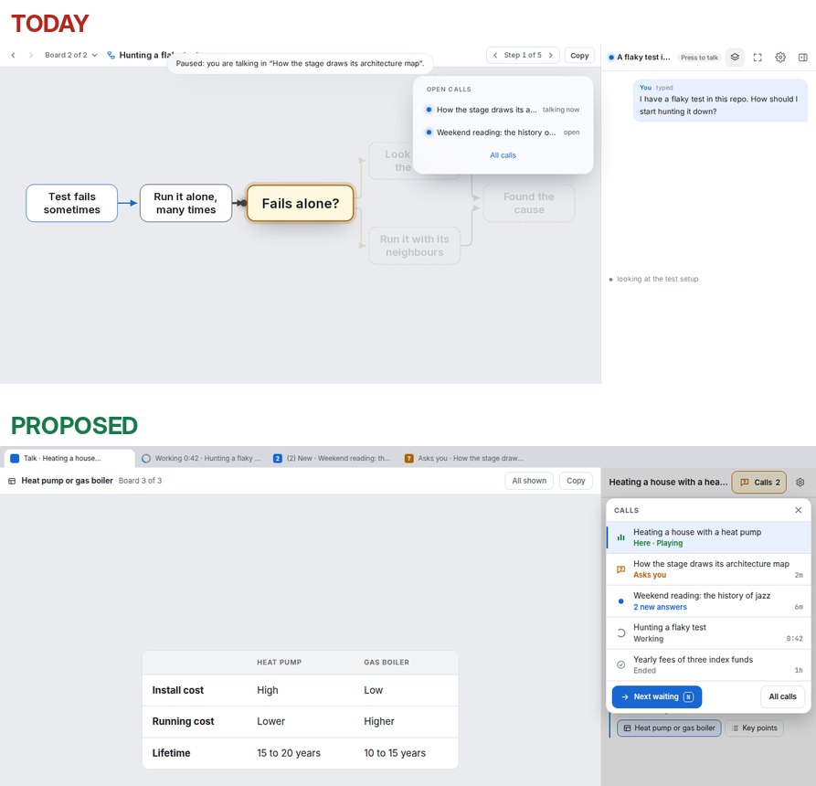
Problem
With several calls open the owner cannot tell which one is ready, working or waiting for him. The tab title is written once ('Talk · topic'), so a background tab shows nothing. The other-calls popup draws one blue dot for every state, shows working only as grey text, leaves out the current call, and truncates topics to 'How the stage draws its a...'. The All calls page has its own vocabulary ('Open' as a status beside an 'Open' button, no 'your turn'). When another call takes the voice, the playing call is paused by a 12 s toast on top of the board header that says 'you are talking in X' even when the other call only played.
Themes T13, T5, T1. Testers: power, returning.
Design
- The panel header gets one Calls button (icon plus 'Calls' plus a count when wide, icon and count when narrow, 40 px high). It shows the glyph of the most urgent state in the OTHER calls (asks you, then new answer) with the number of calls that need him, amber when one asks him, calm layers icon when nothing waits.
- Tapping it opens a sheet inside the panel (not a popover that overflows): one row per call, the current call included and marked 'Here', rows sorted by need (asks you, new answers, working, idle, ended). Each row is a two-line card on a shared grid: state glyph column, topic (full, never cut to a few words) over the state word, and an age or a running clock (0:42) on the right. Same glyph, colour and word everywhere: asks you (amber bubble), N new answers (blue dot), working (spinner, with seconds), playing (green bars), ended (grey check).
- The sheet's foot has 'Next waiting' (key N), which opens the call that needs him most, and 'All calls'. Tapping a row opens that call in the same tab. Esc and the X close it and focus returns to the Calls button.
- The tab title and favicon carry the same state, so the browser tab strip answers the question without opening anything: 'Working 0:42 · Hunting a flaky test' with a spinner favicon, '(2) New · Weekend reading' with a blue favicon showing the count, 'Asks you · How the stage draws...' with an amber '?' favicon, 'Talk · topic' with the plain favicon when nothing is going on. A hidden tab updates the title on every state change.
- The forced pause becomes a quiet line in the panel above the player: 'Paused: you started <other call topic>' with a 'Resume here' button. The wording follows the cause (started playing, started talking) and nothing covers the board.
- On a phone the Calls button keeps its glyph and count, the sheet fills the panel width, and rows keep two lines so no state word is dropped. Nothing scrolls sideways; every target is 40 px or more.
How it would be built
Files: skills/talk/static/call.js, skills/talk/static/call.html, skills/talk/static/call.css, skills/talk/static/home.html, skills/talk/talk.py, skills/talk/static/ (new small favicon generator inside call.js, no new asset files), skills/talk/tests/ (test for the summary fields and for the shared state function)
- call.js: replace callState(c) and paintCalls() with one shared stateOf(c) returning {key, word, glyph, rank} for asks, new, working, playing, idle, ended. paintCalls renders the sheet rows from view.calls plus the current call (built from the page's own view), sorted by rank. Move the pCalls popup into a panel-scoped sheet with focus handling (focus into the sheet, Esc closes, focus back).
- call.js: the callsbtn/callsdot/raildot logic (line ~563) becomes one paintCallsButton(): glyph of the top-ranked other call and a count; the raildot on the collapsed rail uses the same value.
- call.js: new setTabState() called from the existing state paint (appState, view.working, unheard, view.ended, the ask/stop state) that sets document.title and a canvas-drawn favicon (spinner, dot with count, amber question mark). It runs while the tab is hidden because it is driven by the poll, not by rendering.
- call.js: yieldFloor() stops calling showError. It sets a floorNote {id, cause} that paintQuiet() draws above the player with a Resume here button (which calls readerPlays, so following is untouched). Cause word comes from the server (see below).
- call.js: key N handler 'next waiting' opens the call with the lowest rank among the others.
- call.css: .callrow grid becomes glyph / topic over word / age; add .callsbtn.hot, .quiet, glyph colours from existing tokens (--warn, --acc, --good, --faint). Remove the old .callspop rules.
- talk.py: summary() (line ~2889) adds 'asks' (an open stop or say-back question waiting for the user), 'playing' (the call that holds the floor) and 'working_since' so the page shows a running clock; floor yields carry the cause (played, talking). The stamp keeps excluding nothing; the page adds its own call.
- home.html: stateOf() reuses the same words and glyphs, so the All calls page and the sheet say the same thing; the idle label 'Open' is replaced by 'Idle' with no duplicate button word.
What goes away
- the Other calls popover (#pCalls) and its h4 'Open calls'
- the 'Paused: you are talking in X' toast and its 12 s timer
- the one-style blue dot per call and the grey state label
- the divergent state vocabulary of home.html versus call.js
Risks
- Honours the repo's rules: the player claim (one page speaks; the quiet line only reports the claim being taken by another call), following (Resume here goes through readerPlays so follow state is unchanged) and queued answers (nothing here touches the queue).
- 'Asks you' needs a server-side definition. Stops (check, guess, say back) exist, but a plain Claude question in an answer is not a state; the first version should only mark an open stop, and say so in the word ('Asks you' only for a real stop).
- A canvas favicon and title updates in a hidden tab rely on the poll still running; browsers throttle hidden-tab timers to about once a second or once a minute, so the working clock in the title may lag. Show the clock only in the visible tab and a plain 'Working' in a hidden one.
- The title text becomes longer, so the first words must carry the state, since tabs cut the end.
- Colour is never the only carrier: glyph shape and word accompany every state (accessibility rule).
Effort: One to two days: shared state function, sheet markup and CSS, favicon and title, a small summary() extension and tests; the stop-based 'asks you' is the only part with design risk.
Build check
The plan holds. The proposal builds on code that exists and does what it assumes. Four gaps: summary() lacks 'asks' and 'working_since' (the latter must be a fixed start time or it churns the stamp); the floor cause does not exist, so use a neutral 'took the voice' wording first; the shared state function needs one common script for call.js and home.html; and the current call is not in view.calls, so its row is built from page state. The mock-up is sound and unchanged. Effort is M at the upper end.
- The named functions exist and match: callState/paintCalls (call.js ~689-710), the callsbtn/callsdot/raildot line (~562-563), yieldFloor (~671, its showError toast is the 'Paused: you are talking in X' text), the POPS map (~213) with Esc handling (~221), the #pCalls popover in call.html line 97, Server.summary (talk.py ~2889), and home.html stateOf (~44, 'Open' label and 'Open' button at ~70).
- Shared state function: call.js and home.html are separate files, so 'one shared stateOf' needs a new small static script that both load (or the words are duplicated). Put it in one file loaded by both pages. The node-run test (like stage_page.py) then covers it. This is not a new asset in the sense of the repo rules but the proposal says 'no new asset files', so state it.
- The current call is not in view.calls (stamp removes it as 'others'). The sheet must build its own row from page state (view.working, unheard, ended, player/floor). The proposal says so, but its state for 'asks' must come from the page's own stop state (stopped / stopcard), which the page has; for other calls it needs a new summary field.
- summary() has no 'asks', 'playing' or 'working_since'. 'playing' is already 'floor' (summary has floor), so only 'asks' and 'working_since' are new. Both go into the stamp signature (summary dicts are hashed), so working_since must be a fixed start time, not a ticking value, or every poll changes the version. The clock must be computed on the page from now - working_since (view.now exists).
- Floor cause (played vs talking) does not exist: view carries only floor_call and floor_n. yieldFloor is also called from the BroadcastChannel path with no server data. Either add a floor_kind to takeFloor's POST and to view, or keep one neutral wording ('Paused: <topic> took the voice'). Recommend the neutral wording first; it avoids a server change and a stamp change.
- Tab title/favicon: document.title is set once at call.js line 12; a setTabState driven by the poll is feasible, but hidden-tab timers throttle, so the proposal's own risk note (plain 'Working' in hidden tabs) is right. The state word must come first in the title. The favicon needs a <link rel=icon> in call.html (check whether one exists) and a canvas draw; the existing test rule 'suite starts no browser' means this part is only checked by node-shim for the pure title/state function.
- Key N: the repo's keyboard handler (~1256-1300) steers Space and arrows only when nothing is typed; N must follow the same guard. The house rule 'visible buttons over keyboard shortcuts' is met since Next waiting is a visible button; N is only an extra.
- CLAUDE.md rules touched: following (Resume here must call readerPlays(), correct), the player claim (the line only reports a claim already taken, correct), queued answers untouched. Add a CLAUDE.md sentence about the shared state vocabulary and the removed toast. No rule is broken.
- Effort: M is slightly low. Shared script + sheet with focus handling + favicon + summary fields + tests for two pages is about 2-3 days; call it M, upper end. The 'asks you' for other calls is the risky part (needs the server to know an open stop per call).
- No conflict with the call-page rules in CLAUDE.md (readerPlays/followAgain, one player claim, queued answers).
- Wording rule: the proposal ships 'Asks you' for only a real stop; keep that exact limit so the word does not promise more than the server knows.
- Mock check against ADR-003: the sheet is a popover-like overlay on the panel covering the conversation and, on a phone, the player; acceptable as a sheet but it must scroll inside itself, never sideways.
The 11 testers' votes
| Tester | Choice | Score | Why |
|---|
| daily | version | 5 | This solves my main pain. The tab strip shows state, the amber Calls 2 button opens a list sorted by need, and Next waiting jumps to the call that needs me. It is a popover, so one more click. |
| newbie | same | 2 | A 'Calls 2' button and a pop-up list of five conversations is more than I need. The pop-up covers the conversation, and I would not know which one is mine. Useful only if I really run several at once. |
| thumb | same | 3 | Calls list is clear, but I rarely juggle calls, and it covers the player while open. |
| sofa | version | 3 | The answer reads in full, which is nicer than today's cut-off lines. The tab strip and Calls button add things I would never use. |
| keys | version | 4 | A Calls button with a count, tab titles carrying state and a Next waiting shortcut give quick switching without a permanent column. |
| back | version | 3 | A Calls sheet sorted by need with tab titles showing state is handy when I leave several chats open. It is a lot of machinery for my one call. |
| ears | version | 3 | The Calls sheet sorted by need and the tab titles showing the state are clever when I run several calls. I mostly have one, and the sheet covers the conversation. |
| quiet | same | 3 | Calls with a count and a sheet sorted by need is useful if I run several calls. It also hides the conversation and adds a button I may not need. |
| greek | version | 4 | A list of calls with status words like Asks you, Working, 2 new answers, and a Next waiting button. Easy to read and to jump to the call that needs me. It hides the conversation while open, which is fine. |
| rush | version | 3 | The amber Calls 2 button and the tab strip with live state tell me which call needs me. The sheet lists calls by urgency with a Next waiting shortcut. It is helpful, but I only juggle calls sometimes, and the sheet covers my conversation. |
| taste | version | 3 | Calls sheet is clear with status colours and a Next waiting button. But it covers the panel and the status labels are many; fine, not much better for the main screen. |
input-2 · targeted · work large · Removes doubt about whether a message went. Withdraw already exists on the server. 11/11 better, mean 4.1.
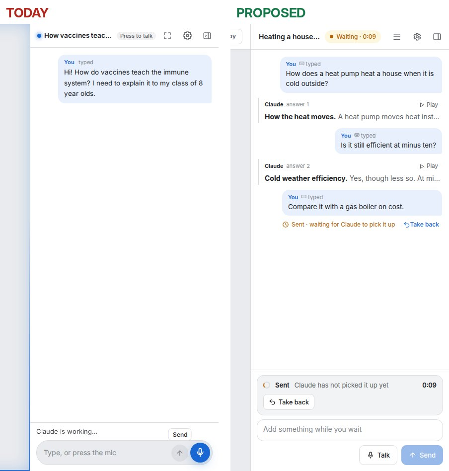
Problem
Once Send is pressed the person has no handle on the turn. The page shows a bare 'Claude is working…', a correction typed while Claude works is folded into the open turn, the old answer then lands and autoplays over the new board, queued answers have no skip, nothing says a turn was picked up, and a stalled turn tells a phone user to check a terminal. Take back exists only as an 8 s Undo on a Live voice turn.
Themes T6 Correction and superseded answers, T1 Waiting for Claude, T13 Juggling calls (state in the tab title), T5 Following (queued answer vs what plays), T8 Hearing. Testers: interrupter, first, power, phone, tv, typist.
Design
- Each message you send carries a lifecycle line under its bubble, in one right-aligned column: Sent, Claude has it, Answered, Replaced, Taken back. Icon and colour per state (clock amber, check green, warning red). The line has the wait counter the page keeps itself from the send time.
- A turn bar sits above the field from Send until the answer lands: spinner, 'Sent' or 'Claude is on it', the session's step when the activity list has one, the elapsed time, and the question quoted. While the turn is not yet collected it offers Take back (the existing /api/withdraw, now for typed turns too, not only Live).
- While Claude works the field says what you are adding to. With text in it there are two actions: Add (keeps the question, the text joins it as a marked addition) and Replace (sets the question aside). The target question is quoted in the turn bar so neither button is ambiguous; on a phone they are icons with that quote as the label.
- A replaced turn's answer is never auto-spoken or queued. It lands as a dashed card, 'Answer 3 · replaced', with Play anyway. The new answer is the one that plays and carries the board.
- Queued answers are a row above the player: 'Up next · answer 4', Play now and Skip. Skip drops it from the queue without marking it unheard-by-mistake.
- Stalled (3 min, STALLED_OPEN_AFTER) turns the bar amber with four actions that work from a phone: Send again, Ask for status, Copy question, Take back.
- State leaves the panel: tab title 'Working 1:12 · <topic>', 'Your turn · …', 'Speaking · …', plus an aria-live announcement; a pause forced by another call is a quiet line in this bar, not a stage toast.
How it would be built
Files: skills/talk/talk.py, skills/talk/static/call.js, skills/talk/static/call.css, skills/talk/static/call.html, skills/talk/SKILL.md, skills/talk/references/call-page.md, skills/talk/references/server.md
- talk.py Call.offer(): accept replaces=<turn id>. The server already has while_working folding (said['while_working']=True) and TurnQueue.withdraw; add said['replaces'] and mark the earlier you-entry superseded=True and its answer entry superseded when it lands (Call.add / the reply path that takes the turn through TurnQueue.accept_reply). The view serialises superseded and each you-entry's turn state (sent, collected, answered) from TurnQueue.reply_state, which Round 4 added.
- talk.py /api/say: optional 'replaces' (a you-entry id, validated against said_lines like /api/withdraw does). /api/withdraw: allowed for typed turns, same rule as today (only while no doorbell has collected it).
- talk.py: add 'ask status' as a say with a fixed text, so it needs no new route; Send again re-offers the same text as a new turn and withdraws the old one if uncollected.
- SKILL.md and references/server.md: tell the session that a turn with replaces means 'discard the earlier question, answer this one'; a turn with while_working and no replaces is an addition. Skills text is the contract, because only the session decides what the answer says.
- call.js: maybeAutoplay() and startQueued() already skip an answer with a later you-entry; add 'or e.superseded' to both so the stale guard no longer depends on list position, and keep seen.add(e.id) so it does not retry. statusText() builds the turn-bar text from view.turn {state, sentAt, step}; turnSentAt (line ~1692) becomes view-based so a reload keeps the counter. Add paintTurnBar(), paintLife(entry), paintQueue() (queued gets Skip: queued=null; paintAll()), and a titleState() that writes document.title.
- call.js sendText(): split into sendText(mode) with mode add or replace; the pause of current audio on send stays. The 8 s Undo (undoable, #undo) generalises into Take back on the lifecycle line and the turn bar.
- call.css: .life (right-aligned column), .turnbar (and .warn), .queue, .old (dashed superseded card), 44 px targets under 700 px.
- The stall message in statusText() is replaced by the stalled actions; the 'Paused: you are talking in X' toast moves into the turn bar's note line.
What goes away
- the plain 'Next answer ready: it plays when this one ends.' foot text
- the terminal-worded stall warning
- the 8 s Undo button as a separate control (folded into Take back)
- position-based staleness as the only guard against speaking an old answer
Risks
- Server side change: a 'replaces' turn, a superseded flag on entries and a turn state in the view are new contract; the session that answers must honour them, and that is guide text, not code, so a session that ignores it still answers the old question (the page then marks that answer replaced and mutes it, which is safe but may hide a useful answer; Play anyway covers it).
- Cancel of a turn in flight is not offered: Claude cannot be stopped from here. Replace and Take back are honest; 'Stop waiting' would only be a page-side mute and is deliberately left out. If the owner wants a real stop it needs the session side (an interrupt through the fleet), out of scope.
- Conflicts with CLAUDE.md: readerPlays/followAgain are not touched (Play anyway on a superseded card is a user play and calls readerPlays); the player claim and 'Playing on another screen' stay as they are; queued answers keep their id-based queue, Skip only clears it. The rule 'no answer number is consumed for a reply with no sentence' (Round 4) must still hold for a replaced turn's reply.
- Superseded marking depends on turn identity (t<N> ids from turn_count); two pages of one call must both read it from the view, never from page-local state.
- Tests: the suite has no browser; the server rules (replaces validation, superseded marking, withdraw of a typed turn, Round 4 reply-state interplay) are plain pytest on Call and TurnQueue, and call.js guards run under stage_page/call_page node shims.
Effort: Small client changes but a new server contract (turn state in the view, replaces, withdraw for typed turns), guide text for the session and tests for both. About four to six days including the node-shim tests and a manual run with a real session.
Build check
The plan holds. The build mostly holds. The server already has the pieces: while_working folding, a withdraw that works on typed turns, reply_state and the stalled/listening view fields. The client guards it names (maybeAutoplay, startQueued, statusText, undoable, turnSentAt) exist where it says. Three corrections: Take back for typed turns is client-only; reply_state does not give a sent/collected/answered state, so that must be derived and added to the view; and 'replaces' needs a mapping from entry id to turn id, because uncollected turns merge. The mock-up was sound apart from phone tap targets under 40 px, which I fixed and re-rendered. Effort L is right: the server contract and the guide text are the bulk of it.
- Take back for typed turns needs no server change: Call.withdraw(entry_id) and /api/withdraw (talk.py 2228, 3252) already work on any you-entry that no doorbell has collected. Only the UI is Live-only (undoable, call.js 299/1691, 8 s). The 'withdraw for typed turns' item in build.changes is client-only.
- TurnQueue.reply_state (live_turns.py 132) returns only 'ok', 'answered' or 'unknown'. It does not give the per-message sent / collected / answered states the lifecycle line needs. A new per-you-entry state has to be derived (uncollected = in TurnQueue.lines or pending_id; collected = open_ids or folded_ids; answered = neither) and put in the view next to working/stalled (talk.py 2811).
- Two id spaces exist: entries use int ids, turns use 't<N>' strings, and TurnQueue.offer merges a still-uncollected turn into the new id. 'replaces' therefore has to be an entry id, mapped to its turn through said_lines. Replacing an uncollected turn is simply withdraw + offer, with no flag. The flag is only needed when the turn was collected (open_ids), which is the case the interrupter persona hit.
- 'Superseded' cannot be marked when the reply lands unless the server remembers which turn id each you-entry joined. Call.offer must store that on said_lines or on the entry, and the reply path (talk.py ~3445, around reply_state/accept_reply) must set entry superseded on the answer entry. A reply with no sentence consumes no answer number (Round 4), so a superseded reply that carries only boards must still be refused and not counted.
- call.js guards confirmed: maybeAutoplay (828) and startQueued (818) both use 'a later non-withdrawn you-entry' by position. Adding e.superseded is a one-line change in each, but the position test already hides a superseded answer once the replacement is sent. The real new case is the replacement arriving first, so the flag matters only for a later reload or another page.
- statusText() (512) is the one place for the stalled and queued text, so the turn bar replaces that block. turnSentAt (300, 1692) is page-local and used by the Live filler (1726), so a view-based sentAt must be added next to it, not instead of it. document.title is set once (line 12), so titleState() is new but small.
- Missing from the proposal: tests. Server: plain pytest on Call and TurnQueue for replaces validation, superseded marking, per-entry turn state and a replace that carries no sentence. Client: call_page node-shim tests for the guards. Also add to CLAUDE.md, in the call-page paragraph, that 'replaces' and 'superseded' are server-held, so two pages agree, and that Skip clears only the page's queued value.
- Effort L holds, about 4 to 6 days. The server contract and the skill text are the bulk. The client is a turn bar, a lifecycle line and a queue row.
- No clash with the readerPlays/followAgain rule: Play anyway on a replaced card is a user play and must call readerPlays(). The proposal says so.
- Player claim and 'Playing on another screen' are untouched. Skip must not clear a claim, only the page's own queued value. With two pages, queued is page-local, so the second page keeps its own queue row. This is acceptable but should be stated.
- Round 4 rule (no answer number for a reply that holds no sentence) must still hold for a replaced turn's reply. This needs a test.
- House rule 'nothing Claude can run is handed back to the user': the stalled actions Send again, Ask for status, Copy question and Take back are all in-page, so this is satisfied. 'Check the terminal' is removed.
- ADR-003: wide shows icon and word, narrow shows icons, which the mock does. The lifecycle line is explanatory text in a list, but it is per-row state and not an explanation, so it is acceptable.
The 11 testers' votes
| Tester | Choice | Score | Why |
|---|
| daily | version | 4 | Saying 'Sent, Claude has not picked it up' with Take back and a counter removes my doubt about whether my message went through. Today shows nothing. |
| newbie | version | 4 | It tells me plainly that my message was Sent and Claude has not picked it up yet, with a clock and a Take back button. Typing box says 'Add something while you wait', which is clear. Slightly busy with the same status shown twice. |
| thumb | version | 4 | Sent state shows 'waiting for Claude to pick it up' and a Take back button, so I can fix a typo from the road. |
| sofa | version | 3 | The line about what Claude is doing and the quoted question is reassuring. The text is small and the panel feels busy. |
| keys | version | 4 | Take back plus a counter while sent and not yet picked up is real control, and the field stays usable so I can keep typing. |
| back | version | 4 | Take back on a sent question and the Waiting 0:09 pill show me what state things are in. It looks like today for older answers. |
| ears | version | 4 | Sent in amber with a counter and Take back, then a working bar with the question and elapsed time. I can tell if Claude got my words, which today I can't. |
| quiet | version | 5 | Sent, not yet collected, with Take back, then Claude is on it with the step, my quoted question and the elapsed time. I can still add something while I wait. It gives me control over a long message I just sent, which I care about most. |
| greek | version | 4 | It says Sent, Take back, then Working, and a correction replaces the open request instead of piling up. That solves my worry whether Claude saw my message. Nice for the phone with big targets. |
| rush | version | 5 | 'Take back' right after I send is gold for someone who changes her mind a second later. The counter and the 'Add to it, or correct it' field tell me I can still fix it. I would use this every day. |
| taste | version | 4 | Sent / Take back is honest and calm, and the correction flow is clever. The status appears in three places at once (pill, line under bubble, card), which is repetitive. |
3. Show the wait as a turn card with its own clock, its step, and a way out
trust-1 · targeted · work medium · Shows what Claude is doing during long waits (T1, high). Must key off view.stalled, not a new timer.
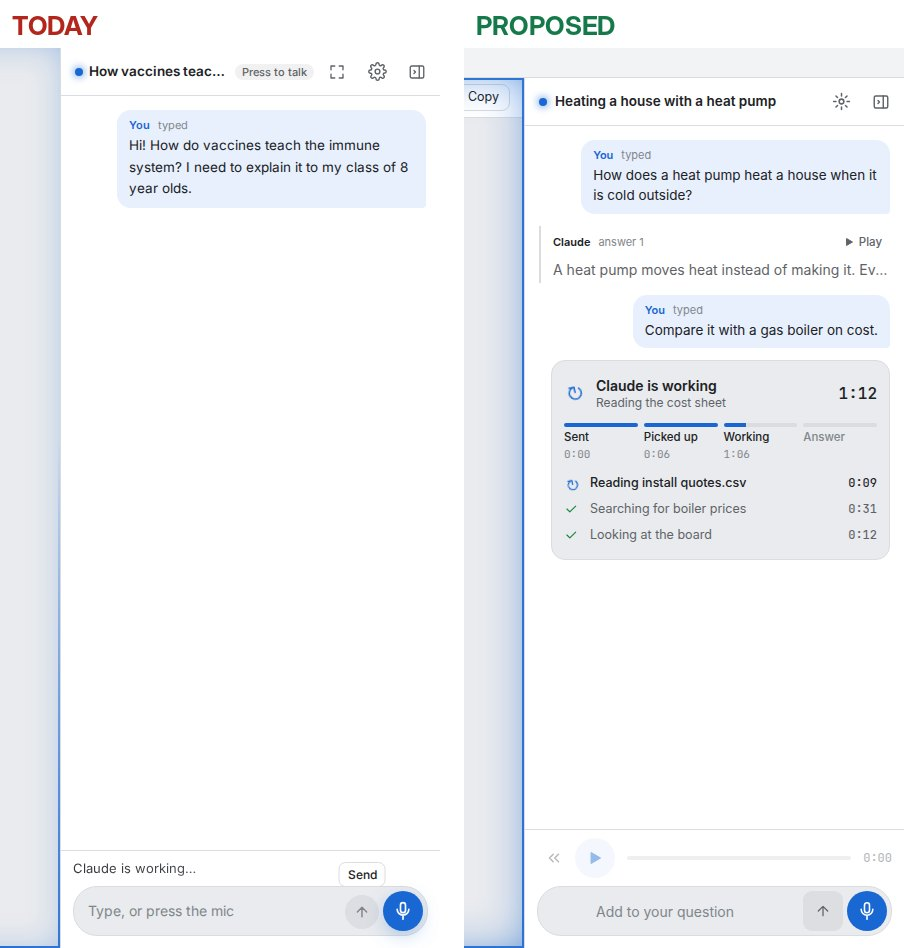
Problem
From Send until the answer lands, the panel shows one faint grey line, 'Claude is working…'. Elapsed seconds appear only while the session reports a running tool. After 180 s a warning tells the person to 'check the terminal', which a phone or remote viewer cannot do, and offers no action. A correction sent while Claude works is folded into the open turn, so the old answer lands later and is read aloud over the new board. Nothing can be cancelled.
Themes T1, T6, T13, T10. Testers: first, tv, power, phone, interrupter, greek, typist, keyboard.
Design
- From Send, a turn card sits under the person's message, where the answer will land. It carries a clock the page keeps itself (from the send time), so a silent wait is never silent.
- A four-part stepper (Sent, Picked up, Working, Answer) with the time each part was reached. 'Sent' and 'Picked up' come from facts the server already has (turn offered versus collected), so the card says whether Claude has the question at all.
- Under the stepper, the running step with its seconds, and the finished steps as aligned rows (icon, label, seconds). With no activity item it says 'Claude is working' and the clock still counts.
- After 90 s the card turns amber ('Taking longer than usual') and adds 'Last sign of life N s ago' plus Ask for a status and Cancel. If the turn was never collected for 180 s it reads 'Not picked up', says the question is saved, and offers Send again, Copy question and Cancel. No word about a terminal.
- A correction typed or spoken while the card is open is shown as 'Sent while Claude was working'. The answer to the earlier message lands marked 'Replaced', struck through, not read aloud, with a Play button. The card changes to 'Answering your correction: not read aloud'.
- When the answer lands, the card collapses into a chip on the answer ('1:52 · 5 steps') and the answer plays as today.
- The stage frame ring turns amber when stalled, the tab title carries state and clock (Working 1:12, Slow, Stuck, Answer ready), and the card is a polite live region so a screen reader hears each step change once.
- Phone: the card is compact (title, clock, stepper, icon-only actions of 44 px); a tap on the card opens it as a full card with words, the finished steps and the explanation. Nothing scrolls sideways at 390 px.
- The text field stays usable while waiting and its hint says 'Add to your question', so a draft is never blocked.
How it would be built
Files: skills/talk/static/call.js, skills/talk/static/call.css, skills/talk/static/call.html, skills/talk/talk.py, skills/talk/live_turns.py, skills/talk/references/call-page.md, skills/talk/tests (new tests beside test_r2_talk_core.py)
- call.js: replace the working, stalled and queued branches of statusText() with paintTurnCard(): one keyed element appended after the last you-entry, rebuilt from view.working, view.stalled, view.activity and a new view.turn {sent_at, collected_at, last_activity_age}. The page keeps the clock itself from sent_at (server time offset taken from the state poll) with a 1 s interval that only runs while the card exists.
- call.js: thresholds as constants (SLOW_AFTER 90 s, the server's STALLED flag for not picked up). Actions: Copy question (clipboard of the last you-entry), Send again (POST /api/say with the same text and a resend marker so the server folds it), Ask for a status (sends one short fixed line as a while_working message), Cancel (POST /api/cancel).
- call.js: document.title written by a new paintTitle() called from the same place as paintPill(): state word plus clock while working, then 'Answer ready' while unheard; the card is role=status aria-live=polite and announces a change of step, not each second.
- call.js: maybeAutoplay() (and startQueued) skip an answer whose turn id is older than a still-open later you-entry or turn; paintAnswer() adds the Replaced chip and keeps the text struck through with a Play button. The existing stale guard by list position stays as a second check.
- call.js: on phone the card header is a button toggling .open (same pattern as the other full cards); actions are icon-only when closed.
- call.css: .tcard, .steps, .rrow grid (shared column widths), amber tone using --warn and --warn-soft, the stage ring amber on data-state=stalled, 44 px targets under 760 px. Remove .status.shimmer use for working text; keep it for 'Turning your words into text'.
- talk.py: view() adds turn {sent_at, collected_at, last_activity_age}; activity_view() keeps finished steps (it already keeps the last 8) so the card can list them; new POST /api/cancel {entry} that withdraws a not yet collected turn through the existing withdraw() and, for a collected turn, marks it abandoned so post_reply drops its reply and does not number it; a turn answered after a later you-entry is flagged superseded in the entry so every page agrees.
- live_turns.py: TurnQueue exposes collected_at and last_activity as monotonic-to-wall offsets; the stalled wording moves out of call.js into a code (stalled/slow) the page words itself.
- SKILL.md and call-page.md: document the card, Cancel and superseded answers; the session guide tells Claude that a cancelled turn needs no reply.
What goes away
- The fixed 'Claude is working…' foot line and its shimmer
- The 'Check the terminal' stalled sentence
- The 'Next answer ready' plain-text queued line (it becomes a row with Skip)
Risks
- Cancel of a collected turn is new server behaviour: the session may still be writing a reply; post_reply must drop it quietly and not consume an answer number (Round 4 rule: no number consumed for a refused reply). Needs tests.
- Marking superseded answers changes autoplay; it must not touch readerPlays() or followAgain(): a superseded answer is simply not auto-started, and Play on it is a reader play as today. The player claim between pages is unchanged.
- Queued answers (queued in call.js) gain a Skip: it must clear queued and leave the claim alone; a held answer after the user spoke keeps its rule.
- Ask for a status injects a message into the open turn (while_working folding): worded as a fixed short line and shown to the person as a normal you-entry so nothing is sent unseen.
- Elapsed from sent_at depends on clock offset between server and page; use the offset from the poll, never the page's own now alone.
- The turn card adds height to a phone conversation that is already small (T12): compact form is one 96 px block; the stage-versus-panel split is not changed here.
Effort: Mostly page work (one card, thresholds, title, autoplay guard) with two small server parts (view().turn, /api/cancel). The collected-turn cancel and its tests are the long pole; about two to three days.
Build check
The plan needs the corrections below. The direction is sound and mostly buildable, but the build plan needs correcting. Today's thresholds (20 s uncollected, 180 s collected-silent) and the missing turn timestamps in the view must be handled in the design. The server's own stalled flag drives 'Not picked up', not a new 180 s timer. Withdraw, while_working folding, the autoplay stale guard and the queued variable already exist, so Ask for a status, Send again on an uncollected turn, no-autoplay of a replaced answer and Skip are small. Cancel of a collected turn is the one real new server feature, and it needs a quiet-drop rule and tests. Effort is M, closer to 3 to 4 days; the page-only half can ship first. The mock-up had a wrapping time column, an invented claim and a stale dark shot; these are fixed and all shots are re-rendered. The rest follows house style: aligned columns, icon-only on phone, no sideways scroll at 390 px, 44 px targets, both themes legible. No code in skills/ was changed.
- Thresholds are wrong. The design says 'not picked up' after 180 s, but live_turns.py already has TurnQueue.stalled. An uncollected turn is stalled after STALLED_AFTER = 20 s with no tool activity, and STALLED_OPEN_AFTER = 180 s applies only when a collected turn is silent or a newer turn waits behind an older one. The card must key 'Not picked up' off view.stalled plus view.listening and not collected, and must not add its own 180 s timer.
- 'Picked up' needs data the view does not carry. Call.view() sends only working, stalled, listening and activity. TurnQueue has collected_at (monotonic) and offered_at, and Call.offer creates the you-entry with no timestamp. The server must add turn {sent_at, collected_at, last_activity_age} in wall-clock time, plus the entry's send time. The call already sends 'now', so the clock offset can come from there.
- 'Ask for a status' needs no new path. Call.offer already folds a message into the open turn (said['while_working'] = True when turns.working). A plain /api/say with a fixed line does it, and it shows as an ordinary you-entry.
- 'Send again' on an uncollected turn is better done as withdraw plus say. Call.withdraw(entry_id) exists and only succeeds while no doorbell has collected the line. The proposal's 'resend marker' is not needed there. A collected turn that is stalled needs Cancel first.
- Cancel is the only truly new server behaviour. Today a collected turn can only be answered, not abandoned. It needs a new state in TurnQueue (open_ids, folded_ids), post_reply must drop the reply of an abandoned turn with no answer number consumed (Round 4 rule: Call.answer returns {} and the 400 path), and tests are required.
- Superseded answers: a correction already goes into the open turn with while_working, so Claude may answer both in one reply. A 'Replaced' mark therefore needs a server-set flag on the entry. maybeAutoplay already skips an answer when a later non-withdrawn you-entry exists (call.js ~836, 'view.entries.slice(at + 1).some(you && !withdrawn)'). So most of the no-autoplay rule exists; the gap is only the visible Replaced chip and a Play button.
- The queued line is statusText()'s 'Next answer ready' (call.js ~519). A Skip must only clear the 'queued' variable. It must go through no readerPlays/followAgain path, and the player claim is untouched.
- The card replaces statusText() working, stalled and queued branches, but the foot line also serves live/recorder/elsewhere/ended states. Those stay, so statusText() is trimmed and not removed.
- document.title is set once at call.js line 12 ('Talk · ' + topic). paintTitle() is new work but small.
- Effort: M is slightly low. Server turn timing, Cancel with its collected-turn semantics, superseded flag and tests are about 3 to 4 days with the page work. The page-only part (clock, stepper, title, thresholds) is S and can ship first.
- The 'Check the terminal' text is replaced, which fits CLAUDE.md. The tab-title writes and live region must not break the 'one page speaks' player claim. The card must not call readerPlays().
- House style, 'one fact per table cell': the stepper label plus its time sit in one cell, which is acceptable only because the time is its own line. Keep them as separate rows in the build.
- CLAUDE.md says a doc change (SKILL.md, references/call-page.md) goes in the same change; the proposal lists it, so no conflict.
The 11 testers' votes
| Tester | Choice | Score | Why |
|---|
| daily | version | 4 | A working card with clock, four-part stepper and step times shows what Claude is really doing, so I trust the wait. It is a little large, but I like it. |
| newbie | version | 5 | A card that says 'Claude is working' with a clock and four steps (Sent, Picked up, Working, Answer) with times shows me it has not frozen. That is what makes me trust it. It would stop me pressing things in a panic. |
| thumb | version | 4 | Blue glow around the stage and a progress bar (Sent, Picked up, Working) tell me Claude is doing something. The Slow state shows an amber glow too, so I trust it more. |
| sofa | version | 4 | The Claude is working box with a clock and steps tells me something is happening. Today shows nothing, so I would worry. The text is a bit small. |
| keys | version | 3 | The working stepper with times is nice for transparency, but it is heavy and I do not need a blue frame around the whole page. |
| back | version | 3 | The four-step stepper with times is reassuring when I come back and find Claude working. The history is the same as today, so my main problem is not solved. |
| ears | version | 4 | A big card with a running clock and four named steps tells me at a glance that something is happening. Today I just see nothing. The stepper is a bit much text, but I like it. |
| quiet | version | 4 | The four-part stepper (Sent, Picked up, Working, Answer) with times and finished steps shows exactly where my question is. It is a lot for a short wait, but great when it takes minutes. |
| greek | version | 5 | The phone shows a glow around the stage while working, steps Sent, Picked up, Working, Answer, and a Taking longer than usual card with last sign of life. I finally know whether it is alive. Very reassuring. |
| rush | version | 4 | A four-step progress (Sent, Picked up, Working, Answer) with times on each step and the tab title showing the clock means I never wonder if Claude is stuck. The blue frame on the page is a bit much, but I would trust it more than today. |
| taste | version | 4 | Four-step progress (Sent, Picked up, Working, Answer) with the glowing stage border tells me what's happening at a glance. Slow state with an amber card is calm. The glow around the stage is a bit much. |
4. Give every message a visible life: a counted wait, a real way out, replaced answers marked, a skip for queued ones
revampA-2 · targeted · work medium · Best variant of the wait idea: covers T1 and T6. Cancel and supersede are new server work.
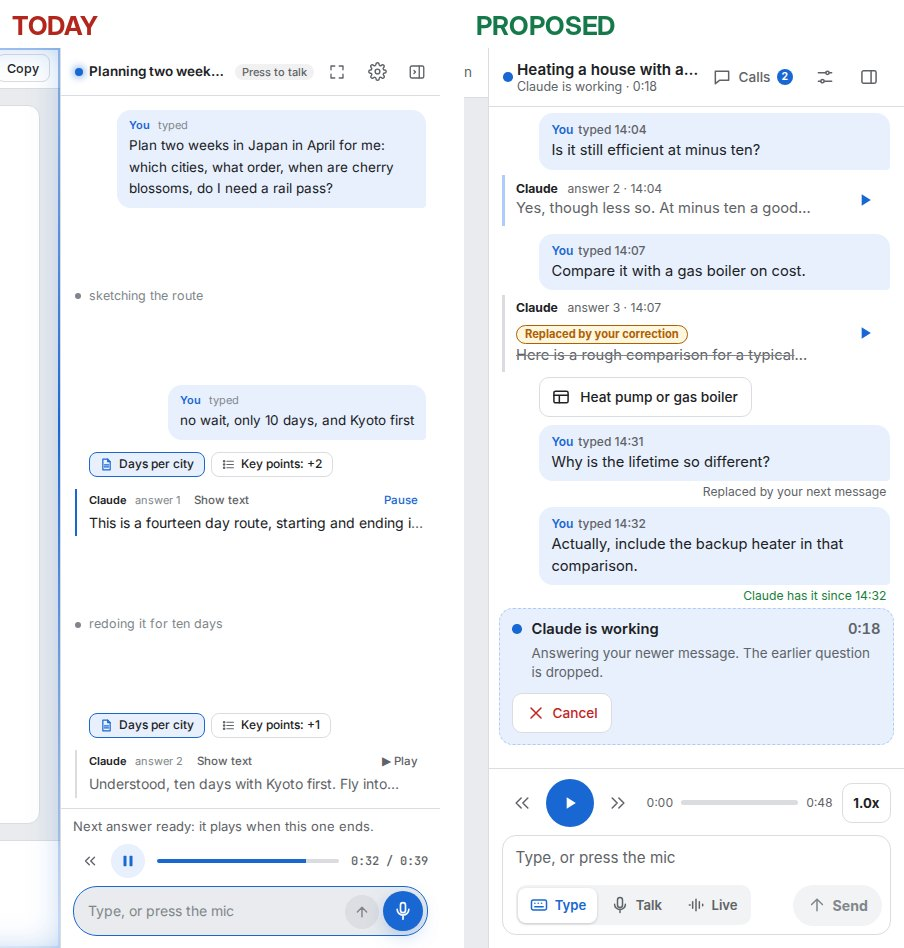
Problem
When the person corrects a question while Claude works, the old answer still lands and autoplays over the new one, nothing marks it as replaced, the queued answer cannot be skipped, the 180 s stall warning has no action, and the only wait signal is a bare line. People cannot trust what they said was received or how long to wait.
Themes T1, T2, T6, T13. Testers: interrupter, typist, first, power, phone, tv, keyboard.
Design
- Keep today's panel as it is: bubbles for the person, folded one-line Claude answers, the player and composer. Only the turn lifecycle changes.
- Under each sent bubble one line says where the message is: 'Claude has it since 14:31', 'Answer ready', or 'Replaced by your next message'. It is a status, not a toast.
- While Claude works, one card under the bubble shows 'Claude is working', a clock the page keeps from Send, and the session's step. After about a minute it adds 'Taking longer than usual' and Ask for status, Send again, Copy question, Cancel. The card disappears when the answer lands, so no stale progress lines remain.
- A correction sent while a turn is open replaces it: the card says 'Answering your newer message. The earlier question is dropped.' The earlier answer, if it lands, shows a 'Replaced by your correction' tag, is struck through in its fold, and is never auto-spoken; it plays only on a tap.
- A queued answer shows a 'Next' tag and a line above the player: 'Next: answer 4. Plays when answer 3 ends' with a Skip button.
- A pause forced by another call is a quiet line above the player ('Paused because you are talking in Sourdough starter rescue') with Resume, instead of a toast over the stage.
- The header state line says the same in words ('Claude is working · 0:18', 'Speaking answer 3 · 1 waiting'); the tab title and a live region repeat it.
- All new targets are at least 40 px; on a phone the same rows apply at 390 px with no sideways scroll.
How it would be built
Files: skills/talk/static/call.js, skills/talk/static/call.css, skills/talk/talk.py, skills/talk/live_turns.py, skills/talk/tests/
- call.js: statusText gets a page-kept clock started at the Send click (not only when an activity item runs), a slow state after a set time with the action row, and removal of the card when the answer lands; this also removes the leftover status lines that make the blank gaps.
- call.js: a per-message status line derived from the turn state the server already sends (TurnQueue.reply_state, the stalled flag in Server.stamp, listening in view()).
- call.js: when a later user message is open, mark an arriving earlier answer 'replaced', skip its autoplay (the automatic-play path, which already must not call readerPlays()), and keep it playable by tap through readerPlays().
- call.js: the queued variable gets a Skip action that drops the queued answer and starts the next or stops; the foot announces it as today.
- call.js: replace the 12 s floor toast with a panel line fed by the same /api/state player field; Resume calls the existing play claim path.
- talk.py: a cancel/replace route (POST) that marks the open turn superseded in TurnQueue and accept_reply refuses or tags a reply to a superseded turn; view() includes the superseded flag per answer.
- call.css: rules for the status line, working card, tags and queue line; fix the rule that stretches status lines.
What goes away
- The bare fixed 'Claude is working...' foot text
- Stale progress lines left in the conversation
- The 'Paused: you are talking in X' stage toast
- Auto-speaking of an answer that a later message replaced
Risks
- Player claim: Resume and the quiet line must use claim_player and the player field, not localStorage, and must not start an answer on a page that does not own the claim.
- Queued answers: Skip must keep the order guarantee of queued in call.js; a skipped answer stays in the conversation as played-never, not deleted.
- Replaced detection: the server must decide which answer is replaced (by answer number versus the user entry count), since Talk numbers answers by Claude entries; doing it in the page alone could mark the wrong answer when two pages are open.
- Cancel cannot stop work already done in the Claude Code session; it can only discard the reply, and the card must say so honestly.
- Task order in the repo's Round 4 rule: a reply with only boards still answers 400 with NO_SENTENCE; a cancelled turn must not consume an answer number.
Effort: Mostly call.js state handling and one server route, with CSS for four small pieces; the risk is in turn bookkeeping on the server and the two-page player claim, not in layout.
Build check
The plan needs the corrections below. Sound direction and the right themes (T1, T2, T6, T13), and most of it maps onto existing code (statusText, queued, yieldFloor, the stalled flag). But the build note undersells the server: no cancel or superseded state exists for turns, and folding (folded_ids) means the 'earlier question is dropped' wording is false today. It needs a TurnQueue change, a per-answer replaced flag and tests, so the effort is M to L, not M. The mock had one real layout bug (the Next line overlapping and truncating), now fixed and re-rendered. The other states pass the house-style checks.
- Holds in part. statusText() in call.js (line 512) is the single status line; its working branch shows only the running activity label with seconds, else 'Claude is working…', and the stalled branch already exists (view.stalled, Server.stamp). So a page-kept clock from Send, a slow state and an action row are new state in the page; nothing on the page records the Send time today.
- 'Cancel' is not just a route: talk.py/live_turns.py have no superseded or cancel state. TurnQueue has offered_ids, open_ids and folded_ids; reply_state() returns only ok/answered/unknown and accept_reply() discards the id. A cancel route needs a new set (cancelled_ids) and a new reply_state value, and post_reply (talk.py ~3404) must answer for it without consuming an answer number (Round 4 rule). The existing 'superseded' event in next_turn is about doorbells, not turns, so it cannot be reused.
- Correction folding already exists server-side (folded_ids): a correction sent while a turn is open is folded into it. The mock's 'earlier question is dropped' therefore contradicts today's behaviour, where Claude receives both. Either the design changes folding (a larger server change touching the turn contract) or the card must say what really happens; the Cancel risk note in the proposal (cannot stop work already done) applies equally.
- Never auto-speaking a replaced answer needs the server to say which answer is replaced (the proposal says so in risks). Since Talk numbers answers by Claude entries and a corrected turn can still be answered, view() must carry a per-answer 'replaced' flag; the page-only version would mislead with two pages open.
- The floor toast is showError() in yieldFloor (call.js 676) and the pause itself comes from parkLive/yieldFloor via view.floor_call; Resume must go through the player claim (claim_player / POST /api/player) and takeFloor, not just audio.play(). Feasible, small.
- queued (call.js 817) is a single variable holding one answer, not a list. 'Skip' = set queued to null and leave the entry playable by tap; the entry stays in view.entries so 'played-never' is free. The mock's '1 waiting' count is always 0 or 1 today.
- Tests are not named: skills/talk/tests/ needs new cases (turn cancel in live_turns, post_reply on a cancelled turn, view() replaced flag, call-page logic under stage_page/call_page node harness for the clock and queued skip). Docs: references/call-page.md and the CLAUDE.md call-page paragraph (queued and the toast) must change in the same change.
- Effort: M is low. Server turn bookkeeping plus two-page behaviour plus tests plus docs make it M to L; L if folding semantics change.
- CLAUDE.md: an automatic play (a new answer) must not call readerPlays(); a replaced answer must skip autoplay in that same path and stay tap-playable, which is compatible, but the queued answer logic (queued in call.js, announced in the foot) must keep its order guarantee when Skip drops it.
- CLAUDE.md player claim: Resume and the quiet floor line must use the server claim (/api/player, claim_player), and a page that does not own the claim must not start an answer.
- CLAUDE.md Round 4: a reply with only boards still answers 400 NO_SENTENCE and takes the turn only after an answer exists; a cancelled turn must not consume an answer number or accept_reply state.
- Global rules: the proposal is correct on 'visible buttons over shortcuts'; the repo rule 'The stage gets no caption' and 'every answer folds to one line' stay intact, since only the panel lifecycle changes.
The 11 testers' votes
| Tester | Choice | Score | Why |
|---|
| daily | version | 4 | The counted wait card with the step and 'Nothing is lost' reassurance, and a 'Claude has it since' line, is calming. The correction tag is clever. The card is big but earns it. |
| newbie | version | 5 | A working card with a clock, what Claude is doing, and 'Taking longer than usual. Nothing is lost: your question is saved' reassures me a lot. The buttons (Ask for status, Send again, Copy question, Cancel) are all in words. Best for when I am unsure. |
| thumb | version | 4 | Queued state with 'Next: answer 4' and Skip is helpful so I know what's coming. Answer ready label is clear. |
| sofa | version | 4 | The answer text is larger and clearly separated. When it is slow it says nothing is lost and gives big buttons. I would feel looked after. |
| keys | version | 3 | A counted wait card is good feedback, but the correction tag is a niche case and the rest is unchanged. |
| back | version | 3 | The counted wait card with clock and Taking longer than usual is reassuring, and the Replaced by your correction tag is clear. The history is still a long chat list so catch-up is not better. |
| ears | version | 4 | A working card with a clock, the step, and an honest Taking longer than usual with a message that my question is saved. That reassures me when I'm not watching. |
| quiet | version | 5 | The counted wait with a clock, the step and Ask for status or Cancel is what I want when typing a long question and nothing comes back. Seeing an old answer marked Replaced by your correction is honest and clear. The Replace button on my draft is a great detail. |
| greek | version | 4 | A fixed Next line with Skip tells me what plays after this answer, which today's page never says. Rows are a bit small and the list is busy, but it is more informative than today. |
| rush | version | 5 | This is the one that gets me: I changed my mind and the old answer is struck through and tagged 'Replaced by your correction', plus the card says it is answering my newer message and dropping the earlier one. The button even says Replace. Today's page never tells me what happened to my old question. |
| taste | version | 4 | Fixed 'Next: answer 4, plays when answer 3 ends' with Skip is exactly the clarity I want for queued answers. Rows are dense but readable. |
5. Replace the chat log with a Now card that holds the whole current turn, and a headed timeline of earlier answers behind it
revampB-1 · whole-panel · work large · Top user value (mean 4.3, daily 5) and the best answer to follow and read. Large effort. It reverses the one-line fold rule and the build check did not hold.
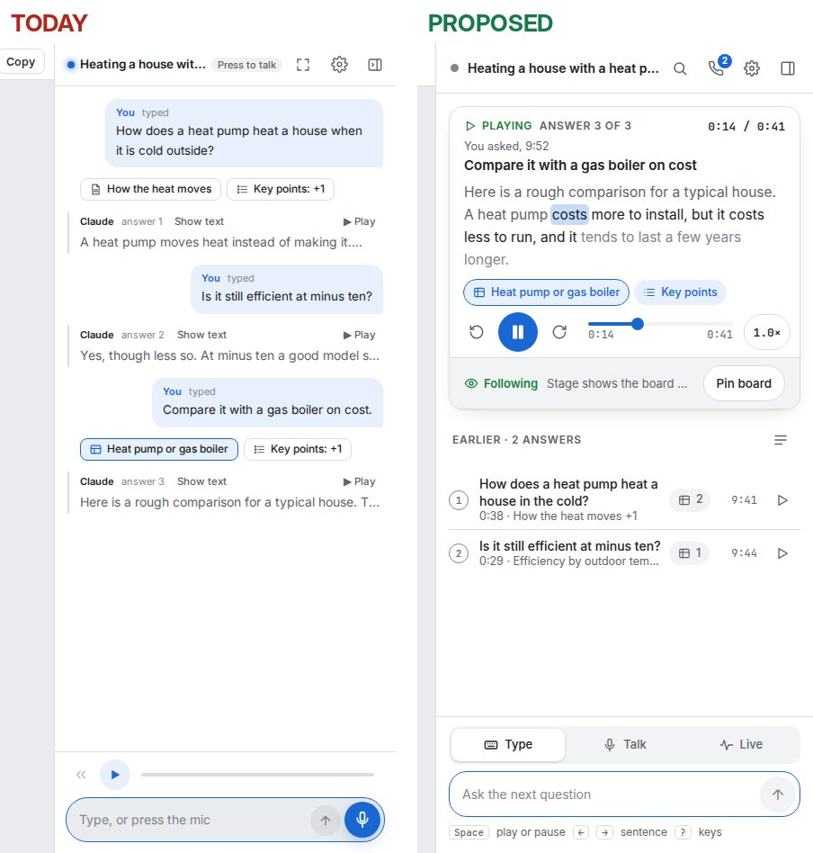
Problem
Today's panel is a chat log: every answer folds to one truncated line, progress notes pile up, the player sits at the foot far from the answer it controls, and the wait is a bare 'Claude is working...'. The person has to assemble 'what is happening, what is playing, where is the stage' from four places.
Themes T1, T2, T3, T4, T5, T6, T8, T10, T11, T12, T13. Testers: first, tv, power, phone, finder, returning, listener, interrupter, keyboard.
Design
- Concept: the panel is one Now card plus a timeline. The Now card is the single place for the current turn; everything older is a row in a headed timeline under it.
- Now card, playing: eyebrow with state in words and icon (Playing, Paused, Ready, Working, Slow) and the answer number; the clock on the right. Under it the question that was asked as the title, then the FULL answer text with the word highlight, at a readable size (TV scales it up). Boards of this answer as named chips (icon and title, never 'Key points: +N' alone). Transport directly under the text: back one sentence, play/pause, next sentence, seek bar with time, speed chip (1.0x cycles). Every control acts on the answer the card names, so Space, Back and the stage refer to one thing.
- Follow strip at the card's foot: 'Following' (green, eye) or 'Pinned' (amber, pin) with one line naming the board, and a single button (Pin board or Follow). A chip tap says it pinned; returning is one tap, always visible.
- Working state: the same card turns into a turn tracker. It shows the question, a counted clock the page keeps itself from Send, the session's steps as a short checklist (done, current with seconds), and Cancel. After the stall time the card turns amber and says in plain words that the question is saved, and offers Send again, Ask for status, Copy question and Cancel. Typing in the field during a wait shows 'Draft kept. Send replaces the question in flight' (latest word wins).
- Earlier timeline: header 'Earlier, N answers' with Expand all. Rows aligned in columns: number node, question as the topic (two lines), second line with spoken length and board titles, boards icon with count, time, Play. Tap a row to open its full text inline (on a phone it opens as a full card). A 'Since you left, 2 not heard' band with Play from here sits at the first unheard row and unheard rows have a filled node. Progress notes are not rows: they live only in the Now card's step list and fold away when the answer lands.
- Header: call title with state dot, Search (searches answers and board titles, results are the same rows), Other calls (badge with count, each call listed with state in words), Settings, Collapse. Footer: a Type / Talk / Live segmented control always visible, the field with Send, and a hint line with the listed keys. Live shows a level meter and Stop in place of the field.
- Phone: stage on top, panel under it as today. Same structure, icons only on buttons, the Now card text scrolls in a short window, rows drop the time column, tap targets 40 px or more, hint line hidden. TV: one scale step up for the answer, rows, buttons and chips (the mock sets 24 px answer text, 52 px controls).
- Dark and light follow tokens.css; state is also put in the tab title and an aria-live region on the Now card.
How it would be built
Files: skills/talk/static/call.html, skills/talk/static/call.js, skills/talk/static/call.css, skills/talk/talk.py, skills/talk/references/call-page.md, skills/talk/SKILL.md, CLAUDE.md, skills/talk/tests (page tests under node)
- call.js: replace the chat renderer (the turn list around the fold set at ~309-343) with renderNow() and renderTimeline(); the Now card is built from the answer that readerPlays/the player claim points at, so Back, Space, seek and the card name one answer. Keep paintReader for the stage; the card reuses its sentence runs (sentenceRuns/starts) to draw the same now-word and to give back/next by sentence (a new sentenceStep() on those runs).
- call.js statusText (~523): replace the fixed foot line with a turn tracker; the page keeps its own clock from the moment of Send (sentAt on the turn), shows steps from the activity stream when present, and falls to 'Working 0:47' otherwise. The stalled branch gets plain wording and four actions: resend (POST say with the same text), copy, ask for status (a say with a fixed status question), cancel.
- call.js: a follow strip bound to followAgain()/the following flag so the state is always visible; chip taps call a new pinBoard() that sets following off and says so. Keep readerPlays() for every user play and the automatic-play rule for new answers unchanged.
- call.js: mode control (Type/Talk/Live) moves from gear into the footer; gear keeps engine, theme, TV, key list. Search filters the timeline rows by question, answer text and board titles; Expand all toggles the unfolded set. 'Since you left' computed from the last answer the page played (stored per call in localStorage, falls back to the server's played marker).
- call.js: tab title and an aria-live region driven by the same state object (working, new answer, your turn, ended); the other-calls list shows state words.
- call.css: new .now, .tl rows on one grid, TV scale as one set of variables replacing the scattered [data-tv] overrides; fix the .status{flex:1} leak into .line.status; phone rules put the Now card text in a max-height window.
- talk.py: status entries (call.add('status')) are marked transient so the transcript folds them when the answer lands; /api/state gets a per-answer played flag for the catch-up marker; optional cancel of an open turn (TurnQueue) so Cancel and 'Send replaces the question' work server-side.
- Docs: call-page.md and CLAUDE.md say the panel shows the newest answer in full.
What goes away
- The one-line folded answer and its Show text link
- Permanent 'thinking...' status rows in the conversation
- The bare 'Claude is working...' foot line and terminal-worded stall text
- Mode and speed hidden in the gear
- The chip row sitting before each answer (boards move to the answer's card and rows)
Risks
- CLAUDE.md says every answer folds to one line in the panel because the stage reader carries the text. The Now card repeats the newest answer's text next to the reader. Mitigation: the reader keeps the stage while no board is up and becomes the strip under boards; consider hiding the panel text when the reader shows it full-size (sound-on desktop), and keep full text in the panel for TV and sound-off. This needs the owner's ruling.
- Player claim: the card's controls must act only on the page that holds the claim; a page without it shows 'Playing on another screen' in the eyebrow instead of transport.
- Queued answers: the queued line needs a place; it appears as a row in the timeline marked Queued with Skip (shown in revampB-2).
- Following: a pin is shown, but autoplay of a new answer still turns following back on as documented; the strip must reflect that.
- The server-side cancel is new behaviour and must not drop an answer already collected; Send-replaces needs the same rule as proposal B-2.
- A tall Now card can starve the timeline on a phone with a board up; the text window is capped at about 16 percent of the height and the card should collapse its text after the answer ends.
- Behavioural tests of call.js under the node DOM shim need rewriting; layout can only be checked in the browser harness.
Effort: New renderer, tracker, search, catch-up marker and a server cancel; the page tests and docs change with it. About one to two weeks including the phone and TV passes.
Build check
The plan needs the corrections below. The build mostly holds. The call.js hooks it names exist and behave as assumed: statusText, sentenceRuns, readerPlays, followAgain, and the heard_upto marker. Three assumptions are wrong. TurnQueue is in live_turns.py and has no cancel. The server does not serve a step checklist with per-step times. Entries carry no sent time for the clock. The Now card also breaks the CLAUDE.md rule that answers fold to one line, so the owner must rule on that. Effort stays L. The mock had four faults, now fixed: a duplicated answer in the returning state, phone actions cut off in the stalled state, undersized phone mode buttons, and TV controls that did not scale. I re-rendered all states in light and dark, desktop and phone. No sideways scroll shows at 390 px.
- Server cancel is new work: TurnQueue lives in skills/talk/live_turns.py (line 18), not talk.py. It has working, stalled, listening, reply_state and accept_reply, but no way to withdraw an open turn. Cancel and 'Send replaces the question' need a new TurnQueue method, a route in talk.py, and a rule that a collected turn is never dropped.
- The per-answer 'played flag' already exists: Call.heard_upto (talk.py ~2068, in view() and the stamp key) and the switcher's unheard count (~2892). The 'Since you left' marker needs no new server field; the page only has to report what it has played. Drop that item from the plan.
- The steps checklist is not served today: activity_view() (talk.py 2376) returns the last 8 {label, state, seconds}, where seconds is time running so far, not a finished step's duration. The mock's done rows with 0:02 and 0:09 and 'Question received' are invented. Either show only the running step, or keep started and ended per step in talk.py.
- The page clock from Send needs a source: entries carry no sent time and the page has no sentAt. Use a server timestamp on the 'you' entry, because a page-only clock is lost on reload.
- Status entries (call.add('status'), talk.py ~3451, rendered as .line.status in buildEntry, call.js ~340) need a transient flag plus a renderer skip: small. The .status{flex:1} leak is real (call.css 147 vs 127).
- Reuse, do not replace: statusText() (call.js 512) already has working, stalled, queued, 'Playing on another screen.' and ended branches, so the Now card eyebrow should be driven by it. sentenceRuns(e) (989) gives word runs, so sentenceStep() is easy. readerPlays, followAgain and follow exist as described.
- TV scale: the proposal says replace the scattered [data-tv] rules, and there are only about 10 in call.css (267-276), so a variable set is feasible.
- The 'folds to one line' rule: CLAUDE.md says every answer folds to one line in the panel. The Now card breaks this, so it needs the owner's ruling and a CLAUDE.md and call-page.md edit. Tests that fold or unfold answers (call_page tests in skills/talk/tests/test_call_page.py) must be rewritten.
- Effort: L is right, and the part about 'one to two weeks' is plausible. The server cancel, the step stream and the clock source are the parts the proposal underrates.
- CLAUDE.md: 'every answer folds to one line in the panel' and 'the stage gets no caption', with the reader carrying the text on the stage. The Now card shows the full newest answer in the panel next to the reader. The owner must rule on it. Suggested: show full text in the panel only when no board is up, for TV, and for sound-off.
- CLAUDE.md: automatic play of a new answer turns following back on, and the player claim lets only one page speak. The Now card's transport and the Pin/Follow strip must obey both, and show 'Playing on another screen.' instead of transport on a page without the claim.
- Owner rule 'Visible buttons over keyboard shortcuts' and ADR-003: the mock respects it (icon and word wide, icon only on a phone). Moving the mode control from the gear to the footer is consistent with it.
- Owner rule 'a mock-up is never kept in a repo': the mock stays in .scratch only and must be deleted once the page is built.
The 11 testers' votes
| Tester | Choice | Score | Why |
|---|
| daily | version | 5 | A single Now card that holds the full text with the lit word, board chips, transport, speed and the Following strip, over a short list of earlier answers. It is my place at all times and the best at it. |
| newbie | version | 4 | One 'now playing' card with the full text, highlighted word, board buttons, and controls together, then older answers below. Very easy to follow. The small play and speed buttons have no words. |
| thumb | version | 4 | Playing card holds everything in one place, with big pause, and it's easy to follow. A bit tall, but I can read it quick. |
| sofa | version | 5 | One big card with the whole answer, the lit word, a large pause button and Following is what I would look at. Earlier answers sit quietly below. |
| keys | version | 4 | A Now card holding the full text, board chips, transport, speed and a following strip in one place is compact and easy to tab through, though the card is crowded. |
| back | version | 4 | A Now card pinned on top with the full text, a clear Playing label and following strip, then an Earlier list with counts and times. It is easy to tell where I am, though the earlier list shows less than the other versions. |
| ears | version | 5 | One Now card holds the full text with the word lit, board chips, big pause button, time and speed. It states Playing at the top, and I can follow it by ear and by a glance. Best for listening. |
| quiet | version | 4 | One Now card with the full text, board chips, transport and a Following strip puts everything I need in one place. The Earlier list below is neat, but the card gets heavy and eats the space. |
| greek | version | 4 | One big card with the state, the question, the lit word and the player is easy to follow, and the slow state gives four big icon buttons. I would need to learn the icons, and the text size is small, but the structure is calm. |
| rush | version | 4 | The Now card puts the current answer, a big play/pause, the speed and a 'Following' strip in one box, so I see what is talking right now. Earlier answers sit in a short list below. It feels busy, and I do not see what happens when I interrupt. |
| taste | version | 4 | One big card for the current answer with PLAYING state, board icons and player inside it is calm and focused. The slow state with icon-only buttons is cryptic, and the card feels heavy. |
6. Greet a returning reader with what they missed, where it stands, and one tap to hear it
catchup-2 · targeted · work medium · Separable, medium effort, 11/11 better, mean 4.2. Heavy for short absences, so show it only after a real gap.
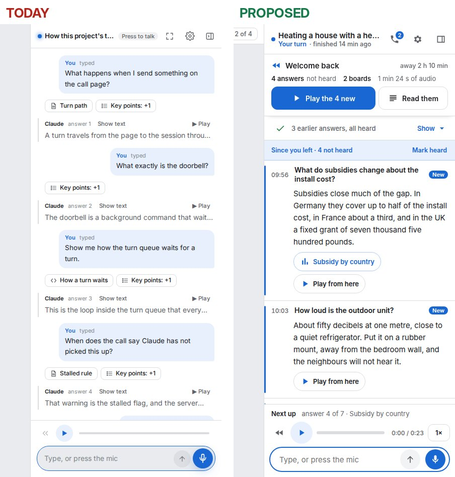
Problem
A call left running for hours looks the same when you come back as when you left. Nothing marks the first unheard answer, nothing says how many there are, whether Claude is still working or waits for you, and the other-calls list shows identical dots. The server already knows (heard_upto, unheard in the call stamp), but the page uses it only for a dot, and the tab title never changes, so a background tab stays silent.
Themes T13, T3, T5. Testers: returning, power, phone, first, listener.
Design
- On return (the page opens or becomes visible after more than a few minutes away, with answers past heard_upto) a card sits at the top of the conversation: 'Welcome back, away 2 h 10 min', then three facts (4 answers not heard, 2 boards, 1 min 24 s of audio) and two 46 px buttons, 'Play the 4 new' and 'Read them'. Play starts the first unheard answer and goes on through the others. Read them scrolls to the divider and plays nothing.
- If Claude is still working, the card says so first, in a warm band with the question and the page's own clock ('Claude is still working on ... 1 min 40 s'), and the panel header line turns to 'Working, 1 min 40 s'. Otherwise the header line says 'Your turn, Claude finished 14 min ago'.
- The heard past collapses into one row ('3 earlier answers, all heard', Show). Under it a divider reads 'Since you left, 4 not heard' with a Mark heard button. Each unheard answer is a card with a New tag, its question, full text, its boards by title and Play from here (38 to 40 px targets).
- The stage does not move on return: it keeps the last board the reader saw until they press Play, which then moves it to the board of the answer played. No text-only answer takes over the stage on return.
- The tab title carries the state: '(4) Heat pump, new answers', 'Flaky test, working', 'Parthenon, your turn', 'Sourdough, ended'. The other-calls popup lists every call, the current one included, with an icon, a word and a one-line detail in the same three columns: new answers (blue), working with its clock (amber), your turn (green), ended (grey). The 'Paused: you are talking in X' toast becomes a quiet line in the panel status.
- On a phone the card scrolls away with the list instead of sticking, its buttons stay in one row, and the heard past is already one row, so the unheard answers start high on the screen.
- States in the mock: ?state=away, ?state=working, ?state=calls (popup and a strip of faux browser tabs showing the new titles). Light and dark through data-theme.
How it would be built
Files: skills/talk/static/call.js, skills/talk/static/call.css, skills/talk/static/call.html, skills/talk/static/home.html, skills/talk/talk.py, skills/talk/references/call-page.md, skills/talk/tests/call_page.py
- call.js: a pure function digest(view, awayMs) returns {unheard: entries with id > view.heard_upto, boards, audio seconds from each entry's last word end, working, since}; the card, the divider and the New tags paint from it inside render() (a new paintReturn() next to paintFront/paintCalls/paintAll). Away time comes from localStorage 'talk.away.<call>' written on pagehide and visibilitychange; no server change is needed for the first version.
- call.js: 'Play the N new' calls readerPlays(first) then takeVoice() and load(); a short catchUp list continues to the next unheard answer on 'ended'. The continuing plays are automatic, so they do not call readerPlays and their stage:answer turns following back on, as the CLAUDE.md rule for automatic plays says. 'Read them' only scrolls. 'Mark heard' posts takeFloor(lastId), which sets heard_upto through /api/floor.
- call.js hiddenHeld (the new answer that came while the tab was hidden and plays when seen): after an absence longer than the threshold hold it as unheard instead of playing it, so an hour of answers is never spoken at once.
- call.js: document.title is set in paintAll() from the state and unheard count (the title is set once today, call.js:12); callState()/paintCalls() list the current call too and return {icon, word, detail}; the 'Paused: you are talking in' toast (yieldFloor) becomes a status-line message.
- talk.py: stamp already carries unheard and the working state; add 'waiting_for_user' (the turn is answered, nothing open) so 'Your turn' is read from the server rather than guessed. home.html stateOf() reuses the same words so the All calls page stops printing 'Open' twice.
- call.css: .ret, .div, .card, .hh, the calls popup rows (grid 28px 1fr 124px), state colours from the existing tokens (--acc, --warn, --good); phone rule makes .ret static.
- Tests: node call_page.py for digest() and the divider placement, a talk.py test for waiting_for_user.
What goes away
- The bare dot as the only sign of unheard answers
- The static tab title
- The 12 s 'Paused' toast over the board header
- The 'Open' status next to an 'Open' button on the All calls page
Risks
- Following and the player claim: the whole return flow must go through readerPlays only for the user's tap, and the automatic continuation must not; get this wrong and a board the reader picked is lost, or the stage jumps on return. The first tap claims the player (takeVoice) so another page of the same call says 'Playing on another screen' as documented.
- Queued answers: an answer that arrives while the catch-up plays joins the existing queued mechanism and must not be inserted into the catch-up list.
- Held answers: changing hiddenHeld so that long absences never autoplay is a behaviour change to a documented rule (a held answer picking up after the user spoke); the threshold needs a value the owner can live with.
- 'Away' time from localStorage is per browser, so a second device shows no away time; the card then shows only the counts (still right, from heard_upto).
- 'Your turn' is an inference (answered and nothing open), not something Claude says. If a session asks a direct question, nothing marks it.
- Overlaps catchup-1 in the divider and the answer rows; they can ship together or the card can ship alone on today's list.
Effort: Mostly client work in call.js and CSS, using data the server already sends, plus one small stamp field and tests.
Build check
The plan needs the corrections below. Worth building, but the build note understates the server side. `unheard` is not in the current call's view and the stamp lists other calls only. `waiting_for_user` does not exist. 'Mark heard' through takeFloor also takes the floor. The held-answer rule is a documented behaviour that needs a CLAUDE.md edit, and catch-up needs an ordered list because `queued` holds one answer. Effort is M, leaning L. The mock was sound once its status-line cut and the tall phone card were fixed; the card, divider, columns and both themes now read cleanly at 1440 and 390 px.
- Mostly holds. Verified in call.js: paintCalls/callState (line 689) exist and skip the current call because the server's stamp builds `calls` as others only (talk.py stamp: `s[id] != call.id`), so 'list the current call too' needs a talk.py change, or the page builds its own row from view.unheard/working. Not in the plan.
- `unheard` is NOT in the call view today. summary() computes it only for other calls; view() carries heard_upto, so digest() must derive unheard from entries id > heard_upto (the plan says this, but its talk.py note 'stamp already carries unheard' is wrong for the current call).
- No 'waiting_for_user' exists in talk.py (grep: only `working`, `stalled`, `listening`). It must be added to call.view() and summary() and to the stamp signature so a poll sees it change. Small but real server work; 'Your turn' remains an inference.
- document.title is set once at call.js:12 as 'Talk · <topic>'; moving it into paintAll() is easy. A background tab only repaints on polls, which continue while hidden, so the title will update.
- hiddenHeld (call.js ~846-856) holds only the single newest answer and plays it when the tab is seen. The plan's threshold change is a documented-behaviour change; and maybeAutoplay loads `last` only, so earlier unheard answers are never queued. 'Play the N new' needs a new ordered catch-up list; the existing `queued` holds one answer only.
- Continuing plays on 'ended' must not call readerPlays (CLAUDE.md rule); only the first tap does. Plan states this correctly. takeVoice() already claims the player.
- Mark heard: takeFloor(lastId) also takes the floor (floor_n++ and yields other calls' voices, shows the Paused toast elsewhere). A silent 'mark heard' needs a server path that sets heard_upto without taking the floor, or it will pause a different call the user is talking in.
- localStorage away time per browser is fine; heard_upto is server-side so counts are right on a second device.
- Missing from the file list: skills/talk/tests/ for talk.py (test_r2/test_r4 style) and the CLAUDE.md talk section must record the catch-up rule and the changed hiddenHeld rule in the same change.
- Effort M is slightly low: with the server field, a per-call row for the current call, silent mark-heard and the ordered catch-up queue, it is M to L.
- CLAUDE.md: a held answer 'picks up after the user spoke' and plays when the tab is seen. Never autoplaying after a long absence changes this documented rule; it needs the rule rewritten in CLAUDE.md in the same change.
- CLAUDE.md: automatic plays must not call readerPlays. Fine for the continuation, but 'Mark heard' via takeFloor changes the floor and so interacts with the one-voice-per-call rule.
- The 'Paused: you are talking in X' toast is yieldFloor's showError; moving it to the status line is not a rule break, but ADR-003 asks for no explaining text in lists: the 'Asked you a question' detail on Parthenon is invented, since nothing marks a direct question.
The 11 testers' votes
| Tester | Choice | Score | Why |
|---|
| daily | version | 4 | The welcome-back card with 'Play the 4 new' and the 'since you left' divider helps when I return from another tab. It is heavy if I was only gone a minute. |
| newbie | version | 4 | The 'Welcome back' box tells me how long I was away and gives two clearly worded buttons, Play the 4 new or Read them. That is kind to someone coming back. The page below is crowded though. |
| thumb | version | 5 | Welcome back card with one big blue 'Play the 4 new' is exactly what I need after a drop. Also tells me if Claude is still working. |
| sofa | version | 3 | The Welcome back card with big blue Play button is friendly, but it fills the narrow area with a lot of small words and numbers I don't need. |
| keys | version | 3 | A welcome-back card is nice after a break, but it takes a lot of space and I rarely need it. |
| back | version | 5 | This is exactly my problem: Welcome back says I was away 2h10, 4 answers not heard, and I can Play the 4 new or Read them. Older stuff collapses to one line and New badges mark what I missed. |
| ears | version | 4 | The Welcome back card with Play the 4 new is great after I've been away: I just press and listen. A bit busy when I'm in the middle of a call. |
| quiet | version | 4 | The Welcome back card with counts and Read them fits someone who steps away. I would read rather than play, so that button is great. The card takes space when I am not away. |
| greek | version | 5 | Welcome back says how many answers I have not heard and how long they take, with Play the 4 new and Read them. This is exactly what I need when I return to my phone. The card takes a lot of height, but it is worth it. |
| rush | version | 4 | The welcome-back card with Play the 4 new or Read them, and a Mark heard option, is great when I come back after a break. It takes a lot of vertical room and is only useful when I have been away. When Claude is still working it says so clearly. |
| taste | version | 5 | 'Welcome back' with counts and a big 'Play the 4 new' is exactly what I want after being away; the New badge and since-you-left divider are lovely. It does eat a lot of vertical room. |
7. Turn the conversation into a list of headed answers that you can search, expand all at once and jump from to the board
catchup-1 · whole-panel · work large · Daily 5 for finding and catching up. Large effort, re-keys render(), conflicts with the fold rule.
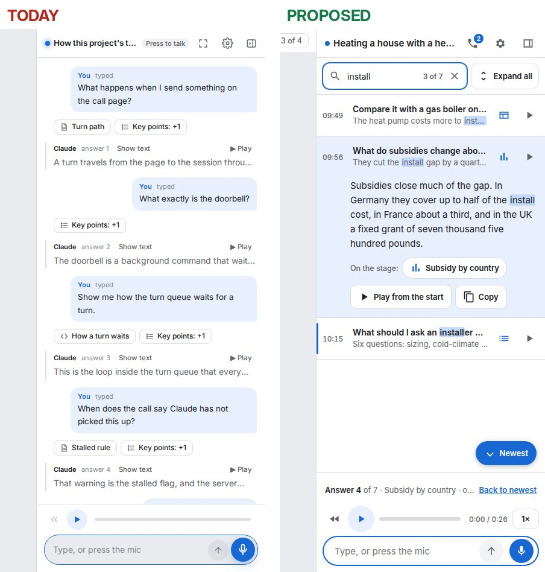
Problem
Today the conversation is a log. Each Claude answer is cut to one grey line with a small Show text link, so reading an older answer, scanning a long call or finding the one that said something costs a tap per answer. There is no search, no expand-all, and the board chips sit before their answer with cryptic labels ('Key points: +1'). On a phone with a board up the whole conversation is about 150 px. The folded line is also a weak topic: it is the start of the answer, not what it was about.
Themes T3, T4, T5, T11, T12. Testers: finder, power, returning, keyboard, tv, listener, phone.
Design
- Each exchange is one headed row, in the same columns on every row: time, the question you asked (bold, one line) over a gist of the answer (muted, one line), a board button, a play button. Rows are 68 px tall and every control is 40 px.
- The board column holds the icon of the answer's own board, plus a count when there are several. A tap jumps the stage to that board and marks the row as the one on the stage. On a panel wider than 480 px (TV, resized desktop) the column also shows the board's title as a word. A text-only answer leaves the slot empty.
- The newest answer opens by itself and reads in full at 15 px, with 'On the stage:' and its boards by their real titles as chips, then Play from the start and Copy. Older rows fold under their question and gist; a tap on the row opens it in place, with the same body.
- A toolbar sits above the list at all times: a search field (44 px) with a result count and a clear button, and an Expand all / Collapse all button with icon and word. Search covers questions, answers and board titles. Matches are highlighted; when the match is only in the body, the gist line becomes the snippet around it. A tap on a result opens it and puts its board on the stage.
- While a search is on or all answers are open, a 'Newest' button floats at the bottom of the list and returns to the end.
- The row you opened or searched for is tinted and the newest has a left accent bar, so you can see where you are in the call. The panel's status line names the answer in the player ('Answer 7 of 7, Questions for the installer, on the stage').
- States in the mock: ?state=rest (newest open), ?state=search ('install' finds three answers across question, body and board title, one opened with its board on the stage), ?state=all (every answer open, Newest button). Light and dark through data-theme.
How it would be built
Files: skills/talk/static/call.js, skills/talk/static/call.css, skills/talk/static/call.html, skills/talk/talk.py, skills/talk/SKILL.md, skills/talk/references/call-page.md, CLAUDE.md, skills/talk/tests/call_page.py
- call.js buildEntry/render: build one keyed item per exchange (the you entry plus the claude entry that follows it, plus the board entries between them) instead of separate 'turn you', 'chip row' and 'turn claude' nodes. Keep the nodes Map and sigOf keyed rendering so a text selection survives; chipRow() and its chipRows Map go away, because the boards move into the item's board column and body chips.
- call.js: replace the per-answer 'unfolded' Set and the Show text button (the paintFold code in buildEntry) with an 'open' Set and an allOpen flag; the newest answer is open unless the user closed it. wordSpans(e) keeps painting the word highlight inside the open body, so the highlight and 'a tap on a word plays from there' still work.
- call.js: add searchEntries(query) over view.entries (you.text, claude.text, board titles from the board entries); highlight with a text-node walker, never innerHTML on entry text. Filtering is client-side only; no new endpoint.
- call.js: a board button calls chipTap(view) as today but must show the pin: set a visible 'not following' state (T5) next to the status line with a one-tap return through followAgain(). Play on a row goes through readerPlays(e) then takeVoice() and load(), exactly as the current play button does.
- call.js paintTurn/paintNow: the .now state moves to the item header; the status line text is generated from current/shownAnswer().
- talk.py: give every Claude entry a 'gist' (first sentence of plain_shown(text), cut at about 90 characters at a word boundary) when Call.answer stores it, and a 'topic' only if the session sent one. No model call. The entries already carry 'at' for the time column and board entries carry titles.
- call.css: new .it/.row/.body rules on a fixed grid (44px 1fr 40px 40px; a container query at 480 px for 52px 1fr 170px 40px); delete .turn.claude.folded, .turn .fold, the chip-row rules and the unscaled 11.5 px sizes. TV mode scales the grid and the 15 px body.
- call.html: add the toolbar (search field, Expand all) between the header and #convo; keep #convo as the one scroll box so the pinnedEnd and atEnd logic in render() still works.
- Tests: extend skills/talk/tests/call_page.py (node DOM shim) for search filtering, expand all, open newest, gist; test_r2_talk_core-style test for the server gist; update the CLAUDE.md and call-page.md sentences about folding in the same change.
What goes away
- The one-line fold and the Show text / Hide text button per answer
- The separate board-chip rows ('Key points: +N') before an answer
- The unfolded Set and paintFold
- The need to scroll and tap each answer to find one
Risks
- Conflicts with CLAUDE.md: 'every answer folds to one line in the panel' and 'the call page reads every answer on the stage (paintReader)'. This makes the panel the place where the newest answer reads in full, so the same text appears in the stage reader strip and the panel at once. Mitigation: while a board is in front and the reader is a strip, open the newest body but not both large; the rule text in CLAUDE.md and references/call-page.md must change in the same commit. Needs the owner's yes on that rule change, because it reverses a documented decision.
- readerPlays/followAgain: a board button is a hand pick, so it must keep following off (the documented rule) and now say so; a row Play must call readerPlays(), an automatic play must not. Easy to get wrong when the play button moves.
- Player claim and queued answers are untouched, but the queued line ('queued' in call.js) must keep rendering in the foot, not in the list.
- Open bodies lengthen the list, so atEnd/pinnedEnd scroll sticking in render() needs care when the newest answer opens as it arrives.
- The gist is the first sentence cut by rule, so it can be a weak summary; if that proves poor the session can send a 'topic' in its reply tag later.
- Phone: the foot (status, player, composer) is about 190 px, and the list is still starved with a board up. This proposal helps (one 68 px row per answer instead of three nodes) but a phone should also collapse the status line; that is outside this change.
Effort: Reworks the conversation DOM, its CSS, the node page tests and one server field; the rule change in CLAUDE.md needs the owner's go first.
Build check
The plan needs the corrections below. The design holds and its intent is sound. The swap points in call.js exist and the server gist is small. The plan underplays the render() regrouping and the missing browser-level tests. It reverses two documented CLAUDE.md rules (answers fold to one line; the reader shows every answer on the stage) that need the owner's go. The mock had three real defects, now fixed: a hard-coded status line, a Newest button that scrolled with the content, and 36 px of sideways scroll at 390 px.
- Build checked by grep and reading call.js. The named swap points exist: the 'unfolded' Set and paintFold (call.js ~309-329), chipRows/chipRow (~373-404), pinnedEnd/atEnd in render() (~385-413), chipTap (150), readerPlays (1165), followAgain (1169). The plan understates the work. render() is a flat per-entry loop with place(prev) and sigOf keying. Grouping you + boards + claude into one item changes that keying, the .now and word-highlight painting, and every code path that looks up 'turn claude' nodes.
- Server gist: talk.py Call.add stores {id, who, text, at, **extra} (~line 2150) and plain_shown exists (line 399), so a 'gist' field is feasible where Call.answer stores the entry. Saved calls have no gist, so the client needs a fallback. 'topic' needs a new reply tag in SKILL.md and call-page.md.
- Missing rule: the row's question is the preceding you entry. Voice turns, interrupted turns, echoes, and a Claude entry with no user entry before it (greeting, wrap-up) need a rule for the row title. Several boards between entries need a rule for which one the board column shows.
- Missing: the 'not following' pin indicator (T5) is a new element in call.html and call.css that the build list does not name. Search needs focus handling so Space and the media keys still play. Expand-all can make a very long list, so the scroll-stick logic needs a test. TV mode needs the toolbar and rows scaled.
- Missing tests: call_page.py runs on the node DOM shim, where every box measures 0. The 480 px container query, row alignment and the floating Newest button cannot be checked there; they need a browser check (tools/talk_render or a harness). Existing tests for fold, Show text and chip rows must be rewritten, not only extended.
- Mock defects fixed: the status line was hard-coded 'Answer 7' even when search put answer 4 on the stage. The 'Newest' button sat inside the scroll box and scrolled with content, covering text. Making the status line dynamic caused 426 px of sideways scroll at 390 px, fixed with minmax(0,1fr) and an ellipsis.
- Effort L is right, at the top of L, given the render() rework and the browser-only checks that need new tooling.
- CLAUDE.md: 'every answer folds to one line in the panel' (the newest answer opens in full). The designer flags this and it needs the owner's go.
- CLAUDE.md: 'the call page reads every answer on the stage (paintReader)'. The same text would appear in the stage reader strip and in the open panel body at once.
- The build adds a topic tag to the session's reply contract (SKILL.md, references/call-page.md), which is design-checked against the global rules. Not a conflict, but it needs a stated rule.
The 11 testers' votes
| Tester | Choice | Score | Why |
|---|
| daily | version | 5 | Aligned rows with time, question and gist, board icon, play and search across the call are exactly what I need after hours of use. Today's page is just a pile of truncated lines. |
| newbie | same | 3 | Tidy rows with times and a play arrow are neat, and search is useful. But the list is cut off at the top and the icons mean nothing to me without words. I would not be sure what the play arrow on each row does. |
| thumb | version | 3 | Controls are clearer than today but the open answer eats the screen and there's a lot of small stuff. Not a big change for a quick glance. |
| sofa | today | 2 | Dense rows of tiny times and icons, a search box and Expand all. I would be lost, and the small text is unreadable from the sofa. |
| keys | version | 4 | Search with a match count, a Back to newest link and aligned columns of time, question and gist make long conversations easy to navigate. |
| back | version | 5 | Aligned rows with time, question over gist, board icon and play let me scan hours of talk fast. Search 'install' with 3 of 7 highlighted is great for finding something I half remember. |
| ears | version | 3 | Aligned rows with time, question, gist and play are tidy. Search is useful. It's about looking things up later, not about listening now, and has no status. |
| quiet | version | 5 | Aligned rows with time, question over gist, board icon and play, plus a search that finds 3 of 7 and lights the matches. I read a lot, so finding an old answer by searching is a big gain over today. |
| greek | version | 4 | Search, Expand all, newest answer open and a Newest button make a long call easy to navigate with words, not guessing. Rows show time and board icon. The stage and header stay tidy. |
| rush | version | 4 | Aligned rows with time, question and gist, plus search that lights the matches, let me find an old answer fast. I like the Newest button and Back to newest. The player strip shows which answer is selected, so I know what I am about to play. |
| taste | version | 4 | Search, expand all, timestamps and an open answer with 'On the stage' chip read like a tidy inbox. Newest floating button overlaps text a bit, but it's a real upgrade for scanning. |
8. Make the conversation a list of turns: each question heads its answer, boards, wait and status, the newest is open and the rest fold under their question
convo-1 · whole-panel · work large · Smallest clean statement of headed turns (T3). A good foundation, but it still needs the fold rule changed.
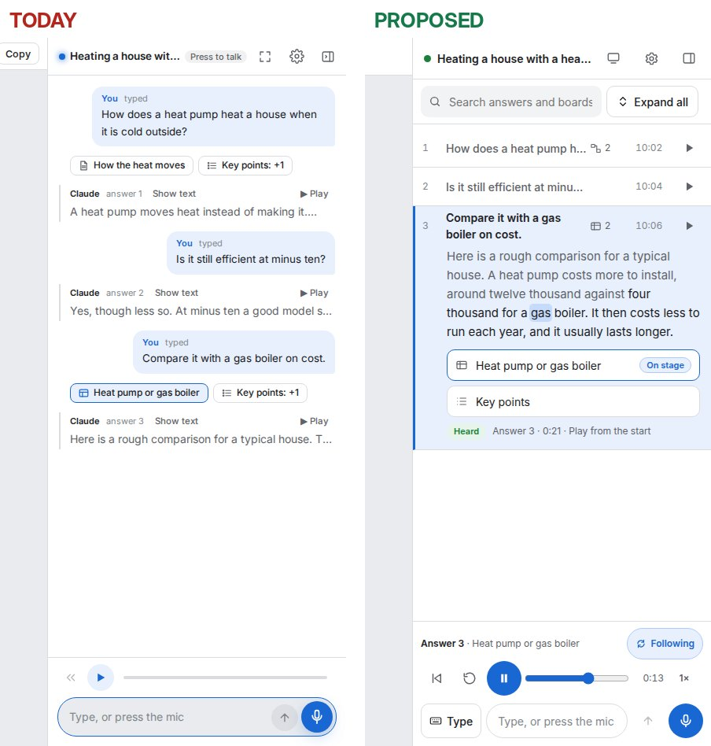
Problem
Today the panel is a flat log of loose entries (you, claude, status, board) in arrival order. Because an answer, its boards and its notes are separate rows, nothing says which board belongs to which answer (T4), progress notes pile up and a CSS bug stretches them into blank gaps (T2), every answer folds to one truncated line so reading and finding cost a tap each (T3), a wait is one bare line with no clock and no action (T1), a correction leaves the old answer to land and autoplay over it (T6), and the stage and the player disagree about which answer is meant (T5). All of these come from the same cause: there is no unit called a turn.
Themes T1, T2, T3, T4, T5, T6, T13. Testers: first, returning, power, listener, interrupter, finder, typist, tv, phone, screenreader.
Design
- The conversation is a list of turns, one row each. A row is a grid in fixed columns: number, the question as its title, boards (icon and count), time, play. Every row has every slot; a turn with no board leaves the boards slot empty, so the columns line up (ADR-003 rule 3).
- The newest answer is open without a tap, inside its turn: the question is the heading, the answer reads in full with the word highlight, and under it the turn's boards by name as full-width rows, the one on the stage marked 'On stage'. A fold or an unfold is one tap on the row; 'Expand all' sits in the toolbar next to a search field that searches questions, answers and board titles.
- Older turns fold to their question (the topic), the board icon with its count, the time and a play button. Tapping a board row jumps the stage to it; Play on a row plays that turn and says so in the player.
- A turn holds its wait. After Send the turn shows 'Claude has it and is working' with a clock the page keeps itself and the session's current step. The notes fold into 'N steps' and disappear into the answer when it lands. After a stated time (90 s) the card turns amber: 'Taking longer than usual', time since the last step, and Ask for status, Send again, Copy question and Cancel, all in the panel (no terminal wording).
- A turn has a state, worked out from the entries, never typed by hand: sent, working, answered, replaced, heard, unheard. A turn replaced by a later message of the person is marked 'Replaced', is never auto-spoken, and offers Play anyway. 'Cancel' on a turn in flight drops it.
- 'Since you left: 2 new answers' is a divider before the first unheard turn with Play from here; unheard rows show their question in bold with an accent number. Heard answers say so in the open card.
- The player is pinned under the conversation and names what it plays ('Answer 3 · Heat pump or gas boiler'). Previous sentence, back 10 s, play, seek, speed (one tap, in the player) all act on that turn. Beside the name a Following / Not following pill shows the follow state, one tap to return. A mode button (Type, Talk, Live) sits in the composer.
- Phone: the stage on top (34%), the panel under it. Rows keep the same columns, the time and the words on buttons hide, targets stay 40 px or more. A tap on a row opens the turn as a full card inline, with the answer, boards and actions at full width. Nothing scrolls sideways.
- Tab title carries the state of the newest turn ('Working', '2 new') and the calls list uses the same words; the in-flight card is an aria-live region.
How it would be built
Files: skills/talk/static/call.js, skills/talk/static/call.css, skills/talk/static/call.html, skills/talk/talk.py, skills/talk/references/call-page.md, skills/talk/tests (new tests for turn grouping and turn state)
- Add a pure function turnsOf(view.entries) in call.js that groups the existing flat entries into turns: a you entry opens a turn, and the status, board and claude entries until the next you entry belong to it (a while_working you entry, which talk.py marks on Call.add, joins the open turn but also marks the earlier turn replaced). It returns {n, question, time, boards, answer entry, notes, state}. No server change is needed for the grouping; state (sent, working, slow, answered, replaced, unheard) is derived on every paint, never stored, like the fleet rule.
- Replace the per-entry painter (the who === 'status' / 'board' / 'claude' branches near call.js 330-350) with paintTurns(): one row per turn on a fixed grid (.thead columns 26px / 1fr / 54px / 44px / 40px), the open turn holding the answer (reusing paintTurn for the word highlight), the board rows (reusing the chip click handler and its view id) and the wait card. Boards move under their own answer, which removes the 'On the stage' display:none label and the 'Key points: +N' chip text (the label becomes the board title and kind icon).
- Rewrite statusText/paintInfo into a wait card inside the open turn: the clock comes from the page's own send time (sentAt on the you entry or the local send), the step from activity_view in talk.py (already served), the slow state from the existing stalled flag in Server.stamp plus a 90 s page threshold. Actions: Ask for status (posts a fixed 'status?' say through /api/say), Send again (resend the same text), Copy question, Cancel (new POST /api/cancel that marks the turn dropped via TurnQueue; see risks).
- Status entries collapse into the card's 'N steps' on answer; this also removes the .line.status flex bug (scope the foot rule to .foot .status).
- Autoplay guard: maybeAutoplay skips an answer whose turn is replaced (a later you entry exists that was sent before the answer landed); the player shows 'Replaced, not played' with Play anyway. The queued 'Next answer ready' line gets a Skip.
- Player names the loaded answer (the one current.id) and boardStart() resolves from current.id first, then the front board, so Back 10 s, Space, Play and the stage all refer to the same turn. The Following pill reads convoFollow/follow state from the existing flags and calls followAgain() on tap; tapping a board row calls the hand-pick path and updates the pill to 'Not following' visibly.
- Add search (client side over entries and board titles, mark with mark elements), Expand all, a since-you-left divider (lastHeard stored per call in localStorage; the server's view already lists entries with speech state), tab title from document.title updated in paintAll from the newest turn state.
- call.css: replace the .line/.chip rules for the log with .turn, .thead, .tbody, .bc, .wait, .divider; sizes follow call.css tokens; phone breakpoint hides .lbl and .t and keeps 40 px targets; TV mode scales the same rules with the existing TV font variable.
What goes away
- The separate chip rows before each answer
- Standalone status lines in the conversation (collapsed into the turn)
- The one-line truncated Claude fold with the tiny 'Show text' link
- The 'Key points: +N' label
- The bare 'Claude is working...' foot line as the only wait signal (the foot keeps only the player and composer)
Risks
- CLAUDE.md says every answer folds to one line in the panel because the stage reader carries the text. This proposal opens the newest answer in the panel when no board is the reason to fold; that reverses a documented rule and must be settled first. A cheap variant keeps the fold when the reader is showing the same text (readerOn()), and opens the newest turn only for text-only answers or when the reader is off.
- Following rules stay intact: readerPlays() still does not turn following on, only the board-in-front plays call followAgain(); the pill only shows the state. Row Play must call readerPlays(e) and takeVoice() exactly like today's play button so the player claim between pages is unchanged.
- Queued answers (queued in call.js) keep their meaning; adding Skip changes the queue's contract, so skipping drops the queue entry but never the transcript entry.
- Cancel needs a server verb that does not exist today: TurnQueue would need a cancelled state and the responder (the Claude session) cannot be stopped from talk.py, only told. Ship the first version without Cancel (hide the button) and add it when the session side can react; Send again and Ask for status need no server change.
- Marking a turn replaced is inferred from while_working and entry order; a heuristic can mark a good answer replaced. It must stay a mark with Play anyway, never a deletion, and autoplay is the only thing it stops.
- Turn grouping assumes every board entry follows its you entry; boards added by stage.py show during a call have no owner and fall into the turn open at that moment (documented behaviour: they have no cue).
- Tests: the suite starts no browser, so the grouping must be a pure function runnable under the node DOM shim (call_page.py), with the layout checked by tools/talk_render and a 390 px run.
Effort: The grouping, wait card and fold are one coherent change in paintAll/the entry painter plus call.css (about 3 to 5 days with node tests for turnsOf). Search, Since you left and tab title are small once turnsOf exists; Cancel is a separate server task and is left out of the estimate.
Build check
The plan needs the corrections below. The grouping idea holds and needs no server change for turn grouping, state or the wait clock (entries carry at, n, kind, view, withdrawn). Four things in the build text are wrong or missing. First, while_working lives only on said_lines, not on the served entry, so 'replaced' needs either a page-side inference or one small server field. Second, Cancel works only before the doorbell collects the turn, because /api/withdraw refuses after that, so it should be hidden in v1. Third, Ask for status and Send again create new you entries, so they would show as extra turns unless the grouping folds them into the open turn. Fourth, 'time since last step' is not served, since activity items carry no end time. The proposal also reverses the documented one-line fold rule, so use the cheap variant. Effort stays L: about 4 to 6 days with node tests, a talk_render run at 390 px, and CLAUDE.md and call-page.md updates. Mock-up: columns align, no sideways scroll at 390 px in any state or theme, both themes legible, and I fixed the 32 px Following pill, the 38 px mode button and the missing placeholder in the stale state.
- turnsOf over view.entries is sound: entries are flat, each has who, text, at (epoch), n for claude, kind and view for boards, and 'withdrawn'. No server change needed for grouping, state or the clock (entries[].at is served; the page can time the wait from the you entry's at).
- while_working is NOT on the entry. Call.add stores it only on said_lines[entry id] (talk.py ~2203), which view() does not serve. Replaced-by-correction cannot be read from entries as written. Either infer it on the page (a later non-withdrawn you entry exists before this turn's claude entry, which maybeAutoplay already does at call.js 822 and 836) or add one field to the entry in Call.add. Small server change, plus its test.
- T6 is partly already built: maybeAutoplay (call.js 836) skips an answer that a later non-withdrawn you entry follows, and paintAll at 822 repaints without playing. The new work is only the visible 'Replaced' mark and Play anyway, and Skip on the queued line (queued, call.js 817-841). Skip must drop only the queue slot, never the transcript entry.
- Cancel does not exist, and the cheap path is narrower than the design says. Call.withdraw / POST /api/withdraw exist (talk.py 2228, 3252) but succeed only while no doorbell has collected the turn ('Too late: Claude already has it'). So Cancel in the working and slow cards (the mock shows it in both) is only honest before pickup. Once Claude has the turn it needs a new TurnQueue state and the session cannot be stopped from talk.py. Hide Cancel in v1 except in the not-yet-collected state; the slow-state shot shows it and is marked as v2.
- Ask for status and Send again need no new verb (they go through /api/say), but both create a new you entry and so a new turn, and a say during work gets while_working. Status/resend turns must be folded into the open turn, or the list gains a bogus 'status?' row. Decide this before building; it is not in the design.
- The wait card needs two things the page has but not as named: view.stalled (Server.stamp, set after STALLED_OPEN_AFTER) already says 'not picked up', and activity_view gives only the current step's label and seconds. 'Last step 2:05 ago' is not served: activity items carry no end time. Either drop it, or compute it on the page from when the activity list last changed.
- The status entries are who==='status' lines in the conversation (call.js 342), which really are separate rows today, so folding them under the turn is a pure page change. The .foot .status flex:1 / .line.status bug is real: call.css 127 sets .line.status and 147 sets .status{flex:1}. Scoping the rule fixes T2 in one line.
- Documented rule broken: CLAUDE.md and call.js 328 fold every answer to one line while the reader shows it on the stage. Opening the newest answer reverses that. Take the cheap variant: open it only when readerOn() is false or the answer has no board, else show the question heading with the boards listed and the text one tap away.
- A phone panel is not full width as drawn in the build text. The page splits the stage and panel with --ph 38% while a board is up (CLAUDE.md), the mock uses 34%. Use the real value.
- Tests: the suite starts no browser, but skills/talk/tests/call_page.py runs the real call.js under node on a DOM shim, so turnsOf must be a pure function exported for it. Layout stays unchecked there, since every box measures 0; use tools/talk_render at 390 px. CLAUDE.md edits are needed: the fold rule, readerPlays and followAgain line (add the Following pill), and the 'Round' notes. skills/talk/references/call-page.md must be updated in the same change.
- CLAUDE.md: every answer folds to one line in the panel because the stage reader carries the text. Opening the newest answer reverses this; settle it first, or open only when the reader is off or the answer has no board.
- CLAUDE.md follow rules: a row Play must call readerPlays(e) and takeVoice() like today's play button, and must not call followAgain(); only a play of the board in front does. The Following pill only shows state. The design respects this but the build text for 'tap a board row' must keep the hand-pick behaviour (following off).
- Global rule 'Nothing Claude can run is handed back' and the 'no terminal wording' goal are met; but Send again after a stall would duplicate a turn unless folded into the open turn.
- ADR-003 rule 1 (icon and word wide, icon only narrow): met by the proposal. Rule 'no explaining text in a list': the card's footer '3 steps so far, they fold into the answer when it lands' is explaining text and should go.
The 11 testers' votes
| Tester | Choice | Score | Why |
|---|
| daily | version | 4 | Folded older turns, search box and the newest answer open with the lit word means I find my place fast; today's page truncates everything to one line and hides what I need. |
| newbie | version | 3 | Newest answer open, with word highlight and 'Heard' and 'Play from the start' lines. Sensible and quiet. Hard to say it is much more than today with the board names under it. |
| thumb | version | 4 | Rows per question with plain play buttons and the working card inside the list with small icon buttons. Clean and easy to scan, but the icons are small. |
| sofa | version | 4 | Short bold headings on each answer help me find my place, and the buttons are bigger and clearer. Still fairly small. |
| keys | version | 4 | The in-flight row shows clock, step, Ask for status, Copy and Cancel inside the list, so nothing jumps; its search and Expand all are also handy. |
| back | version | 4 | Newest turn open, older ones folded to one line with time and board count, plus a Heard tag and Expand all. Good scanning. The working card is helpful but there is no away summary. |
| ears | version | 4 | The in-flight turn shows a clock, the step and Ask for status or Cancel right in the conversation, exactly where I look. The Calls button with its count is fine. |
| quiet | version | 4 | Numbered rows with time, board count and play, the newest open with the highlight, and the in-flight card with Ask for status. It is very close to what I'd want and is compact. The Following pill is small. |
| greek | version | 4 | Bold lead-in on each answer plus board chips and a clean player. The waiting card with its steps is reassuring. The mode switch in the bottom corner is small icons only, which I would need to guess at. |
| rush | version | 3 | Folded numbered rows with the newest open are easy to skim and the 'Following' pill is clear. But the player and input are squeezed together at the bottom and nothing says an old answer stops when I send something new. It is tidier than today, not smarter. |
| taste | version | 4 | Turns become a tidy list with the open one expanded, board chip with 'On stage', 'Heard' marker. Nice hierarchy, but the Following pill plus search plus expand toggle is a lot above the list. |
9. The panel says its state in words, keeps one live status line, and turns the log into headed answers
access-1 · whole-panel · work large · Keeps place and is the only real screen-reader work (T10). Reuses statusText.
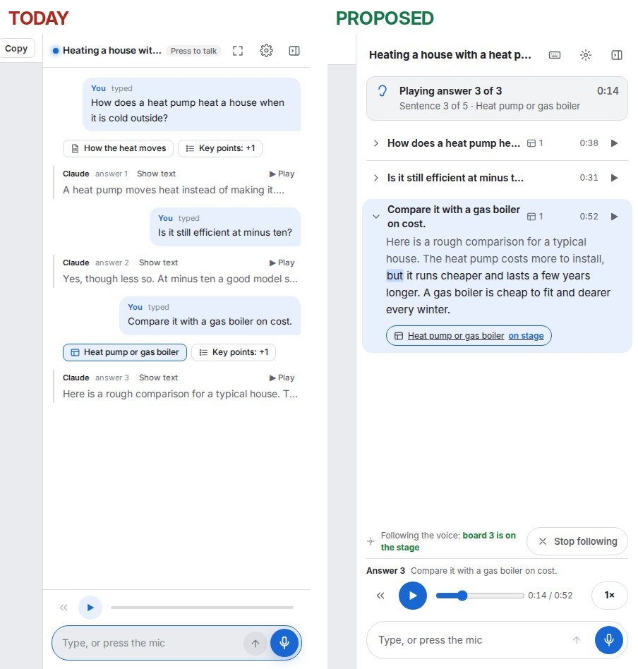
Problem
A person who cannot watch the panel (screen reader, sound off, eyes on the board, a phone in a pocket) learns nothing when Claude starts, works, stalls or answers: #status and #convo are not live regions and only the error toast is. Waits show a bare 'Claude is working...' with no clock and no action (T1). The conversation is a log of generic divs with no headings, no per-answer name, stale status lines stay in it (T2, T10), every answer folds to a truncated line (T3), and the Play buttons are named '▶ Play' with no number (T10). Play, Back and Space can act on different answers (T5).
Themes T1, T2, T3, T5, T10, T13. Testers: screenreader, first, tv, phone, listener, power.
Design
- Header: the call title is the page's one h1; keyboard-shortcuts button, settings and collapse sit beside it as 40 px icon buttons (44 px on a phone).
- One status strip under the header is the panel's only polite live region (role=status). It has a fixed grid: icon, sentence, clock. States in words: 'Working for 1:35, reading the install quotes', 'Playing answer 3 of 3, sentence 3 of 5', 'Answered: Heat pump or gas boiler', 'Waiting for you', 'Call ended'. The clock is kept by the page from Send, so a silent wait is never silent.
- After about 60 s the strip turns amber and shows three actions where the person sits: Send again, Copy question, Ask what it is doing (icon and word wide, icon with a short word on a phone). It replaces the terminal-worded stall warning.
- The strip text is also the tab title ('Talk: Working 1:35, Heating a house'), so the calls list and other tabs say the same.
- The conversation is an ordered list of items. Each item is one article headed by an h3 holding the person's question, with the same aligned columns on every row: chevron, question, boards count, length, Play. The newest answer is open in full with the word highlight; older ones are folded under their question; the not yet answered question shows 'Sent, not yet picked up. Your message is kept.'. No status lines are stored in the list any more.
- The player names what it acts on: 'Answer 3 Compare it with a gas boiler on cost' above Back one sentence, Play, the seek bar (aria-valuetext '0 minutes 14 seconds of 52 seconds'), time and a speed button that cycles 0.8, 1, 1.25, 1.5. Space, Back and Play all act on that answer. A visible 'Following the voice: board 3 is on the stage' line with a Stop following button sits above the player.
- Per-answer Play is 'Play answer N' with aria-pressed while playing; the word highlight spans are aria-hidden and the answer text is a plain paragraph, so no per-word re-reading.
- Settings sheet gets a 'Screen reader and sound' group: announce Claude's progress, announce new answers and boards, announce each sentence while playing (off), play new answers by themselves. Four plain switches, nothing hidden in a tooltip.
- Announcements are short and ordered: 'Claude is working', then every 30 s only when the step changes, 'Answer 3 arrived: Heat pump or gas boiler, 52 seconds', 'Board changed: Heat pump or gas boiler'. Not read while the person is typing.
- On a phone the panel keeps one-line status, no explaining line, rows of 44 px, and the open answer gets the room.
How it would be built
Files: skills/talk/static/call.html, skills/talk/static/call.js, skills/talk/static/call.css, skills/talk/talk.py, skills/talk/tests (new tests under skills/talk/tests, run under the node dom shim like call_page.py), skills/talk/references/call-page.md
- call.html: add one status strip element with role=status (replaces the foot #status text), give #convo role=list semantics, mark #reader aria-hidden while the conversation holds the same text, put a Keys button in the header.
- call.js: statusText and the status paint become one function that writes the strip text and the tab title from the same string; a page-kept wait clock from turnSentAt (the field the findings name) ticking each second in the strip but announced only when the step or a 30 s mark changes; the stall actions (resend, copy question, ask status) call the existing send path and talk.py's stalled flag instead of the terminal wording.
- call.js: the entry builders (around lines 314-343 and 423, where answer and per-answer Play are made) emit article, h3 with the question, aria-expanded on the fold, aria-label 'Play answer N', aria-pressed; word spans get aria-hidden and the answer text one plain node; status lines are no longer stored as entries (T2 goes away with the CSS gap rule).
- call.js: a small announce() helper writing to a second visually hidden polite region for 'Answer N arrived' and 'Board changed', respecting the three switches (kept in the same localStorage prefs as the other settings); never fires while the text field has focus and text.
- call.js: the player group label and aria-valuetext follow the answer being played, so Back, Play and Space name one answer (supports principle 3 and T5).
- call.css: grid-template-columns for the item rows, amber strip state, 44 px targets under 760 px, newest answer open without a tap.
- talk.py: no new endpoint; the stalled flag and activity_view label already exist. Optionally send the step label through stamp so the strip can name it between activity items.
What goes away
- The bare 'Claude is working...' fallback line and the 'Check the terminal' wording
- Stored progress-note entries in the conversation and the CSS rule that stretches them
- '▶ Play' glyph-in-name buttons
- The truncated one-line fold of the newest answer
Risks
- Announcing too much is worse than silence: the helper must be rate limited and quiet while typing or talking; the defaults (progress on, sentences off) need a trial with a real screen reader.
- CLAUDE.md: the reader on the stage and its aria-hidden state must still match the call page's paintReader; the doubled text is hidden only while the panel shows the same answer.
- Following the voice: the Stop following button must use followAgain/readerPlays semantics unchanged; only the label is new.
- The player claim between pages: the strip must say 'Playing on another screen.' in words when player is not this page's id, not stay silent.
- Queued answers: an answer queued behind a playing one needs its own strip sentence ('Answer 4 is next'), otherwise the strip contradicts the queue.
- Changing how entries are built touches existing tests that read entry markup; the dom shim runs call.js only for page logic, so layout and live-region behaviour need a manual screen reader pass (not covered by the suite).
Effort: Two to three days: the strip and tab title are small, the entry markup rewrite and the announce rules need care and a manual NVDA/VoiceOver pass.
Build check
The plan needs the corrections below. Right direction and the best answer to T1, T2 and T10: a single live status line with a clock, a headed list and a named player are all feasible on the existing foot-status, activity and stalled plumbing. But the build is under-scoped. It needs a server field for when a turn was sent, a talk.py change to stop storing status entries, a rule for Send again that does not duplicate a turn, pairing questions with answers in the entry builder, and a rewrite of the CLAUDE.md fold rule. It says nothing about the rail, TV, stop card or other-calls states. Effort is about 5 to 7 days, not 2 to 3. The mock was sound apart from the settings sheet (fixed, re-rendered) and still repeats the saved-message fact in the working state.
- The strip is not 'one function': the foot line is statusText() (call.js ~505-532) painted into #status (call.html:36), which today holds ~12 more states than the proposal lists (Live parked/suspended, 'Next answer ready', 'Playing on another screen.', 'Turning your words into text', liveFlash, ended/closed). The strip must map all of them, not five; the queued and other-screen sentences already exist there, so the 'risks' are real work, not new text.
- turnSentAt exists (call.js:300, set at 1692) but is only the filler timer and is lost on reload; a wait clock that survives reload needs the sent time from the server. The turn's collection time is not in stamp/view (talk.py ~2812 sends working, stalled, listening, activity only), so add a sent_at per open turn to view; 'no new endpoint' is true, 'no talk.py change' is not.
- Stored progress-note entries are made by the server, not the page: reply --status does call.add('status', ...) (talk.py:3451) and label 'Claude, working' at 2147. Dropping them from the list means changing talk.py (keep only the latest in view/activity, or filter who==status in buildEntry) and the transcript/export that prints them; call.js alone cannot remove the CSS gap rule's cause.
- Answers are who==claude entries and the question is a separate who==you entry (buildEntry, call.js ~314). 'h3 holds the question, one article per turn' means pairing each answer with the you-entry before it in the conversation builder, and an unanswered question becomes its own item; the current keyed nodes map (id -> {el, sig}) and sigOf must be reworked, and tests that read .turn markup in skills/talk/tests (call_page.py, test_call_page.py) will break.
- The strip's 'Send again' has no safe path: the send path posts a new turn, so a resend duplicates the question while the first is still queued server-side. It needs a server rule (re-ring the doorbell for the open turn, or refuse a duplicate by text and time). 'Copy question' and 'Ask what it is doing' (a new turn that Claude answers only when it picks up) are easy but the latter also waits behind the stall.
- Player: today Back is 10 seconds (#back, 'Back 10 seconds') and the rail has its own #railback; the proposal's 'Back one sentence' changes behavior and must keep the rail and TV mode in step. Seek aria-valuetext, a speed button on the page and an 'Answer N <question>' label are new but small; the existing Space/arrows handler (call.js ~1256, 1291) already acts on the current answer, so T5 mainly needs shownAnswer() used by Play, Back and the label.
- There is no keyboard-shortcuts surface in call.html today; the Keys button needs a new popup (small), and the header h1 does not exist ($('topic') is a span in the head).
- Tab title: document.title is set once at call.js:12; a live title with a ticking clock changes every second in other tabs and in the calls list, so update it only on step change or each 30 s.
- Not designed: the collapsed rail, TV mode (1.35 zoom), the stop card (#stopcard), the 'Other calls' popup, Live-mode parked states, and the ended/reconnect states. The strip and the item rows need a rail form and a TV scale or the proposal covers only desktop and phone.
- CLAUDE.md rules touched: readerPlays/followAgain unchanged if Stop following keeps the same handlers (fine); the reader overlay is aria-hidden only while the panel shows the same answer, but the panel folds answers to one line when readerOn(), so with the newest answer always open the doubled-text rule and the 'every answer folds to one line in the panel' sentence in CLAUDE.md must be rewritten in the same change. skills/talk/references/call-page.md also needs the new states.
- Effort: M is low. Strip, announce helper, entry rewrite, server sent_at and status-entry change, resend rule, rail/TV forms, tests and a manual NVDA/VoiceOver pass is L-minus (about 5 to 7 days); the visible strip alone is S.
- CLAUDE.md says every answer folds to one line in the panel and the reader on the stage reads it; the proposal opens the newest answer in full in the panel, so it must either be conditional on readerOn() or CLAUDE.md is rewritten in the same change.
- ADR-003 and the 'no explaining text in lists' rule: the working strip carried 'Usually under a minute. Your message is saved.' and the open unanswered item repeated 'Sent, not yet picked up. Your message is kept.' (same fact twice); the settings sheet had a two-line explaining footer (removed). One of the two working lines should go.
- House style 'one fact per cell': the item row packs question, boards and length correctly, but the strip's sentence merges state, title and clock text; keep the clock in its own column only (it is).
The 11 testers' votes
| Tester | Choice | Score | Why |
|---|
| daily | version | 4 | A strip saying 'Playing answer 3 of 3, sentence 3 of 5' or 'Answered 0:52', plus folded rows and a Stop following button, tells me the state and keeps my place. |
| newbie | version | 4 | The top strip says what is happening (Playing answer 3 of 3, sentence 3 of 5), and the folded older questions are short and easy to scan. 'Stop following' is a button with words. Very readable. |
| thumb | version | 4 | Answers are tappable rows with chevrons and the player at the bottom has a big play. Mode toggle is icon-only so I'd have to learn it, but targets are bigger. |
| sofa | version | 3 | The strip saying Answered or sentence 3 of 5 is helpful. The text is still small, though, and the rows are cramped. |
| keys | version | 4 | A status strip saying sentence 3 of 5 and a clear following line make state legible, and folded answer rows with one open are far easier to scan than three truncated rows. |
| back | version | 4 | The status line at the top (Answered with 0:52, or sentence 3 of 5) tells me what happened right away. Folded rows with durations are good. Following is explained in words. |
| ears | version | 4 | A status strip saying Playing answer 3 of 3, Sentence 3 of 5 with a clock, plus a Following line with Stop following. I always know where I am and the older answers fold away. |
| quiet | version | 4 | The top strip says Answered with the time, or sentence 3 of 5, and the following line says in words what is happening. Folded rows plus an open newest answer read well. Seeing state in words rather than colour is good. |
| greek | version | 4 | The one-line status and big 44 px rows are readable, and settings with real toggles for announcements are well labeled with words. The Answered line at top is good. Settings are long but clear. |
| rush | version | 4 | A strip that says Answered with the time and 'Press Space to hear it', plus 'Stop following', makes the state plain. Folded rows with a play button each keep the list short. The text is a bit small. |
| taste | same | 3 | Settings list is tidy with headers and toggles, but long and utilitarian; the rest screen is good, with 'Answered' strip and compact rows. Balanced rather than exciting. |
10. Rebuild the panel as a thread of headed turns with the newest answer open and one dock for player, follow state and talk mode
revampA-1 · whole-panel · work large · Strongest integrated shell, 11/11 better, but it bundles and overlaps many others and is large.
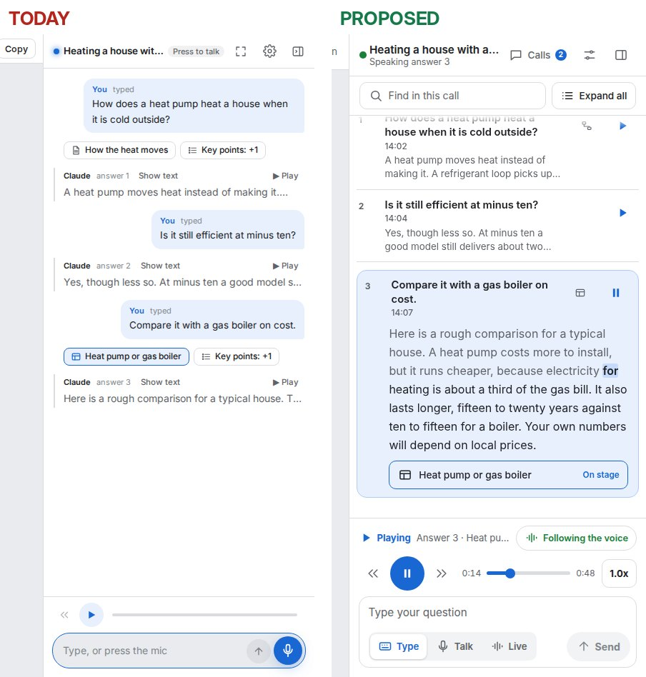
Problem
Today's panel is a log of folded one-line answers with chips before them, a bare 'Claude is working...' line, and the controls people reach for most (speed, repeat, Live, Press to talk, follow) hidden in the gear or tied to side effects. Listeners must tap to read the newest answer, returners cannot see what they missed, finders must open lines one by one, and nothing says which answer plays or whether the stage is following the voice.
Themes T1, T3, T4, T5, T8, T9, T10, T11, T12, T13, T14. Testers: listener, tv, first, returning, power, finder, phone, keyboard, screenreader, greek.
Design
- The panel is three bands: a header (state dot, call title, a state line in words such as 'Speaking answer 3', Calls with a badge, settings, collapse), a thread, and a dock. No band hides a frequent control in the gear.
- The thread is a list of turns, each headed by the person's question with its number, time and board icon, on one grid: number, question and 2-line preview, boards, play. Rows align in columns on every row.
- The newest answer is open in a tinted card without any tap, with the word highlight, the sentence tint, and its boards listed by title as rows marked 'On stage' or 'Show'. Older answers fold to question plus a 2-line preview; one tap on a row (a full card on a phone) opens it.
- A toolbar above the thread has Find in this call (searches questions, answer text and board titles, hits marked) and Expand all. On a phone it is behind a search icon in the header.
- A 'Since you left' divider with 'Play N new' sits at the first unheard answer; unheard rows carry a New tag. The header state line says what is waiting ('2 answers you have not heard').
- While Claude works, the turn shows one live card under the question: 'Claude is working', a clock the page keeps itself from Send, the session's step when known. After about a minute it adds 'Taking longer than usual' and four actions: Ask for status, Send again, Copy question, Cancel. Typing during the wait turns Send into Replace.
- The dock has a now line ('Playing', 'Ready', 'Waiting' plus 'Answer 3 · board title') and a follow pill: 'Following the voice' in green, or 'Not following. Return to the voice' in amber with one tap back. A pinned board also shows 'Pinned' on the stage bar.
- The transport is sentence back, play or pause (48 px), sentence forward, seek with times, and a speed button that cycles; every control acts on the answer named in the now line.
- The composer is one card: text field, an optional removable context chip ('About: Row: Running cost'), a Type / Talk / Live switch with icon and word wide and the active mode alone on a phone, and Send. Talk shows Listening with a level meter and a red Done.
- Calls opens a sheet listing each call with a state in words and icon (Speaking, New answer, Your turn, Working 2:40, Ended). A pause forced by another call is a line in this sheet and in the panel, not a stage toast. The tab title carries the same state.
- Settings is a focus-managed sheet in groups (Voice, Talking, Page, Keys) that lists the shortcuts and holds engine, theme, TV size, panel side.
- TV mode scales one rem so the open answer, board rows, dock and times grow together; the composer is hidden there.
- Phone: stage 30 % of the height, panel under it; header 44 px, dock three compact rows, the thread keeps the newest answer in view; all targets at least 44 px, nothing scrolls sideways.
How it would be built
Files: skills/talk/static/call.html, skills/talk/static/call.js, skills/talk/static/call.css, skills/talk/static/tokens.css (unchanged), skills/talk/talk.py, skills/talk/live_turns.py, skills/talk/tests/ (new tests for the new view fields)
- call.html: replace the header, foot and conversation markup with the three bands (header, toolbar plus thread, dock); add the calls sheet and a settings sheet with focus management and a live region.
- call.js: a new renderThread() groups entries into turns (question, answer, boards) from the existing conversation entries; the newest answer renders open through paintReader's word and sentence spans (reuse now-word, sentenceRuns), older ones fold; add search over turn text and board titles, expandAll, and a 'since you left' marker from the last heard answer kept per call in localStorage.
- call.js: a wait clock started at Send and kept by the page (statusText currently shows elapsed seconds only while an activity item runs, about lines 523-528); after a set time show the action row. Actions map to existing endpoints: Send again re-posts /api/say with the same text, Copy question uses the clipboard, Ask for status posts a normal say, Cancel needs a new endpoint (see talk.py).
- call.js: dock renders a now line from the existing playing answer id and the follow flag; speed cycles through the existing rate setting; sentence back and forward use the sentence runs already used for arrow keys; mode switch sets the existing Live and press-to-talk flags; the follow pill calls followAgain() and shows the existing following state. Play, Back and Space all act on one 'playing answer' variable that the now line names.
- call.js: set document.title and an aria-live region from the call state (working, new answer, your turn, ended); the other-calls list reuses the poll's per-call fields, rendered with words and icons.
- call.css: replace the .turn, .chip, .line and foot rules with the grid rows, open card, dock and sheets in the mock; one rem-based size scale with a TV multiplier replacing the separate TV overrides; phone rules give the panel at least 50 % of the height and 44 px targets.
- talk.py: view() adds the turn grouping hints already derivable (question per answer) plus a cancel route that ends the open turn (TurnQueue) and a 'step' text from activity_view for the wait card; no change to the player claim.
What goes away
- The one-line fold with 'Show text' and 'Play' text links
- 'Key points: +N' chips placed before the answer
- The gear-only entries for Live, Press to talk, speed and repeat, and the TV-only toggle spread over several places
- The stage toast 'Paused: you are talking in X'
- The bare fixed 'Claude is working...' foot line
Risks
- Follow rules in CLAUDE.md: the pill only shows the existing follow state. A board chip tap must keep calling the same functions; the mock makes the pin visible, it does not change when following turns off. Play on a row must go through readerPlays(); only Play on the board in front also calls followAgain().
- Player claim: the Calls sheet and the 'one call speaks' note rely on claim_player and the 'Playing on another screen' state; the new now line must show that state too and must not start an answer.
- Queued answers: the now line and thread must still announce a queued answer and start it when the current one ends; A-2 adds the Skip control.
- The open newest answer duplicates what paintReader shows on the stage; when a board is up the stage strip and the panel card show the same sentence, and the word highlight must be driven from one place.
- Cancel and Replace need server support in TurnQueue (a turn in flight can be superseded); until then they would be disabled or send a normal message.
- Wait step text is only as good as activity_view; when the session reports nothing the card shows the clock alone.
- Search is client-side over answers the page has loaded; very long calls may need a limit.
- The repo's tests for the call page logic (stage_page.py, call_page.py run under node on a DOM shim) assume current element ids and will need updates.
Effort: New markup and CSS for most of the panel, a new thread renderer, wait clock, search, calls and settings sheets, and one small server addition (cancel); touches nearly every function that paints the panel and the node page tests.
Build check
The plan holds. The build mostly holds: readerPlays, followAgain, the follow flag, sentenceRuns, now-word, heard_upto, the withdraw route and the stalled warning all exist and behave as assumed. Three assumptions are off. Cancel is not wholly new, because /api/withdraw exists but only covers a turn no doorbell has collected. The wait clock and per-call states (working, your turn) need new view and /api/calls fields. And the open newest-answer card contradicts the CLAUDE.md rule that every answer folds to one line in the panel, so that rule and the stage reader need reconciling. I fixed four mock-up faults: inconsistent time and New wrapping, a truncated now line when pinned, a cut phone state line, and a hard clip at the top of the thread. Both themes are legible, and there is no sideways scroll at 390 px. Effort is L, at the top of the range.
- Cancel: /api/withdraw (Call.withdraw -> TurnQueue.withdraw in live_turns.py) already exists, but it only takes back lines no doorbell has collected. So Cancel is not an entirely new endpoint: it is a second case for a turn already collected (in flight), which needs new TurnQueue support to supersede or close the open turn. Replace = withdraw plus say works for the uncollected case today.
- Wait clock: view() carries no start time. activity_view and view['activity'] are sent only while working, and statusText (call.js ~512-530) shows seconds only for a running activity item. The page-kept clock from Send is feasible, but it must be restarted from the entry time after a reload (the entry's time or a new 'working_since' in view()), or the clock resets to 0 on reload. The 180 s STALLED_OPEN_AFTER / 20 s STALLED_AFTER warning already exists in view() as `stalled`; the 'about a minute' action row should reuse or retune it, not add a second timer.
- Calls sheet and tab title: the poll's per-call fields give `unheard` (call.js ~563, 690) but no 'working', 'your turn' or 'ended' per call. Words such as 'Working 2:40' or 'Your turn' need those fields added to /api/calls in talk.py.
- Speed: today speed is a segmented list (#speeds, store 'speed'), not a cycle. The dock button needs a small cycle function over the same values. Sentence back/forward reuse sentenceRuns and the existing arrow-key code (~1260).
- Duplicate sentence display: the stage reader (paintReader, #reader, strip) and an open newest-answer card in the panel would both light words. CLAUDE.md says 'every answer folds to one line in the panel' and the reader on the stage reads every answer. The proposal reverses that panel rule, so CLAUDE.md and call-page.md must change in the same change, and one function must drive now-word for both.
- 'Since you left' can use view.heard_upto (already in view()) and does not need localStorage per call; the server already keeps it.
- Follow pill: the mock renames the label to 'Return to the voice' (the long 'Not following. Return to the voice' did not fit the 415 px panel next to the now line). The state is still carried by tooltip, aria-label, amber colour and Pinned on the stage bar. followAgain() and the `follow` flag exist as assumed.
- Tests: call_page.py and stage_page.py run the real call.js on a DOM shim keyed by element ids (conv, foot, pill, etc.). Every renamed or removed id breaks them, and new view fields (heard-since, working_since, per-call state) need cases in test_call_page.py, test_server.py and test_live_turns.py.
- Effort: L is right, and likely the top of L (call.js is 1780 lines and paints the panel in many places; readerPlays, queued, elsewhere and stops all touch the same DOM).
- CLAUDE.md: 'every answer folds to one line in the panel' and the reader on the stage shows each sentence as it is said; the open newest-answer card contradicts it and must be reconciled (drop the stage reader strip for staged answers, or keep the card and strip as one driven highlight).
- CLAUDE.md follow rules: Play on a row must go through readerPlays(), only Play on the board in front also calls followAgain(). A new 'Show' on a board row must not silently turn following off or on. Keep it the same chip behaviour.
- CLAUDE.md player claim: the now line must show 'Playing on another screen.' and a queued answer announcement without starting playback; the Calls sheet note 'Sourdough is paused until you press play' must come from the real claim state.
- ADR-003: 'Expand all' and the board row 'On stage'/'Show' are word-labelled while narrow shows icons; the mock does this for Calls and mode switch. Check the same for Expand all on a phone.
The 11 testers' votes
| Tester | Choice | Score | Why |
|---|
| daily | version | 4 | Folded older turns, a header search, a Calls count and the open answer with its board row. Good density and I can see the voice's place; the player is spread over a few rows. |
| newbie | version | 4 | Older answers are folded into short lines and only the newest is open, with the board named and marked 'On stage'. Easy to find my place. The search box and Expand all are clear. |
| thumb | version | 4 | Answer is front and centre with the sentence lit, plus a Following pill and pause button big enough for my thumb. The away screen adds Since you left and Play 2 new. |
| sofa | version | 3 | The open answer is roomy and readable, and Type, Talk and Live are plain words. Other parts are small and the labels are grey. |
| keys | version | 3 | Similar to the folded-rows idea with an On stage row, but nothing about keys or focus; a modest tidy-up over today. |
| back | version | 4 | Numbered rows with times, search and Expand all, and the open answer has an On stage board row. Scrolling back is far easier than today's truncated bubbles. |
| ears | version | 4 | A green Speaking answer 3 line, a Following pill and the open answer with big readable text. I always know where I am. The search and Expand all row are noise to me. |
| quiet | version | 4 | Open newest answer, folded older ones, a board row marked On stage, and a Type/Talk/Live switch with Send. Reads well and is easy to scan. The Calls button and search are extra but harmless. |
| greek | version | 5 | I see which answer is speaking, the word being read is lit, there is a clear Following pill and big pause/skip buttons with times. The open answer card is large and easy to read; this is what I want while listening on the phone. |
| rush | version | 4 | Newest answer open with word highlight, folded older ones, a Calls count and Find. It keeps what I need in view and the player stays in reach. The waiting view with 'Taking longer than usual' and Ask for status, Send again, Cancel, and a Replace button on my new draft is exactly right. |
| taste | version | 5 | Best overall balance: one open answer with 'On stage' chip, clear Playing line with Following pill, the dock with prev, pause, next, time and speed, and Send labelled. The away state with Play 2 new is good too. |
11. Dock one turn strip above the field that counts the wait, names the step, and lets the person cancel, resend or skip, so the latest message always wins
revampB-2 · targeted · work medium · Practical and light on layout. Duplicates revampA-2 and input-2. Its draft-kept idea is worth taking.
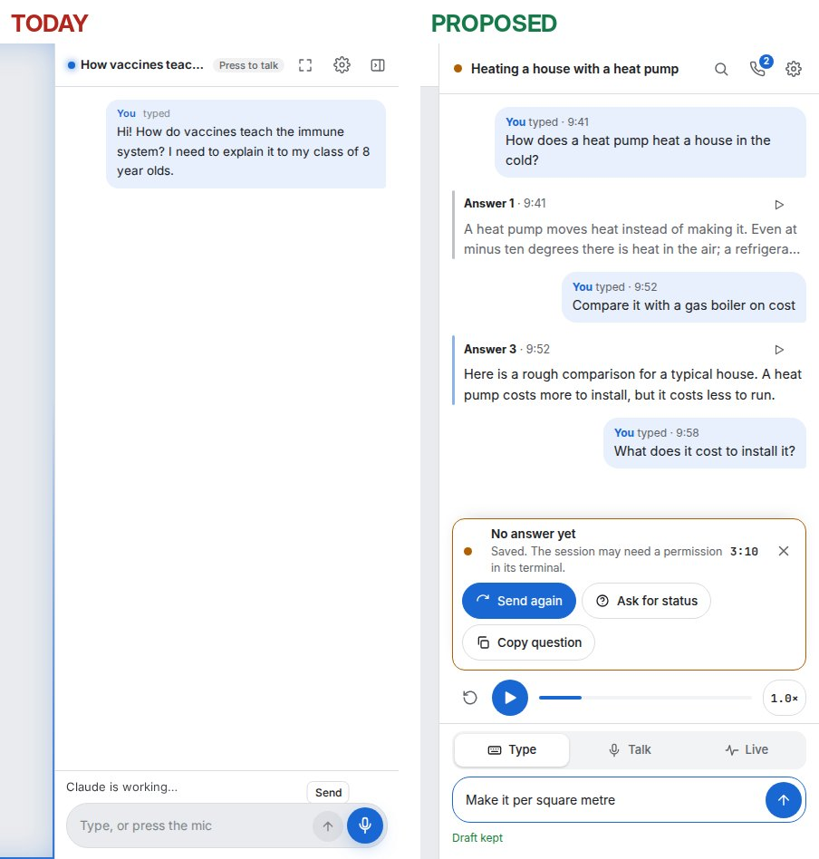
Problem
A message sent while Claude works folds into the open turn, the old answer lands and autoplays over it, the queue has no skip, nothing marks a superseded answer, and the wait is a bare line that turns into a terminal-worded warning after 3 minutes. The person has no way out of a turn.
Themes T1, T6, T13, T2. Testers: interrupter, first, power, phone, typist, tv.
Design
- Keep today's chat list. Add a strip docked directly above the mode row and field, always in the same place, for the turn in flight. It is hidden when nothing is open.
- Working: a pulsing dot, 'Working on answer 4, looking up installation costs', the question underneath, a clock the page counts itself from Send, and a Cancel icon. Progress notes become this one line and replace themselves; they are not added as rows, and the last one folds into the answer's header when it lands.
- Slow (after the stall time): the strip turns amber, says 'No answer for 3:10. Saved. The session may need a permission in its terminal.' and shows Send again, Ask for status, Copy question and Cancel. The draft in the field stays and is marked 'Draft kept'.
- Correction while working: the new message becomes its own turn. The strip says 'Working on your newer question' and the old answer, when it lands, is shown in the list tagged 'Replaced, not played' with its Play button: it is never autospoken.
- Queued: the strip shows 'Next, answer 5, starts when answer 4 ends' with Skip to it and a remove icon.
- The compact player (back one sentence, play, seek, speed chip) sits under the strip so speed is one tap and the strip and player read as one control block.
- Wide: icon and word on buttons; phone: icon only for Cancel and remove, words kept on the three slow-state actions so they stay tappable at 36 to 40 px.
- State words also go to the tab title and an aria-live region on the strip.
How it would be built
Files: skills/talk/static/call.js, skills/talk/static/call.css, skills/talk/static/call.html, skills/talk/talk.py, skills/talk/live_turns.py
- call.js statusText (~523-528): replace with renderStrip(); the page stores sentAt for each turn and counts the clock itself; wording of the stalled branch changes; actions post the same /api/say text (resend), copy to clipboard, or a fixed status question.
- call.js: status entries are not rendered as .line.status rows; the latest one feeds the strip; the .status{flex:1} leak in call.css (~147 vs 127) goes with it.
- call.js queued (the existing queued handling): render the queued answer in the strip with Skip (drops it from queued) instead of only a foot announcement.
- call.js: when the person has a later open message, an arriving answer for an earlier turn is marked superseded and skipped by the auto-play path (readerPlays is untouched; only the automatic play checks the mark); its row gets the tag.
- talk.py / live_turns.py: a say during an open turn creates a new turn instead of folding into it (TurnQueue); Call.answer marks the earlier answer's entry superseded=true; a cancel route for an open turn; /api/state carries superseded and the turn's sentAt.
- call.css: .strip rules, amber state, phone rules; call.html: strip container above .compose.
- Tab title and aria-live set from the strip state.
What goes away
- The foot's 'Claude is working...' line and its terminal-worded stall message
- Permanent progress-note rows
- Silent autoplay of a superseded answer
Risks
- Changing say-during-open-turn from fold to new-turn changes the turn protocol in talk.py and live_turns.py, which the Claude session on the other end must handle (an interrupted turn). Needs a decision on whether the session answers the old turn at all or is told to skip it.
- A 'Replaced' answer is not auto-spoken but must still be playable by hand through readerPlays(); it must not consume or reorder answer numbers (Talk numbers answers by Claude entries).
- Player claim: Skip and Cancel act through the server, so a page without the claim can still cancel; this is intended but should be said in the strip.
- Does not fix folded answers or catch-up (T3, T5); it is complete only next to a change to the answer list or alongside revampB-1, whose Now card can absorb the strip.
Effort: One to three days for the strip, wording and queue Skip on the page; the turn protocol change in talk.py is the larger part and may push it to the top of M.
Build check
The plan needs the corrections below. Worth building, but the build note is partly wrong. The turn protocol already makes a say during an open turn a new turn, so the page can derive Replaced from the later-you-entry rule it already uses. What is genuinely new is a server cancel (drop the answer on arrival, the session cannot be interrupted), the strip itself, and Skip on the single queued slot. Effort M is right if the protocol change is dropped and Cancel is honest about what it does. Mock fixed: leftover progress row removed, truncation removed, 40 px targets. I checked a few of the 16 renders by eye (working desk light, stalled phone dark, correction desk light); the rest were re-rendered from the same page but not read.
- Wrong premise on the fold: TurnQueue.offer (live_turns.py ~30) merges only a turn still pending (not yet collected). A say during an open (collected, unanswered) turn already becomes a new pending turn; next() then moves the old id into folded_ids. So 'change fold to new-turn' is how it already works. The real gaps: the session reads the newer turn only at its next doorbell, after finishing the old answer, and nothing marks the old answer superseded.
- statusText (call.js 512-531) exists, but it also serves queued (519), elsewhere, live and busy states. renderStrip must absorb or keep those branches, or foot and strip both speak. Status entries render as .line.status rows (call.js ~343); .status{flex:1} (call.css 147) is the foot's class, so check it before deleting.
- Cancel of an open turn has no route: /api/withdraw (talk.py 2228, 3252) only takes back uncollected lines (TurnQueue.withdraw is False once collected). A cancel can only mark the turn server-side and drop its answer on arrival; the Claude session keeps working and cannot be interrupted. The strip must say 'its answer will be dropped', not 'stopped'.
- Part of the superseded rule exists: maybeAutoplay (~833) and startQueued (~819) already skip an answer when a later non-withdrawn 'you' entry exists. The 'Replaced, not played' tag can be derived on the page from the same rule, with no protocol change; only Cancel needs a server flag.
- Queued Skip: `queued` is one variable (call.js 817), not a list. 'Skip to it' is startQueued() after pausing audio; 'remove' is queued=null. Both small. A skipped answer stays in the list, playable through readerPlays.
- Missing: tests (new ones in skills/talk/tests for TurnQueue cancel and for the page logic under node, call_page.py), a CLAUDE.md paragraph for the strip and Cancel, and an update of SKILL.md/references/call-page.md. The stall wording is shared with STALLED_AFTER / STALLED_OPEN_AFTER (180 s): the amber state should use view.stalled and not a second timer. The page-side clock from sentAt must survive a reload, so entries need their server time. A second page of the same call must also show the strip (server state, not page state).
- Player: the strip sits above the player and shows Cancel/Skip regardless of the claim; CLAUDE.md says one page speaks, so the strip must not start playback itself and must say 'Playing on another screen.' when so.
- Automatic play must not call readerPlays(): Skip to it and Replaced Play are user plays and do, which the proposal keeps.
- Stall wording is a copy of 'check the terminal' with an action; fine, but 'Ask for status' and 'Send again' post new turns through /api/say, so they must not create a duplicate turn without saying so (resend after stall should withdraw nothing, as the turn is collected).
- A mock-up is never kept in a repo: delete mock.html and shots once built.
The 11 testers' votes
| Tester | Choice | Score | Why |
|---|
| daily | version | 4 | The slow strip with Send again, Ask for status, Copy and 'draft kept' is practical, and my half-typed text is preserved. The player stays below and the layout is uncluttered. |
| newbie | version | 3 | A working strip with a pulsing dot and my question quoted is good. But the cancel is just an X and the small icons have no words. Cleaner than today but not as reassuring as the others. |
| thumb | version | 4 | Working strip shows my question and a timer with a cancel. Slow strip uses words on its buttons (Send again, Ask for status), which I like. |
| sofa | version | 3 | The working strip is clear and the whole conversation is easy to read. The text is the same small size as today. |
| keys | version | 3 | Slim working and stalled strips with a cancel icon are clean, but the icon-only cancel has no visible shortcut and the content is nearly the same as today. |
| back | version | 3 | The working strip with the question and clock, and the amber Send again strip, make waiting clear. Old answers are cut to two lines like today, so nothing new for catching up. |
| ears | version | 4 | A working strip that sits right above the player, with a pulsing dot, the step and the clock. I like the Cancel icon and the amber slow version with Send again and Ask for status. Older answers are cut to a line, which is a small loss. |
| quiet | version | 4 | The working strip with the question, clock and cancel, and the amber one with Send again and a Draft kept note, are reassuring. The conversation stays visible, which I like. The player sitting in the middle is a bit odd. |
| greek | version | 3 | The working strip is neat and shows my question and the time, but the strip with only an X is thin on meaning. The stalled one with full text is better; overall about the same as today but clearer on waiting. |
| rush | version | 4 | A working strip with a clock and an X to cancel, and a calm amber slow strip with Send again that keeps my draft. I like being able to cancel at once. It does not say whether the old answer stops when I send something new. |
| taste | version | 4 | Calm, one-card working state with the question quoted and a clear mode switch above the input; roomy and aligned. The mode toggle takes space and the cancel X is a bit ambiguous, but far cleaner than today. |
12. Replace the hidden player row with one Now dock that names the answer it plays and puts sentence steps, speed and follow beside Play
listen-1 · targeted · work medium · Real control over long answers (T8). Medium effort. Best folded into the Now card or dock.
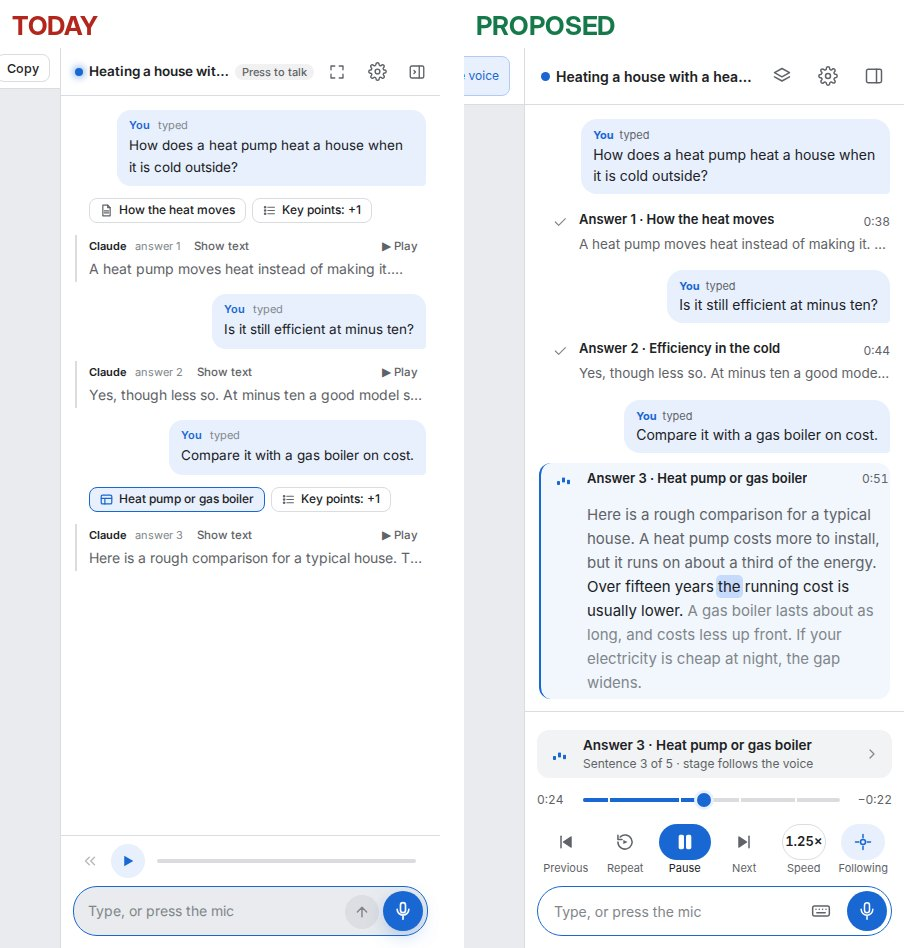
Problem
Today the only listening controls in the panel are Back 10 s, Play and a 0.1 s seek bar. Speed lives only in the gear (T8). Sentence stepping exists only as arrow keys (T8, T9). Nothing names which answer Play, Space and Back act on, and boardStart() can pick the front board's answer while Back 10 s acts on the loaded one (T5). A chip tap silently turns following off. 'Ready', 'paused' and 'playing' look alike. A queued answer has no skip (T6). The player row is also easy to hide behind hover tooltips (T7).
Themes T5, T6, T7, T8, T9, T10, T11, T12. Testers: listener, tv, first, keyboard, phone, interrupter, screenreader.
Design
- One Now dock sits between the conversation and the text field. Its first line names what plays: 'Answer 3 · Heat pump or gas boiler', and under it 'Sentence 3 of 5 · stage follows the voice'. It is the one place that says which answer every control acts on. Tapping it opens the full card on a phone and the keys list on a desk.
- Under it a seek track with a tick at each sentence start, elapsed time on the left and time left at the current speed on the right (-0:22).
- Transport as six aligned columns, icon over word on wide screens and icon only on narrow ones: Previous sentence, Repeat sentence, Play/Pause (the large one), Next sentence, Speed (shows 1.25x), Follow (Following / Pinned). Each target is at least 44 px.
- Back 10 s goes away. Previous and Repeat use the existing sentence logic of jump(): Repeat restarts this sentence, Previous goes to the one before, as a player's previous track does.
- Speed is one tap: the chip opens a six-step row (0.75x to 2x, current marked) above the dock; the choice is kept as today. The gear keeps only the engine and the autoplay switch.
- Distinct states at a glance, same grid: playing (animated bars, Pause button), paused (pause icon, 'Paused at 0:24'), ready (play icon, 'Answer 4 is ready' with a Play pill, for autoplay off or a hidden tab), silent (warning line 'No voice for answer 4' with Retry; transport greyed), queued ('Next up: Answer 4' with Play now, which skips the rest of the current answer).
- Follow is a visible state: the Follow column shows Following or Pinned (amber), and when pinned the Now line says 'Stage is on board 1 - keys play answer 3'; the stage header button reads 'Back to the voice'. A chip tap that pins now shows this instead of changing silently.
- Each answer in the list has a state column: bars (playing), check (heard), dot (unheard), skip (queued). The playing answer is open in full with the word lit; tapping a sentence plays from there.
- A keyboard icon in the text row opens the key list: Space, left/right, R, [ and ], N (next unheard), F (follow or pin). The panel names the answer in aria-labels ('Playback of answer 3') and announces state changes in a live region.
How it would be built
Files: skills/talk/static/call.html, skills/talk/static/call.js, skills/talk/static/call.css, skills/talk/talk.py (only for the optional skip of a queued answer, none otherwise), skills/talk/tests (page tests under node: call_page.py)
- call.html: replace the .player div (back, playpause, seek, time) with the Now dock: #now button, #seekrow with a ticks layer, #tp toolbar of six buttons (prev, again, playpause, next, speed, follow), #speedrow. Rail keeps its small back and play, wired to the same handlers.
- call.js: add paintNow() called from paintPill()/paintAll(): reads shownAnswer()/current/queued/hiddenHeld and writes the name, the sentence index (from sentenceTimes()), the state class (playing, paused, ready, silent, queued) and the time left divided by audio.playbackRate. Reuse jump(dir) for Previous and Next; add repeat() as jump(-1) with the AGAIN_S rule bypassed (restart the current sentence). Delete the $('back').onclick skip(-10) path and skip() except as the SKIP_S fallback in jump().
- call.js: speed chip toggles #speedrow; move the SPEEDS loop out of the gear to build both; SPEEDS gets 1.75 and 2. Extend MEDIA_KEYS with r, [, ], n, f, routed through mediaKey(). Space and Previous/Next act on current (the loaded answer); when boardStart() would pick another answer, the Now line says 'Space plays Answer N' and the Play button's label says the same, so control and name agree (T5).
- call.js: follow chip calls followAgain() when pinned; show Pinned whenever the follow flag is off (the flag already exists in chipTap/readerPlays). queued is already a variable: show a 'Next up' line with 'Play now' that clears the queued entry and calls load(). Add a ready line when hiddenHeld or autoplay is off and the last answer is unheard.
- call.css: new grid rules for .now, .tp (repeat(6,1fr)), .trk ticks; at the narrow breakpoint hide .lbl and open the card on tap of .now (reuse the existing popover pattern, focus moves into it and returns). Remove the gear's #speeds block and the old .player rules.
- talk.py: nothing is required. The ready and silent lines use data the page already has (e.speech 'ready' or 'failed', POST /api/speak for Retry).
What goes away
- Back 10 s button and the fixed 10 s seek
- Voice speed row in the gear (kept only as a mirror, optional)
- The bare .player row and its 0.1 s step slider
- Hover-only data-tip as the sole label of transport buttons
Risks
- boardStart() currently favours the front board's answer on Space; making Space act on the loaded answer changes that documented behaviour (CLAUDE.md: Play on a board the voice is not on plays that board's explanation). Resolve by keeping boardStart() but showing its target in the Now line and Play label instead of changing it.
- readerPlays() must stay the only entry for a reader-started play: the new Repeat, Previous and Next buttons call jump(), which does not start a play, but Play-from-ready must call readerPlays(); an automatic play must not.
- The player claim (/api/player): a page that does not hold the claim should show 'Playing on another screen' in the Now line and disable the transport; do not add any new playback entry that skips claim_player.
- Queued answers: Play now must keep queued/deferred bookkeeping consistent (queued = null, load(last, true)).
- Six columns at 390 px leave 60 px each; targets are 44 px but icon-only; the full card carries the words. Dock height eats about 40 px of conversation on a phone, so the conversation must be scrolled to the playing answer.
- Speed above 1.5x depends on the speech engine's pitch handling; preservesPitch is already set.
Effort: Mostly call.html/call.js/call.css rework of one region plus keyboard keys; no server change. Two to three days with page tests and a 390 px check.
Build check
The plan needs the corrections below. The proposal's plan mostly holds: the page already has jump(), sentenceTimes(), boardStart(), readerPlays(), followAgain(), queued, hiddenHeld and POST /api/speak, so there is no server change. Several details are wrong or missing. paintNow() and paintNowLine() already exist, so the dock painter needs a new name and should absorb them. Repeat needs a new parameter on jump(). The rail's Back 10 s button must be replaced too. The new keys must also pass through the stage's key forwarder (stage:key, MEDIA_KEYS). The heard and unheard marks and the next-unheard key have no data today. A page that does not hold the voice claim must disable the dock, and that case is in the risks but not in the build list. Tests, references/call-page.md and the CLAUDE.md paragraphs must change with it. Effort is M in size but closer to 3 to 4 days than 2 to 3. The mock-up was sound: aligned columns, icon and word wide, icon only narrow, no sideways scroll at 390 px, both themes legible. Its one defect was the 32 px Follow button, now 40 px, and all shots were re-rendered.
- Name clash: call.js already has paintNow() (line 426, marks the playing turn in the conversation) and paintNowLine() (line 468, writes the sentence being said into #nowline). The new dock painter needs another name (paintDock) and should absorb paintNowLine, not sit beside it. A 'Now line' partly exists, but it only shows the sentence text, not the answer name.
- 'Delete skip() except as the SKIP_S fallback' is right: skip() (line 1212) is used by jump() when an answer has no word timings. Keep skip(); delete only the $('back').onclick/$('railback').onclick wiring (line 1237). The rail's small Back 10 s button (#railback, call.html:61) must be replaced too, e.g. by Repeat, or the rail keeps a control the panel no longer has.
- Repeat is not 'jump(-1) with the AGAIN_S rule bypassed' as a one-liner: jump() has no parameter for it. Add an option (jump(dir, {restart:true})) or write repeat() that seeks to the start of the current sentence from sentenceTimes(). It must handle the no-timings case with skip(-SKIP_S).
- Previous after Repeat: with AGAIN_S (1 s x playbackRate) the existing Previous already goes to the sentence before when pressed within 1 s of a sentence start. That is fine, but the doc should say so; the mock labels it 'Previous sentence'.
- jump() acts on current only (returns when !current). In the ready state (new answer loaded paused or hiddenHeld, current may be null) Previous, Next and Repeat must be disabled, as the mock greys them. Today paintPill() only sets $('back').disabled = !current.
- Speed is held in `speed` and store 'speed', applied in load(); the SPEEDS loop at call.js:1241 fills #speeds in the gear (call.html:90). Moving it is easy, but paintSettings() (line 572) iterates $('speeds').children, so it must be changed to the new row. SPEEDS must gain 1.75 and 2 (line 5). Time left = (duration - currentTime) / audio.playbackRate: fine.
- Follow is a real variable (`follow`, followAgain() at line 1169, toStage stage:follow). A chip tap turning it off is in chipTap (line 150). Follow in the dock should call followAgain() when pinned and toStage({type:'stage:follow', on:false}) plus paintSettings() when following. A toggle needs a new 'pin' path: nothing today turns follow off except chipTap and the gear switch (#follow, call.html:92). The gear switch stays and must mirror the dock.
- 'Space plays Answer N' is right: boardStart() (line 1217) returns the board's answer only when paused and the voice is not on it. The Now line can call boardStart() itself to name the target. Claim about T5 holds: jump()/Back act on current, Space on boardStart().
- Queued 'Play now': queued (line 817) is only set while an answer plays and autoplay is on; startQueued() has guards (a later 'you' entry, userBusy, playingElsewhere, stopped). Play now should call load(e, true) after readerPlays(e) and takeVoice(), and clear queued; it must also set audio so the playing answer is dropped. The existing statusText 'Next answer ready: it plays when this one ends.' is the line the Next-up row replaces. No server change needed: holds.
- Ready state: hiddenHeld, !autoplay and elsewhere cases all load() the answer paused. The 'Answer 4 is ready' pill must be derived from shownAnswer() with !current-or-paused-at-0 and e.speech === 'ready', not from hiddenHeld alone, or it misses autoplay off. 'Silent' uses e.speech === 'failed' and speech_error; the Retry posts /api/speak {entry} which exists (R4 in CLAUDE.md) but call.js has no caller shown for it except 'the play button is call.js's': check showFailedAnswer and the per-turn retry before adding a second one.
- Player claim: paintPill has no state for 'Playing on another screen' except statusText's `elsewhere` line (line 520). The dock must read `elsewhere` and playingElsewhere() to disable transport. The proposal lists this as a risk but not in the changes list: add it.
- New keys: MEDIA_KEYS (line 1290) is a Set also used for stage:key forwarding at line 132, so the stage's own keydown forwarder (stage.js) must send the new keys too (r, [, ], n, f), else they work only with focus on the panel. The keydown handler's `free` test is for Space and arrows only; letters need the text field to be empty-and-focused-or-body, otherwise typing 'r' in the field breaks. mediaKey also returns false for the existing busy/recorder cases: keep.
- 'N (next unheard)' has no data: the page has `seen` but no heard-state per answer. The check/dot/bars state column in the list needs a 'heard' flag (finished playing). The call.js 'ended' event could record it in memory; across reloads it needs storage or the server's per-answer heard mark (view.calls[].unheard exists for other calls only). Either keep it in sessionStorage or drop 'heard' vs 'unheard' marks.
- Tests: skills/talk/tests/test_call_page.py and call_page.py (node page harness) cover the player; no test references #back/#seek ids except through the harness, so existing tests that click 'back' or read #speeds must be updated (grep needed). New tests: Repeat restarts the sentence (two pasted runs), speed chip sets playbackRate and store, follow chip, queued Play now, ready state, space naming boardStart's answer. A node DOM harness cannot check 44 px or layout: the 390 px check stays in the browser.
- Docs to change in the same change: skills/talk/references/call-page.md:28 ('player (pause, back 10 seconds, a seek bar)'), and the repo CLAUDE.md paragraphs on readerPlays, the player claim and queued answers (add the dock and Play now). The hover data-tip tooltips (call.css:214) cover the dock time; the proposal drops them for the transport but call.css rule .ib[data-tip]:hover::after still applies to every .ib in the dock unless the dock buttons use a different class.
- Rule conflicts with CLAUDE.md: none hard. readerPlays() stays the only entry for a reader-started play and Play now/ready Play must call it; automatic plays must not. Seeking with Previous/Next/Repeat does not start a play, so it is consistent with the file. The 'Space acts on the loaded answer' idea was correctly dropped in favour of naming the target.
- Effort: M is slightly low. Count: new dock markup and CSS at two widths, speed row, card popover with focus handling, 5 states, queued skip with bookkeeping, 5 new keys wired through the stage forwarder, rail button swap, heard state, tests and doc edits. 3 to 4 days; no server change holds.
- No hard conflict with the repo CLAUDE.md. Two soft ones to fix in the same change: references/call-page.md line 28 and the CLAUDE.md talk paragraphs name 'back 10 seconds' and 'speed in the gear', which the proposal removes. ADR-003 / house style: 'Visible buttons over keyboard shortcuts' is met (every key has a button). The hover-only data-tip pattern (call.css:214) is replaced for the dock by always-visible words on wide screens and a card on narrow ones, which matches ADR-003.
The 11 testers' votes
| Tester | Choice | Score | Why |
|---|
| daily | version | 4 | The dock names the answer and sentence, seek track has ticks, and Previous/Next/Speed are labelled. It is a little busy but gives real control over long answers. |
| newbie | version | 4 | Big labelled buttons (Previous, Repeat, Pause, Next, Speed, Following) with words under the icons are easy for me. The sentence 3 of 5 line tells me where I am. A lot of controls, but each one is named. |
| thumb | version | 4 | Next up line with a skip button works, and tapping the Now line opens a full card with huge Previous, Pause, Next. That is one-thumb friendly. |
| sofa | version | 4 | Labelled buttons (Previous, Repeat, Pause, Next, Speed) are what I want on a TV, and the Now dock says where I am. The type could be larger. |
| keys | version | 4 | A dock with labelled Previous, Repeat, Pause, Next, Speed and Following buttons plus sentence ticks is clear and precise, though I would like key chips on them. |
| back | version | 4 | A dock naming Answer 3 and Sentence 3 of 5 with a seek track and labelled Previous/Repeat/Next buttons is clear. Past answers get checkmarks and durations, so I see what I finished. |
| ears | version | 4 | A dock saying Playing answer 3, Sentence 3 of 5, labelled big buttons and ticks on the seek track make it easy to control without precision. The speed row is handy, but the dock takes a lot of space. |
| quiet | same | 3 | The dock with sentence ticks, Previous, Repeat, Next and the speed row is polished. But with the sound off I rarely use playback, and it takes a lot of height. |
| greek | version | 4 | Next up with a skip and a Now line that opens a full card with Previous, Repeat, Pause, Next and speed is very thumb friendly and has words. The dock stacks a lot, so the answer text gets less room. |
| rush | version | 4 | A dock that says Answer 3, sentence 3 of 5, with a seek bar and a speed row that opens in one tap. It gives me plenty of control over what is playing. Labelled buttons help, though the dock is heavy and takes up a lot of room. |
| taste | version | 4 | Full player with scrubber in segments, Next up row with skip, and a tap to open a sheet with big controls. Good for listening, though the dock gets tall and the stage shrinks. |
13. Make the panel head one state band, with answers as aligned items and other calls in words
trust-2 · whole-panel · work large · Makes stalls obvious from another tab. Large effort and some cited functions do not exist. Fold into the wait card.
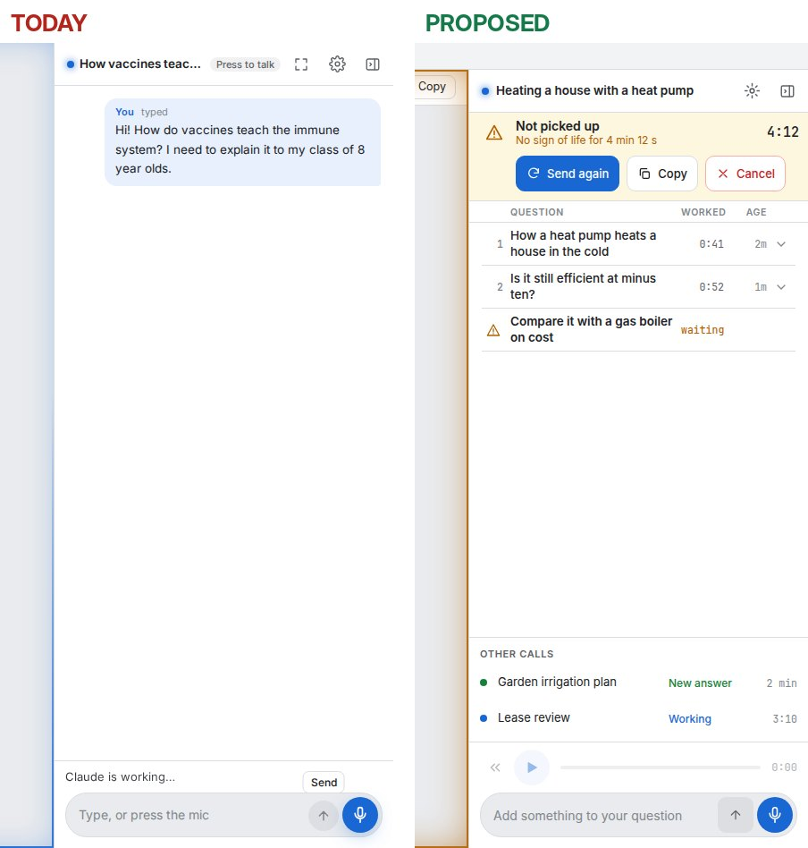
Problem
State is scattered: the working text sits in the foot, the follow state in a chip, the mode in a corner pill, the queued answer in a plain line, other calls as undifferentiated dots, the tab title never changes. The newest answer folds like old ones, so the person taps to know what Claude said and whether anything needs them. There is no place that always says where the call stands and what the person can do next.
Themes T1, T3, T6, T13, T10, T11. Testers: power, first, tv, phone, returning, screenreader, interrupter.
Design
- A state band sits directly under the panel head and never moves: icon, state word, one detail line, a clock when one is running, and the one or two actions that fit the state. States: Your turn, Sent, Working (with the running step), Slow, Not picked up, Reading answer N (with the board on the stage), Next answer ready (Skip), Ended. It replaces the foot status line, the queued line, the mode chip and the jump pill as the single answer to 'where are we'.
- The band's tone follows the state (blue working, amber slow or stuck, green your turn, blue speaking) and the stage ring and the tab title use the same word and clock.
- Not picked up: the band grows a second row with Send again, Copy and Cancel. Working: Cancel. Reading: Pause. Phone: icon-only actions, 44 px, and the second row stays icon-only; a tap on the band opens it as a full card with words and the finished steps.
- The conversation becomes a list of headed items on one grid with a column header row: number, the question as the title, Worked (time Claude spent, from the activity record), Age, chevron. The newest answer is open in full with its word highlight, a chip with the boards it brought by title and the 'Worked 1:52 · 5 steps' chip; older items are one row each. The question being answered is a pending row with a spinner and the same columns.
- Other calls become a short block above the player: dot, name, state in words (New answer, Working, Your turn), age, all aligned; a tap switches to that call. On a phone the block collapses into one icon button in the head with a coloured badge.
- A pause forced by another call is a line in the band ('Paused: you are talking in Lease review') instead of a stage toast.
- Tab title and favicon dot use the band's state; a polite live region reads the band text on change.
- The rail (collapsed) keeps the band as one coloured icon with the clock under it, so the state survives collapsing.
How it would be built
Files: skills/talk/static/call.html, skills/talk/static/call.js, skills/talk/static/call.css, skills/talk/talk.py, skills/talk/live_turns.py, skills/talk/static/home.html, skills/talk/references/call-page.md, skills/talk/SKILL.md
- call.html: add #band under .phead; remove #status and #undo from .info (Undo becomes the band's action for 'Taken back'); add .colhd and the items container in place of the free conversation list; calls block above .foot.
- call.js: new bandState() returning {tone, icon, word, detail, clock, actions} from the same inputs statusText() reads today, plus view.turn; statusText() is kept only for transient messages (live, hearing you), which render into the band's detail. appState() and paintPill() call it so the ring, rail icon and title agree. paintTitle() writes document.title.
- call.js: paintConvo()/sigOf() render each answer as an item row (headed by the question of its turn, worked time from the activity record, age), the newest open and the others folded; chevrons toggle one item and an 'Expand all' control joins the header row. Word highlight and tap-a-word are unchanged inside the open item; readerPlays(), followAgain() and the chips' front cue logic are not touched.
- call.js: callState() and paintCalls() use the band's vocabulary (new answer, working, your turn) and draw the aligned block; yieldFloor() writes into the band instead of the generic toast.
- call.css: .band, .colhd, .ih/.it grid (one set of fixed column widths), .calls grid, amber and blue tones; phone rules hide the Worked column and collapse the calls block. Remove .line.status, .info and the shimmer text.
- talk.py: view() adds turn {sent_at, collected_at, last_activity_age} and per answer worked_s and step_count (summed from the activity list kept on the entry when the reply lands); POST /api/cancel as in trust-1; stamp() already carries stalled, extended with the other calls' state words including 'your turn' (an answered call with no open turn).
- home.html: stateOf() reads the same vocabulary so the All calls page and the panel agree.
What goes away
- The foot status line, shimmer text, queued line and Undo placement
- The corner mode chip and Jump pill as separate state carriers
- The static one-line folds for the newest answer
- The 'Paused: you are talking in X' stage toast
Risks
- Whole-panel change: it rewrites paintConvo() and the foot, and touches every state of the panel; the hidden tests that run call.js under node (call_page.py, dom_shim) need new cases for the band and items.
- Following the voice: the band names the answer playing and its board, but the chip, jump and follow logic stay as documented; Play on an item must go through readerPlays() and a new way to start playback must not bypass it (CLAUDE.md).
- The player claim between pages: 'Playing on another screen' moves into the band as a state; the claim protocol in claim_player and the localStorage fallback are unchanged.
- Queued answers: the band shows 'Next answer ready' with Skip; queued handling in call.js stays the single owner of the queue.
- Worked time and step count need the activity list to be kept per answer; today activity is cleared when the turn ends (talk.py ~2338), so it must be summarized into the entry at reply time.
- The newest-open rule overlaps with the reader on the stage: both show the answer; the panel text must stay one open item at a time to avoid two big copies on a phone.
- Larger scope than trust-1: it touches the other-calls popup and home.html, which belong to the 'juggle calls' theme and may collide with another designer's proposal.
Effort: New band, item list and calls block plus the same server parts as trust-1 and per-answer work summaries; about a week with node-run page tests and a browser pass at 1440 and 390 px.
Build check
The plan needs the corrections below. The direction is good: one band that always says where the call stands, a tab title that carries the same word and clock, and an aligned item list answer the top findings (T1, T3, T13). But the build text does not hold as written. Three named functions do not exist (paintConvo, sigOf, paintTitle), view.turn and POST /api/cancel do not exist, and per-answer work time is lost because activity is cleared at collection. The open newest item breaks the repo rule that every panel answer is one line and shows the text twice next to the stage reader. Cancel and Send again need a real server rule or they make duplicate or late answers. Effort L is right but nearer two weeks than one; splitting it into the band and title first, then the item grid and work summaries, is safer. The mock-up needed five fixes (tab title word, 40 px targets in the calls block and head icons, two-line titles instead of cut ones), all made and re-rendered in both themes at both widths, with no sideways scroll at 390 px.
- Named functions that do not exist: there is no paintConvo(), sigOf() or paintTitle() in call.js. The conversation is painted inside the turn renderer around call.js 309-420 (the unfolded Set at 309, fold toggle at 322-329, paintTurn at 420). The tab title is set once at call.js:12 (document.title = 'Talk · ' + topic) and nothing repaints it. 'statusText()', 'appState()', 'paintPill()', 'callState()', 'paintCalls()' and 'yieldFloor()' do exist (512, 534, 540, 689, 695, 671) and read the inputs the design assumes.
- view.turn does not exist. Call.view() (talk.py 2810) returns only v, entries, working, stalled, listening, activity, ended, heard_upto, filler. sent_at, collected_at and last_activity_age must be added: live_turns.py holds last_activity and the stalled timers, but nothing exposes when the turn was sent or collected.
- Worked time and step count are not stored per answer. Call.collected() (talk.py 2337) sets self.activity = [] when a turn is collected, and view() sends activity only while working, capped at the last 8 items with seconds measured from monotonic time. The design must summarize steps and seconds into the entry at accept_reply time, and the entry must be saved to the transcript so a reload or an older call still shows Worked. Old answers will have no Worked value, so the column needs an empty slot.
- POST /api/cancel does not exist. talk.py has an Undo route (about 3253: take back what was said while Claude does not yet have it) but nothing cancels a turn Claude already collected. 'Cancel' while Working therefore needs a new server rule: either a withdrawn turn that the session sees as withdrawn, or a label that says it only stops waiting. A cancel the session never learns of would let the answer arrive later and be played as a new answer. The design relies on trust-1 for this, so it is not self-contained.
- 'Next answer ready (Skip)': call.js keeps the queue as a single variable (queued, line 817) and statusText returns plain text for it. Skip needs a new handler that clears queued and marks the entry heard, and it must not go through readerPlays(), since that is the path for a play the reader starts.
- 'Send again' and 'Copy' on Not picked up need the turn's text. The page has it from the entry, but Send again would create a second turn while the first is still open. It needs a server rule (replace the open turn) or it produces a duplicate answer.
- Other calls: stamp() already hashes the other calls' summaries, so a 'your turn' word needs a new field in the summaries (an answered call with no open turn). The age and the 'Working 3:10' clock for another call need that call's turn start time in the summary. callState() currently returns new answer / ended / working / talking now / open, with no age.
- 'Paused: you are talking in X' moving into the band: yieldFloor() uses showError, and the floor channel and the claim protocol stay as they are. The band needs a transient detail that outlives the toast, with a rule for when it clears. No conflict with CLAUDE.md there.
- Conflict with CLAUDE.md: 'every answer folds to one line in the panel' and the reader on the stage carries the answer text, with the staged answer folded so one copy of the text shows. The design opens the newest answer in full in the panel while the reader on the stage also shows it as a strip or in full. That breaks the stated rule and shows two copies on a phone. The rule line in CLAUDE.md and call-page.md would have to be changed in the same change, and the word-highlight (now-word) would then live in two places, the reader and the panel item, which the claim 'unchanged inside the open item' does not cover.
- Tests: call_page.py and dom_shim run call.js under node, and test_call_page.py will break for every change to the conversation, status line and foot. New cases are needed for bandState (one per state), the item grid, expand all, tab title and the queued Skip. talk.py needs tests in test_server.py or test_r4_server.py for the new view fields and the cancel route. Also test_tokens.py may check call.css and tokens.css, which the new colours (amber band) touch.
- Effort: L is about right, but one week is low. It is a rewrite of the turn list and the foot, plus per-answer persistence, a cancel protocol, a changed rule in CLAUDE.md, home.html, and node tests. Count roughly two weeks, or split it: the band and tab title first (M), the item grid and per-answer work summary next (M).
- CLAUDE.md: 'every answer folds to one line in the panel' and the stage reader carries the text. The newest-open item contradicts it and doubles the text on a phone.
- CLAUDE.md: the doorbell and queue rules say queued handling stays in call.js; a new Skip must clear queued without calling readerPlays().
- Global CLAUDE.md, name a mechanism for its role: the mock-up and designer text call the persona-based rule 'your turn' fine, but nothing may be named for a person (no such name found in the mock). No conflict found there.
- Global CLAUDE.md, no explaining text in a list: the band detail line and the 'Next answer ready' wording are fine, but the 'working' / 'waiting' words in the Worked column of the pending row put a state word in a data column. Use an icon there (the spinner already is one).
The 11 testers' votes
| Tester | Choice | Score | Why |
|---|
| daily | version | 4 | The amber 'Not picked up' band with 4:12, Send again, Copy and Cancel, plus the tab title and border, make stalls obvious from another tab. The question table is useful, but the rest of the page is dull. |
| newbie | version | 4 | The amber 'Not picked up' band with Send again, Copy, Cancel tells me exactly what went wrong and what to do. The list of questions with 'worked' and 'age' columns is a bit technical, and the whole screen is edged in orange, which is a little alarming. |
| thumb | version | 4 | Amber 'Not picked up' with three big icon buttons is easy to hit. I'd just not know what each icon does without words. |
| sofa | version | 3 | A clear Cancel and a clock are reassuring, but the table of columns (Worked, Age) and the other-calls list are too much. |
| keys | version | 3 | Send again, Copy and Cancel as real buttons in a stalled band is useful, but the page-wide amber border is loud and the question table pushes the conversation out. |
| back | version | 3 | A clock and Cancel at the top are useful, and the amber Not picked up band with Send again is very clear. Replacing the conversation with a table of questions is odd, and I lose the answers. |
| ears | version | 4 | The amber band with 4:12 and Send again is obvious from across the room, and the window border and tab title change too. It sits at the top, so I might miss it when the list is long. |
| quiet | version | 4 | A working band with a clock and a Cancel, plus a clear amber Not picked up state with Send again, tells me whether to wait. The question list with times is useful but it hides the actual answers, which I read. |
| greek | version | 4 | A clear Not picked up band with time and three big icon actions, and a Reading answer band with a pause button. Honest and easy to see. The three action icons have no words and I would guess a bit. |
| rush | version | 4 | A band at the top with the clock and a Cancel, and a stuck state with Send again, Copy and Cancel, and a list of my questions with the time each took. Good control when I am impatient. The list takes the whole panel though, so I lose the conversation text. |
| taste | version | 3 | Amber 'Not picked up' band with icon-only retry, copy and cancel is clear, but icon-only actions with no words are risky for a destructive cancel. The question/age table header is nice. |
14. Turn the panel into a calm list of headed answers with one 'now' strip, so rest shows what Claude said, what plays and what to do next
density-1 · whole-panel · work large · Good density, duplicates convo-1 and catchup-1. The Talk dropdown is hidden.
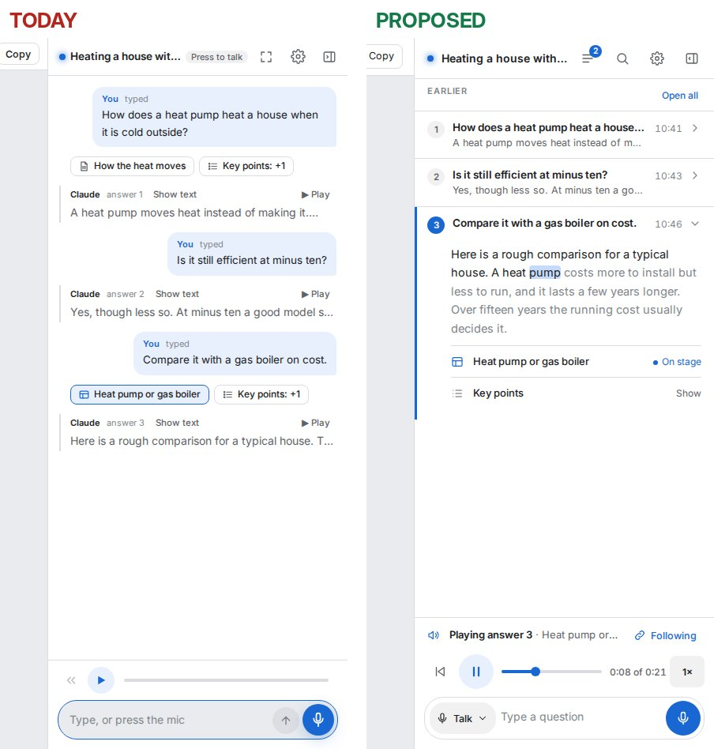
Problem
At rest the panel is a log: right-aligned bubbles, a chip row that floats above each answer, every Claude answer cut to one grey line with a 11.5 px 'Show text' link, 'answer N' labels, 'Key points: +1' chips, progress notes that stay forever (and stretch into blank bands), and a foot that holds a bare 'Claude is working...' line. The player carries only back 10 s and play; speed, talk mode, follow and live sit in the gear, which is 670 px of segmented controls. Three different chrome families (bubbles, chips, tags) say little; the newest answer, the one thing a person wants, is the smallest and greyest text on the page. This proposal reduces what is shown by giving every fact one place: one row grammar for answers, one strip for 'now', one player row with speed, one composer with the mode, and a gear that holds only rare settings.
Themes T1, T2, T3, T4, T5, T8, T11, T12, T13. Testers: first, power, phone, tv, finder, listener, returning, interrupter, mic, greek, keyboard, screenreader.
Design
- Header, one row, icon-only buttons with titles: state dot, the call's full topic, Other calls (badge counts calls with something new), Search this call, Settings, Collapse. No 'Press to talk' tag, no mode text, no fullscreen button here (it moves to the gear's Screen row).
- Conversation = headed items on one grid (number, question, time, chevron). The question is the title, so there are no 'You' bubbles, no 'Claude' label, no 'answer N' tag and no 'typed' tag. The newest answer is open in full at 14.5 px with the word highlight; older items fold to question plus a one-line gist, rows aligned in columns with hairlines. A list caption 'Earlier' carries one 'Open all' control.
- Boards sit inside their answer as rows (icon, board title, status 'On stage' / 'Pinned' / 'Show'), under the answer text, same three columns on every row. No chips before the answer, no 'Key points: +1'; a key list is simply a board named 'Key points'.
- Progress notes are one live row under the open question ('Checking tariffs', 0:42, page-kept clock) and disappear when the answer lands. Nothing stays as a grey dot line.
- One 'now' strip at the top of the foot, same slot for every state: 'Ready · answer 3 · 0:21', 'Playing answer 3 · Heat pump or gas boiler', 'Working · answer 4 · 0:42' with Cancel, 'Ready · 2 new answers waiting' with Play from 4. At the right a Follow control: 'Following' (quiet) or 'Follow voice' (filled) when the stage shows another board, so following is one visible state with a one-tap return and a pinned board says 'Pinned'.
- Stalled (after the server's stall time) turns the strip amber: 'No reply for 3:10' with three plain actions, Send again, Copy, Ask status, instead of 'Check the terminal'.
- Player row: previous sentence, play/pause 44 px, seek, time, speed chip '1×' (tap opens 0.75 to 2×). Hidden while working so the wait is only the strip.
- Composer: a mode pill inside the field on the left (Talk, Live, Type with icon; Live shows the green level bars), field, then Send when there is text, else the mic. Mode, speed and follow are all one tap from the panel, so the gear holds only rare things.
- Returning to a call: a divider '2 new since you left' at the first unheard answer, the strip offers Play from 4.
- Gear: a focus-managed sheet of rows (label left, value right, chevron): Voice, I speak, autoplay switch, Theme, Screen, Panel side, Keyboard shortcuts, Stage demo, End call. Fits 600 px high; scrolls when shorter.
- Wide: icon and word in the strip and rows; narrow (phone, panel under the stage): header icons only, folded rows show question and time, and a tap on a folded row opens a full card (answer text, boards, Play) as ADR-003 asks. All targets are 40 to 52 px; nothing scrolls sideways at 390 px.
- States in the mock via ?state= : rest, playing, away (following off, stage shows Key points, 'Follow voice'), working, stalled, returned, first, search, gear, speed, mode, card; add ?theme=dark to force a theme.
How it would be built
Files: skills/talk/static/call.html, skills/talk/static/call.js, skills/talk/static/call.css, skills/talk/talk.py (small), skills/talk/tests (page tests under node), skills/talk/references/call-page.md, CLAUDE.md (one paragraph on the new panel grammar)
- call.js: replace the turn renderer (the code that builds .turn.you / .turn.claude, chipRow, the fold Set at about 309-329) with one item(entry) renderer that pairs each user entry with its Claude entry (the pairing by answer number that Talk already uses), folded by default except the newest; keep the word spans, sentenceRuns and now-word so paintReader and the highlight are untouched.
- call.js: board entries (board_item, chipRow at about 341-349 and 372-381) become rows inside their answer item; a row's click keeps its present behaviour, but now calls followAgain()-aware code and prints 'Pinned' when following is off; this removes the silent follow-off.
- call.js: statusText (about 523-528) becomes nowStrip(state): a page-kept clock started at Send (not from the activity item), the activity label when present, the stalled branch worded as actions (Send again re-posts the last user text through the existing /api/say, Copy uses the clipboard, Ask status sends a fixed question). The 'Cancel' button needs a server verb (see talk.py).
- call.js: speed chip and sentence-back in the player (setSpeed and the audio element already exist; speed leaves the gear); a mode pill replaces the 'Press to talk' tag, reading the existing talk.mode and live code; 'since you left' marker derived from the last answer the page played or the last visibility time, using entries already in state.
- call.js/call.css: Search (client-side filter over entries, no server change); gear becomes a rows sheet with focus trap and return focus; phone card for a folded row; tab title and an aria-live region follow the strip's text.
- call.css: new item/row grid rules; scope the foot rule to .foot .status (fixes the flex:1 gap bug); delete .turn.you bubble, .chips, .chip, .clbl, .fold, .play link rules; 40 px minimum targets, TV mode multiplies one --u scale.
- talk.py: status entries stop being permanent transcript lines for the page (view() marks entries 'note' with the turn they belong to so the page can drop them when the answer exists); optional cancel/withdraw route that marks the open turn withdrawn (the page already styles .turn.withdrawn) and tells the session; no change to the player claim.
What goes away
- You bubbles, 'You typed' tag, 'answer N' tag, per-answer Play link, 'Show text' link
- chip rows above answers and the 'Key points: +N' label
- permanent progress notes in the conversation
- the gear's Talking, Voice speed, Stage-follows rows (they move to the panel)
- the 'Press to talk' tag in the header, the bare 'Claude is working...' foot line and its shimmer
Risks
- CLAUDE.md says every answer folds to one line in the panel because the stage reader carries the text. This proposal unfolds only the newest answer in the panel; that is a deliberate change of that rule and the reader strip on the stage must keep working (duplicate text beside the board, hide the panel text for the playing answer when a reader strip is up, or keep the fold when a board is in front). Needs a decision before build.
- Follow rule: readerPlays() must still leave following as it is; the board rows in answers must go through the same path as chips do now, and Play-from-here must keep calling followAgain(). The strip only reads the state, it does not change it.
- Player claim: 'Playing on another screen.' needs its own strip text; the strip must not start playback by itself. Queued answers (queued in call.js) show as 'Next: answer 5' in the strip, with Skip as a later add.
- Pairing a question with an answer when a correction folds into an open turn (T6) can mis-title an item; the withdrawn/superseded marker is therefore a prerequisite for correct headings.
- Tests: the node page harness (skills/talk/tests/call_page.py) selects by today's class names and will need updating; the 390 px layout has to be re-verified in a browser as the suite has none.
- Search over a long call is client-side only; fine for tens of answers.
Effort: A rewrite of the panel's render and CSS (call.js turn, chip and status code, about 600 lines touched) plus a small server change for notes and cancel and updated node page tests; three to five days, with the stage reader interplay the largest uncertainty.
Build check
The plan holds. The build mostly holds: the functions it names exist (statusText, chipRow, the fold Set, readerPlays/followAgain, queued, view.stalled, the withdrawn style). It gets three things wrong or too small. Cancel after pickup needs a new server verb, because /api/withdraw only works before the doorbell takes the turn. 'Since you left' should use the existing heard_upto. User and answer pairing is by order, not by number. It also needs a decision on CLAUDE.md's rule that answers fold to one line in the panel, and its board rows must keep readerPlays() and followAgain() as they are. Effort L is right. The mock-up was readable and in the house style, but several targets were under 40 px (speed chip, mode pill, Follow, Cancel, Open all, search input), and the stalled actions touched the strip. I fixed these, re-rendered all states and measured no sideways scroll and no target under 40 px. No code in skills/ was changed.
- Cancel is not wholly new: Call.withdraw and POST /api/withdraw exist in talk.py (about 2228 and 3252), and .turn.withdrawn is already styled, but withdraw works only while no doorbell has collected the turn (TurnQueue.withdraw). Cancel while 'Working' needs a new server verb that marks the open turn withdrawn after pickup and tells the session. The proposal's 'optional cancel route' is therefore required, and it is the largest server change.
- 'Since you left' need not be derived on the client: view() already carries heard_upto (talk.py about 2812). Use it for the divider and 'Play from 4'. The proposal's 'last played / visibility time' guess is weaker.
- view.stalled and view.listening already exist, and statusText (call.js 512) already has a stalled branch. nowStrip is a rewrite of that function, not new logic. Send again can reuse the existing /api/say path. 'Ask status' needs a fixed question, and Claude may not answer it while it waits on a permission prompt.
- The pairing 'by answer number that Talk already uses' is off: only Claude entries carry e.n. User entries are paired by order, with withdrawn and folded-correction entries in between (T6). Build a pairing helper that skips withdrawn entries. sigOf (call.js 307) must include the pair, or an item will not repaint when its question changes.
- Status/note entries are kept by Call.add('note') (talk.py about 2403) and by activity_view(). Marking them with their turn is a small server change, but the page must also hide them in existing saved transcripts, because the page will drop them.
- Node page harness: skills/talk/tests/call_page.py and test_call_page.py select by .turn/.chip/.fold/.who. Expect a rewrite of the selectors. The 390 px layout still needs a browser check, as the suite has none.
- Effort L holds. The call.js and call.css rewrite touches about 600 lines, plus a new server verb, the tests and the stage reader interplay, so three to five days is right. The new Cancel verb and the pairing helper move it toward the top of L.
- CLAUDE.md: 'every answer folds to one line in the panel' and the stage reader carries the text. Opening the newest answer in full in the panel duplicates the reader and breaks that rule. A decision is needed. Suggested rule: open the newest answer only when no reader or board is in front, and fold it to its gist while a reader strip is up.
- CLAUDE.md: readerPlays() leaves following as it is, and only Play on the board in front calls followAgain(). A board row that 'prints Pinned' and removes the silent follow-off must go through readerPlays() and must not call followAgain(), or the rule changes. The CLAUDE.md paragraph on the call page must be updated.
- Player claim rule: 'Playing on another screen.' and queued answers need their own strip text. The strip may only read state and must never start playback.
- ADR-003 narrow rule: the proposal says phone rows show question and time and a tap opens a card. That agrees with ADR-003. The wide 'icon and word' rule is only partly met, because the header is icon only at every width and the Search, Other calls and Settings buttons have titles only.
The 11 testers' votes
| Tester | Choice | Score | Why |
|---|
| daily | version | 4 | An 'Earlier' list of numbered rows with times, a clear open answer with the board as a row, and a compact player with a Following link. Dense in a good way; the Talk dropdown is a bit hidden. |
| newbie | version | 4 | One card at the top shows what is playing with the words lit and the controls right under it. The earlier answers are listed below. I like having everything in one place. Small grey type under the player is hard to read. |
| thumb | version | 4 | Compact: questions as rows with numbers, and the playing bar says what's playing with the Following link. Stalled state has clear words on its buttons. |
| sofa | version | 3 | Folded earlier answers keep it tidy and the open one is readable. The small grey times and the little icons are lost at my distance. |
| keys | version | 4 | Folded earlier answers with a numbered, timestamped list plus search and Open all make the panel dense and scannable, and the open answer shows the word highlight. |
| back | version | 4 | Older answers are neat numbered rows with times and the newest is open, so I see more at once. The not following state with a Follow voice button is clear. |
| ears | version | 4 | Newest answer open with the word highlight and two boards as rows, older ones folded. It is much easier to follow than today's cut-off one-liners. |
| quiet | version | 4 | The newest answer is open as full text with the word lit, and older ones are one tidy row with time and gist. I can find things much faster than in today's ellipsised wall, and the Follow voice button is obvious. |
| greek | version | 4 | Compact numbered rows of answers, one open with the lit word, a clear Playing and Following line and a Talk dropdown by the text box. Stalled state shows buttons with words Send again, Copy, Ask status. Good density and readable. |
| rush | version | 4 | The newest answer open with a highlighted word, older ones as short numbered rows, and boards as rows with On stage or Show. It is easy to scan and the 'not following' strip with Follow voice tells me why the stage has not moved. |
| taste | version | 4 | Compact numbered rows, one open answer, Playing line and a Talk dropdown inside the input free up lots of space. Very tidy and aligned; the stalled state with Send again / Copy / Ask status words is understandable. |
input-1 · targeted · work large · Shows the state and keeps drafts. The build check shows a wrong setter and no mute.
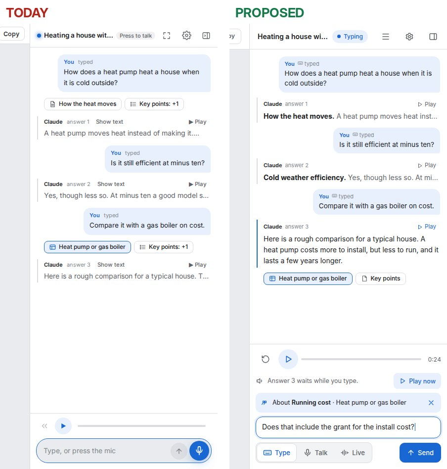
Problem
Saying something is the most constant job on the page, yet the mode (type, Talk, Live) lives in the gear, the header chip that names it is read-only, and a dead or muted microphone looks the same as a quiet room. Live shows 'listening' from an open stream only. Typing a quote or a draft while an answer lands silently holds the answer (userBusy) with no sign of it. Press-to-talk, Live and Interrupt options are three rare-looking settings for what is a per-moment choice.
Themes T14 Settings and Live mode, T1 Waiting for Claude, T8 Hearing (answer held while typing), T9 Keyboard use, T12 Phone layout (targets), T5 Following (quote context). Testers: mic, typist, tinkerer, greek, keyboard, phone.
Design
- The foot becomes one composer with two rows. Row 1 is the field. Row 2 is a three-way mode switch (Type | Talk | Live), icon and word on wide screens, icon only at 390 px with 44 px targets, and the primary action at the right.
- The primary action follows the field: Send when there is text, otherwise the mode's own voice action (Talk, or Mute in Live). The mode is the one place that says how the next words get in; the gear no longer holds Talking.
- Talk: the field is replaced by a recording strip with a level meter and the time; Cancel and Done sit at its edges; the mode switch is locked while recording and says so.
- Live: a green strip over the field shows the meter, 'Hearing you…' or 'Listening', a Mute button, and the two Live options as pills (Interrupt Claude on/off, Send after 1.5 s) that cycle on tap. The field stays below it, so typing works during Live.
- Dead mic: when the open stream has delivered no level above the floor for 10 s, the strip turns amber, the header pill says 'No sound', the meter is flat, and two buttons offer Check microphone (re-opens getUserMedia and says which input it got) and Switch to Type.
- Draft is never lost: the draft is kept per call in sessionStorage across mode changes, reloads and the call page reconnecting. A held answer is named ('Answer 3 waits while you type', Play now) instead of silently waiting.
- 'Ask about this part' arrives as a removable quote chip above the field (About Running cost · Heat pump or gas boiler) instead of text typed into the field.
- The header pill states the input state in words (Your turn, Typing, Recording, Live · hearing you, No sound), mirrored in the tab title and an aria-live region.
How it would be built
Files: skills/talk/static/call.html, skills/talk/static/call.js, skills/talk/static/call.css, skills/talk/talk.py (small: none required; optional /api/state field for mic hints), skills/talk/references/call-page.md
- call.html: replace the #pill toolbar (cancel, textarea, wave, sendtext, send, talk) with #composer: #quote (chip), #strip (rec / live / warn variants), #text, and a row holding a #modeseg (3 buttons, role=group) and one #primary button. Remove the #tmode, #barge and #endpause groups from #pGear (the gear keeps Screen, Panel, Theme, Voice, I speak, speed, End call).
- call.js: paintPill() becomes paintComposer(); the primary label comes from the existing talkLabel logic plus a rule 'text present wins'. setMode(mode) (line ~1323) is bound to the segment; the Live pills call the existing barge and endpause setters. statusText() loses its 'Hearing you…' branch, since the strip owns it.
- call.js: add a silence watch next to the live level reader (the one that sets --lvl): track the last time the level exceeded a floor; after 10 s of none while live is open, set liveNoSignal and paint the amber strip; Check microphone re-runs the getUserMedia path at ~1485 and reports the label of the device it got; the mute-track event also sets it at once.
- call.js: draft store. Write #text to sessionStorage['talk.draft.'+CFG.call] in fitText(); restore on load; clear in sendText() on resp.ok. The existing 'userBusy()' hold in maybeAutoplay/deferred gets a visible line (the note above the field) with a Play now that calls load(e,true) and drops deferred.
- call.js: askAbout(part) puts a quote object {part, board} in state and paints the chip; sendText() prefixes 'About "<part>": ' on send only if the chip is still there. Removing the chip removes the context.
- call.css: .composer, .seg, .strip (.rec .live .warn), .meter, .pill, using the product tokens; at max-width 700px labels hide and targets are 44 px. Rail mic (#railtalk) keeps working and mirrors the mode icon.
- Tab title and aria-live: one function writes state words to document.title and to a visually hidden #live region from appState() (shared with the other proposals).
What goes away
- Talking, Interrupt Claude and Send after a pause groups in the gear popover (and the Live overflow in it)
- the read-only #modechip in the header
- the separate cancel/send/sendtext/talk button swap in the pill
- the 'Hearing you…' foot line
Risks
- The Live strip adds about 90 px to the foot; on a phone with a board up (panel 38 %) the conversation shrinks further (T12). Mitigation: the strip replaces the player while Live is on, and the stage min-height rule is a separate proposal.
- A silence detector can cry wolf in a quiet room. It must read the level of the open track rather than speech, and say 'No sound' only when the level is flat zero (muted or dead), not merely low; unproven, needs a trial on real hardware.
- The CLAUDE.md rule that automatic plays must not call readerPlays() is untouched; Play now in the held-answer note is a user play and calls readerPlays(e) like Play does.
- Player claim and queued answers are unchanged. The quote chip changes what is sent to /api/say (text only), so no server change, but guide wording in SKILL.md that reads the 'About "<part>":' prefix must still match.
- tests: no test drives a browser; call.js logic here (draft restore, silence watch) can only be run under the dom_shim for page logic, so layout is verified with tools/talk_render by eye.
Effort: All client side: one markup block, one paint function, a silence watcher and a draft store. About two to three days with the browser check and moving the three groups out of the gear.
Build check
The plan needs the corrections below. The direction holds, but the build text does not match the code in four places. setMode() is the busy/recording setter, not the talk mode. Live has no real mute (it stops the stream). Typing does not hold an answer today (userBusy ignores the draft), so the held-answer note describes a behaviour that does not exist. The silence watch fits the live level loop but needs a hardware trial. I re-rated effort from M to L, or two M slices. I fixed the mock's tap targets (36-39 px controls now 40-44 px at 390 px). No sideways scroll, and both themes are readable. Ship the mode switch, draft and quote chip first, then the Live strip, true mute and no-sound watch.
- call.js setMode(mode) (line 1323) is not the talk-mode setter. It sets the busy/recording state (busy = mode === 'busy', clears the levels, paintAll). The talk mode is the variable talkMode, set from the gear's #tmode buttons. The segment needs a new setTalkMode that stores talkMode, stops a running live stream when leaving Live, and starts it when entering Live (liveButton path).
- There is no mute. The Live mic button calls liveButton, and cmd 'mute' (line 1701) calls stopLive, which closes the stream. 'Mute' in the strip is really Stop listening. A real mute (a track.enabled toggle that keeps the stream, the floor and the claim) is new work. The stream's only track handler is onended (1498); there is no 'mute' event handler, so 'the mute-track event also sets it at once' needs a new track.onmute/onunmute.
- The silence watch hook is right: the level reader at ~1570 computes lvl (RMS) per chunk and keeps l.recent and l.lastVoice. But the existing noise-floor and the 10-minute sleep (sleepMs) use that same loop, so the watch should sit there and read raw RMS ~0 (below ~0.0005) rather than the voiced threshold. The cry-wolf risk is real, and the spec's flat-zero rule is right.
- paintPill (line 540) is the function to rename. It also drives the rail mic (#railtalk), the player, and #modechip is painted in paintAll (590), not in paintPill. Removing #modechip also removes the pill text that today's header shows, so the new pill states (Your turn, Typing, Recording, No sound) need a new owner function. appState() has only listening/working/speaking/idle, so 'Typing' and 'Your turn' are new states, not reused ones.
- A draft store is simple but not free of conflicts. Drafts are in-memory today. store uses localStorage with the 'talk.' prefix; the proposal says sessionStorage keyed by CFG.call, which is fine. But fitText also resets `spoken` and writeOut/askAbout write the field directly, so every writer must save the draft. sendText must clear it only on resp.ok (it already clears the field there).
- userBusy() (1480) is true for held, live speech, liveQueue or liveSending. It does NOT include a typed draft. So 'Answer 3 waits while you type' is wrong as a description of today's code: typing does not hold an answer at all. Either the proposal adds a new hold (a behaviour change, with the call.js 'automatic plays' rules) or the note should name the real holds (live speech or a held answer). Check this before building; the mock's 'waits while you type' line claims a behaviour that does not exist.
- askAbout(text) (1418) takes the final string 'About "<part>": ' and writes it into the field; the stage message path posts it. A quote chip needs the caller (stage:ask handler) to pass {part, board}, and the guide wording in SKILL.md/call-page.md that reads the prefix must still match. Sending the prefix only on send is fine and needs no server change.
- Gear: #tmode, #barge, #endpause and #liveopts exist in call.html lines 80-85 and paintSettings (577-579, 580) as stated. Moving them is true. The 'gear grows in Live' finding is fixed by removing #liveopts. Keyboard: the keydown handler at ~1460 sends typed keys to #text and ignores recording; shortcuts (Space etc.) are separate and the proposal does not document them (keyboard-2 is only partly met).
- Missing: a test. CLAUDE.md says the suite has no browser tests, but stage_page.py/call_page.py run call.js under node on dom_shim: the draft store, silence watch and mode switch logic need cases there (skills/talk/tests/). A change to call.js ids (#talk, #pill, #send, #sendtext, #cancel, #wave) will break existing call_page tests and the render harness; grep them first. CLAUDE.md should get the composer/draft/silence rules in the same change.
- Effort M (2-3 days) is low. The mode setter, a true mute, the silence watch (needs a hardware trial), the draft writers, the new pill states, the held-answer note and the node tests together are closer to L (about a week), or two slices: (1) mode switch plus draft plus quote chip, M; (2) Live strip, mute and no-sound detection, M.
- CLAUDE.md: any automatic play must not call readerPlays(). 'Play now' on the held-answer note is a user play and must call readerPlays(e) (the proposal says so). It must also keep the player claim: pressing play takes it.
- CLAUDE.md: the suite has no browser tests, so layout is by eye through tools/talk_render. The proposal's call.js logic (draft, silence) can only be tested under dom_shim, which measures 0 for every box, so the 90 px foot growth cannot be tested.
- Repo rule 'Visible buttons over keyboard shortcuts' and ADR-003 are met; the mock follows them. But the no-signal strip is explaining text in a state strip, which ADR-003 allows only because it is a state, not a list.
The 11 testers' votes
| Tester | Choice | Score | Why |
|---|
| daily | version | 4 | A visible Type/Talk/Live switch with a 'Your turn' pill tells me the state at a glance. Today's bare field gives me no hint. Slightly roomier player is fine. |
| newbie | version | 4 | A 'Your turn' label tells me it is me who should speak, and Type, Talk, Live are words with icons next to a clear Send button. Much less guessing than today's one box with a mic. |
| thumb | same | 3 | Bigger send button and Your turn pill help, but the mode switch lives at the bottom and the layout is crowded. |
| sofa | version | 3 | Seeing Your turn, and a Type, Talk, Live switch with words and icons, is better than today's bare field. Little else changes. |
| keys | version | 4 | A Type/Talk/Live switch with icon and word, a visible Send and a Your turn pill make the input state obvious. It lacks key hints. |
| back | version | 4 | Clean field with Type/Talk/Live and Send, a Your turn pill, and the draft state tells me my answer waits while I type. Bold gist headings on old answers help scanning. |
| ears | version | 3 | Type, Talk and Live as a switch with words is clear and the Your turn pill is a nice cue. It doesn't change how I follow an answer, so it's only a little better. |
| quiet | version | 4 | The Type/Talk/Live switch with icon and word, a big Send, the Your turn pill and the quote chip About Running cost fit how I work: long typed messages tied to a table row. The Answer 3 waits while you type note with Play now is smart so audio won't talk over me. |
| greek | version | 4 | Bigger text box, a simple icon switch and a clear Your turn or Typing label. Sending is obvious and the draft state shows what the answer waits for. Icons without words for the mode are a minor annoyance. |
| rush | version | 5 | 'Answer 3 waits while you type' with Play now is exactly what I want: nothing talks over me while I type. The 'Your turn' pill and the quote chip about the row I picked are good too. Type, Talk and Live as a labelled switch beats guessing what the mic does. |
| taste | version | 4 | Draft state is great: the 'About Running cost' chip tells me what I'm asking about, and the waiting-while-typing note with Play now is clear. The three-icon mode switch under the input is a little crammed. |
16. The phone panel becomes a bottom sheet that gives the newest answer its full text and keeps every control under the thumb
devices-1 · whole-panel · work medium · The only real phone answer (T12). Mainly for phones. Shows the newest answer in full.
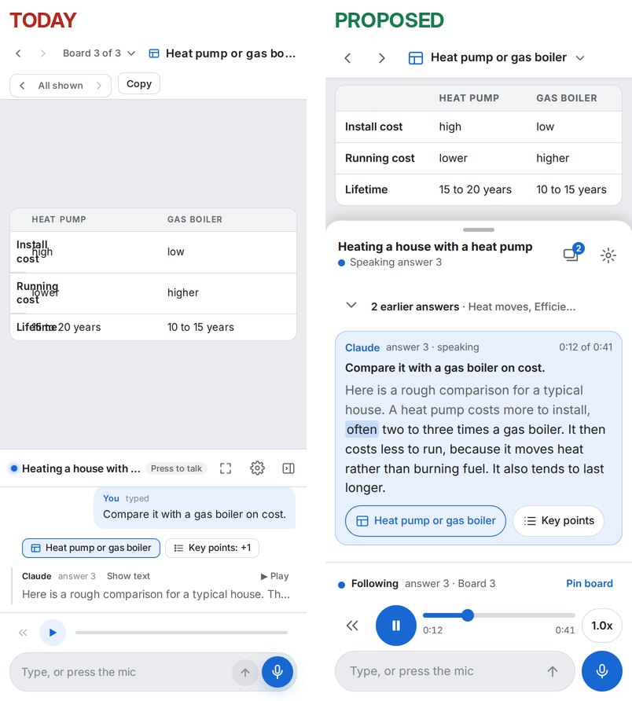
Problem
On a 390 px phone with a board up the panel gets 38% of the screen (call.css:280-282, --ph). Header, player and field take most of it, so the conversation is about 150 px: one folded line per answer, the person's own question scrolled off, and 20-26 px targets (.turn .fold 20, button.chip.board 23-26, .ib 34, no pointer:coarse rule). Nothing lets the person trade stage height for reading height.
Themes T12, T3, T4, T1, T5. Testers: phone, tinkerer, listener, first.
Design
- The panel is a sheet with a grab handle that sits under the stage with rounded top corners. It has three heights: peek (stage large, sheet shows only header and dock), half (default, stage about 250 px) and full (stage collapsed to its one-line board bar). Tap the handle to switch between half and full, or drag it.
- Half is tuned so the newest answer reads in full without a tap: the person's question becomes the bold head line of the answer card (an answer is a headed item), the older answers collapse into one 48 px row, '2 earlier answers', and the 'You' bubble moves into the card. At 390 px the whole 6-line answer, its word highlight and its board chips fit above the player.
- Full opens the older answers as headed rows (icon, topic title, time and board name, 44 px Play), with the 'Since you left: 1 new' marker above the first unheard answer. On a phone a tap on a row opens it as a full card (question, full text, boards by name, Show board, Play from start), as ADR-003 asks; no text link needs a 20 px tap.
- The thumb zone holds the dock, in three rows: a follow line ('Following answer 3 · Board 3' with a Pin board button), the player (back one sentence 44, play/pause 52, seek, speed 44, always visible), and the composer (field 52 with Send inside, Talk 52). Every target is at least 44 px; chips are 40 px.
- The header shows the title on its own line with the state in words under it (Speaking answer 3, Working 0:42), a calls button with a badge and the gear. Nothing else; fullscreen and collapse leave the phone header.
- While Claude works the conversation shows one working item with a counted clock, the session's current step and two buttons (Cancel, Ask for status); the dock reads 'Nothing playing'.
- Desktop keeps the same structure in the 420 px right column, without the handle: one panel, scaled by device. Mock states: ?state=half, full, peek, card, working.
How it would be built
Files: skills/talk/static/call.css, skills/talk/static/call.html, skills/talk/static/call.js, skills/talk/talk.py (only the inlined token/CSS copy, if the page is served from it), skills/talk/references/call-page.md, skills/talk/tests (new node checks on the sheet state function)
- call.css: replace the fixed --ph 46%/38% rule (lines 280-282) with a --sh variable set per sheet state (peek, half, full) on .app[data-sheet]; give .panel the rounded top and negative margin under 760 px; add a .grab handle; add @media (pointer:coarse), (max-width:760px) sizes: .ib, .chip.board, .turn .fold and Play 44 px, the player row grid 44/52/1fr/52.
- call.html: add the grab button and the 'N earlier answers' group row; move the topic's state line under the title; remove fullscreen and collapse buttons from the phone header.
- call.js: new setSheet(state) with drag handling on the grab (pointer events, snap to the three heights, remembered in sessionStorage); data-board must no longer force the stage to 62%, the sheet state decides; render() groups answers older than the newest into the group row and renders the person's message as the head line of the answer card; a row tap opens openCard(entry) with Show board (calls followAgain on that board) and Play from start (calls readerPlays); the working item reads a page-kept clock from the time of Send and offers Cancel/Ask for status after a threshold.
- talk.py: Cancel needs a turn-cancel endpoint (TurnQueue.accept_reply-like state change) and Ask for status a canned say; both optional for a first cut, the clock and the step line need nothing new.
- Tests: the sheet height math and group-row rendering under the node DOM shim (skills/_shared/tests/dom_shim.mjs); no layout can be measured there, so run tools/talk_render at 390 px for the look.
What goes away
- --ph 46%/38% and the data-board stage-share rule
- the one-line fold of the newest answer on a phone
- Show text / Play as 20 px text links on a phone
- fullscreen and collapse buttons in the phone header
Risks
- CLAUDE.md says every answer folds to one line in the panel; the newest answer shown in full contradicts that sentence, so the doc and its test must change in the same commit (it is a deliberate change, supported by need 3).
- The reader on the stage (paintReader, strip mode) already shows the sentence being said; showing the same words in the panel on a phone duplicates them. The sheet in half state should turn the stage reader off when the panel shows the full newest answer, else two highlights race.
- Following: a row's Show board must go through followAgain, Play through readerPlays; the Pin board button is the visible form of following off, so it must set the same flag the chip tap sets today.
- Queued answers and the player claim are untouched, but the 'Playing on another screen' line must live in the dock follow line so it keeps its place.
- Drag gestures on the handle must not fight the browser's pull to refresh or the transcript scroll; use a handle-only drag area and touch-action:none there.
- Cancel needs server support that does not exist; without it the button must be left out rather than faked.
Effort: CSS and a sheet-state function are a day; the grouped rows, card and counted clock add one to two days; Cancel needs a server change and can follow later.
Build check
The plan holds. The proposal is sound and the mock-up is nearly house-style clean. Its build mostly holds: readerPlays (call.js:1165), followAgain (1169) and paintReader (940) exist. The phone rules at call.css:278-290 and the working label at call.js:525 also exist, but the proposal under-counts the popup and rail offsets tied to --ph and the missing server turn queue for Cancel. I fixed two things in the mock: the cut stage title and the under-sized follow line and Pin board target. It still needs the CLAUDE.md fold sentence changed in the same commit and the stage reader turned off in half state.
- The working line is not new work: call.js:525-527 already renders view.activity run.label + seconds from the server (else 'Claude is working…'), so the counted clock and the step line mostly need styling and a page-kept fallback clock; the 'bare working' finding is a fallback-path issue.
- TurnQueue is not in talk.py (grep for class TurnQueue, reply_state, accept_reply finds nothing there); the Cancel endpoint must be designed against wherever the turn queue lives. Cancel and Ask for status stay a later server step; leave both buttons out of the first cut, as the risks say.
- Not 'only the inlined token/CSS copy' in talk.py: no pointer:coarse rule exists in call.css, so the 44 px sizing is new CSS across .ib, .chip.board, .turn .fold, the Play links; and the phone block at call.css:278-290 also has .pop/.toast positioning that uses calc(var(--ph) + 10px), so every popup offset must move to the new --sh variable or popups land in the wrong place.
- The sheet's grab/drag, the 'N earlier answers' group and the card are all new; the app-rail phone bar (.app[data-rail] 60px row) and the TV mode must be given a sheet rule too, which the proposal does not mention.
- The newest answer shown in full contradicts CLAUDE.md ('every answer folds to one line in the panel') and the stage reader strip would duplicate the highlight; both need to change in the same commit, as the risks say. Effort M is right for the panel and sheet, L if Cancel and a drag-with-snap sheet land together.
- CLAUDE.md: 'every answer folds to one line in the panel' (the newest answer in full on a phone breaks it; the sentence and its test must change in the same commit).
- CLAUDE.md: the reader on the stage (paintReader) shows the sentence and the lit word; the panel showing the same word highlight at half height needs the stage reader turned off in that state, or two highlights race.
- CLAUDE.md: player claim and 'Playing on another screen' must keep a place; the mock's follow line carries only Following/Pin board, so the claim line must be added to the same row.
The 11 testers' votes
| Tester | Choice | Score | Why |
|---|
| daily | version | 4 | Clean layout: earlier answers as rows, 'Since you left' divider, a Following strip and a big transport. The answer card is easy to read, and the call-count badge is useful. |
| newbie | version | 3 | Clean and calm, with 'Speaking answer 3' under the title and a Following line. It is close to today but with clearer wording and a bigger play button. Nothing that confuses me. |
| thumb | version | 4 | Bottom sheet that I can pull up gives the answer lots of room and a big pause button. Older answers as rows with big Play are easy to hit. |
| sofa | version | 4 | The current answer is in a big clear box with the spoken word lit, a real pause button and a big time. Much easier to follow than today's one-line answers. |
| keys | same | 3 | I only saw the 420 px column and a waiting state; it looks like today's panel with no keyboard gain. |
| back | version | 3 | A small tidy change: earlier answers collapse, Since you left shows one new, and working has Cancel and Ask for status. It is better than today but modest. |
| ears | version | 4 | A clean panel with a Speaking answer 3 header, a Since you left divider, text with the word highlight and a Following line near the player. It is clear and calm. |
| quiet | version | 3 | Similar to today with cleaner spacing, a Since you left divider and a folded earlier list. A mild gain. |
| greek | version | 4 | A sheet I can pull up gives the whole answer a lot of room and a headed list of older answers with big Play buttons. Since you left marker helps. The stage shrinking is a trade, but the Pin board and Following line are clear. |
| rush | version | 3 | Clean and calm, with a Following strip, 1.0x and a big play. The earlier answers are folded into one line and the working card has Cancel and Ask for status. It is nicer than today and does not do much more than that. |
| taste | version | 4 | Bottom sheet with a grab handle feels native and the answer is large and readable; collapsing older answers is smart. Sheet hides much of the stage when full. |
17. A persistent Calls column beside the stage shows every call's state at a glance, and the panel states its own call's state in one line
multicall-2 · whole-panel · work large · Strong for a desktop but costs 272 px of stage width and the votes were mixed. multicall-1 gets most of the value.
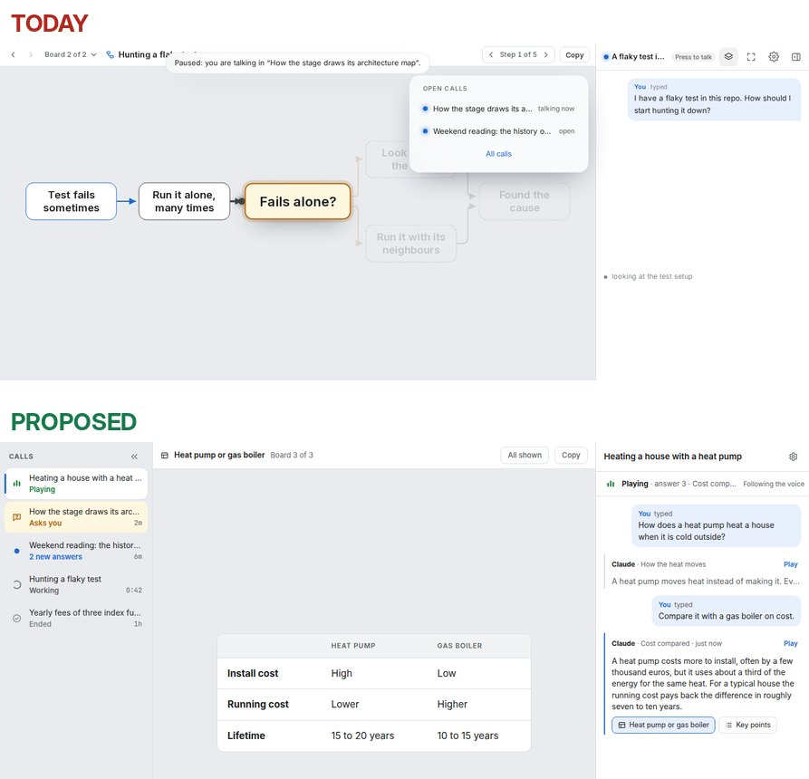
Problem
For the owner who runs several calls daily the other calls are hidden behind a button, a popup, or a separate All calls page, so every switch costs a click and a guess. Nothing in the call page says that call B has asked him something while he listens to call A. In the panel itself, nothing says in one line what this call is doing (playing, working, waiting for him, following or not), so he reconstructs it from the player, the stage button and the gear. On a phone there is no way to see other calls except the popup.
Themes T13, T5, T1, T12. Testers: power, returning, phone.
Design
- Wide screens get a Calls column on the left of the stage (272 px): one row per call on the same grid, state glyph, topic over state word, age or running clock at the right. The current call is a lifted row with an accent bar; a call that asks him has an amber row. Rows sort by need. A 'Next waiting' button (key N) sits at the foot of the column.
- The column collapses to a 64 px icon rail (the narrow form: icon only, count badge on a new-answer call, topic and word in the card). Tapping a rail icon opens a small card for that call with state, how long it waits, what Claude asked, and Open call / Dismiss. Collapsed or open is remembered per browser.
- The panel gets one state line under its header for THIS call: 'Playing · answer 3 · Cost compared' with the follow state at the right ('Following the voice' / 'Not following · Follow'), or 'Working 0:42 · running the suite', 'Asks you', 'Ended'. It is the place that also names which answer plays and shows following as a visible state with a one-tap return.
- Phone: the column becomes an icon strip of calls above the panel's state line (five icons at 56 px wide, current one underlined, count badge, a next arrow at the end). A tap opens the call's card from the bottom with Open call. The conversation gets about 100 px less height, which is why the strip stays one row and the state line is a single line.
- The tab title and favicon carry the same state as in the column, and a forced pause shows as a state line ('Paused: you started <other call>', Resume here) in the panel, not a toast.
How it would be built
Files: skills/talk/static/call.html, skills/talk/static/call.js, skills/talk/static/call.css, skills/talk/talk.py, skills/stage/static/stage.css (only if the stage's width reservation needs the extra column), skills/talk/tests/
- call.html: new <nav id='calls'> column before the stage and a .strip inside the panel for phones; the panel gets a #pstate line.
- call.js: paintCalls() renders the column, the rail and the strip from the same stateOf(c) function (shared with proposal 1); a collapsed flag in localStorage; paintPanelState() derives the one-line state from appState, view.working, the player and the follow flag (it reads, never changes, the follow state; its Follow action calls followAgain()). setTabState() for title and favicon as in proposal 1.
- call.js: yieldFloor() writes a state line instead of showError; N key handler for next waiting.
- call.css: grid becomes columns for calls, stage and panel on wide screens; the TV mode hides the column; on phone the column is hidden and the strip shown. The width of the stage shrinks by 272 px (64 px collapsed), so a fold at about 1100 px collapses it by default.
- talk.py: summary() adds asks, playing and working_since; the view's calls list keeps all calls on this machine (the current call is added by the page).
- home.html: reuse stateOf for the All calls page.
What goes away
- the layers button, its dot and the other-calls popover
- the raildot (the column and rail replace it)
- the 'Paused: you are talking in X' toast
- the separate state vocabulary of home.html
Risks
- Costs 272 px (64 px collapsed) of stage width on every desktop, the product's main surface, so the default must collapse on screens under about 1280 px and for a single call (no column when there is only one call).
- Conflicts with TV mode and the collapsed panel rail if not handled: the column must hide in TV mode and respect the panel's own collapse.
- On a phone the strip plus state line cost about 100 px of the conversation, which T12 already calls starved; the state line must fold into the strip when a board is up, or the strip must be hidden with one call.
- Follow state shown in the panel line must read the existing flag and never change it, so the repo's rule that a hand-picked board stays in front and only Play of the front board or Follow the voice turns following on stays intact. The player claim and queued answers are untouched, since the column is read-only state plus links.
- Same 'asks you' definition risk as proposal 1 (only open stops at first).
- More surface than proposal 1 for the same state information; proposal 1 is the cheaper first step and this one can reuse its stateOf and tab title work.
Effort: Three or more days: new layout column and rail with collapse memory, phone strip and card, panel state line with follow state, TV and rail interactions, responsive CSS and tests, on top of the shared state function.
Build check
The plan needs the corrections below. The design is sound and its read-only rule keeps the repo's follow, player-claim and queue rules intact, but the build text is only partly right. The server summary has no asks or working_since field and the view drops the current call. The 'asks you' state has no source today. An id #calls and the callState vocabulary already exist, so they must be replaced rather than added. The three-column grid must be re-derived for side=left, rail and TV (--pw, toast and pop offsets). There is no N key or tab-state code yet. Effort L stands, and proposal 1's shared state function is a cheaper first step. The mock-up had a two-line state line, a 32 px collapse button, missing aria-labels and a scrimless phone card; these are fixed and re-rendered in all twelve shots.
- The proposal says talk.py summary() 'adds asks, playing and working_since' and the view keeps all calls. Today Server.summary() (talk.py ~2889) returns only id, topic, ended, working, unheard, floor, started, and stamp() filters the current call out of view.calls (others). The page cannot show its own call in the column from the view, so the page must add the current call itself (the proposal does say this), or the server must stop filtering it. The stamp signature hashes the summaries, so new fields wake the poll correctly.
- 'asks you' has no server source. Stops are cues in the answer's own entry, not a call-level flag. summary() needs a new derived field (open stop or unanswered turn waiting on the user), and the proposal does not say what it is. Same risk the designer flagged for proposal 1. Without it the amber row never appears.
- 'Working 0:42 · running the suite' needs working_since and a step text. Today only a boolean working exists on the summary. The own call has view.working and the activity lines, so the own-call state line is feasible, but the other calls need working_since added to summary().
- The proposal calls for a nav id='calls' column, but #calls already exists in call.html (line 97, inside the pCalls popover) and paintCalls() fills it. The new column must reuse or replace that node, and the CSS rules #calls / .callrow (call.css 251-259) become the column's. callState() (call.js ~690) is the existing state vocabulary that the proposed stateOf(c) replaces. stateOf is described as 'shared with proposal 1', which does not exist in the code.
- Layout: .app is a 2-column grid driven by --pw (call.css 19-22, 267, 283), with data-side=left, data-rail and data-tv variants, and toast and pop positions computed from --pw. A third column means a new variable, and the .pop, .toast and gearpop offsets (lines 230-262) must be re-derived for every combination of side, rail and tv. The proposal lists TV and rail but not side=left, so the effort is under-counted there. The stage is an iframe (#stage), so stage.css reservation is unlikely to be needed; that file can drop from the list.
- 'yieldFloor() writes a state line instead of showError' holds (call.js 671-677 calls showError with the 'Paused: you are talking in' text). It must keep all the pausing logic and add a persistent state field with a Resume action. A Resume that calls play must go through readerPlays or the takeFloor path so the floor and player claim stay right.
- The follow state is the page's follow variable, changed only by followAgain() (call.js ~1169), which also posts stage:follow and calls paintSettings(). The proposal's rule (read the flag, act only through followAgain) holds. The state line must also repaint when follow changes by other paths (stage Follow button, gear switch). Those paths do not call a shared repaint, so a paintPanelState() call must be added at each.
- Keys: there is no N handler today. The keydown handlers (call.js 1291, 1459) already carry the Space/media keys and the text field must be excluded. Also the house rule 'visible buttons over keyboard shortcuts' is met since the Next waiting button is visible. Tab title: document.title is set once from CFG.topic (call.js line 12), so setTabState and a favicon swap are new code. A small, safe addition.
- Single-call case: the proposal says no column with one call. The current code already hides callsbtn when calls is empty, so the same condition works, but the phone strip must follow the same rule or the state line gets a lone icon.
- Tests: there is no browser test in the suite by rule (CLAUDE.md), so the column, rail and strip can only be tested for server fields (summary(), stamp) and for JS logic under the node DOM shim (dom_shim.mjs measures 0, so no layout). The layout needs a manual browser run like tools/talk_render. Add a talk_render or e2e check outside the suite.
- CLAUDE.md rules not broken: the player claim, queued answers and readerPlays/followAgain are untouched because the column only reads state and links. A rule should be added to CLAUDE.md in the same change describing the Calls column, rail and state line (user rule: what a project needs goes into its CLAUDE.md). The phone panel is already starved (--ph 46%, 38% with a board); the strip plus state line costs about 100 px of it, as the designer says.
- Effort L is about right, maybe low: server fields (summary, asks derivation, working_since), three-way grid with five panel/TV/side combinations, rail memory, phone strip and bottom card, state line, tab title, keys, CLAUDE.md and tests. Proposal 1's stateOf and tab title first would cut it to M.
- Repo CLAUDE.md: the stage's width is the product's main surface and a third column takes 272 px (64 px rail). Rules tied to the stage (map fitted to pane width, tables scroll below 640 px) need a recheck at the narrower stage; the mitigations (default to the rail under about 1280 px, no column for a single call, hidden in TV mode) are the right ones.
- User rule 'no explaining text in lists' and ADR-003 narrow form: met by the rail (icon only, tap opens a card). One gap is that the rail icons relied on tap only, with no label or aria-label; fixed in the mock (the Next waiting icon has an aria-label).
- User rule 'visible buttons over keyboard shortcuts': met (the Next waiting button is visible with N as an extra).
- User rule 'prefer events over timers': the column's age/running clock must be computed on the page from started/working_since, not polled from the server on a timer. The existing poll that follows the view version is enough.
- Repo CLAUDE.md on the one-page player claim: the 'Paused: you started <other call>' state line must not itself restart play. Resume has to claim the player and floor again (takeFloor) and go through readerPlays(), not call audio.play() directly.
The 11 testers' votes
| Tester | Choice | Score | Why |
|---|
| daily | version | 5 | A permanent column of calls with state words and ages, collapsible to an icon rail. It costs width but I have a desktop, so it is the best way to see which conversation needs me. |
| newbie | same | 2 | A whole extra column of calls takes room and adds things to read. Cluttered for a first-timer, though the labels are clear. |
| thumb | today | 2 | Row of five tiny icons with no words, I would have to guess which call is which; adds clutter above the chat. |
| sofa | today | 2 | A whole extra column of other calls squeezes everything and makes the text smaller. I only talk about one thing at a time. |
| keys | version | 4 | A persistent calls column with an N shortcut for Next waiting is how I would juggle sessions, but it takes a lot of width and nothing shows focus order. |
| back | same | 3 | A permanent calls column is useful with several calls and collapses to an icon rail. It takes space I would rather give to the answers. |
| ears | same | 3 | A permanent Calls column is handy with many calls but squeezes the stage. With one call it just takes space. The conversation panel itself is not better than today's. |
| quiet | same | 3 | A permanent calls column that collapses to a rail is handy for several calls, but it takes width from the stage, and I usually have one call. |
| greek | same | 3 | Five small icons for the calls are quick but I have to guess which is which until I tap. The card with Open call is good. It costs a row on the phone and I would not always have multiple calls. |
| rush | version | 3 | A calls column that shows state at a glance, and Next waiting is a real time-saver for jumping around. It squeezes the stage and conversation, which I do not like on a laptop. It collapses to an icon rail, which helps. |
| taste | same | 3 | A row of five unlabelled icons is hard to decode without learning it; the badge helps but I'd have to tap each. Adds clutter above the conversation, and the one-line state is nice. |
18. Move settings to a plain rows sheet, put talk mode and speed beside the controls, and give the empty first screen starter questions and a mic check
density-2 · targeted · work medium · Modest tidy-up that keeps the long chat flow. Daily 3.
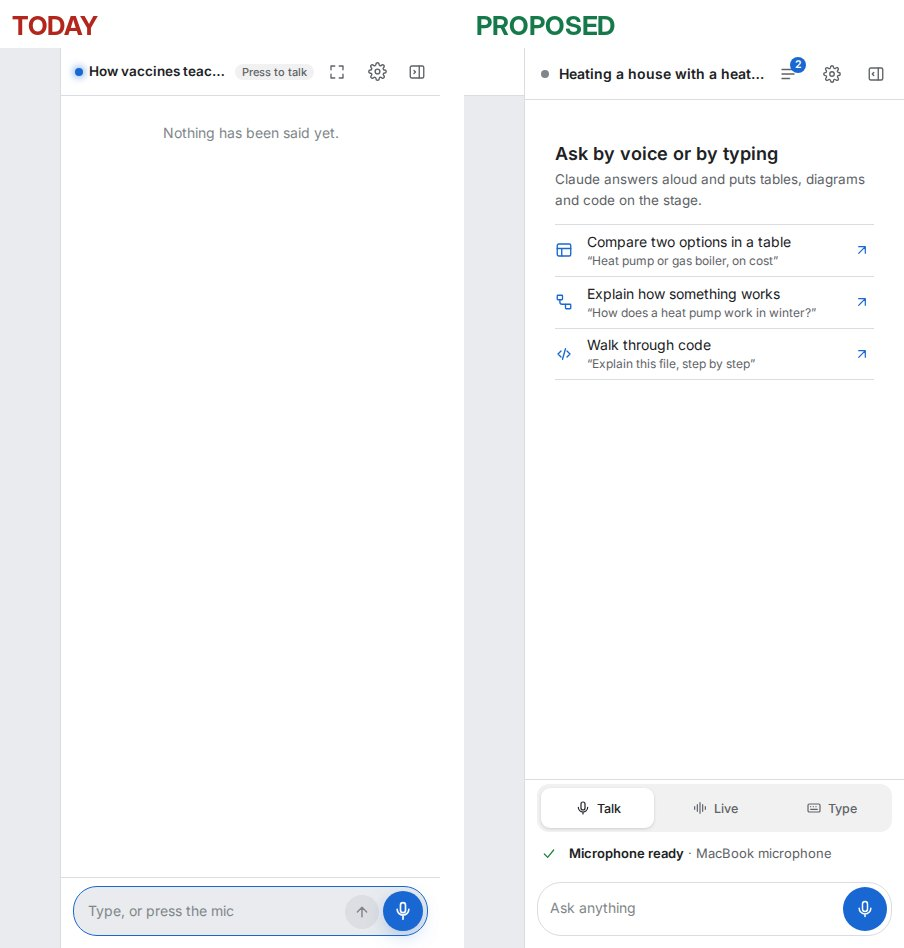
Problem
The gear is a 670 px popover of eleven segmented controls and jargon ('VoiceStudio on this Mac, profile silent: free, slower', 'Press to talk', 'Live') that takes no focus and overflows on short windows (T9, T14). Talk mode, Live and speed are found only there, a dead Live microphone is never flagged, TV is only a gear choice, and the empty first screen explains the stage but not what to do ('The stage is empty... code, a diagram, a table'). Fixing these changes what the panel shows at rest and at start without touching the conversation.
Themes T7, T8, T9, T11, T14, T4. Testers: first, typist, tinkerer, keyboard, screenreader, tv, mic, phone.
Design
- Settings is a sheet over the panel (full screen on phone): title, Done, grouped rows with label left and value right on one grid, switches only for the two real on/off settings. Groups: Voice (engine in plain words, I speak), Display (Theme, Screen with Desk and TV, Panel side), While Claude talks (Play new answers by themselves, Stage follows the voice), Talking (How I talk, Live pause, Live interrupt), Help (Keyboard shortcuts, Stage demo), End call. A row opens its choices inline as a radio list with a one-line hint where needed (I speak: Auto, 'Claude follows what you say'). Focus moves into the sheet and back to the gear on Done or Escape; it scrolls inside on short windows.
- Above the player and field sits a three-way mode control: Talk, Live, Type, one tap each, the active one marked; Live is green with level bars. Speed is a chip on the player row (1×) that opens 0.75 to 2×.
- A mic line sits under the mode control and says the truth: 'Microphone ready · MacBook microphone', 'Listening · sends after a 1.2 s pause', or amber 'No sound from the microphone · 12 s' with Check input.
- The empty first screen replaces the empty-conversation line with a title ('Ask by voice or by typing'), one sentence, and three starter rows (icon, kind of question, a quoted example) that fill the field and send; the stage empty text stays short ('Boards Claude shows appear here').
- The conversation keeps today's look, with only two repairs: the status-line gap fix and the 'Show text' link scaled up to 40 px high on phone and TV.
- Wide: icon and word per row; phone: the sheet is full screen with 48 px rows, mode control 36 px tall inside a 44 px band.
- States via ?state= : first, rest, gear, live, livedead; add ?theme=dark.
How it would be built
Files: skills/talk/static/call.html (the #pGear block, header, foot), skills/talk/static/call.js (gear wiring, tmode, speeds, live level, empty state), skills/talk/static/call.css (.pop.gearpop, .segc, new .sheet, .modes, .start rules), skills/talk/talk.py (engine text for the voice row)
- call.html: turn #pGear into a sheet with grouped rows; reuse the existing ids (screen, side, theme, tmode, barge, endpause, lang, speeds, autoplay, follow, demo, end) so the setters keep working, only their markup changes from .segc buttons to rows with an inline option list.
- call.js: gear open/close gets focus management (move focus in, trap, restore on Done and Escape), height-safe scrolling; a new modes control bound to the same state as the tmode setting (manual, live, plus a Type mode that keeps the mic off and disables the mic button) and a speed chip bound to the existing speeds code and the audio element's playbackRate.
- call.js: live microphone line from the level the page already measures for the waveform (wave and bars) plus a no-input timer that sets the amber state; no server change.
- call.js: empty state (#empty) becomes the starter rows, each one sets the textarea and calls the existing send path; they disappear on the first entry.
- talk.py: the engine description for the Voice row is built in plain words ('Free voice, this Mac' / 'Azure, neural voice') instead of the profile string; its text is already read by the page from speech.name.
- call.css: add .sheet, .srow, .modes, .start; remove .segc and .gearpop height rules; TV mode keeps one --u scale so the sheet and mode control grow.
What goes away
- the segmented-control gear popover and its overflow on short windows
- the 'Press to talk' tag in the header (the mode control says it)
- the jargon engine line
- the empty-conversation line and the stage's 'when Claude shows code...' paragraph
Risks
- The Type mode is new behaviour: the mic and Live must be reliably off in it, and a persisted talk.mode value must migrate (unknown value falls back to manual).
- The mode control adds 44 px to the foot. On a phone with a board up the conversation gets that much less; the control can fold into the composer pill (as in density-1) on narrow screens.
- Dead-mic detection can false-alarm in a quiet room; word it as 'No sound heard' and never block sending.
- The player claim and following rules are untouched, since this changes no playback path; speed already applies to the element the claim governs.
- Starter questions are fixed text, so they must be generic and optionally configured by the session (a later add), or they will look dated.
- Node page tests that read the gear's markup need updating.
Effort: Mostly markup and CSS over existing setters, plus focus management and the mic line; two to three days. Can ship before, and independently of, density-1; if density-1 is built, this proposal's sheet and first screen are reused as is.
Build check
The plan holds. Build holds with corrections: the setters and ids it reuses exist, but Type mode, sheet focus handling, the shortcuts help, a plain engine label, the stage empty text and the test_call_page.py and doc updates are bigger than the proposal says. Effort M is right, nearer 3 to 4 days. The mock-up was sound apart from tap targets under 40 px, which I fixed and re-rendered.
- Setters exist as assumed: talkMode (call.js:289, only manual or live; Type needs that coercion widened), speeds buttons (call.js:1243 set speed and audio.playbackRate), the gear ids in call.html 70-94, and the Escape handler at call.js:221.
- Type mode touches paintSettings (572-590), the talk button state (542-550) and the modechip at 590 (the proposal removes it, so the span and its .on toggle go) plus every talkMode === 'live' check; it needs tests that mic and Live are off in it.
- Focus management is new work: Escape at 221 only closes the pop and nothing moves focus into or back from #pGear. A full-screen phone sheet and TV --u scaling need checks. The shortcuts help list is new (shortcuts live only in keydown handlers at 1291 and 1459).
- Dead-mic timer needs no server change: liveChunk (1566) already tracks loud and quiet. 'Check input' needs a defined action, for example re-run getUserMedia.
- The plain engine label has no builder today: talk.py only passes speech.name(wait=False) (3104, 3479) and a '(profile ...)' text at 3580. A small mapping plus a test is needed.
- test_call_page.py in skills/talk/tests reads the gear markup and must change. SKILL.md and references/call-page.md describe the gear and Press to talk and need a same-change edit. The stage's empty text is a second markup place the file list omits.
- Starter rows can go through sendText (call.js:1756); they add a user turn only, so the player-claim and followAgain rules are untouched.
- Effort M is slightly optimistic: three to four days with Type mode, focus trap, dead-mic line, shortcuts help and the test updates.
- Mode control is 3 buttons with icon and word on phone as well; ADR-003 says icons only when narrow. Acceptable as 3 short words, but state it as a deliberate exception or drop the words below 480 px.
- Starter rows are fixed example text, which risks the 'real examples, never invented values' rule if they look dated; the designer notes session-configured starters as a later add.
- The foot grows by one control (about 48 px) on a phone with a board up, which fights the CLAUDE.md phone rule of giving the stage more height; fold the mode control into the composer on narrow screens as the designer suggests.
The 11 testers' votes
| Tester | Choice | Score | Why |
|---|
| daily | version | 3 | The Talk/Live/Type control and the answers shown plainly are fine, but older answers still sit in a long chat flow with chips. It is only a modest tidy-up of today's page. |
| newbie | version | 3 | The Type, Talk, Live choice is labelled and the keyboard hints (Space, arrows) are helpful. But the older answers are plain and the working state is a small box. Fine, only slightly better than today. |
| thumb | same | 3 | Fine and clean, but the mode switch above the player takes space and it isn't clearly better than today. |
| sofa | same | 3 | Much like today, with a mode switch added. The text is still small, so it would not help me. |
| keys | version | 3 | Mode selector beside the input is fine, but the speed chip and mode control are a bit cramped and nothing helps the keyboard. |
| back | version | 3 | The first-screen starter rows are nice for newcomers and the mode switch is clear. For catching up it is much like today, with the whole answer text shown. |
| ears | version | 3 | The mode switch and speed chip next to the player are useful. The conversation itself looks like today's and still gives me no sense of what is happening now. |
| quiet | same | 3 | The first-screen starter rows are friendly and the rest state is clean. But it is mostly a cosmetic tidy-up and it adds a mode control I mostly don't need. |
| greek | version | 4 | The first screen with starter examples and the Talk/Live/Type switch tells me at once what to do, and the player has time and speed. The Talk/Live/Type bar plus the status line costs height, but it is clear. |
| rush | version | 3 | The first screen with starter prompts and a mic-ready check is friendly for a new person, but I am not new. The rest view is roughly today's page with a mode switch. It does not help me change my mind. |
| taste | version | 4 | First-run starter rows are friendly and the Talk / Live / Type segmented control is labelled and obvious. Slightly taller than today, but no confusion. |
19. Settings and shortcuts become focus-managed sheets, and every key is listed and shown beside its button
access-2 · targeted · work medium · Serves keyboard use (T9) and the build holds. Adds a rarely used chrome row, so take the Keys sheet only.
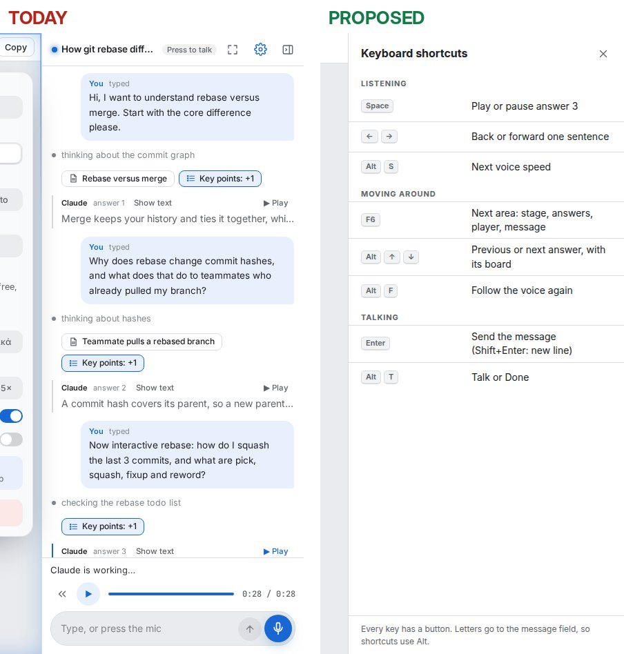
Problem
Focus never enters the settings popup, which sits last in the DOM, so a keyboard user needs about 30 Tabs to reach Voice speed; Escape closes without returning focus; the Other calls popup has the same fault (T9, T14). Shortcuts (Space, arrows) work only under unlisted conditions and the only hint is a Play tooltip, so users conclude there are none. There is no skip target for the answers, the player or the message field; Tab walks the stage iframe, every chip and every Show text first.
Themes T9, T10, T14, T11, T12. Testers: keyboard, screenreader, tv, tinkerer, phone.
Design
- Settings and Other calls open as a sheet that fills the panel (a full card on a phone, per ADR-003). It is role=dialog aria-modal with a heading, a Close button and a short 'n of N' tab position; focus moves to the first control, Tab stays inside, Escape closes and focus returns to the button that opened it. It scrolls inside itself at any window height, so Live's controls are never cut.
- Settings are regrouped in plain words: Talking (Type, Talk, Live), Voice speed, Follow and play (follow the voice, play new answers by themselves), Size and theme (Desktop, Phone, TV). Frequent controls leave the gear for the player (speed button) in access-1; here the gear keeps the rest.
- A visible Keys button in the header opens a Keyboard shortcuts sheet with the same focus rules: Space play or pause answer N; Left and Right one sentence; Alt+S next speed; F6 next area (stage, answers, player, message); Alt+Up and Alt+Down previous or next answer with its board; Alt+F follow the voice again; Enter send, Shift+Enter new line; Alt+T talk or Done. The sheet states why: every key has a button, and letters go to the message field, so shortcuts use Alt.
- A short 'Jump to' row at the top of the panel (Answers, Player, Message) is a skip bar: icon and word wide, icons with the word on a phone, each 40 px or more, and the key shown as a kbd chip on wide screens only. It is visible so that nobody has to know it exists.
- Transport buttons carry their key in the accessible name ('Play answer 3, Space', 'Back one sentence, Left arrow'), and in the tooltip on wide screens; the Back button finally has a hint.
- Focus is always visible: a 3 px accent ring with a 2 px offset on every control in both themes, and the same ring on the chip row of the stage's own controls.
- Tab order follows reading order: header, jump row, status, answers, player, message; the stage iframe is a single stop after the panel on request (F6).
How it would be built
Files: skills/talk/static/call.html, skills/talk/static/call.js, skills/talk/static/call.css, skills/talk/references/call-page.md, skills/talk/tests
- call.html: move #pGear and #pCalls inside the panel next to the header as sheets (role=dialog, aria-modal, aria-labelledby), add a Keys button and a Keys sheet, add a nav 'Jump to' with three anchors, label the Close buttons.
- call.js: showPop (lines 212-221) becomes openSheet(id, opener)/closeSheet: remember the opener, set inert on the panel's other regions, focus the first control, trap Tab with a small loop, return focus on Escape and Close; the Escape handler at 221 calls it; the stage-click close at about 257 does too.
- call.js: extend the media-key handler (lines 1291-1299) and keep its free-focus test (empty field, body or panel button); add F6 and Shift+F6 region cycling, Alt+Up/Down answer stepping that calls the same code a chip tap uses and then followAgain() so stage and panel agree, Alt+S cycling speed through the existing speed setter, Alt+F calling followAgain(), Alt+T calling the Talk/Done handler. Every key goes through readerPlays() when it plays, as CLAUDE.md requires.
- call.js: write the key into aria-label and data-tip of Play and Back (line 559 currently has 'Play · Space' only).
- call.css: sheet layout with max-height 100% and its own overflow, the focus ring for .ib, .btn, .seg button, .sw; 44 px targets under 760 px; kbd chips hidden on narrow screens.
- No talk.py change.
What goes away
- The two role=dialog popovers that sit after the panel and take no focus
- The Play-only tooltip as the sole shortcut hint
- Settings entries duplicated in the rail gear (rail gear opens the same sheet)
Risks
- Alt combinations clash on some systems (Option types characters on macOS, Alt+letter opens menus in some browsers); choose bindings after a check in the owner's Chrome on both and keep every action available as a button.
- The type-anywhere handler (call.js about 1459-1463) sends printable keys to the text box; new keys must be Alt or F-keys only so it keeps working.
- Making the panel inert while a sheet is open must not stop a call from playing or polling, and must not touch the player claim or the doorbell; keep it to focus and aria-hidden, not to events.
- F6 into the stage iframe cannot be made to cycle back by the panel when the iframe holds focus; the stage needs a matching handler or a documented Shift+F6 from the panel only.
- The collapsed rail has its own gear and play: the sheet must open from the rail too and return focus there.
- Tests under the node dom shim can check focus order and key handling but not layout; the 390 px and short-window overflow check is a browser run.
Effort: One to two days: the focus trap and sheet move are small; choosing and testing the key bindings across the owner's browsers and the rail/TV cases takes the rest.
Build check
The plan holds. Sound and buildable as M. The popover and Escape code it targets exists and works as described. Fix three points: the stage iframe needs an F6 handler in stage.js, not only call.js. The Back button is 10 seconds, not one sentence. Tests, call-page.md and the CLAUDE.md call-page paragraph must be updated. The mock-up had undersized touch targets and a stacked keys layout on a phone, both fixed and re-rendered. Phone chips with words deviate from ADR-003 icon-only and should be called out as deliberate.
- Focus ring: call.css line 16 already gives button, a, textarea and input a 2px accent outline with 2px offset. The work is a 3px ring and covering .seg, .sw and the stage chips, not a new ring.
- Escape: call.js lines 213-224 (POPS, showPop, one Escape handler, outside-click close) match the description. The popovers pGear and pCalls sit after </aside> (call.html lines 70 and 97) and take no focus. Moving them inside the panel as sheets is feasible. showPop also closes on window blur (about line 257) and in setRail, so openSheet needs the same hooks and must restore focus to the opener, which may be #railgear.
- Media keys: mediaKey (call.js about 1280) already refuses to act while openPop is set, and the keydown handler rejects any ev.altKey. New Alt keys therefore need their own handler, not an extension of MEDIA_KEYS. The free-focus test (empty field, body, or a panel button) can be reused. The type-anywhere handler (about 1459) already skips altKey, so Alt and F6 keys do not leak into the message field.
- Play tooltip: line 559 sets the aria-label to just 'Play' or 'Pause' and puts ' · Space' only in data-tip. The proposal is right that the accessible name lacks the key. The Back button has aria-label 'Back 10 seconds' and data-tip 'Back 10 s' (call.html line 41). The proposal's 'Back one sentence, Left arrow' is wrong: Left arrow calls jump(-1), a sentence, but the Back button calls skip(-10), 10 seconds. Name them separately or keep Back as 10 s.
- F6 and the stage: the stage is a cross-origin-like iframe that posts stage:key only for Space, ArrowLeft and ArrowRight (call.js 132, stage.js 1199). F6 pressed inside the iframe never reaches the panel. stage.js needs a small F6 handler that posts a new message type, and call.js must accept it. This is a stage change the proposal says it does not make ('No talk.py change' is true, but stage.js is touched). Alt+Up and Alt+Down must call the same code a chip tap uses and then followAgain(), as it says.
- Tests are missing: call_page.py and test_call_page.py run call.js under the node dom shim. Add tests there for openSheet focus, Tab trap and Escape return, and for the new Alt keys never reaching readerPlays when the sheet is open. Also update skills/talk/references/call-page.md and the CLAUDE.md call-page paragraph, which names the keys and the type-anywhere rule. test_demo.py and test_guide.py check the guide, so SKILL.md or the reference changes must keep them green.
- Alt+letter risk is real (macOS Option types characters). Alt+S, Alt+F and Alt+T need a check in the owner's Chrome, and every action must stay a button. This is already listed in the proposal's risks.
- Using inert on the panel's other regions is fine for focus. Do not inert #panel while a call plays: it only affects focus and clicks, not audio or polling. The doorbell and the player claim are untouched.
- Effort M (one to two days) is about right. Add roughly half a day for the stage.js F6 handler and the node tests.
- Visible buttons over keyboard shortcuts (house-style): holds, because every key has a button and the sheet says so.
- ADR-003 narrow rule (icons only): the phone jump row shows icon and word chips. That is a deliberate deviation. It is kept because three labelled chips fit at 390 px and the word helps screen readers and sighted users equally, but the proposal should say it deviates.
- CLAUDE.md: any new way to start playback must call readerPlays(). Alt+S and Alt+Up/Down must not start playback on their own. Only Space and the arrows do, through mediaKey. The proposal states this, and the build must keep it.
- Several panel text rules (no explaining text in a list) are only touched by the one-line footer on the Keys sheet, which is a note under the list, not inside it.
The 11 testers' votes
| Tester | Choice | Score | Why |
|---|
| daily | same | 3 | The F6 jump chips and the Keys sheet are good for keyboard use and I would use them. They add a row of chrome at the top that I would rarely look at. |
| newbie | same | 3 | The Answers, Player, Message tabs with F6 chips are aimed at keyboard people. I find the F6 labels confusing, and the highlighted ring on Message looks odd. Otherwise it is like access-1. |
| thumb | same | 3 | Jump chips (Answers, Player, Message) are an extra row I don't need, and the answered strip is useful but busy. |
| sofa | today | 2 | F6 chips and a Keys sheet are for people at a keyboard. I'm on a sofa with a remote, and it adds clutter. |
| keys | version | 5 | Jump-to-row with F6 chips, a Keys sheet with real Alt shortcuts and a visible focus ring on Message is exactly what I want; today shows no shortcuts at all. |
| back | same | 3 | The Jump to row chips and the keyboard sheet are fine, but I rarely use shortcuts. It does not help me catch up much. |
| ears | version | 3 | The Jump-to-row chips and keys sheet are nice but I'm not on a keyboard while cooking. The status bar and open answer with word highlight are still a clear gain over today. |
| quiet | same | 3 | The Jump to row buttons and the keys sheet help keyboard users and I'd use a few shortcuts. But the F6 chips take up the top of the panel all the time. |
| greek | version | 4 | The jump row with words Answers, Player, Message helps me move around, and the Keys sheet is readable. On a phone I use keys rarely, so the value is less to me, and the extra row takes room. |
| rush | same | 3 | Jump-to-row chips with F6 and a Keys sheet are good for keyboard users, and I would use Space and Alt shortcuts. The three chips on top add clutter and the sheet covers everything else. Nice to have, not a reason to switch alone. |
| taste | same | 2 | The Answers / Player / Message jump chips add a row of navigation I'd never need on a phone, and they crowd the list. The Keys sheet is irrelevant on a phone. |
20. Add an eyes-free layer: a status bar that says in words what the call is doing, audible cues for each change, spoken transport commands in Live, and a hands-free view with four large buttons
listen-2 · whole-panel · work large · Takes answer height, rare need, one persona disliked it. Keep only the tab-title idea.
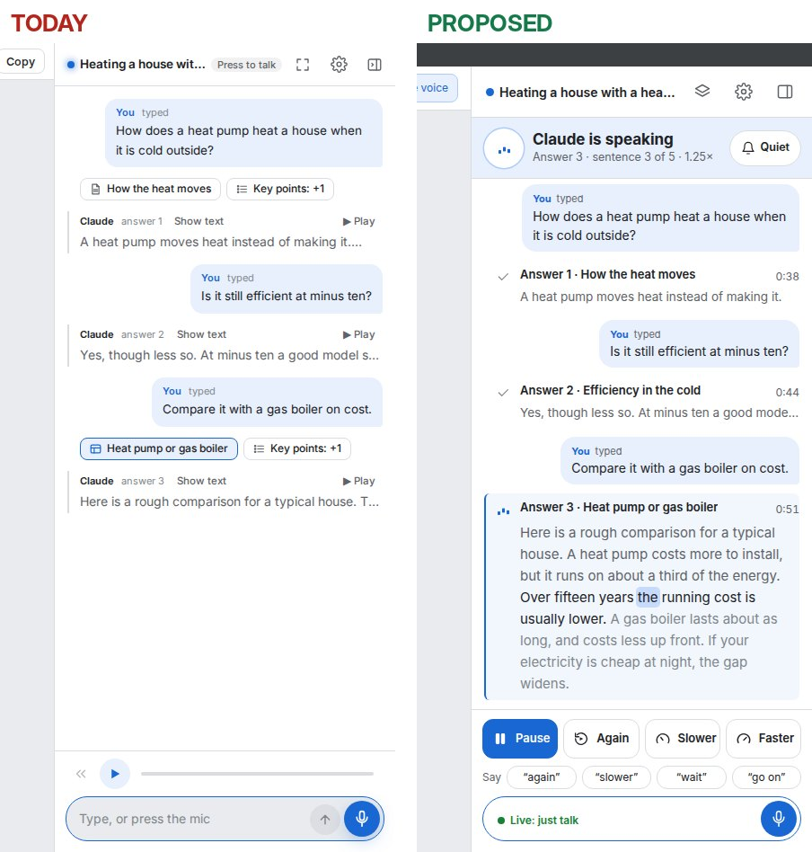
Problem
A person who is not looking at the screen (listener, tv, phone in a pocket, a dead mic, a hidden tab) gets no sound or word from the page when something changes. 'Claude is working' is a bare line (T1). The panel never says when an answer is ready and waiting (hidden tab, autoplay off, T13). The tab title is fixed (T13). Screen readers hear nothing (T10). The mic's state has no earcon (T14). 'Slower' and 'again' said aloud go to Claude as words, not to the player (T8). TV mode only scales chips (T11).
Themes T1, T8, T10, T11, T12, T13, T14. Testers: listener, tv, screenreader, mic, phone, returning, first.
Design
- A status bar sits at the top of the panel, under the header, always one of five states in words and icon: Claude is speaking (answer, sentence, speed), Working 0:42 (counted by the page, with the session's step when known), Listening (with how it ends: pause 1.2 s or say 'send'), Answer 4 is ready (with a Play button), Paused. Colour and icon differ, the words carry the meaning, and it is a live region.
- The same state goes into the tab title: '▶ Answer 3 - Talk - Heating', '… Working 0:42', '● Answer ready', '● Listening'. A browser tab, the calls list and the OS media session show it too.
- Audible cues, off or Quiet or Normal, short and soft, each with its own shape: picked up (one tick when the session takes the message), still working (optional, every 30 s), answer ready (two rising notes, for a hidden tab or autoplay off), mic open and mic closed (up and down chirps, so a dead mic is heard as silence), your turn (a stop or check), command heard. A Sounds sheet lists the cues in aligned columns: icon, name, Hear (sample), on/off. No explaining text in the list.
- Spoken transport in Live: 'again', 'back', 'slower', 'faster', 'wait', 'go on' are caught by the page before they reach Claude and act on the player, with a line 'Heard slower - speed is now 1x' and Undo. The line and the key beside it are listed under Say in the foot.
- The foot becomes four commands, icon and word on a wide screen, icon only on a phone: Pause/Play, Again, Slower, Faster. The Live chip shows 'Live: just talk' in green beside the mic.
- Hands-free view, one tap in the status bar (and the default in TV mode): the conversation folds away; the sentence being said is shown in 26 px type with the word lit; four 72 px buttons (Pause, Again, Slower, Next); the Live line lists what can be said; a Conversation button returns.
- While Claude works the foot offers Cancel the question and Ask for status, so a long wait has actions from where the person sits (T1).
How it would be built
Files: skills/talk/static/call.html, skills/talk/static/call.js, skills/talk/static/call.css, skills/talk/talk.py, skills/talk/references/call-page.md, skills/talk/SKILL.md (one line on what a spoken command does)
- call.js: a statusLine() that derives the five states from the existing data (app.dataset.state speaking/listening/working/idle, queued, hiddenHeld, autoplay, recorder, busy) and writes the status bar, a polite live region and document.title; the working clock is the page's own timer started at Send, the step comes from the activity items the page already receives.
- call.js: a small Web Audio module cue(name) with synthesized tones (no files), gated by a store.get('sounds') level and per-cue switches; called at the existing events: turn accepted, reply arrives while hidden or autoplay off (the hiddenHeld branch), recorder start and stop, a stop card shown, a command recognized. No sound while audio is playing speech except the command-heard tick.
- call.js: a commandFor(text) matcher used in the Live path that finishes an utterance (where the transcript is posted): an exact short phrase from a fixed list ('again', 'back', 'slower', 'faster', 'wait', 'go on') calls jump(-1), skip, speed change, pause, or goOn() locally and is not posted; everything else goes to /api/say as today. Show the Heard line with Undo.
- call.html/call.css: status bar and sounds sheet (new #pSounds, reusing the .pop pattern and focus return), command row replacing the player row, hands-free view (data-handsfree on .app) hiding .convo and .foot and enlarging text and buttons; TV mode sets it by default and uses the same type scale.
- talk.py: no new endpoint is needed. Optional: send the session's current step in the stamp already polled so Working can name it, and expose a cancel of the open turn (TurnQueue) for the Cancel button.
- References and tests: call-page.md documents the cues and commands; a node page test for commandFor and the title strings; a test that a recognized command is never posted.
What goes away
- The bare 'Claude is working...' line
- The fixed tab title
- The 12 s stage toast for a forced pause (becomes a quiet status line)
- The player row's separate Back/Seek duplicates in hands-free
Risks
- Browsers block audio until a user gesture; the call page already unlocks audio on the first press, so cues must reuse that unlock, and a tab that never got a gesture stays silent (the status bar and title still change).
- Cues must never talk over Claude's speech or the person's own voice: the mic-open chirp needs to be played before the recorder starts, and echo cancellation must not hear it as speech (keep tones short and quiet, play before getUserMedia capture starts).
- Spoken commands risk false positives: only an utterance that is exactly one command word counts, 'again' and 'wait' are already barge-in words, and an Undo line shows. Conflicts with the Live barge-in setting (talk or say 'wait') must be settled so 'wait' pauses first and is not forwarded.
- Hidden tabs: the repo says a hidden tab holds the answer (hiddenHeld) and stays silent; this proposal only adds a cue and a title, never autoplay in a hidden tab.
- The player claim and readerPlays() are untouched: commands call the same handlers as the buttons.
- Hands-free is a second layout of the same panel; keep it a data attribute on .app, not a second page, so the stage, follow and claims work unchanged.
- Needs a working-step field the page may not have; without it Working shows only the clock.
Effort: New status derivation, Web Audio cues, a command matcher in the Live path, a hands-free layout, a sounds sheet and tests; more than three days, but the pieces can land one by one (status and title first).
Build check
The plan needs the corrections below. Worth building in stages, but the build claim does not hold as written. Spoken commands already run through the server (command_of in talk.py and runCommand in call.js), so slower, faster and again are talk.py changes rather than a client matcher. Cancel after pickup needs a new server mechanism, since /api/withdraw refuses once Claude has the message. The status bar should replace the existing status card and extend chime(). Status bar, dynamic tab title and the sounds sheet are a sound first slice (M). The mock is fixed and keeps the designer's intent. Effort stays L.
- Spoken commands already exist: talk.py COMMANDS and command_of (talk.py ~327-350) are applied in /api/say when live (talk.py ~3207), and call.js runCommand() (~1698) acts on resume/pause/repeat/back/withdraw/mute with chime(). The proposal's client-side commandFor() before posting is wrong: the transcript is posted first and the SERVER decides. So 'no talk.py change' is false: 'slower', 'faster' and 'again' (today 'repeat', 'say that again') must be added to COMMANDS plus a runCommand branch for speed (the page's `speed` and store.get('speed') exist at call.js ~283/764). Greek forms are also needed there.
- 'wait' is a barge-in cue word (barge === 'keyword' path in call.js ~1469-1685) and 'stop' already maps to pause; 'wait' must not become a second command path, so keep it in the keyword logic.
- The mock's 'say send' and '1.2 s pause' do not exist: Live sends after LIVE.pauseMs (700 ms of silence) and has no 'send' command; the mock now says 'Pause to send, or press Done'. A 'send' word would need a new COMMANDS entry (and would clash with ordinary speech).
- Working clock and step are mostly buildable: view.activity items carry label and seconds (call.js ~526, talk.py activity_view). The page's own clock from Send needs a turnSentAt (exists, call.js ~1695). 'The session's step n' is not in the data: only a running label and seconds; drop 'step 3' or count items.
- Cancel the question: /api/withdraw exists (call.js ~1717) but answers 'Too late: Claude already has it' once picked up, so a Cancel while Working cannot withdraw. It needs a new TurnQueue cancel endpoint in talk.py plus a way for the session to learn of it, which is real server work and a protocol change, not optional.
- Status bar overlaps existing pieces: the page already has a status card (statusLine near call.js ~505-540: queued, elsewhere, stalled, working, live notes), appState() (speaking/listening/working/idle) on #app data-state, and chime(freq) with AudioContext (call.js ~1640). The new status bar should replace that card and extend chime into named cues, not add a second layer. The stalled and 'playing on another screen' states are missing from the proposal's five states.
- document.title is set once at call.js:12; a dynamic title needs a function called from paintAll. Tab titles must still distinguish several calls (topic kept, as in the mock).
- Hidden-tab cue is consistent with CLAUDE.md (hiddenHeld, call.js ~846, never plays in a hidden tab). Commands call readerPlays() as required. Player claim untouched.
- Tests: needs a talk test for the new COMMANDS and command_of (Python, in skills/talk/tests), and a node page test for title strings; CLAUDE.md says the suite has no browser tests, so cues, hands-free layout and the sounds sheet get only the render harness (tools/talk_render). CLAUDE.md and call-page.md must be updated in the same change.
- Effort L stands, but 'no talk.py' lowers it wrongly: with the cancel endpoint and extra commands it is a firm L. Status+title+Sounds can land first as M.
- Cancel the question after pickup would need a new server mechanism; today only /api/withdraw exists and refuses after pickup (design 'Needs'), so it cannot be promised as built.
- ADR-003 'no explaining text in lists': the Sounds sheet row 'Live: again, slower, faster, wait, go on' and the Say chips are acceptable as labels, but the earlier working-state row with an explanatory tail ('one soft tick when the session took it') broke it; removed in the mock.
- CLAUDE.md: the suite starts no browser, so the cues and hands-free layout cannot be tested in the suite; they need the talk_render harness by eye.
The 11 testers' votes
| Tester | Choice | Score | Why |
|---|
| daily | version | 3 | The big 'Claude is speaking' bar and spoken-command chips are neat but take height I want for the answer. The tab title is a good touch. Not a daily gain for typing. |
| newbie | version | 5 | A big banner saying 'Claude is speaking' and four wide labelled buttons (Pause, Again, Slower, Faster) is exactly what I need. The suggested words to say help me when I am unsure. A bit much at once, but I would never wonder what to press. |
| thumb | version | 5 | Big amber bar says 'Answer 4 is ready' with a huge Play button, and the Listening bar is red with a clear check to send. I can tell the state in one glance. |
| sofa | version | 4 | A big banner saying Claude is speaking, with large Pause, Again, Slower and Faster buttons, is what I would use with a remote. The Say chips are a bit much. |
| keys | version | 4 | Pause, Again, Slower and Faster as big labelled buttons plus spoken commands, and the tab title showing playing state, suit hands-on-keys use, but the Say row is noise. |
| back | same | 3 | Built for voice commands like slower and wait, with an Undo. Nice for a live call, but it is crowded and does nothing for returning after a break. |
| ears | version | 5 | A banner saying Claude is speaking, with the answer, sentence and speed, and four big labelled commands plus say-chips for voice. It even shows what it heard and lets me undo. This is what a voice-first page needs. |
| quiet | today | 2 | It is built around speaking and saying commands like slower and go on. I work with the sound off in an open office, so the Claude is speaking bar and the Say chips are noise to me. |
| greek | version | 3 | The amber Answer 4 is ready bar with a Play button is clear, and the red Listening bar is obvious. But the four bottom buttons are icons I cannot tell apart, and the dark tab strip on top is noise. |
| rush | version | 3 | Big Pause, Again, Slower and Faster buttons plus say-chips are handy when I change my mind about the voice. But the status bar is loud and takes space, and the Live mode may not suit everyone. Fine for hands-free, overkill when I type. |
| taste | same | 3 | The amber 'Answer 4 is ready' banner is clear, but four mystery icon buttons (two look like gauges) and no labels make the player cryptic. The dark tab strip on top is odd. |
21. One scale variable makes TV mode a first-class setting that is offered, found in the header, readable from 3 m and driven by a remote
devices-2 · targeted · work large · A nag on desktop, 8 of 11 saw no change, and the premise is wrong (only two screen modes).
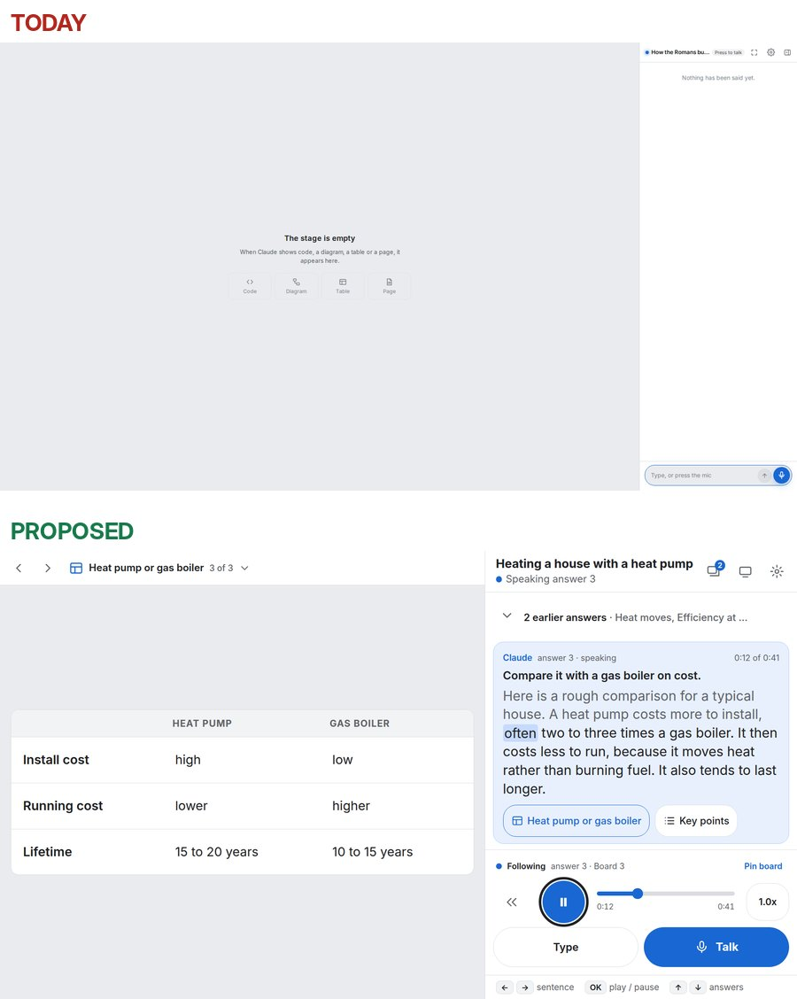
Problem
TV mode lives only in the gear. The page opens at desk size on a 1920x1080 TV, and TV mode enlarges only text, .ib and status; chips (12 px), .who (11), .fold, per-answer Play, the mode pill and the time stay small. The panel is 520 px wide in TV, answers fold to one line, and a person on a sofa cannot read, find or press anything (T11, T3, T9).
Themes T11, T3, T9, T14, T8. Testers: tv, listener, keyboard, power.
Design
- A header button with a screen icon (always visible, with its word on wide screens) switches Desk and TV. Settings gains a 'Screen: Phone | Desk | TV' segmented row, and ?screen=tv in the address starts the call in TV size and is remembered per device.
- On a display 1700 px wide or more that has never chosen, the panel shows one line at the top of the conversation, 'This looks like a large screen.' with Use TV size and Not now. It is an offer, never an automatic switch, since a 1080p desk monitor looks like a TV to the page.
- TV size is one scale, not a pile of exceptions: the whole panel is scaled by one variable (1.6 at 1920 px) so chips, rows, time, Play, the status line and targets all grow together. The panel is 470 css px times the scale wide (about 750 px), the board gets a larger type size too.
- In TV the newest answer is a large card (21 px times the scale, about 34 px on screen) with its question as the head line, the word highlight and 48 px board chips; older answers collapse into one 'N earlier answers' row, so the whole answer reads without a tap.
- The dock has a 64 px play button, back one sentence, speed (1.0x, in the player, not the gear), and two equal buttons: Type (opens the on-screen keyboard) and Talk (labelled, 60 px). The text field is hidden because nobody types on a TV.
- A key legend sits at the foot (arrows for sentence, OK play/pause, up/down answers) and every control shows a 4 px focus ring, so a TV remote or a keyboard can drive it; the play button holds focus on load.
- The working state and the other states scale with it. Mock states: ?state=desk, entry (the offer), settings, tv, tvwork; the TV shots are taken at 1920x1080 with tvshot.py.
How it would be built
Files: skills/talk/static/call.css, skills/talk/static/call.html, skills/talk/static/call.js, skills/talk/references/call-page.md, skills/talk/tests (screenMode and offer logic under the node DOM shim)
- call.css: replace the .app[data-tv] exceptions (lines 266-276) with one --u variable set from screenMode (TV_ZOOM in call.js:297-298) and apply it to the panel by zoom or by sizing every px token through calc(var(--u)); the stage keeps its own board scale. Add the TV rules: newest answer text size, hidden field, Type and Talk buttons, key legend, 4 px focus ring.
- call.html: header screen button; a settings sheet row for Screen; the offer line; the key legend; a Type button that is hidden unless TV.
- call.js: the screenMode setter (about line 1732) also reads ?screen=tv and localStorage; a new offerTv() shows the line when innerWidth is 1700 or more and no choice is stored; key handling for arrows, Enter and a mic key goes through readerPlays so following and the player claim behave as today; the settings sheet takes focus and returns it (also fixes T9).
- talk.py: nothing, unless the legend lists keys the server hands out.
- Tests: a node test for the offer rule and the ?screen=tv parsing.
What goes away
- the .app[data-tv] one-off size overrides
- TV as a hidden gear-only option
- the single-line fold of the newest answer in TV
Risks
- A TV and a 1080p monitor look the same to the page, so auto-detection is impossible; the design only offers, and ?screen=tv is the reliable way, which the owner can bookmark.
- Using zoom is Chromium-only; that is acceptable under the house rules, but the test harness (every box measures 0 under node) cannot check the look, so tools/talk_render at 1920 px is the proof.
- Showing the full newest answer in the panel duplicates the stage reader on TV; the stage reader should yield, or the panel shows the card and the reader stays a strip. This needs a decision against CLAUDE.md, which says every answer folds to one line in the panel.
- The Type button needs an on-screen keyboard that a TV browser may not provide; if it does not, the button must say so rather than open a dead field.
- Key bindings must not collide with the existing Space and arrow shortcuts; arrows already step sentences, so only the legend is new.
- The scaled panel is 750 px wide at 1920 and leaves the board 1170 px; wide boards (maps, sequences) lose width, so TV may need the panel to collapse to a rail on request.
Effort: The scale variable and TV rules are about a day; the offer, the focus and key work and the settings sheet row make it two to three days.
Build check
The plan needs the corrections below. Right direction for T11, but the build does not hold as written. The code has no 'Phone' screen mode and no scale variable. The arrow, up/down and OK keys do not exist. A full newest-answer card in the panel conflicts with the repo's 'folds to one line' rule. Effort is L, not M. I fixed two flaws in the mock (the clipped answer card and the play ring touching the scrubber) and re-rendered the TV shots. The mock-up otherwise follows house style: aligned rows, 48 px or larger targets, both themes legible, and the phone settings sheet fits at 390 px.
- Premise is partly wrong: the code has two screen modes (desk, tv), not three. screenMode (call.js:297) is 'tv' or 'desk' only; the 'Phone' choice in Screen is new, and phone is really the max-width:760px media query (call.css:279), so Phone|Desk|TV needs a defined meaning (auto by width, or an override of that query).
- The proposed '--u' scale does not exist. Today TV is TV_ZOOM=1.35 (call.js:298) sent to the stage as stage:zoom (stage.js:1624 sets documentElement.style.zoom), plus .app[data-tv] overrides (call.css:267-276) with --pw:520px. Scaling the panel by zoom or calc(var(--u)) is a rewrite of every px in call.css, not a swap of lines 266-276. The mock's 750 px panel (470*1.6) is larger than today's 520 px, and the stage zoom stays separate, so the 1.6 scale and 1.35 TV_ZOOM must be reconciled.
- '?screen=tv' parsing and the offer do not exist; the screen setter is at call.js:1731 (a click handler on #screen children), which only stores 'screen'. The header screen button, offer line, key legend and Type button are all new in call.html (#screen buttons exist only in the gear pop at call.html:71).
- Keys: arrows, Enter and OK are not handled today. The keydown at call.js:1291 handles only MEDIA_KEYS (Space, media keys) when focus is free; the one at call.js:1459 sends any printable character to #text. 'Up/down answers', 'back one sentence' and a remote's OK are new bindings. They must go through readerPlays() and the player claim, and not fire when focus is on a button inside #panel (the existing 'free' rule). The legend lists keys that do not work yet; the proposal says 'only the legend is new', which is wrong for up/down.
- A hidden text field in TV conflicts with call.js:1459, which focuses #text on any typed character, and with the T9 focus work. Type must open the field (an on-screen keyboard) or the key handler must skip in TV.
- CLAUDE.md conflict: it says every answer folds to one line in the panel and the reader on the stage shows the sentence being said. A full newest-answer card in the panel duplicates the stage reader, and the proposal itself flags this. Needs a ruling: in TV the reader stays a strip and the panel card is the only full text, or the other way round.
- Effort: M is too low. The scale refactor of call.css, three-way Screen state, offer logic, key handling through readerPlays, focus management and the TV layout of every panel state (working, ended, reconnect, stop card) is L, about 4 to 6 days with a tools/talk_render run at 1920 px. Tests under the node DOM shim can cover only the offer rule and ?screen parsing, not the look.
- Server: talk.py needs no change, as the design says. Panel width must stay in --pw because .pop and .toast position from it (call.css:230, 260).
- CLAUDE.md: 'every answer folds to one line in the panel'; the full newest-answer card in TV breaks it unless the rule is changed in the same change.
- CLAUDE.md: the reader on the stage shows each sentence as said; the panel card would duplicate it on TV.
- CLAUDE.md: new playback starts must go through readerPlays(); the proposed remote/arrow/OK keys must, and none exists yet.
- ADR-003: 'no explaining text in lists'; the offer line 'This looks like a large screen.' is explaining text, though it is a one-off banner and not a list row.
The 11 testers' votes
| Tester | Choice | Score | Why |
|---|
| daily | same | 3 | The panel is like devices-1 plus a TV-size offer. The prompt is a mild nag on my desk and means nothing to me, though it does no harm. |
| newbie | same | 3 | The 'This looks like a large screen. Use TV size / Not now' box is clearly worded, but I would not know what TV size is and it adds a decision. The rest is the same clear panel as devices-1. |
| thumb | same | 3 | Clear toggle rows for speed and mode, but it's just a settings page; I'd barely use it. |
| sofa | version | 5 | Offering a TV size is exactly what I need. The text and buttons are big enough to read from the sofa, with Type and Talk as plain words. |
| keys | version | 3 | TV mode is irrelevant to me at a desk, but the visible key legend (arrows, OK, up/down) and big focus ring on the play button are what I want in the normal page too. |
| back | same | 3 | The TV mode is not for me on a laptop. The desk screen is good, with a Since you left divider, but the TV offer banner is noise. |
| ears | version | 4 | TV mode has huge text, a huge pause button and a big Talk button, readable from across the kitchen. I would turn it on for cooking, though I'd rarely use it at the desk. |
| quiet | same | 3 | The TV mode offer is aimed at someone else. The desk panel looks the same as devices-1, and I will never use the TV size. |
| greek | same | 3 | Settings with Screen, Speed, Mode and Theme as big segmented rows are clean and easy to tap. But it is only a settings sheet, and the Screen choice (Phone, Desk, TV) is not something I want to set myself. |
| rush | same | 2 | The TV-size offer and the very large controls are not for me on a laptop. It adds a banner I would have to dismiss. Without that it is close to today. |
| taste | same | 3 | Clean segmented settings, nicely aligned, but it is only a settings sheet with a big empty bottom. Fine, nothing that changes my daily use. |
What the testers hit: every finding
Waiting for Claude: a bare 'Claude is working...' with no time, no slow hint, no way out
Eight personas waited minutes and saw only the fixed foot line. Elapsed seconds appear only when an activity item is running (call.js statusText, about 524-528; the label comes from activity_view in talk.py). Corrections: slowness is a harness trait and a real session usually shows 'label · Ns' during tool steps, so the gap is the fallback (thinking, or no running item). The page has other cues (accent ring on the stage frame, shimmer), and the stalled warning (STALLED_OPEN_AFTER 180 s) exists but is worded for someone at the terminal ('Check the terminal') with no action (resend, copy question) for a phone or remote viewer. The page cannot give an estimate, but could count the wait itself from the turn's send time (turnSentAt). Not 'blank conversation': the user's bubble shows. Severity moderate to minor, not major.
first-3 · minor · Waiting state is a bare 'Claude is working…' with no time or progress and a blank conversation
For 2 to 3.5 minutes after Send the panel showed only 'Claude is working…' with a pulsing edge. The stage said 'The stage is empty' and nothing gave an elapsed time or an estimate, so she wondered if it was stuck.
Cause: The elapsed time is shown only when the session's activity hook reports a running tool. The harness responder had no hook, so the text stayed fixed. In a real session the label would be 'tool · Ns'. The panel has no elapsed counter of its own as a fallback. The slowness itself is out of scope.
Code: skills/talk/static/call.js:527 view.working with no running activity gives the fixed text 'Claude is working…'; the elapsed seconds appear only when an activity item is running; skills/talk/talk.py:2812 activity is sent only while turns.working
Doubter: kept. The code claim holds. statusText() at call.js:526-527 shows "Claude is working…" with a shimmer unless an activity item is running, and only then "label · Ns". talk.py view() sends activity only while turns.working. The panel has no elapsed counter of its own. Shot 03 shows exactly that line. It is a real but minor gap, and a harness with no activity hook makes it more likely to appear.
Doubter: kept. The code reading holds. `statusText()` at call.js:527 returns the fixed text "Claude is working…" whenever `view.working` is true and no activity item is in state "running". It shows `label · Ns` only for a running item. The page has no elapsed counter of its own. talk.py:2812 sends `activity` only while `turns.working`, as cited. I did not open the shots. The harness caveat is partly right: the harness responder had no activity hook, so the bare text would show far more often there than in a real session. In a real session the hook (`talk-activity.sh`, posting to `/api/activity`) feeds `record_activity`, so "tool · Ns" appears while a tool runs. But the bare text still appears whenever the model is thinking or writing between tool calls, or before the first tool starts. A real user can hit that, usually for much less than 2 to 3 minutes.
Doubter: kept. The core claim holds. call.js statusText() (line 527) shows a fixed "Claude is working…" with a shimmer whenever view.working is true and no activity item has state "running". The seconds counter appears only for a running item, and the panel has no elapsed timer of its own. Shot 03 matches this: a blank conversation under the user's message and a bare "Claude is working…" line. In a real session the fixed text also shows during pure thinking, or between tool calls, when nothing is running. So this is not only a harness artifact. The page does show some liveness (the shimmer and the pulsing edge), and the stalled warning covers the case where Claude never picks the turn up. Severity minor is fair.
tv-5 · minor · The first wait is a faint 'Claude is working...' with an empty stage and no sense of time
Waiting about 4 minutes for the first answer, the only sign of progress was a small grey shimmering 'Claude is working...' line just above the text field, while the huge stage showed 'The stage is empty' and its Code/Diagram/Table/Page hints. Grace wanted a headline such as 'preparing your answer, about a minute'. (The slowness is a harness trait, the plain waiting state is fair game.)
Cause: Working state is one small status line in the foot. The stage's empty state is unchanged by working, and no elapsed time appears unless Claude posted a running activity.
Code: skills/talk/static/call.js:524-527 statusText returns 'Claude is working...' or run.label + seconds; skills/talk/static/call.css:147-149 .status 13px muted shimmer; skills/talk/static/call.css:272 TV raises it only to 17px
Doubter: kept. The code and the shot both confirm it. In call.js statusText() the view.working branch returns the generic "Claude is working…" with shimmer when no activity is running, and the elapsed seconds appear only when an activity has state "running". In call.css .status is 13px muted, and the TV rule raises it only to 17px. Shot 04-04-wait2.png shows a small grey "Claude is working..." above the text field and a stage reading "The stage is empty". I found nothing in call.js that changes the stage's empty state while Claude is working.
Doubter: kept. The shot 04-04-wait2.png shows what the finding describes. The only text signal is a small grey "Claude is working..." line above the text field, and the stage reads "The stage is empty". The code matches. statusText (call.js:525-527) returns the generic "Claude is working…" with no elapsed time unless Claude has posted a running activity. Any user whose session posts no activity would see the same thing, so the harness does not cause it. The cited lines are accurate: call.js:524-527 for statusText, with .status styling in call.css.
Doubter: kept. The claim holds. In 04-04-wait2.png the only sign of progress is a small grey "Claude is working..." line above the text field, and the stage still says "The stage is empty" with its Code/Diagram/Table/Page hints. call.js statusText (lines 525-527) falls back to the generic text when no activity has state "running". It adds a seconds counter only when Claude posted a running activity, so the plain waiting state has no elapsed time. call.css makes .status 13px muted with a shimmer, and TV mode raises it only to 17px. The page handles the wait only through this line and the stalled warning (view.stalled, shown after a timeout). The stalled warning is a failure signal and does not give a sense of progress. The empty stage does not change while working. The line is not harness-only: the waiting state is the page's own, and the slow responder only made it last longer. Severity "minor" is fair.
keyboard-4 · minor · Waiting line shows no elapsed time unless a tool step is running
While a slow answer was prepared, the status line said only 'Claude is working…' with a shimmer, and Ravi could not tell whether it was stuck. The slowness itself is a harness artifact.
Cause: The elapsed time comes from the activity stream. Without a running activity there is nothing to count, and the page does not time the wait itself.
Code: skills/talk/static/call.js:525-527 the seconds count is shown only when an activity row is in state running; otherwise the bare text; skills/talk/static/call.js:523-524 the stalled warning appears only after the server marks it stalled
Doubter: kept. The code does what the finding says. In statusText (call.js, lines 525-527 in this checkout), the seconds count appears only when an activity row has state "running". Otherwise the line is the bare "Claude is working…" with a shimmer. Nothing on the page times the wait itself: grep for seconds, waited and since finds no client-side elapsed counter. The one other signal is the stalled warning, which comes from the server's view.stalled flag. That flag is checked just before the working branch, at about lines 523-524. The "One moment." line at about line 1723 is spoken only in live mode, so it is no substitute. The shimmer shows the page is alive, but not how long it has been waiting. The finding is real, as a minor trust-while-working gap.
Doubter: kept. The code supports the claim. In statusText() in call.js, the working state shows a seconds count only when an activity row is in state "running". Otherwise it shows the bare "Claude is working…" with a shimmer. The page has no timer of its own for the wait, and grep finds no other elapsed-time display in call.js. The stalled warning is shown only when the server sets view.stalled. A real session also has waits with no running tool step, such as thinking before the first tool call, so this is not only a harness effect. I did not open the screenshots. The finding is minor, since real tool steps do show a count.
Doubter: kept. The code reading holds. In statusText() in call.js, the elapsed seconds appear only when an activity row is in state "running". Otherwise the line is the bare "Claude is working…" with the shimmer. Shot 05 shows exactly that: a typed message and only "Claude is working…" in the status line, with nothing to say how long it has been waiting. The page keeps no timer of its own for the wait. The stalled warning is a separate branch. It depends on the server marking the turn stalled (STALLED_OPEN_AFTER), so it covers only a turn that was never picked up, not a slow one. This is the page's behavior, not a harness artifact. A real session would show tool steps with seconds while it runs tools, but it shows the bare text during model thinking or before the first tool call. The slowness itself is a harness artifact, as the finding says. Severity "minor" is fair.
greek-3 · minor · Long waits show only a small grey 'Claude is working…' with no progress or estimate
Answers took 2 to 3.5 minutes. The only sign was a faint grey line in the foot. The persona doubted at first that anything was happening and found no estimate.
Cause: The foot line shows a running activity label only when the session reports one. Here the responder sent few activities, so it fell back to the generic text. The shimmer is a faint gradient on 13px muted text. The slowness itself is a harness feature; the weak waiting signal is the panel's. The page never shows elapsed time when there is no activity label.
Code: skills/talk/static/call.js:525-527 (working status: the activity label and seconds if any, else 'Claude is working…'); skills/talk/static/call.css:147-150 (.status is 13px muted, shimmer); skills/talk/talk.py:3451 (status lines come only from the session's own `status`)
Doubter: kept. The code does what the finding says, but the finding leaves out another waiting signal. In call.js statusText(), line 525 onward, when view.working is true and no activity has state "running", the foot line is the generic "Claude is working…". Elapsed seconds are shown only with a running activity label, so no elapsed time or estimate appears otherwise. call.css line 147 gives .status 13px muted text, and the shimmer is a muted-to-ink gradient. I did not open the screenshots. Two things are overstated. First, the foot line is not the only sign. appState() returns "working", so the stage frame gets an orbiting accent ring and edge glow (call.css lines 36 and 39, with a 1.6s orbit), which is faster than any other state. Second, talk.py around line 3451 is not where the working text comes from. It is the branch that stores a session-sent `status` as a conversation entry via call.add("status"). The generic fallback comes from view.working in the page. The live-mode "One moment." filler is also unrelated to this text line. The missing elapsed time and estimate remain a minor gap in how the page reports a long wait.
Doubter: kept. The code and shot support the claim. call.js:525-527 falls back to "Claude is working…" with no elapsed time when no activity is running. Shot 06 shows only that line at the foot, with a blue dot in the header. The minimum one-minute-plus waits were harness-slow, but the missing elapsed time is a page gap. The page has no timer of its own for a turn waiting without a running activity. There is a stalled warning (view.stalled), but it only fires when the turn is never picked up.
Doubter: kept. The code matches the claim. statusText() in call.js (about lines 525-528) shows "<label> · Ns" only when an activity has state "running". Otherwise it shows the fixed "Claude is working…", with no elapsed time. The shimmer is 13px muted text, and shot 06 shows it as a small grey line above the field. The page does not compensate in the foot. That is a real but small weakness in how the page shows that work is in progress. Responder slowness is the harness's, but the missing fallback timer is the page's. Severity "minor" is fair.
typist-8 · minor · Waiting for Claude is one faint 'Claude is working...' line
After Send the foot shows only 'Claude is working…' for 40 to 70 seconds, with a faint shimmer and a pulsing frame. The stage stays empty and gives no sense of progress. A 'thinking about X' status line is added to the conversation only later.
Cause: Without an activity entry the foot has no label and no elapsed time. Slowness itself is not counted (responder was slow).
Code: skills/talk/static/call.js:526-527 statusText: shows run.label and seconds only when an activity is running, else plain 'Claude is working…'; skills/talk/static/call.js:331-332 status entries (who === 'status') in the conversation
Doubter: kept. The code and the shots agree with the claim. Shot 03-03 shows only the plain "Claude is working..." line in the foot. statusText (call.js:524-528) returns that plain text whenever view.working is true and no activity entry is in the "running" state. The state then has no label and no elapsed seconds. Status entries (who === 'status') only appear once the responder posts them, and shot 04-04 shows "weighing your constraints" in the conversation. I did not confirm the 40 to 70 second figure.
Doubter: kept. The code claim holds. At call.js:524-527, the foot shows "Claude is working…" with a shimmer when no activity entry is running. It shows a label and seconds only once an activity is running. Shot 03-03-sent.png shows exactly that line, small and grey, under an empty stage and a user message. It is a real state of the page. Two doubts weaken it. (1) The activity labels come from the activity hook (/api/activity, record_activity). In a real session that runs tools, labels like "Reading X · 12s" should appear soon after Send. The harness responder may not fire that hook, so the 40 to 70 s of bare text may be partly a harness artifact. The bare line is the page's normal state only before the first tool call, or when the hook is not installed. (2) The "weighing your constraints" status entry is a separate path, and it is not a later arrival of the same activity feed. It appears while answer 1 is already playing.
Doubter: kept. The claim is true of the page. In 03-03-sent.png the foot shows only a plain "Claude is working..." line above the text field, and the stage is empty. At call.js:526-527 `statusText` shows a label with seconds only when `view.activity` holds a running item. Otherwise it falls back to the bare text with no elapsed time. The "weighing your constraints" status line in 04-04-wait.png is an activity or status entry that arrived later, as the finding says. The severity "minor" is fair.
power-2 · major · 'Claude is working…' shows no elapsed time and no slow hint when no activity line is running
The jazz answer took about 9 minutes. The panel showed only 'Claude is working…' (shot 25, also after a reload). Nothing said how long it had waited, that it was slow, or offered a nudge or cancel. Petra thought it was frozen. The responder sent one status and then slept, so this is a real session's slow turn.
Cause: Elapsed time comes only from view.activity running entries. A turn that is being worked on with no activity entry never gets a timer or a 'taking longer than usual' line. The stalled state does not fire while a doorbell is waiting.
Code: skills/talk/static/call.js:524-528 statusText(): a seconds counter appears only when an activity entry is running, else the fixed text 'Claude is working…'; skills/talk/static/call.js:523 the stalled warning needs view.stalled, set by the server only when a turn is collected and never answered with no doorbell back
Doubter: kept. The code matches the claim. In statusText() in call.js, the working branch shows a seconds counter only when view.activity has an entry with state "running". Otherwise it returns the fixed text "Claude is working…" with a shimmer. Nothing in that branch tracks how long the turn has waited. The "slow" warning comes only from view.stalled, and the repo's CLAUDE.md says the server sets it only for a turn that was collected, never answered, and has no doorbell back. While a doorbell is waiting, the page has no slow-turn state. The persona's report that the responder sent one status and then went quiet fits this: the earlier activity entry was no longer running. I did not open the shots. The bare line is also a reasonable thing for the panel to show in that case, so the finding is real.
Doubter: kept. The code reading holds. statusText() (call.js ~524-528) shows a seconds counter only for a running activity entry. Otherwise it shows the fixed "Claude is working…" and never adds a timer or slow hint. Shot 25 shows exactly that bare line. I did not check that the stalled path stays silent while a doorbell waits, or what the server's activity hook does. The harness did not cause this: in a real session the activity hook (talk_activity.py via /api/activity) usually feeds activity entries during tool use, so the counter normally appears. A long turn of pure thinking or a silent subagent produces no activity entry, and that turn gets no elapsed time. So the gap is real but narrower than the finding says.
Doubter: kept. The code shows what the finding says. In `statusText()` (call.js ~524-528), the working branch shows a seconds counter only when `view.activity` holds an entry with state "running". Without one, the text is the fixed "Claude is working…" with shimmer. Nothing in call.js shows an overall wait time or a "taking longer than usual" hint. `activity_view()` in talk.py only reflects the session's activity entries. `view.stalled` is the only slow-turn warning. The finding itself describes it as firing only when a turn is collected and never answered, with no doorbell back. A session that is slowly working on a turn, or whose doorbell is waiting, never triggers it. A 9-minute wait with only "Claude is working…" is therefore something a real user meets, not a harness artifact. The persona's notes agree: 'Jazz stuck working 6+ min, input disabled, no cancel'. A real session can also go quiet on a long turn, so the finding is not just the responder's slowness.
phone-1 · major · Stalled warning tells a phone user to 'check the terminal' and offers no way out
The first question waited about 4.5 minutes. After 3 minutes the foot showed an orange 'Claude has not picked this up yet. Check the terminal: the session may be waiting for a permission.' The persona has no terminal and could not tell whether to wait, resend or cancel. The slowness came from the responder (it stalled on a stray stdin command), which is a harness cause, but the wording and the missing action belong to the panel.
Cause: The stalled line is a single developer-facing string. It assumes the viewer sits at the Claude Code terminal. It has no action (resend, cancel, copy the question) and no plain-language alternative for someone who only has the call page.
Code: skills/talk/static/call.js:524 fixed stalled text, shown for every viewer; skills/talk/live_turns.py:15,166-169 STALLED_OPEN_AFTER=180s sets view.stalled
Doubter: kept. The code confirms the claim. call.js line 524 in statusText() shows one fixed string for every viewer when view.stalled is set: "Claude has not picked this up yet. Check the terminal: the session may be waiting for a permission." It has no action. The only buttons I found near it are Retry and Send again, and they are shown only for connDown, unsent or audioBad (lines 268 and 651), so they do not appear for a stalled turn. The page has no resend, cancel or copy-question action for a stalled turn. The text also assumes the viewer sits at the Claude Code terminal, which a phone user may not. I did not open the shots, so I did not check them. The delay was caused by the harness, but the wording and the missing action are the page's, as the finding says.
Doubter: kept. The screenshot "06-q1 after190s.png" shows the orange line "Claude has not picked this up yet. Check the terminal: the session may be waiting for a permission." under the user's typed question, and the Send box has no resend or cancel beside it. call.js:524 (statusText) is a fixed string shown for every viewer when view.stalled is set. STALLED_OPEN_AFTER = 180 s in live_turns.py:15, used at lines 166 and 169, matches the 3-minute timing. The delay itself is a harness artifact, but the stalled state is a real, designed state that a real slow or permission-blocked session also reaches. My doubt is on severity. /talk is started from a Claude Code session, so a normal user usually does have a terminal. The persona's "I have no terminal" is partly a role-play artifact, and the line does name a plausible cause. Still, a phone or remote user gets no action and no hint whether to wait, resend or cancel, so the finding stands.
Doubter: kept. The cited code is accurate. call.js line 524 returns the fixed string "Claude has not picked this up yet. Check the terminal: the session may be waiting for a permission." with warn:true. The text is the same for every viewer and the line has no button or link beside it. live_turns.py sets STALLED_OPEN_AFTER=180 and stalled() applies it as described. Shot 06 shows the orange line at 190 s on a phone with only the text field and mic below it. The 4.5 minute delay came from the responder, but the warning itself is the page's, and a real session that stalls or waits on a permission would show the same wording. Doubt: /talk is started from a Claude Code terminal, so a typical viewer often does have a terminal, and a phone-only viewer is a less common case. The page is not blocked either, because the user can still type or press the mic.
Old status lines stay in the conversation, and a CSS rule stretches them into huge blank gaps
Progress notes ('thinking it through') are stored as transcript entries and never collapsed once the answer lands; six personas called them clutter (deliberate record, minor). Separately, mic found a real layout bug: the foot's bare `.status{flex:1}` also matches the conversation's `.line.status` inside the flex-column .convo, so each status line takes a share of the leftover height (552 px measured). Corrections: the gap exists only while the conversation is shorter than the pane and shrinks as it fills; severity moderate, not major. Fix: scope the foot rule (.foot .status) or add flex:none to .line.status. Other personas' 'large blank gaps' (first, greek, interrupter, listener, power) are most likely this same rule, not bottom alignment.
mic-1 · major · Status line in the conversation stretches to fill the column, leaving big blank gaps
In the conversation each 'sketching your plan' / 'thinking' / 'making the swap table' line sits in a huge empty band (hundreds of px). Older turns scroll away and the chat looks broken. Reproduced on my own call: the status line measured 552 px tall in a 900 px window.
Cause: The foot's status rule (.status, flex:1, meant for the one-line status under the stage) is a bare class selector. The conversation's status entries also carry class 'status', so inside the flex-column .convo they get flex-grow 1 and share all the leftover height. The gap shrinks as the conversation fills, which is why it looks random.
Code: skills/talk/static/call.css:147 .status{flex:1;...} also matches the conversation's .line.status; skills/talk/static/call.css:127 .line.status; skills/talk/static/call.css:105 .convo is a flex column; skills/talk/static/call.js:343 builds the entry with class 'line status'
Doubter: kept. The code matches the claim. call.js:343 builds the entry with class "line status", and .convo (call.css:105) is a flex column. The bare rule `.status{flex:1;min-width:0;...}` at call.css:147 matches that entry. The more specific `.line.status` rule at line 127 sets only display, gap and colour, and never resets flex. So each status line gets flex-grow 1 and shares the leftover height of the column. The foot's status element is the intended target of that rule. The status entries in the conversation are caught by the selector by accident. I did not open the screenshots.
Doubter: kept. The cause checks out in the code. call.css:105 makes .convo a flex column. call.js:343 builds status entries with class "line status". The bare rule at call.css:147, `.status{flex:1;min-width:0;...}`, matches them too. Nothing in `.line.status` (line 127) resets flex. Each status line therefore gets flex-grow 1 and shares the leftover column height, with no harness involvement. Any user would see it whenever a status line sits in a short conversation. I did not open the screenshots.
Doubter: kept. The cause checks out in the code. call.css:147 `.status{flex:1;min-width:0;...}` is a bare class selector, and call.js:343 gives the conversation's status entries the class "line status". `.convo` (call.css:105) is a flex column. Those entries therefore get flex:1, which is grow 1 and basis 0, while the turns stay at the default `0 1 auto`. When the content is shorter than the box, the leftover height is split among the status lines. This was not checked in a browser or against the screenshots; it comes from reading the CSS only. `.line.status` at line 127 sets only display and align-items, so it does not override the flex shorthand. The page causes this, not the content or the responder.
tv-4 · minor · Old "thinking about ..." status lines stay in the conversation forever and push the history into a long scroll
Each turn's working label (thinking about gradients, checking siphon numbers, recalling Vitruvius, gathering lengths, redrawing as bars, slowing down) stays in the chat as a faint dot line above the answer. After 6 turns the panel is a long scroll of bubbles, status dots, chips and answers. Grace asked for these to collapse. A large blank gap also appears around the first one while waiting.
Cause: A status posted by the responder is stored as an ordinary transcript entry (who status), so it is never removed or replaced when the answer lands. The page only draws every transcript entry.
Code: skills/talk/talk.py:3411 and 3451 call.add("status", status[:120]) from the reply's status; skills/talk/static/call.js:342-343 a status entry is rendered as a permanent .line.status; skills/talk/static/call.css:127-128 .line.status 12.5px faint
Doubter: kept. The code does what the finding says. post_reply in talk.py calls call.add("status", status[:120]) and keeps the entry in the transcript. call.js line 342 draws every such entry as a .line.status, and call.css line 127 styles it. No filter, collapse or replacement removes old status lines when the answer lands. I found nothing else in call.js or call.css that handles status entries. The live status in the foot (statusText) is a separate element. The harness does not explain this. The slow responders only made it more visible, since each turn gets a status line. I did not open the screenshots.
Doubter: kept. The mechanism is real and a normal user would meet it. In talk.py around line 3451, post_reply stores the status with call.add("status", status[:120]). call.js line 342 draws every such entry as a permanent ".line.status", and nothing removes or collapses it when the answer lands. Shot 22 shows "gathering lengths", "redrawing as bars" and "slowing down" still sitting above answers 4, 5 and 6. The harness does not cause this: SKILL.md tells every real session to send a status with the first work call. The page also has a separate live foot status line ($("status")), so the transcript copy is a leftover.
Doubter: kept. The mechanism is real. talk.py:3451 stores each status as a transcript entry with who "status". call.js:342-343 draws every such entry as a permanent .line.status, and nothing in call.js removes it when the answer lands. Shot 22 shows five old dot lines ("gathering lengths", "redrawing as bars", "slowing down" and others) between the bubbles. The cited lines are accurate. The page does not hide them, and no doc says they should stay. The page also shows the current status in the foot (call.js:462-464), so the inline lines are a leftover record rather than the live indicator. I did not find a reason to refute it.
greek-5 · minor · Status lines stay in the conversation after the answer arrives, with large gaps above them
'Σκέφτομαι τα λατομεία' and 'Συγκεντρώνω αποστάσεις και βάρη' stay as grey dotted lines between the user's message and the answer. In shot 07 the first one floats in a large empty gap before any answer; they look like leftover debris.
Cause: Status posts are transcript entries, never retired when the reply lands, and styled very faintly with no label saying they were progress notes. The big gap in shot 07 is the conversation pinned to the bottom of an almost empty scroll area.
Code: skills/talk/static/call.js:342-343 (a status entry is a permanent .line.status in the transcript); skills/talk/static/call.css:127-128 (.line.status: faint grey with a dot); skills/talk/talk.py:3451 (call.add("status", ...) is kept in the transcript)
Doubter: kept. The code matches the claim. In call.js:342-343 a status entry becomes a permanent `.line.status` element, and nothing in call.js retires or filters it when the reply lands. talk.py:3451 calls `call.add("status", ...)`, which keeps it in the transcript. The CSS at call.css:127-128 styles it in `--faint` grey with a 6 px dot and no label. Status lines therefore stay between the user's message and the answer. I did not open the cited screenshots, so the large gap in shot 07 is unverified.
Doubter: kept. The code and both shots support the claim. A status entry is added with call.add("status", ...) at talk.py:3451 and drawn as a permanent .line.status at call.js:342-343, with no code that retires it once the answer lands. In shot 09 the grey dotted "Σκέφτομαι τα λατομεία" line is still there after answer 1 has arrived. In shot 07 it sits above the board chips, with a large empty band between the user message and it. A real /talk session also posts statuses, because SKILL.md tells it to send one with the first tool call. A user would see the same lines left behind, so the harness is not the cause. I did not open shot 11.
Doubter: kept. The code matches the claim. talk.py:3451 stores each status post as a transcript entry with call.add("status", ...). call.js:342-343 draws it as a permanent .line.status, and nothing in call.js removes it when the reply lands. call.css:127-128 styles it in faint grey with a dot. In shots 07 and 09 the dotted "Σκέφτομαι τα λατομεία" line sits alone in the conversation, with large empty space around it and no label saying it was a progress note. This is the page's behaviour, not a harness artifact or a responder quirk. I could not tell from the shots whether the status lines disappear once the answer arrives, so the "stay after the answer arrives" claim rests on code reading.
listener-2 · minor · Status lines 'thinking it through', 'thinking', 'checking numbers' stay in the conversation for good
Progress lines the responder posts remain in the conversation as grey bullets long after the answer landed, so the transcript looks as if Claude is still working. Shot 05 shows 'thinking it through' above the finished answer 1, and shot 13 shows three of them among settled answers.
Cause: A reply --status is an ordinary entry of the transcript. It is never replaced, folded or removed when the real answer arrives, and the page gives it the same look whether it is current or old.
Code: skills/talk/talk.py:3451 call.add('status', status[:120]) stores a status as a permanent transcript entry; skills/talk/static/call.js:341 who==='status' renders it as a plain 'line status' with no state; skills/talk/talk.py:2147 status entries are labelled 'Claude, working' in the export
Doubter: kept. The code does what the finding says. In talk.py, a reply with status calls call.add("status", status[:120]), which makes a permanent transcript entry. The call.js branch at line 342 draws every such entry as a "line status" with a grey dot. A search of call.js, call.css and talk.py found nothing that filters, folds, dims or removes older status entries when the answer arrives. The server only drops a status that arrives after the turn was answered. The live status in the foot (line 462, statusText) is a separate element. I did not open the shots, so the "looks as if Claude is still working" effect rests on the code alone. The grey styling is the same for old and current lines, so that is plausible.
Doubter: kept. The finding holds. Shot 05 shows "thinking it through" as a grey bullet above the finished answer 1. Shot 13 shows "thinking" above answer 3, and "thinking it through" above answer 1, both among settled answers. The code agrees. talk.py ~3451 stores every status as a permanent call.add("status") entry. call.js 342-343 renders every such entry as the same `.line.status` (call.css 127-128), with no old-versus-current state, and I found nothing that folds, removes or replaces it. SKILL.md lines 77-78 tell a real session to send a status whenever a turn needs a tool call, so a normal user would meet this outside the harness. The slow responders in the test only made the lines easier to see. Severity "minor" is fair.
Doubter: kept. The mechanism is real, and I checked it in the code. A status reply goes through talk.py around line 3451. It calls `call.add("status", status[:120])`, so each status becomes a permanent transcript entry. call.js around line 342 draws it as a `line status` (12.5px, `--faint`, with a small dot). Nothing replaces, folds or removes it when the answer arrives, and nothing marks it as past. The live "working" indicator is separate. It is the foot's `#status` element, driven by `statusText()` and `view.working`. So the persisted lines are an old progress log and the real current state sits elsewhere. I did not open the shots. I am relying on the code, which agrees with the description.
power-3 · minor · Finished status lines ('thinking it through', 'checking the test tooling') stay in the transcript as gaps
Each status the session posts becomes a permanent grey line in the conversation, with a large blank area around it. After the answer arrives these lines remain between answers, adding clutter.
Cause: Status posts are kept as ordinary entries and never dropped or folded once an answer follows. The big gaps come from the anchored layout in the shots, where the conversation sits at the bottom of a tall column.
Code: skills/talk/talk.py:3451 call.add('status', status[:120]) stores it as a conversation entry; skills/talk/static/call.js:342-343 renders every 'status' entry as a .line.status
Doubter: kept. The code does what the finding says. In talk.py, the status branch calls call.add("status", status[:120]) (line 3451, not far off the cited 3451). call.js lines 342-343 build a permanent ".line.status" element for every status entry. I found no code that drops or folds a status entry once an answer arrives. Shot "30-jazz answered.png" shows "thinking it through" left in the conversation above the finished answer 1. The live status line in the foot is a separate element (#status). The harness slowness does not explain this: the lines persist by design.
Doubter: kept. The code does what the finding says. Line 3451 of talk.py stores each status post as a conversation entry, and call.js:342-343 renders it as a `.line.status`. Nothing in call.js or talk.py drops or folds it once an answer arrives. Shot 30 shows "thinking it through" still in the transcript after the answer 1 turn is there. A normal user would see this too, since a real session posts statuses the same way. The live status in the foot is a separate element (`$("status")`), so the persisted line is a real duplicate. It is a small cosmetic issue, as rated.
Doubter: kept. The code claim holds. talk.py:3451 stores each status post as a "status" entry, and call.js:342-343 draws it as a .line.status. Nothing in call.js or call.css (127-128) folds or drops it once an answer follows, so the lines stay between answers. A status can only be posted while the turn is unanswered, so this is the session's own progress text, not a harness artifact. I did not open the cited shots, so I could not confirm the blank-area claim. Severity "minor" is fair.
interrupter-3 · minor · Conversation layout leaves large empty gaps: status lines float in the middle and the user message is pinned far below
While Claude worked on the first turns the user's message sat at the top and the correction at the bottom of the panel, with a tiny 'sketching the route' line stranded in the middle of a blank area. The only wait signal in the foot is a bare 'Claude is working...'. Later, answers appear to arrive out of order next to the messages (answer 4 after a later message).
Cause: The panel spaces its rows to fill the height and shows activity as a separate row between entries, so a few short rows spread out. The foot text has no hint of which message Claude is working from. Answers are listed in arrival order, so one that answers an earlier turn sits below later messages with no link to its question. The root cause of the spacing was not confirmed in CSS.
Code: skills/talk/static/call.js:526-529 (view.working status line: 'Claude is working…' when no activity is running); skills/talk/static/call.css (conversation spacing)
Doubter: kept. Partly true, with a wrong cause. Shot 04 shows a real gap of about 280px each side of the 'sketching the route' line, between the first message and the correction. The foot there says only 'Claude is working…'. statusText() in call.js (lines 524-529) does return that text when no activity is running, and the foot never says which message Claude is working from. The cause the finding gives is false. call.css line 105 sets .convo to a flex column with gap:12px and no space-between, no margin:auto and no flex-grow on rows. Status lines are ordinary entries ('line status', call.js 343) and have no spacing rules of their own. So the panel does not 'spread rows to fill the height', and I could not find in the CSS what made the gap in 04. Shot 09 has no such gaps. Entries are packed at 12px, and answers 3, 4 and 5 follow the messages in arrival order. That is normal chronological chat, not a bug, so 'answers appear out of order' is weak. Answer 4 was skipped as stale by the responder, which is also a harness effect.
Doubter: kept. Only the first part holds. Shot 04 shows the gap: about 290 px of blank space on each side of "sketching the route", with the second message pinned to the bottom. The CSS does not explain it. `.convo` in call.css:105 is a plain flex column with `gap:12px`, with no `space-between`, no `margin:auto` and no stretching, so the panel does not spread its rows to fill the height. Something invisible or tall sits between those rows, and I did not find what. Shot 03 (one message, status in the foot) has no gap at all, and shot 09 has none either: the rows there are tightly packed. The "out of order" claim is not a fault. Answer 4 sits after the "ugh, forget Takayama" message because entries are listed in transcript order, and in shot 09 that message was typed while answer 3 was still being worked on. The "Claude is working…" foot text is real (call.js:526-529). It shows only when no activity is running, and when an activity is running the foot shows its label with seconds. The status lines are separate rows in the list, as the finding says.
Doubter: kept. The large gaps are real in shots 03 and 04. In 04 the first message, the 'sketching the route' status line and the correction are each about 290 px apart. The cause given is wrong, though. `.convo` in call.css:105 is a flex column with a fixed `gap:12px` and no `space-between`, and `.line.status` is an ordinary row. Nothing in the CSS fills the height or spreads rows, so I could not find what produces those gaps (a hidden or empty element, or a timing artifact of the harness, are guesses I did not check). The later shot 09 shows tight 12 px spacing, so the gap is transient or specific to that early state. The out-of-order claim is not supported. In shot 09 answers 3, 4 and 5 each sit directly after their own question, and the notes say answer 4 was stale-skipped by the responder (a content matter, not the page). The 'Claude is working…' foot text is correct for `view.working` with no running activity (call.js:525-528). Severity minor is fair.
listener-3 · minor · Blank gap above a status line and a Back 10 s tooltip stuck over the 'working...' line
A large empty band sits between the first message and the 'thinking it through' line (shots 05, 09, 10), so the status looks detached from everything. In shot 13 the 'Back 10 s' tooltip stays open above the player and hides the start of the 'Claude is working...' line, which reads 's working...'. The tooltip stays because the Back button holds focus or hover after the click.
Cause: The tip is a pure CSS :hover pseudo-element drawn upward into the conversation area, which is also where the working line sits. The persona's pointer stayed on the button after clicking. The blank band is the conversation list's bottom alignment of a short list in a tall pane.
Code: skills/talk/static/call.css:214 .ib[data-tip]:hover::after places the tooltip 8px above the button over the conversation; skills/talk/static/call.js:1236 back button onclick skip(-10) with no blur; skills/talk/static/call.js:523 statusText returns the 'working' line shown just above the player
Doubter: kept. The tooltip half is real. Shot 13 shows the "Back 10 s" tip over the start of "Claude is working...", so it reads "s working...". call.css:214 draws the tip upward by 8px from the button, which is the claimed cause. It shows for any mouse user whose pointer rests on Back after a click. That is ordinary hover behaviour, so the finding is minor and not a harness artifact. The blank-band half is also visible in shot 05: a large empty band sits between the first "You" message and the "thinking it through" line, and another between that line and the chips. I found no CSS that bottom-aligns a short list. `.convo` (call.css:105) is a plain flex column with `gap:12px`, with no `justify-content:flex-end` and no `margin-top:auto` on its children. I did not trace what produces the band.
Doubter: kept. Shot 13 shows the "Back 10 s" tooltip covering the start of the working line, so it reads "s working...". The CSS places the tooltip 8px above the button, over the conversation, whenever a hover-capable pointer rests on it. A desktop mouse user who clicks Back and leaves the pointer there would see the same. Shot 05 shows the large empty band above the status marker, from the short conversation sitting at the bottom of a tall pane.
Doubter: kept. Shot 13 shows the "Back 10 s" tooltip covering the start of the working line, which reads "s working...". The CSS rule at call.css:214 draws the tooltip 8px above the button with pointer-events:none, inside the conversation area. A mouse user's pointer stays on the button after clicking, so a normal desktop user would see the same overlap. Only touch devices avoid it, because the rule sits under @media (hover:hover). The cited code lines match the page.
Every answer folds to one truncated line; reading, scanning and finding older answers costs a tap each
By design (CLAUDE.md) the panel folds each Claude answer to one line because the stage reader carries the text. Ten personas felt the cost: Show text is a small unscaled link (11.5 px; TV mode does not enlarge it), no expand-all, no search, folded line is a weak topic. Corrections: the user's own question above each answer works as a topic, folded text stays reachable (full text at TV size 20 px when opened), it is one Tab stop per answer, and the fold applies whenever readerOn(), not only with a board. Severity minor. Possible asks: expand all, search, bigger toggle in TV and phone.
tv-3 · minor · Every answer folds to one truncated line in the panel, even in TV mode
In TV mode the conversation shows each answer cut to one line ending in an ellipsis ("Sorry about the small text, I will keep labels sho...", "Of course, I will go slower. The state paid for..."). To read the rest in the panel she has to press the small Show text link. Only the first answer, which she had unfolded, shows in full. The big text lives on the stage reader only while the voice plays or at rest for answers with no board.
Cause: By design every answer folds to one line because the stage reads it. The fold toggle is a small text link and, for a TV with a remote or touchpad, a poor target. It is not scaled in TV mode (see tv-2). Once the voice has ended and a board is in front, the text can no longer be read large anywhere.
Code: skills/talk/static/call.js:324-328 folded unless in unfolded Set; skills/talk/static/call.js:309 unfolded starts empty
Doubter: kept. The code matches. call.js:309 starts `unfolded` empty. call.js:323-328 folds every Claude answer when the stage reader is on. call.css:298 clamps a folded answer to one line, so it ends in an ellipsis. The toggle `.turn .fold` is 11.5px (call.css:299), and the `.app[data-tv]` rules (call.css:267-276) do not enlarge it. They enlarge `.ib`, the text and the reader, but not `.fold`. I did not open the shots.
Doubter: kept. The code confirms it. call.js:324-328 folds every Claude answer to one line unless its id is in the `unfolded` set (line 309). call.css:298 clamps it to one line. The Show/Hide text button (.fold, call.css:299) is 11.5px and has no `.app[data-tv]` rule, while the other TV controls are enlarged (.ib 44px, text sizes). So the small toggle is real. I did not open the cited shots. A normal user in TV mode would hit this too, since the harness does not cause it. The cause is by design: the stage reader shows the big text.
Doubter: kept. The code matches the finding. buildEntry in call.js folds every Claude answer when readerOn() is true, because `unfolded` starts empty. call.css:298 clamps a folded answer's text to one line, and the Show text button (.fold, call.css:299) is 11.5px. The TV block (call.css:267-276) enlarges .turn .text, .ib and the textareas, but has no .fold rule, so the toggle is not scaled. The folding is intended. The cited lines are real, though the "folded unless in unfolded Set" part is at 325, not 324-328 as a single block. I did not open the shots.
keyboard-7 · minor · Answer text is folded to one line, so each answer needs Show text
Each answer in the panel is a single truncated line ending in an ellipsis. Ravi had to find Show text for each one, which adds tab stops.
Cause: Intentional: the reader on the stage shows the text and the panel folds it. A keyboard user pays extra Tab stops to read it in the panel.
Code: skills/talk/static/call.js paintReader and the answer fold (CLAUDE.md: every answer folds to one line in the panel)
Doubter: kept. The code matches the claim. In call.js around lines 309-329, every Claude entry in the panel gets the class "folded" unless its id is in `unfolded`. Each entry also gets a `.fold` button labelled "Show text" or "Hide text". This is the intended design, and CLAUDE.md says "every answer folds to one line in the panel". Reading an answer in the panel therefore costs one button press per answer. The button is one extra Tab stop per answer, so the cost grows with the number of answers. I did not open the shots. The stage reader shows the same text, which is why it is minor and intentional.
Doubter: kept. The code confirms it. In call.js around lines 309-329, each panel answer is folded (class "folded") unless its id is in the `unfolded` set. Each answer has its own "Show text" / "Hide text" button. Nothing in the harness causes this, so a normal user would see the same one-line answers. It adds one Tab stop per answer for keyboard users who want to read the text in the panel. The stage reader also shows the text, so this is not a hard blocker.
Doubter: kept. The claim holds in the code. In `call.js` `buildEntry`, every Claude answer gets the `folded` class unless its id is in `unfolded`, whenever `readerOn()` is true. `call.css` line 298 clamps a folded answer to one line. Each answer has its own "Show text" button (`.fold`), so each one adds a Tab stop. CLAUDE.md states the fold is intentional. I did not open the shots. The persona's diary does not mention the fold, and the "overlapping/missing headers" it notes concern the table boards, not this finding. The severity "minor" is fair. The reader on the stage already shows the full text sentence by sentence, so the panel fold costs a keyboard user only extra stops, not access to the text.
interrupter-6 · minor · Every answer folds to one line, so scanning a changing plan means opening each one
Answers in the history are one truncated line with a 'Show text' link. After seven turns Sofia had to expand answers one at a time to compare plans.
Cause: By design (CLAUDE.md: every answer folds to one line in the panel). The cost is that there is no way to unfold all or to see the latest version of a revised plan together. This is a design trade-off more than a defect.
Code: skills/talk/static/call.js:309-328 (unfolded set; folded by default, per-answer toggle)
Doubter: kept. The code matches the claim. In call.js the unfolded Set starts empty and buildEntry folds every Claude answer to one line (CSS line-clamp 1). The only way to unfold is the per-answer "Show text" toggle, and no unfold-all exists. Nothing auto-unfolds the latest answer, and I did not open the shots. It is also an intended design choice, which CLAUDE.md states ("every answer folds to one line in the panel"). The stage's reader shows the current answer in large type, which partly eases the cost, but a user comparing earlier revised plans in the panel still has to open each one.
Doubter: kept. The code matches the claim. In call.js, buildEntry folds every Claude answer unless its id is in the `unfolded` set. Only the per-answer "Show text" / "Hide text" button adds an id to that set. I found no unfold-all control and no automatic unfolding of the newest answer. CLAUDE.md says every answer folds to one line in the panel, so this is by design. The harness does not cause it. A normal user with several revised plans would meet the same one-at-a-time expanding. I did not open shot 13. The code alone confirms the behaviour. The finding is a trade-off rather than a defect, and its "minor" severity is fair.
Doubter: kept. Confirmed in the code. In call.js, buildEntry folds every Claude answer when readerOn() is true. The fold is a one-line clamp (call.css:298), and there is a per-answer "Show text" / "Hide text" button. Nothing unfolds all answers, and the newest answer is not exempt. This is by design (CLAUDE.md and the comment at call.js:323). It is a real trade-off, but a minor one, and the persona described it correctly. I did not open shot 13.
greek-6 · minor · Answer text is folded to one line when a board is on the stage, with no stated reason
A staged answer shows one line ending in an ellipsis ('Το μάρμαρο του Παρθενώνα ήρθε από το όρος…'). The persona did not know why and had to press Show text each time. The control is tiny and muted.
Cause: By design from the repo notes: a staged answer folds to one line and 'Show text' opens it. The defect is the discoverability: the folded text is muted with an ellipsis and a small 11.5px link, with no hint that more is there.
Code: skills/talk/static/call.js:309,325-328 (folded unless opened); skills/talk/static/call.css:298 (line-clamp:1, color muted); skills/talk/SKILL.md (intent: staged answers fold to one line)
Doubter: kept. The code matches the claim. In call.js buildEntry, every Claude answer gets the "folded" class unless the reader opened it, and a Show text / Hide text button is added whenever the reader element exists. call.css:298 clamps the folded text to one line and sets it muted. The button (.fold) is 11.5px and muted. Nothing else tells the user that more text is there, apart from the ellipsis. The control is visible and works, so the issue is only how easy it is to find, and minor severity fits.
Doubter: kept. The finding holds. In call.js, a Claude answer gets class "folded" when readerOn() is true and the reader has not opened it (unfolded set). call.css line 297-298 then clamps it to 1 line in muted color. The "Show text" button is 11.5px muted. Shot 07 shows exactly this: a single muted line ending in "…" and a small "Show text" link beside the "Claude answer 1" label. A normal user would meet the same thing, since it is not a harness artifact. The only mitigation is that the stage reads the answer in large type, but the panel never says so. The ellipsis does hint at more text, and the control is labelled in words, so this is minor.
Doubter: kept. The behaviour is real and matches the code. In call.js, buildEntry folds every claude answer when readerOn(), and call.css:298 clamps it to one line in the muted colour. The "Show text" button is 11.5px muted (call.css:299). Shot 07 shows an answer cut off at "…από το όρος…" with a small grey "Show text" in the header row beside "answer 1". The button's label does tell the reader that more text exists, so the finding is weak but not wrong. It is minor, as rated. The fold is intended (SKILL.md and the CLAUDE.md note that every answer folds to one line in the panel), so this is a discoverability complaint and not a defect. The harness is not the cause: the silent voice does not affect the fold.
typist-7 · minor · Answers fold to one truncated line with Show text on each
Every Claude answer in the panel is one grey line cut with an ellipsis ('Here is the table, cut to four rows, since a table...'). A reader who wants the text must open each answer by hand. The user's own long messages take half the column. Scrolling back to an earlier answer is tedious.
Cause: By design (the stage reads the answer in large type), so a reader with sound off who looks at the panel finds nothing to read. There is no expand-all and no setting to unfold by default.
Code: skills/talk/static/call.js:324-330 fold toggled on when readerOn(); skills/talk/static/call.css:298 .turn.claude.folded .text line-clamp 1; skills/talk/static/call.js:308 unfolded Set, per answer
Doubter: kept. The code does what the finding says. call.js:323-330 folds every Claude answer when the #reader element exists (readerOn(), call.js:913). call.css:298 clamps a folded answer to one line in muted colour. Each answer gets its own Show text / Hide text button. The open state is a per-answer Set (call.js:309). I found no expand-all control and no setting for unfolding by default. Nothing else in call.js unfolds answers. I did not open the screenshots or check the claim about the user's long messages taking half the column.
Doubter: kept. The code matches the claim. Every Claude answer gets `folded` when `readerOn()` is true (call.js 324-330). CSS line 298 clamps it to one muted line. Each answer has its own Show/Hide text button. The only state is `unfolded`, a per-answer Set, so there is no expand-all and no default-unfolded setting. This is the page's documented design: the CLAUDE.md says "every answer folds to one line in the panel". A normal user will meet it, and it is not a harness artifact. I did not open the screenshots. The cause is right.
Doubter: kept. The code matches the finding. When #reader exists, call.js:323-329 folds every Claude answer. call.css:298 clamps it to one line in muted colour. The only control is a per-answer "Show text" button, and the open state is kept in the `unfolded` Set (call.js:309). I found no expand-all and no setting to unfold by default. The cause is deliberate: the comment at call.js:324 says the stage reads each answer in large type, and the repo CLAUDE.md says every answer folds to one line in the panel. Nothing here comes from the harness. One caveat: the panel text is not the only way to read an answer, because the reader on the stage shows the text. For someone with sound off, "nothing to read" is an overstatement. Minor severity is fair.
tinkerer-9 · minor · Gaps: no way to see the whole conversation unfolded, no reset of layout choices
The persona looked for a single transcript view with every answer open, a reset of layout settings, and a shortcut list, and found none. The panel folds each answer to one line.
Cause: Nothing in the panel offers expand all or reset. Each answer is folded on its own.
Code: skills/talk/static/call.js (Show text per answer only); skills/talk/static/call.html (settings popover)
Doubter: kept. The code matches the claim. call.js folds each Claude answer when the reader is on (buildEntry, ~line 325). The only way to open one is its own "Show text" or "Hide text" button, and the `unfolded` Set is per answer. I found no expand-all control. The gear popover (#pGear in call.html) holds only Screen, Panel, Theme, Talking, Interrupt, Pause, Voice, Language, Speed, two toggles, Demo and End. It has no reset-layout control and no shortcut list. A grep of call.html for shortcut and keyboard found nothing.
Doubter: kept. Code reading confirms it. call.js (around lines 309-329) folds each answer on its own through a per-answer "Show text" / "Hide text" button and an `unfolded` set. I found no expand-all control and no reset-layout control. The settings popover and header have none, and call.html has no shortcut list. The gap is real for a normal user and not a harness artifact. It is minor, and the fold is intentional because the stage reads each answer in large type.
Doubter: kept. The claim holds in the code. call.js:309-329 folds each Claude answer to one line when readerOn() is true, and each answer has its own "Show text" / "Hide text" button. The `unfolded` Set is per answer. I found no expand-all control in call.html or call.js, no shortcut list (the keydown handlers at call.js:221, 1291 and 1459 are bare handlers with no help UI), and no reset control in the gear popover pGear. It is real but small: the gear holds only simple choice buttons and two switches, so a reset is barely needed, and the stage already reads every answer in large type. Minor is the right severity, and arguably low value.
finder-2 · major · No way to find an earlier answer: answers fold to a cut-off first sentence, with no search or topic
On a call with 11 answers each answer shows one cut-off line ('Each call has its own audio folder inside its output...'). To find the storage fact the persona had to scroll and open Show text on several answers. There is no search and no topic label. The list also opens scrolled to the end.
Cause: The stage reads answers in large type, so the panel folds each answer to one line by design (CLAUDE.md). The fold shows only the first sentence, and the panel has no search or title field per answer.
Code: skills/talk/static/call.js:320-329 reader mode folds every Claude answer to one line with Show text; skills/talk/static/call.js:388-414 render sticks to the end when the reader was at the end
Doubter: kept. The code backs the claim. In call.js, buildEntry folds every Claude answer to one line when readerOn() is true. CSS line 298 of call.css clamps `.turn.claude.folded .text` to one line, so what shows is the start of the text, cut off. The only control is the per-answer Show text button. Searching call.js and call.html finds no in-panel search, filter or topic field (the only hits are URLSearchParams and a key check). render() sticks to the end when the reader was at the end, so the list opens scrolled to the bottom. I did not open the shots.
Doubter: kept. The shot and code confirm the core claim. In reader mode every Claude answer is folded to a one-line clamp (call.css:298, call.js:320-329), and the panel has no search field. The cut-off first line ("A turn travels from the page to the session throu...") is real, and the harness did not cause it. A normal user with a long call would meet it.
Doubter: kept. The code backs the claim. Reader mode folds every Claude answer to a one-line clamp (call.js:320-329, call.css:298). The call page has no search and no per-answer topic. It is the page's doing, not the responder's or the harness's. The fold is deliberate, but that does not remove the lookup cost on a long call. I did not open the screenshots. The end-scroll mechanism at call.js:388-414 was also not re-read.
listener-7 · minor · Board chips and Play links in the panel are small, and older answers are cut to one line
The 'Falling in' and 'Key points: +1' chips and the Play links are small to tap and read, and each answer is folded to one line with an ellipsis, which hides what an answer said.
Cause: By design every answer folds to one line in the panel, and chips are 13 px icon plus label. For a distance listener these are too small. The Show text button gives the full text.
Code: skills/talk/static/call.js:342 board chips are small buttons; skills/talk/static/call.js:1234 per-answer Play link; skills/talk/static/call.css:214 chrome sizing for small controls
Doubter: kept. The behaviour is real and matches shot 12. Board chips ("Falling in", "Key points: +1") are small. call.css:132-134 sets them to 12px, with 3px/10px padding. Each Claude answer is clamped to one line with an ellipsis (call.css:298, `-webkit-line-clamp:1`). The small "Show text" and "Play" controls sit beside the "Claude answer N" label. It is by design, as the finding says, since the stage reads every answer in large type (call.js:323). Show text and Hide text (call.js:325-329) open the full text, so nothing is lost, only collapsed. The page offers no larger-text or distance setting for these controls, so the complaint is fair for a user reading from a distance.
Doubter: kept. Shot 12 shows it. The board chips ("Falling in", "Key points: +1") and the Play and Show text links are about 11 to 12 px, and each older answer is folded to one line with an ellipsis. Real users meet this too, since the cause is the CSS and not the harness. The page does offer a fix that the persona did use: the Show text button on each answer. The fold is intended (CLAUDE.md says every answer folds to one line in the panel). So this is a small-target and legibility complaint with a built-in remedy, not a defect.
Doubter: kept. The mechanism is real but the finding is thin. Board chips are buttons (call.js:342) at 12px font, with 3px 10px padding and a 12px-high icon. The per-answer Play button is 11.5px with 2px 8px padding (call.css:121). Both are small touch and read targets. Answers do fold, and the fold button toggles "Show text" or "Hide text" (call.js:327). The persona's own notes.md never mentions small chips or folding, and the analyst's severity of minor is fair. I did not open the shots, so I could not check the "Key points: +1" or "Falling in" labels against them.
tinkerer-5 · major · A requested list shows as big plain text on the stage; the list is only behind a small Key points chip
Asked for the options in a short list, the answer showed the reader text at large size on the stage. Its list sits in a Key points board reached only through a small '+1' chip. In the panel the answer is folded to one truncated line with Show text, so nothing in the panel shows the list. The persona had to open each folded answer to read it.
Cause: By design every answer folds to one line and the stage reader shows the speech. A list the responder put in the spoken text is not a board. The responder chose [[key]] points instead of a board, which gives a chip rather than something in front.
Code: skills/talk/static/call.js:911 (reader covers the stage when no board is in front or following is off); skills/talk/talk.py:2658-2669 (key points posted as a chip row); skills/talk/static/call.css:58 (answer folded)
Doubter: kept. The shots confirm the observable behaviour. Answer 6 is shown as large plain reader text on the stage. The panel folds it to one truncated line with Show text. A "Key points: +1" chip sits above it. By design, call.js's reader covers the stage when no board is in front, and every answer folds in the panel. So a reader who asks for a short list gets prose, and has to open Show text to see the whole answer. The finding is wrong on one point. The Key points board (shot 25) does not hold the requested list. It holds three one-line takeaways, one per answer, and for answer 6 only "no realistic way to restore Mars's air yet". The options (CO2 from the polar caps, a magnetic shield, comets) are in the spoken prose shown on the stage, not behind the chip. The responder never wrote a list or a board.
Doubter: kept. The shots do show the stage reader with large prose (24-answer6) and the panel answer folded to one truncated line with Show text. A user who asks for "the options in a short list" gets no visible list, and a normal user would meet this outside the harness. Two claims in the finding are inaccurate, though. The options are not in the Key points board: that board holds one point from answer 6 ("no realistic way to restore Mars's air yet"), shown as item 3 among points from answers 1 and 3 (25-keypoints-list-light). The "+1" chip is that single point. The three options (CO2 from the polar caps, a magnetic shield, crashing comets) exist only as spoken prose. The Show text toggle in the panel is a visible, standard way to read the full answer, so the persona's "had to open each folded answer" is partly the by-design fold, not a hidden list.
Doubter: refuted. The claim does not match the shots. In 24-answer6.png the stage reader shows the full answer text at large size. That text names all three options: CO2 from the polar caps, a magnetic shield, and crashing comets. The persona therefore did not need to open the folded panel answer, and the folded one-line panel entry is the documented design. In 25-keypoints-list-light.png the Key points board does not hold the requested list. It holds one summary line per answer, and for answer 6 that line is "no realistic way to restore Mars's air yet". The chip reads "Key points: +1" and is a normal-sized labelled chip, not a small "+1". So the list was never hidden behind the chip. The real cause is that the responder wrote the options as prose sentences, not a board. SKILL.md line 146 says answers have no markdown or lists, so the page cannot be expected to render a list from spoken text. The stage showing the reader text is working as designed. The finding is content and responder behaviour, not a page defect.
Board chips: cryptic 'Key points: +N', chip rows that sit before the answer, no sign of which answer owns them
The label counts keys added by this reply (talk.py show_keys, only when a reply added keys, not under every answer) with no noun and no explanation; the aria-label drops 'On the stage:' for points chips (deliberate ternary, call.js ~349). Chip rows are placed before the Claude entry because board entries are added first, and the 'On the stage' group label is display:none, so nothing visible ties a chip to an answer. Corrections: the chip row sits right above its own answer so the hint is fair; severity moderate/minor. The 'first screen gives no clue' part is weak: the placeholder already says 'Type, or press the mic'; only an example question is missing.
first-7 · minor · Chips 'Key points: +1' and the first screen give no clue what they mean or what to ask
She found 'Key points: +1' and 'Board 4 of 4' unexplained, and wondered whether the chip was a tab. The first screen had a 'Press to talk' tag and the four empty-stage tiles but no example question.
Cause: The chip text counts what this reply added to the call's Key points board, with no explaining word. The empty first screen offers no starter question.
Code: skills/talk/talk.py:2660 the chip label is f'Key points: +{added}'; skills/talk/static/call.js:590 the mode chip text is 'Press to talk'
Doubter: kept. The code matches the claim. talk.py:2660 builds the chip label as f"Key points: +{added}", and call.js:590 sets "Press to talk". I found no title or tooltip on the Key points chip in call.js. The only chip title is the "Not on the stage" one at line 168. call.html shows only "Nothing has been said yet." in the empty conversation, and the shot 01-01 shows no example question. The empty stage does name four kinds of content (Code, Diagram, Table, Page), so the first screen is not completely bare. Shot 08 shows the chip next to a stage header titled "Key points", which gives a partial clue.
Doubter: kept. The chip part is real. The shot 08 shows a "Key points: +1" chip with a list icon and no explanation. The label comes from talk.py show_keys, and I found no title or aria hint on chips in call.js. Part of the first-screen claim is wrong, though. Shot 01 shows the text field placeholder "Type, or press the mic", plus an empty-stage message that says what appears on the stage. The empty state does tell a new user how to start, so only the lack of an example question stands. The chip text "Press to talk" is a mode label (call.js:590), not a missing hint. It is not a harness artifact. It is a minor polish issue.
Doubter: kept. The chip reads "Key points: +1" with no explaining word. call.js:349 sets only an aria-label (the same text) on points chips, and only a disabled-state title exists, so there is no tooltip. The first screen (01-01) shows "Nothing has been said yet." and the placeholder "Type, or press the mic", with no example question. The "Press to talk" tag is visible but unexplained. This matches the persona's claim, and "minor" severity is right.
screenreader-3 · major · The 'Key points: +1' chip reads as cryptic and does nothing the reader can detect
The chip is read aloud as 'Key points: +1'. Daniel did not know what +1 meant or what pressing it would do. After pressing it he detected no change, so it felt dead.
Cause: The chip label is a counter meant for sighted scanning. The aria-label for points drops the 'On the stage:' prefix that other chips get. Pressing it changes only the stage in a separate iframe, and the panel gives no feedback. It also silently turns off 'Stage follows the voice'.
Code: skills/talk/talk.py:2660 (self.add('board', f'Key points: +{added}', view=KEY_VIEW, kind='points')); skills/talk/static/call.js:349 (for kind points the aria-label is the bare text, with no 'On the stage'); skills/talk/static/call.js:150-154 (a press only fronts the board and turns Follow off)
Doubter: kept. The cited code matches the claim. talk.py show_keys adds the chip with the text "Key points: +{added}". call.js:349 sets the aria-label to the bare text for kind "points", while every other board chip gets the "On the stage: " prefix. chipTap (call.js ~150-154) only sends stage:front, turns Follow off, then calls paintSettings and paintReader. Nothing in the panel announces the change, so a screen-reader user hears no result. I did not open the screenshots or check for an aria-live region elsewhere on the page.
Doubter: kept. The code claims check out. talk.py show_keys adds the chip with the text "Key points: +N". call.js sets the aria-label to the bare text for kind "points" and to "On the stage: ..." for other chips. chipTap sends stage:front and turns Follow off, and the panel gives no feedback of its own. Shot 09 shows the chip as "Key points: +1" beside the "Yearly fees" chip. The "+1" is unexplained, and a screen-reader user has no announcement that the stage changed. A normal user would meet this outside the harness. The cause is not a harness artifact.
Doubter: kept. The code matches the finding. talk.py show_keys adds the chip text "Key points: +N". call.js builds the aria-label as the bare text for kind "points", while every other board chip gets "On the stage: ". chipTap only sends stage:front and, if following is on, stage:follow off, and then calls paintSettings and paintReader. The panel gives no confirmation of its own, so a screen-reader user hears nothing change. I did not open the shots or run the page. The cryptic label is real page behaviour, not harness or responder content.
returning-3 · minor · Chip 'Key points: +1' under every answer is cryptic
Every answer has a chip reading 'Key points: +1'. The user could not tell what +1 means; it is the number of key points the answer added, but it looks like a counter or a score.
Cause: The chip label is built from a bare delta with no noun, and it repeats on every answer, even when the number is always 1.
Code: skills/talk/talk.py:2660 self.add('board', f'Key points: +{added}', ...)
Doubter: kept. The label is real. talk.py:2660 builds `Key points: +{added}` and call.js:347 shows e.text as is, with aria-label equal to the text. "+1" has no noun. The chip also has a points icon and works as a button to the Key points board. I could not tell how the persona saw the chip; I did not open the shots.
Doubter: kept. The shot (07-07 key points.png) shows "Key points: +1" chips beside each board chip in the side panel. The label is built in talk.py show_keys from the bare delta (line 2660), as cited. A normal user would see the same chip, since it is real page output and not a harness artifact. The wording is terse, but the chip does sit next to the "Key points" board and the stage view is named Key points, so it is only mildly cryptic.
Doubter: kept. The code confirms it. talk.py:2660 builds the label as "Key points: +{added}", and call.js paints that text as a button chip (with a list icon) and uses it as the aria-label. No tooltip or other explanation is shown beside it. The noun is there ("Key points") but "+1" is a bare delta, so it can read as a counter. That fits a minor, panel-scoped wording problem. I did not open the screenshots.
finder-1 · major · Board chips sit above the answer they belong to, with no answer number and a hidden label
The chip rows (Turn path, Wait times, Key points: +1) appear directly under the user's question and before the Claude answer. They read as belonging to the question, or to the answer above. The persona could not tell which answer a chip came from and concluded that answer 6 (audio folder) had no chip. Answer 6 had no board, but the layout gave no way to see that. The 'On the stage' label is display:none, and chips carry no 'answer N'. 'Key points: +1' is cryptic and appears under nearly every answer.
Cause: Board entries are added to the conversation before the Claude entry and are rendered in entry order, so the chip row lands between the question and its answer. The only link to an answer is the position, which is not obvious. The visible group label is hidden by CSS and the chip's answer field is not drawn.
Code: skills/talk/static/call.js:372-381 chipRow builds the row; the clbl label is created but hidden; skills/talk/static/call.css:130-131 .chips .clbl{display:none}; skills/talk/static/call.js:388-401 render places a board run at the position of its entries, which precede the reply entry; skills/talk/talk.py:2165-2167 board_item adds the board entry (with answer=answer_no) before the reply is added; skills/talk/talk.py:2660 'Key points: +N' chip text
Doubter: kept. The code supports the claim. In talk.py, board_item (line 2165) calls self.add("board", ...) with answer=answer_no, and the Claude reply entry is added afterwards. call.js render() (388-401) walks view.entries in order, so each board run becomes one chip row placed before its answer, after the question. chipRow (372-381) builds the "On the stage" label and sets aria-label "On the stage", but marks the label aria-hidden. call.css:131 sets `.chips .clbl{display:none}`, so sighted users never see it. The chip's answer field is stored but never drawn. The "Key points: +N" chip text comes from talk.py:2660 and is emitted for every reply that adds key points. I did not open the screenshots, and I did not run the page.
Doubter: kept. The layout claim is real and not a harness artifact. In shot 02 each chip row sits between the user's question and the "Claude answer N" header. The code matches. render() places board entries in entry order, board_item adds them before the reply, `.chips .clbl` is display:none, and chips show no answer number. Chips like "Key points: +1" are cryptic. However the pattern is consistent, so a user would likely read the row as belonging to the answer that follows. Answers without a board simply have no row, so the missing chip on answer 6 is correct behaviour rather than a bug.
Doubter: kept. The code claims check out. `chipRow` builds the `.clbl` "On the stage" label, and call.css:131 hides it with `display:none`. `render` places each board run at the position of its entries, and `board_item` adds those entries before the reply, so the chips sit between the question and the Claude answer. In shot 02-02 the chips follow "You typed" and come before "Claude answer N". No chip shows an answer number, and "Key points: +1" appears under every answer. The finding says answer 6 got no chip, and that is plausible: with no board there is no row, and nothing marks the absence. I could not tell from the shots whether the persona misread this.
mic-5 · minor · At rest the stage shows a wall of the answer text, not the key points the answer ended with
After the voice finished, the stage showed the full answer in large type. The key-points board the answer produced was only reachable through a small 'Key points: +3' chip in the panel, so a user who wants the list would not know to tap it. The first answer's single key point was one odd fragment.
Cause: Per CLAUDE.md the reader stays in front at rest and a board only takes the stage at its front cue; a [[key:]] line makes a chip but no front cue, so the stage keeps the reader text. The chip label 'Key points: +N' says little about what it opens. I did not trace the exact at-rest decision further.
Code: skills/talk/static/call.js:940 paintReader; skills/talk/static/call.js:349 chip label for kind 'points'; skills/talk/static/call.js:344-348 board chips
Doubter: kept. The code and shot 12 match the claim. paintReader sets mode "text" unless the answer has a "front" cue (or follow is off). A [[key:]] answer adds only a chip with no front cue (talk.py ~2660: add("board", "Key points: +N", kind="points")). So at rest the stage shows the full answer text in large type, and the key points are reachable only through the small chip. The chip label is "Key points: +1" and its aria-label is the bare text.
Doubter: refuted. The screenshots show what the persona describes, but it is the page working as designed and not a defect a user would meet. In 12-answer1-end.png and 22-q5.png the stage shows the answer text at rest. CLAUDE.md says the reader stays in front at rest unless a board's front cue took the stage. A [[key:]] line is a silent takeaway kept for the whole call (talk.py "Silent", KEY_VIEW), so it is meant to have no front cue. The board is not hidden. A labelled, bordered "Key points: +N" chip sits directly above each answer in the panel, as a button with an icon. In 22-q5.png the spoken answer itself says "The Key points board holds all three lines, so screenshot that one", which points the user to it. The "wall of text" is the answer being read, which is the reader's purpose, and it is not a failure to show the key points. The odd one-fragment key point is a matter of what the responder agent wrote, not the page. I did not trace the at-rest decision in paintReader, but the shots and code are enough to show the behaviour is intended.
Doubter: kept. The observation holds. In 12-answer1-end.png and 22-q5.png the stage shows the whole answer as large reader text at rest, and the Key points board is reachable only through the small "Key points: +N" chip. The code matches. In paintReader, `onBoard` is true only when following is off or the answer has a `front` cue. A `[[key:]]` line adds no front cue, so mode is "text". `Call` in talk.py adds the chip with `kind="points"` and the label `Key points: +{added}`. This is also the documented behaviour: SKILL.md says key points are silent, go on a pinned board, and are lit as the voice reaches them. So the page is working as designed and the finding is a discoverability or design nit, not a defect. It is not a harness artifact. The chip is visible, has an icon, and a user can tap it. Severity "minor" is right, if anything generous. Part of it is content: the "one odd fragment" key point is the responder's wording, not the page. I did not trace the chip's tap behaviour.
tinkerer-4 · minor · Board numbering and chip order disagree with the menu that says 'newest first'
The list is headed 'Boards, newest first' but shows Field loss chain above Key points. The counter says Key points is 'Board 1 of 2' and Field loss chain 'Board 2 of 2'. The chip row in the conversation puts Field loss chain first and Key points second. The persona could not tell which order is which.
Cause: The counter is the position of the tab in the list. The tab order is not strictly newest first, because the Key points tab was created early and kept its place when it was updated. The heading wording promises an order the list does not keep.
Code: skills/stage/static/stage.js:110 (heading 'Boards, newest first'); skills/stage/static/stage.js:1161-1167 (Board i+1 of n by position in tab list); skills/talk/talk.py:2658-2669 (Key points view is updated in place and keeps its tab place)
Doubter: kept. The mismatch is real. In shot 09 the menu is headed "Boards, newest first" and lists Field loss chain above Key points, while the counter reads "Board 1 of 2" with Key points in front. updateNav (stage.js:1161-1167) numbers a board by its index in tabsEl.children, and that DOM order runs oldest to newest. The CSS reverses it: stage.css:59 sets `.tabs{flex-direction:column-reverse}`. So the list reads bottom-up and the "Board N of n" counter runs the opposite way from the list. The chip order in the conversation is a third order, which the persona noticed.
Doubter: kept. Shot 09 shows it: the menu header reads "Boards, newest first", lists Field loss chain above Key points, and the counter says "Board 1 of 2" with Key points in front. This is not a harness artifact, because any call with a key-points board plus another board would show it. The counter in stage.js uses tab position and the heading text is hard-coded at line 110. Nothing in the page explains the mismatch.
Doubter: kept. The observation holds. Shot 09 shows the list headed "Boards, newest first" with Field loss chain above Key points, while the counter reads "Board 1 of 2" with Key points in front. The mismatch is a real, minor, stage-side confusion where the counter and the list use opposite directions.
typist-9 · minor · No hint at first that typing is enough; empty stage text is about boards
The first screen says 'The stage is empty. When Claude shows code, a diagram, a table or a page, it appears here', with four ghost chips. Nothing tells a new user what to ask, or that typing works as well as the mic.
Cause: The empty-state text describes what the stage shows, not what the user can do.
Code: skills/stage/static/stage.js:112 empty card, EMPTY_LINE; skills/talk/static/call.html:48 placeholder 'Type, or press the mic'
Doubter: kept. The code matches the finding. The stage's empty card (stage.js:112, EMPTY_LINE at line 99) describes only what boards will appear. The side panel's empty state says "Nothing has been said yet." (call.html:32), with no prompt about what to ask. I could not open the screenshots, but the code supports the claim. The finding is weaker than written, though. The textarea placeholder "Type, or press the mic" (call.html:48, set again in call.js:1457) does tell a new user that typing works as well as the mic. So "nothing tells a new user that typing is enough" is overstated. What is really missing is a prompt about what to ask.
Doubter: kept. The screenshot matches: the stage empty card only describes boards, and the panel says "Nothing has been said yet." with no suggestion of what to ask. But the claim that nothing tells the user typing works is overstated. The field has the placeholder "Type, or press the mic", which is focused and visible in 01-01-open.png.
Doubter: refuted. The claim that nothing tells a new user typing works is false. The cited shot 01-01-open.png shows the focused text field with the placeholder "Type, or press the mic" (call.html:48). The header shows "Press to talk" and the conversation reads "Nothing has been said yet." The call also opens with a topic in the title (a call is started on a subject), so a user has context for what to ask. The stage empty text is about what the stage shows, which is correct for that pane. A prompt to the user about what to ask is a content or onboarding wish, not a page defect.
Following the voice: the stage and the panel disagree about which board or answer is in front
By design a hand-picked board stays in front and a play the reader starts never turns following on. Effects: Play on answer 3 left the stage on Key points (first); Space replays an older answer because boardStart() favours the front board over the answer loaded in the player, so Back 10 s and Space act on different answers (listener); a text-only answer covers the board with the reader, board one chip tap away (returning, listener, mic, finder); tapping a chip silently turns Follow off with a trace only in the gear and the stage button (tinkerer, screenreader); a Follow the voice button squeezes the stage header on a phone (phone). Corrections: the recovery exists (Follow the voice button) and all are by design; the real gap is that nothing on the panel says which answer or board will play or that following is off. Severity minor to moderate.
first-1 · major · Play on an answer keeps a board the reader picked earlier, so the asked-for table is not shown
The persona clicked the Key points chip (follow turned off, Follow the voice button appeared), then pressed Play on answer 3, whose own board is the Boosters table. The voice read the table sentences but the stage stayed on Key points, with the caption 'The first dose teaches the lesson'. She lost the table she had asked for and had to work out the Follow the voice button.
Cause: By design (repo CLAUDE.md): a play the reader starts never turns following on, and a hand-picked board stays in front. But Play on a different answer's own message is a different intent from Play on the board in front. There is no sign on the panel that the voice is on a board that is not shown. Only a button on the stage says it.
Code: skills/talk/static/call.js:1165 readerPlays() leaves follow as it is; skills/talk/static/call.js:1169 followAgain() only runs for a play of the board in front; skills/talk/static/call.js:863 only an automatic new answer turns following back on
Doubter: kept. The code does what the finding says. The message's Play button (call.js:334) calls readerPlays(e), which only sets cueSync and readerAnswer and leaves follow alone (call.js:1165-1168). It does not call followAgain(). followAgain() runs only from playFrom(..., board=true) (call.js:863). The stage:answer message carries follow: current.id !== readerAnswer (call.js:1190), so an answer the reader started never turns following back on. The panel's own reader treats a hand-picked board as "on board" (call.js:953: !follow means the board stays in front). Shot 18 matches: the stage still shows Key points with a "Follow the voice" button, the voice is on answer 3, the Boosters chip is not highlighted, and the caption bar reads a sentence from the Boosters answer. The panel has no sign that the voice is on a board that is not shown. This is the documented design in CLAUDE.md, but the finding does not claim otherwise. It argues the design fits badly when the reader plays a different answer's message.
Doubter: kept. Shots 17 and 18 show what the finding describes. Follow was off after the Key points chip click, and the stage kept Key points ("Follow the voice" button visible) while answer 3 played. The code agrees. readerPlays() (call.js:1165) leaves follow alone, and the Play button at call.js:334 goes through readerPlays(e). The audio "play" handler (~1190) sends stage:answer with follow: current.id !== readerAnswer, which is false for an answer the reader started. followAgain() at line 863 only runs for a play of the board in front. A normal user would meet this, since a play the user starts is the common case, not a harness artifact. The only cue is the stage's Follow the voice button, and the panel has no sign that the voice is on a board that is not shown. The persona's own notes were mild ("wasn't sure I'd lost the board"), which points to moderate rather than major severity.
Doubter: kept. The mechanism holds. Shot 18 shows the stage on Key points with a blue "Follow the voice" button, answer 3 playing (Pause shown), and a caption sentence that is not part of Key points. The code matches: readerPlays() (call.js:1165) leaves follow off, and followAgain() runs only from playFrom(..., board=true). The Play button on an answer message (call.js:334) calls readerPlays(e), not followAgain(). The repo CLAUDE.md documents this as intended, so the page behaves as designed. Doubt: the persona's notes do not say whether she pressed Play on answer 3 or it started on its own, and I could not confirm this from the shots.
listener-1 · major · Space replays an older answer because it plays the board in front, not the latest answer
After answer 2 (text-only, no board) arrived and the persona pressed Back 10 s, then Space, the panel started answer 1 from 0:05 of 0:20, the older Falling in answer, with the stage still on the Falling in board. The persona could not tell which answer Space would act on. The Space tooltip says only 'Play · Space'.
Cause: Play follows the board in front of the stage, which a text-only answer 2 leaves on answer 1's board. Space therefore plays that board's explanation from its cue. This is the 'Play of a board the voice is not on' rule. Nothing in the panel says which answer will play, and the conversation row of the answer about to play is not marked until it starts.
Code: skills/talk/static/call.js:1215 boardStart() returns the front board's answer when the voice is not on it; skills/talk/static/call.js:1232 togglePlay() tries boardStart() before play/pause of the current answer; skills/talk/static/call.js:1280 mediaKey(' ') routes Space to togglePlay; skills/talk/static/call.js:439 shownAnswer() falls back to lastAnswer() only when nothing is current
Doubter: kept. The code does what the finding says. `togglePlay()` calls `boardStart()` before it looks at the current answer. `boardStart()` returns null only when audio is playing, or when the voice is already on that board. Otherwise it picks the answer that owns `frontBoard`, from `boardAnswer`. A text-only answer 2 leaves answer 1's board in front. If answer 2 is paused or ended, Space calls `playFrom(answer1, cue)` and restarts answer 1 at its cue. That is the documented rule ("Play plays the board in front"), so the behaviour is intended. But no UI hint says which answer will play: the Space tooltip only says "Play · Space", and the row of the answer about to play is not marked until it starts. I did not open the shots. I did not re-run the page either.
Doubter: kept. The code matches the claim, and I did not open the screenshots. boardStart() (call.js ~1215) returns the front board's answer whenever the audio is paused or ended and the voice is not on that board. togglePlay() tries it before the pause/resume of the current answer. A text-only answer 2 leaves answer 1's board in front, so Space after answer 2 would replay answer 1 from its cue. Nothing outside the test harness causes this. The function's own comment says Play plays the board in front, so this is the documented rule and not a bug. A normal user can still be surprised by it, because the Space/Play tooltip says only "Play · Space" and the row of the answer about to play is not marked.
Doubter: kept. The code and shots agree. In shot 09 answer 2 is loaded and paused at 0:00. Its row is marked, the player shows 0:00/0:10, and the stage shows answer 2's reader text. The "Falling in" chip is still highlighted, so frontBoard still holds answer 1's board. When Space calls togglePlay, boardStart() passes every check: audio is paused, boardAnswer maps that board to answer 1, and that answer's speech is ready and has a cue. onIt is false because current is answer 2. So it calls playFrom(answer 1, cue time). Shot 10 shows this result (answer 1, Pause, 0:05/0:20, Falling in board). This is not a harness artifact. The behaviour follows the documented rule that Play plays the board in front, but a user who has just rewound answer 2 and sees it selected would not expect it. I would not rate it as high as "major".
listener-6 · minor · The stage changes board when a text-only answer arrives, losing the board being read
While reading, the stage jumped between a diagram, a plain text page and another diagram as answers arrived, and the persona lost the earlier board. She asked that the stage keep the last board while a text-only answer arrives.
Cause: A text-only answer is shown as the big reader text in place of the board, as intended in CLAUDE.md, so the board goes away until the next board answer or the board chip is tapped. The persona found this jarring. Intended behaviour with a real cost.
Code: skills/talk/static/call.js:841 a new answer loads over the stage unless one is playing; skills/talk/static/call.js:1215 boardStart: Play after a text-only answer returns to the earlier board's answer; skills/talk/static/call.js:847 load(last, autoplay...) paints the answer reader on the stage
Doubter: kept. The behaviour is real. In shot 08 the stage shows the big reader text for a text-only answer 2. The earlier board is gone from the stage, but its chip "Falling in" is still in the panel. paintReader (call.js:953-954) puts the reader in "text" mode when the answer has no front cue and follow is on. The user can bring the board back by tapping the chip or by pressing Play, which boardStart handles. This matches the documented intent: an answer with no board shows its text. I did not open shots 09 and 11, and I did not confirm that the board chip stays in front after the text answer.
Doubter: kept. Shots 08 and 09 do show the stage with the big reader text of answer 2 and no board, although the earlier board "Falling in" still has its chip in the panel. In call.js, new answers load over the stage via load() (around line 847) unless one is playing. boardStart() exists so that Play returns to the board's answer. The CLAUDE.md design says a text-only answer is read on the stage. A normal user would see this outside the harness too, as the finding admits. The silent voice and fake word timings do not cause it, so it is not a harness artifact. It is intended behaviour, and the page handles it only partly: the chip brings the board back, but nothing signals that.
Doubter: kept. The behaviour is real, and the repo's CLAUDE.md names it as intended: a text-only answer shows the big reader on the stage. Shot 09 shows the reader replacing the board when a text-only answer (answer 2) is read. Shot 11 shows the board stage back for answer 3 (Hawking radiation). The overall claim holds, but the "losing the board" framing is overstated.
returning-5 · minor · A text-only answer replaces the board in front with a wall of large text
After a question with no board, the stage swaps the timeline for the answer text in large type. The user lost the board they were looking at and had to find it again through chips. The size and the loss of context took them by surprise.
Cause: By design the reader covers the stage for an answer with no board, and nothing says which board is underneath or offers a way back. The only trace is the stage's chips and arrows, which are not visible under the reader.
Code: skills/talk/static/call.js paintReader (the reader over the stage frame, as described in CLAUDE.md); skills/talk/references/call-page.md (at rest an answer with no board shows the reader)
Doubter: kept. The behaviour is real. In paintReader (call.js ~953-954), an answer with no front cue while follow is on gives mode "text". CSS `.reader.text{display:block}` puts the reader at `inset:0` over the whole stage, so the board in front is hidden. Shot 05-05 shows the large text with no board visible. Nothing on the stage itself says which board is underneath or offers a way back. The harness did not cause this.
Doubter: kept. The behaviour is real. In 05-05 waiting.png the stage shows only the answer text in large type and no board. paintReader in call.js (lines 953-954) sets mode "text" when the latest answer has no front cue, and a normal user would meet this outside the harness too. It is deliberate, and call-page.md says every answer shows on the stage in large type. I did not re-run it.
Doubter: kept. The behaviour is real and by design. In paintReader (call.js ~939-960), when an answer has no front cue, `onBoard` is false, so the mode is "text". The reader then covers the stage. At rest the text stays up, as shot 05-05 shows: a large-type answer on the left and no board. Severity "minor" is fair. The finding overstates that nothing offers a way back. In the same shot the panel still lists board chips ("Road to revolution", highlighted as the current board, plus "Day of the Bastille" and "Key points: +1"). Tapping a chip brings its board to the front. This is the call-page.md path for a board the reader picks by hand.
tinkerer-6 · minor · Following the voice is switched off silently when a chip is tapped, and nothing in the panel says so
After the persona clicked a board chip the stage stopped following the voice. The only trace is the gear's toggle and the stage's Follow the voice button. The conversation does not say why the stage no longer moves with the voice.
Cause: By design, as the repo notes say that a board picked by hand stays in front. The change is silent in the panel: no status line or toast, and the Follow button only shows on the stage.
Code: skills/talk/static/call.js:150-154 (chipTap turns follow off); skills/talk/static/call.js:192-193
Doubter: kept. The code does what the finding says. `chipTap` (call.js:150-154) always sets `follow = false`, sends `stage:follow {on:false}` and repaints the settings. The only panel trace is `paintSettings()` setting `aria-pressed` on the gear's "Stage follows the voice" switch (call.js:575). I found no toast, status line or conversation text saying that following stopped. The chip does get the `front` class, and the reader strip shows the board. That is the intended "a board picked by hand stays in front" behaviour (CLAUDE.md), and a user who tapped a chip asked for that board. I did not open the screenshots, so what the persona saw is unchecked. The effect is small, as the finding says, because the user caused it themselves.
Doubter: kept. The code matches the finding. chipTap in call.js (lines 150-154) sets follow to false, sends stage:follow off, and calls paintSettings(). It shows no toast and no panel status line. The only places that show it are the gear switch ("Stage follows the voice", call.html line 92) and the stage's own Follow the voice button. This is how a normal user would meet it, not a harness artifact. It is by design, and the repo notes say a board the reader picked by hand stays in front, so this is a missing cue and not a bug. I did not open the screenshots, so I have not checked what they show.
Doubter: kept. The code matches the claim. chipTap (call.js:150-154) sets follow=false, tells the stage, and calls paintSettings, which only updates the gear toggle (line 575). It adds no status line or toast to the panel. After that, onBoard (line 953) is true because !follow, so the reader strip stays on the stage until the user turns following back on. The design is intentional, as CLAUDE.md says, but the panel gives no signal. I found no panel-side indicator that the persona missed.
phone-3 · minor · Follow the voice button squeezes the stage header to 'F...'
After tapping an older board chip, the blue 'Follow the voice' button appears in the stage header at 390 px and pushes the board title down to a truncated 'F...' with only the icon. The persona did not know what the button meant.
Cause: The button has a fixed text label and 12 px padding and shares one row with the history arrows, the board counter and the title. No narrow-width variant (icon only, or its own row) exists, so the title is the part that gives way.
Code: skills/stage/static/stage.css:50-54 .follow button, margin and padding fixed; skills/stage/static/stage.js:109,1346 follow button placed beside the history buttons; skills/stage/static/stage.js:1174 pane headers start after the history buttons and the button
Doubter: kept. Screenshot 24 shows the blue "Follow the voice" pill beside the history arrows and "Board 3 of 3", with the board title squeezed to a truncated "F..." at the right edge. In stage.css, `.follow` is a fixed-width pill (12px padding, `white-space:nowrap`, label "Follow the voice") and has no narrow variant. The max-width:600px block (line 232) only wraps `.prow` and `.vhead`, not the header that holds `.follow`. `barRoom` (stage.js ~1175) reserves nav width plus follow width plus 14px as `--navw` for the pane header, so the title gets whatever room is left. The button shows only while following is off (`followEl.hidden = !embedded || on`), so a user meets it after tapping an old chip or tab, which is the persona's route.
Doubter: kept. Screenshot 24 shows it. At 390 px the blue "Follow the voice" pill sits in the stage header and the board title is cut to "F...". The button is meant to appear whenever the reader holds an older board, so a user meets it in normal use. The harness does not cause it. Code check: `.follow` in stage.css has padding 0 12px and `white-space:nowrap` with no narrow-width variant. The `@media (max-width:600px)` blocks at lines 232 and 530 do not change it. `followEl.hidden` toggles at stage.js:1351. stage.js:1176 reserves the button's width for the header offset, so the title is the part that shrinks.
Doubter: kept. Screenshot 24 at 390 px shows the title cut to "F…" next to the wide blue "Follow the voice" pill. In stage.css the .follow button (lines 50-54) has a fixed label, 12px padding and nowrap, and no narrow-width variant exists; the 600px media block only wraps .prow. The page, not the harness or the responder, causes this. It shows only after the reader taps an older chip, so minor is fair.
finder-5 · minor · On load the stage shows the last answer's text with no marker of which answer it is
The landing screen shows one big paragraph on the stage. Nothing says that it is answer 10 or which answer or board it belongs to. Nothing in the panel marks it either. The panel is scrolled to the end.
Cause: The reader shows the latest answer's text without a label. Only the playing turn is drawn as a card in the panel (paintTurn), so at rest no answer is tied to the stage text.
Code: skills/talk/static/call.js:960-970 paintReader reads the answer on the stage; skills/talk/static/call.js:320-329 the panel marks no 'on the stage' answer at rest
Doubter: kept. The code and shot 01 bear this out. paintReader (call.js ~943-970) builds the stage text from `current` or `lastAnswer()` and puts nothing on the stage to say which answer it is. At rest the mode is "text" and the reader has no label. The panel only highlights the playing turn, and the screenshot shows no "on stage" marker. It is minor. The stage text is the same as the last panel row ("No. A second answer for a turn that is already..."), and that row is "answer 10" at the foot of the panel. A user can match them by the opening words, so the link is implicit and not missing.
Doubter: kept. The screenshot shows what the finding says. The stage holds a single paragraph with no label, and no row in the panel is highlighted as the one on the stage. paintReader (call.js ~950-970) puts the reader in mode "text" at rest and adds no answer label. This is page behaviour, not a harness artifact. A returning user would see it on any call whose last answer has no board.
Doubter: refuted. The shot contradicts "nothing in the panel marks it". The panel is scrolled to the end, and its last card is labelled "answer 10". That card's one-line fold begins "No. A second answer for a turn that is already...", which is the same text as the stage paragraph. A user sees the stage text and the newest card side by side and can tell it is the latest answer. paintTurn (call.js ~315) puts the "answer N" label on every Claude card, folded or not. The reader at rest is documented to show the latest answer's text in large type, and the panel folds each answer to one line, so this is by design. The page does not add an explicit "on the stage" highlight, but the identification the finder says is missing is there.
screenreader-2 · major · A board opening on the stage, and stepping through it, is not announced
When an answer arrives the stage jumps to the table or chart. Nothing says so. Daniel learned of it only from the 'On the stage: Yearly fees' button in the conversation. Stepping with Next step did not announce which row was current.
Cause: Following the voice and fronting a board are visual postMessage calls to a cross-origin iframe. The panel emits no text for them and no focus or live update. The stage's own frame announcement is stage-only.
Code: skills/talk/static/call.js:149-154 (chipTap and front cues move the stage by postMessage only); skills/talk/static/call.js:349 (the chip's aria-label is the only text of the board in the panel); skills/talk/static/call.html:15 (the stage is an iframe titled 'Stage')
Doubter: kept. The code matches the claim. The panel has no live region for boards. A repo-wide grep of talk/static and stage/static finds only call.html:68 (the toast, role=status), lanes.js:121 and screenboard.js:33. The conversation section (call.html:32) is a plain section with aria-label="Conversation". It has no aria-live or role=log, so the board chip added at call.js:~345 is not announced when it appears. chipTap (call.js:149-154) and front cues only postMessage to the stage iframe, with no panel text or focus change. The chip's aria-label ("On the stage: ...") is the only mention of the board in the panel. The persona's claim that nothing says a board opened is true of the panel.
Doubter: kept. The panel side holds up on reading call.html. The only live region is the toast (role=status). The conversation, the reader (#reader, aria-label only) and the board chips have no aria-live. Fronting a board and following the voice are postMessage calls to the stage iframe, so the panel emits no text when they happen. A real screen-reader user would meet this outside the harness. I did not open the screenshots. The stage itself has aria-live in lanes.js and screenboard.js, so some board types announce their own steps.
Doubter: kept. The code supports the claim. chipTap in call.js (about line 149) and front cues move the stage only by postMessage. call.html has no aria-live region except the toast (line 68), which is not used for boards. The only panel text for a board is the chip's aria-label, "On the stage: ...", at call.js:349. In the stage code, the only live regions I found are lanes.js:121 (`aria-live="off"`) and screenboard.js:33 (polite, on a screen board only). I found no live region or `aria-current` for a table row or step being said. This is the page's behaviour, not the harness, the content or the responder. I did not open the screenshots. The persona's own note says the stage side was not checked.
A correction or a superseded answer is not handled: the old answer still plays, the queue has no control
Sofia's correction while Claude worked was folded into the same turn, so the answer to turn 1 landed after the correction, autoplayed (maybeAutoplay only checks you-entries listed after the answer) and spoke the 14-day plan over the 10-day board. The queued-answer line ('Next answer ready') is plain text with no skip, and replaced answers are not marked outdated. Corrections: partly the responder's (it answered without folding in the addition); moderate, not major; Play on the queued row and typing already clear the queue. A cheap guard would be not to autoplay a reply while a later while_working message or turn is still open.
interrupter-1 · major · A correction does not stop the superseded answer: it arrives after the correction and plays aloud over the new board
Sofia sent a plan, then 'no wait, only 10 days, Kyoto first' while Claude worked. Answer 1 (the 14-day plan) then arrived and played its rail-pass sentence while the stage already showed the 10-day board. Answer 2 sat queued. Voice and screen disagreed.
Cause: Staleness is decided by list position only. The correction was sent while turn 1 was being answered, so the answer to turn 1 lands after the 'you' entry in the list. The guard sees nothing newer after it and autoplays it. It does not know the answer is for a turn that a later message has already amended. The stage also shows its board. Nothing marks the answer outdated. The next answer then waits in the queue behind it.
Code: skills/talk/static/call.js:833-835 (maybeAutoplay stale guard looks only at you-entries listed AFTER the answer); skills/talk/static/call.js:1443 (sendText pauses only what already plays); skills/talk/talk.py:2203 (while_working: the correction is folded into the same turn, so the late answer to turn 1 is entered after it)
Doubter: kept. The code reads as the finding says. maybeAutoplay (call.js ~833-835) skips an answer only when a non-withdrawn "you" entry sits after it in view.entries. startQueued uses the same position-only test. The correction is sent while turn 1 is being worked on. Call.offer (talk.py ~2203) adds the "you" entry at once and marks it while_working, so it sits above the late answer to turn 1. The guard therefore sees nothing after that answer and autoplays it. sendText (call.js ~1443) pauses only audio that is already playing, so nothing stops an answer that has not started yet. The persona's diary agrees: a later case, where answers 4 and 5 were sent 8 s apart, skipped the stale answer 4, because that answer was entered before the newer "you" entry. That is the position-only rule working when the order differs. I did not open the shots.
Doubter: kept. Shot 05 shows the problem. The panel lists "You: no wait, only 10 days", then "Claude answer 1" ("This is a fourteen day route...") with a Pause button, then answer 2 ("Understood, ten days...") with a Play button. The foot says "Next answer ready: it plays when this one ends", and the player is running at 0:32 of 0:39. The caption bar reads the rail-pass sentence while the stage board is "Ten days, Kyoto first". The code agrees. In `maybeAutoplay` (call.js ~833), the stale guard only checks for non-withdrawn "you" entries listed after the answer. Answer 1 is entered after the correction, so nothing follows it and it autoplays. `offer()` in talk.py (~2203) only sets `while_working` on the correction. Nothing marks the earlier turn's answer as superseded. Real sessions also have slow answers, and a user who corrects mid-work is the intended case, so this is not a harness artifact. Silent voice and slow responder only affect timing, not the logic.
Doubter: kept. The code reading holds. `maybeAutoplay` and `startQueued` only look for a non-withdrawn "you" entry listed after the answer. A correction sent while the turn is being worked on is entered before the late reply to turn 1, so the guard passes. The reply then autoplays, and `sendText` only pauses audio that is already playing. Queued answer 2 then waits behind it. Elsewhere the same guard works: the diary says the stale answer 4 was skipped. I did not open the shots, and I took the diary's "1 days" typo and "Next answer ready" text as given. I checked only the cited call.js and talk.py lines and the diary.
interrupter-2 · minor · A queued answer announces 'Next answer ready' with no way to skip it, and a replaced answer is not marked outdated
While answer 1 played, the foot read 'Next answer ready: it plays when this one ends.' Sofia could not tell whether it was still worth hearing. The foot has no Skip or Cancel. Answers she had replaced look the same as current ones in the list; only 'Play' differs.
Cause: The queued state is a plain text line in the status area, not a control. The only quiet drop is the same position-based check as in interrupter-1, so a stale queued answer is announced anyway. No per-answer 'superseded' state exists in the entries or the conversation.
Code: skills/talk/static/call.js:519 (queued status text, no action); skills/talk/static/call.js:817-826 (startQueued drops it silently only if a newer you-entry is after it)
Doubter: kept. The code matches the claim. Line 519 of call.js returns the plain text "Next answer ready: it plays when this one ends." with no action attached. `queued` is set at line 841 and is cleared only by `startQueued`, or at line 769 when that same entry is loaded. I found no Skip or Cancel control for it, and no per-answer "superseded" state. `startQueued` (817-826) drops a queued answer quietly only when a later, non-withdrawn "you" entry exists. That is the position-based check the finding describes. I did not open the cited shots.
Doubter: kept. The facts hold. Shot 05 shows the foot line "Next answer ready: it plays when this one ends." as plain text. Answer 1 is playing and answer 2 is queued. call.js:519 returns text only, with no action. Answer 1, which the user's correction replaced, is labelled like any current answer, and nothing marks it superseded. A normal user would meet this. The persona may have missed workarounds: pause, or the Play link on answer 2's row, which is visible in the shot.
Doubter: kept. The code supports the finding. statusText() (call.js:519) returns plain text for the queued state, and the foot has no Skip or Cancel control. startQueued (call.js:818-826) quietly drops a queued answer only when a newer non-withdrawn "you" entry comes after it. There is no per-answer superseded marker. The harness does not cause this. It follows from the page's design, and it shows when the responder is slow. I did not open the shots. Severity "minor" fits.
Hover tooltips of the composer and rail buttons cover the player time and the status line
The generic .ib[data-tip]:hover::after opens upward onto the player time readout or the working/status line (Send, Play, Back 10 s), and the rail's Expand tip lies over the stage's right-hand header button. Six personas hit it. Corrections: it is hover-only (inside @media (hover:hover)), pointer-events:none, gone when the pointer moves, and the parked pointer after a click in Playwright makes it look permanent; a real mouse user sees it too but briefly. Fix: no tip on a disabled Send (:not(:disabled)) or place composer tips elsewhere. Cosmetic.
first-2 · minor · Hover tooltip of the Send button covers the player time readout and stays up
A 'Send' tooltip sits above the Send button at the bottom right and hides the left half of the '0:15 / 0:15' timer. It shows in every screenshot after the first message, even when Send is disabled, so the persona read it as a stuck label.
Cause: The tooltip is hover-only, and the pointer stays on Send after a click, so it stays up. Composer buttons put it above the button, where the timer sits, and a disabled button still shows it. The persona's pointer position is likely what kept it up.
Code: skills/talk/static/call.css:214 .ib[data-tip]:hover::after is placed bottom:calc(100% + 8px) on the composer buttons; skills/talk/static/call.html:50 #sendtext data-tip=Send, disabled but still hoverable
Doubter: kept. The code and the screenshot both support the finding. call.css:214 puts the composer buttons' tooltip at bottom:calc(100% + 8px), centred on the button. call.html:50 gives #sendtext data-tip="Send" and disabled. Nothing in the CSS stops hover on a disabled button. The :hover::after rule has no :not(:disabled), and there is no pointer-events:none on a disabled .ib. So a parked pointer keeps the tooltip up after Send turns disabled. In "11-11 waiting more.png" the "Send" bubble sits over the "0:15" of "0:15 / 0:15", just below the seek bar.
Doubter: kept. The screenshot "11-11 waiting more.png" shows the "Send" tooltip over the left half of the "0:15 / 0:15" readout. The CSS agrees. `.ib[data-tip]:hover::after` is placed at `bottom:calc(100% + 8px)`, and no rule suppresses it on `:disabled`. Only the hover background rules use `:not(:disabled)`. `#sendtext` is disabled with `data-tip="Send"`. A mouse user who clicks Send leaves the pointer on the button, which then becomes disabled, so the tooltip stays until the pointer moves. A real user can meet this, and it is not a harness artifact. The persona's "stuck label" reading is partly a misread: the tooltip is hover-only, and it disappears once the pointer moves away.
Doubter: kept. The screenshot "11-11 waiting more.png" shows the "Send" tooltip over the right half of the "0:15 / 0:15" readout. The CSS in call.css (the `@media (hover:hover)` block, `.ib[data-tip]:hover::after`) places composer tooltips at `bottom:calc(100% + 8px)`, which is where the player row sits. No rule suppresses the tooltip on `:disabled` buttons, so the disabled Send (`#sendtext`, `data-tip="Send"`) still shows it on hover. This is a real, minor overlap. The tooltip is hover-only, so it is not a stuck label.
listener-3 · minor · Blank gap above a status line and a Back 10 s tooltip stuck over the 'working...' line
A large empty band sits between the first message and the 'thinking it through' line (shots 05, 09, 10), so the status looks detached from everything. In shot 13 the 'Back 10 s' tooltip stays open above the player and hides the start of the 'Claude is working...' line, which reads 's working...'. The tooltip stays because the Back button holds focus or hover after the click.
Cause: The tip is a pure CSS :hover pseudo-element drawn upward into the conversation area, which is also where the working line sits. The persona's pointer stayed on the button after clicking. The blank band is the conversation list's bottom alignment of a short list in a tall pane.
Code: skills/talk/static/call.css:214 .ib[data-tip]:hover::after places the tooltip 8px above the button over the conversation; skills/talk/static/call.js:1236 back button onclick skip(-10) with no blur; skills/talk/static/call.js:523 statusText returns the 'working' line shown just above the player
Doubter: kept. The tooltip half is real. Shot 13 shows the "Back 10 s" tip over the start of "Claude is working...", so it reads "s working...". call.css:214 draws the tip upward by 8px from the button, which is the claimed cause. It shows for any mouse user whose pointer rests on Back after a click. That is ordinary hover behaviour, so the finding is minor and not a harness artifact. The blank-band half is also visible in shot 05: a large empty band sits between the first "You" message and the "thinking it through" line, and another between that line and the chips. I found no CSS that bottom-aligns a short list. `.convo` (call.css:105) is a plain flex column with `gap:12px`, with no `justify-content:flex-end` and no `margin-top:auto` on its children. I did not trace what produces the band.
Doubter: kept. Shot 13 shows the "Back 10 s" tooltip covering the start of the working line, so it reads "s working...". The CSS places the tooltip 8px above the button, over the conversation, whenever a hover-capable pointer rests on it. A desktop mouse user who clicks Back and leaves the pointer there would see the same. Shot 05 shows the large empty band above the status marker, from the short conversation sitting at the bottom of a tall pane.
Doubter: kept. Shot 13 shows the "Back 10 s" tooltip covering the start of the working line, which reads "s working...". The CSS rule at call.css:214 draws the tooltip 8px above the button with pointer-events:none, inside the conversation area. A mouse user's pointer stays on the button after clicking, so a normal desktop user would see the same overlap. Only touch devices avoid it, because the rule sits under @media (hover:hover). The cited code lines match the page.
mic-7 · minor · Tooltip 'Play · Space' covers the conversation's last line after a press
A 'Play · Space' bubble from the player's button overlapped the end of the conversation and cut the last Claude line to 'C ... ng...'. The Send arrow is also a small greyed icon.
Cause: The tooltip is a hover pseudo-element drawn above the button, over the conversation; it showed because the pointer stayed on the play button after the click. A hover artifact of the browser driver, a minor cosmetic point.
Code: skills/talk/static/call.css:214 .ib[data-tip]:hover::after sits above the button; skills/talk/static/call.css:142 .foot
Doubter: kept. The code matches the claim. call.css:213-215 draws `.ib[data-tip]:hover::after` at `bottom:calc(100% + 8px)`, `z-index:20`, inside `@media (hover:hover)`. The footer's play button has no override like the header's or rail's, so its tooltip opens upward over the conversation. The screenshot 19-interrupt.png shows the "Play · Space" bubble over the bottom-left of the panel, truncating the line just above the player to "C ... ng...". The tooltip stays while the pointer rests on the button after a click, and it would for a real mouse user too. Tooltips are cosmetic and the persona rated it minor, so this is not worth refuting.
Doubter: kept. The screenshot 19-interrupt.png shows the "Play · Space" bubble over the line above the player. The rule at call.css lines 214-216 is under @media (hover:hover), so any mouse user meets it, since the pointer stays on the play button after a click. It is not a harness artifact. It is minor.
Doubter: kept. The shot matches the claim. A "Play · Space" tooltip sits over the line just above the player, and only "C" and "ng..." show on either side. That is the `.ib[data-tip]:hover::after` rule at call.css:214, which places the bubble 8px above the button inside `@media (hover:hover)`. Any mouse user who clicks Play and leaves the pointer there gets the same bubble, so it is not only a driver artifact. It is brief, cosmetic and goes away when the pointer moves, so minor is the right severity.
power-7 · minor · The 'Send' tooltip overlays the time readout in the player bar
The 'Send' tooltip shows above the disabled send button and covers the time readout ('0:25 / 0:34'). It stays visible while the pointer rests on the button.
Cause: The tip is pure CSS :hover. After a click the pointer stays on the button, so the tip stays. It opens upward, onto the player's time. The persona's 'Enter did not send' is not the page: Enter is handled in call.js:1756.
Code: skills/talk/static/call.css:214 .ib[data-tip]:hover::after places the tip above the button; skills/talk/static/call.html:50 sendtext is disabled while the field is empty but keeps data-tip
Doubter: kept. The CSS rule at call.css:214 puts the tip above any .ib[data-tip] on hover. call.html:50 shows #sendtext is disabled with data-tip="Send", and a disabled button still matches :hover. The shot "21-map tab later.png" shows the "Send" tip sitting over the "0:28" time readout, which is half hidden. This is a real hover overlap and is not caused by the harness. I did not run it live, only read the code and the shot.
Doubter: kept. The shot 23-tab 2 check.png shows the "Send" tooltip above the disabled send button. It overlaps the player's time readout ("0:25 / 0:34", visibly clipped). The CSS matches this. call.css:214 opens `.ib[data-tip]:hover::after` upward (`bottom:calc(100% + 8px)`), and call.html:50 keeps `data-tip="Send"` on the disabled `#sendtext`. The rule has no `:not(:disabled)` guard, so the tip also appears on a disabled button. A real user with a mouse (`hover:hover`) who rests the pointer on the send arrow while a player is visible would see the same overlap. This is not a harness artifact. Hovering is not specific to the test.
Doubter: kept. The shot "21-map tab later.png" shows the "Send" tooltip sitting over the "0:28 / 0:28" time readout, partly hiding it. The cited rule at call.css:214 is the cause. `.ib[data-tip]:hover::after` uses `bottom:calc(100% + 8px)`, and only the header and rail buttons get a different placement. The send button (`#sendtext` in call.html) is disabled but keeps `data-tip="Send"`. The rule is under `@media (hover:hover)`, so touch users never see it. The effect is cosmetic and lasts only while the pointer rests on the button. Minor severity is right. I did not run it in a browser, only read the CSS and the shot.
finder-6 · minor · Expand tooltip stays over the stage's Copy button after collapsing the panel
After collapsing the panel to the rail, the Expand tooltip, which stays because the pointer is still on the button, covers the stage header's Copy button. The rail itself is only tiny icons.
Cause: The tooltip is positioned beside the rail button, over whatever sits at the stage's right edge. The button moves under the pointer when the panel collapses, so the hover persists.
Code: skills/talk/static/call.css:212-219 rail tooltip drawn to the left of the button (right:calc(100% + 8px)) with z-index 20; skills/talk/static/call.js:227-241 setRail
Doubter: kept. Confirmed in the shot and the code. Shot 15 shows the "Expand" tooltip sitting over the stage header's right-hand button, which is partly hidden. In call.css:218 the rail tooltip is drawn left of the button (right:calc(100% + 8px)) at z-index 20. The expand button is the first item in the rail (call.html:57), at the same spot as the collapse button in the open panel header (call.html:30), so the pointer is still on it after the click. In a real browser the tooltip stays until the pointer moves. It is a transient hover that goes away on any mouse move, so the impact is small, and it affects only hover devices (it is inside @media (hover:hover)).
Doubter: kept. Shot 15 shows the "Expand" tooltip over the stage header's right-hand button, which is probably Copy. A real mouse user would see the same thing. The collapse button moves under a stationary pointer, and the CSS (call.css line 218) draws the rail tooltip to the left of the button on hover. The tooltip uses pointer-events:none and disappears as soon as the pointer moves, so the effect is cosmetic and brief. It is not caused by the harness.
Doubter: kept. The shot shows the "Expand" tooltip overlapping the stage header's right-hand button, which looks like the Copy button. The cited CSS matches. `.rail .ib[data-tip]:hover::after` draws the tooltip to the left of the rail button (`right:calc(100% + 8px)`) at z-index 20. `setRail(true)` repaints the panel, so the rail's Expand button lands under the stationary pointer and the hover applies at once. The cause is real and is the page's, not the harness's or the content's. I did not check the exact stacking or whether the page already handles it, so a small doubt remains.
tinkerer-8 · minor · Full screen button gives no visible change and its tooltip covers the header; the rail's Expand tooltip covers Copy
After the Full screen press the icon changed and the tooltip read 'Leave full screen', but the layout stayed the same. On the collapsed rail the Expand tooltip lies over the stage's Copy button.
Cause: The headless browser likely gives no real full screen, which makes the first part mostly a harness artifact. The tooltip placement is real: the rail's tooltip opens sideways over the stage header controls.
Code: skills/talk/static/call.js:197-210 (paintFullscreen, requestFullscreen); skills/talk/static/call.css:217-219 (rail tooltip placed to the left of the button, over the stage)
Doubter: kept. The tooltip part is real. The shot 14-panel-collapsed.png shows the "Expand" tooltip over the stage header's rightmost button, which is probably Copy. In call.css line 217, `.rail .ib[data-tip]:hover::after` puts the tooltip at `right:calc(100% + 8px)` of the rail button, so it opens sideways over the stage when the rail is on the right. It is a transient hover tip with pointer-events:none, so the harm is small. The full screen part is a harness artifact. paintFullscreen in call.js (197-203) correctly flips aria-pressed, the label and data-tip on `fullscreenchange`. The CSS swaps the enter/exit icons. Headless Chromium has no real window to enlarge, so the layout cannot change. That part is the page working as intended.
Doubter: kept. The tooltip half is real. In 14-panel-collapsed.png the "Expand" tooltip sits over the stage header's right-hand button at about x=1180. CSS line 217 places a rail tooltip to the left of the button (right:calc(100% + 8px)), so it opens over the stage header. A mouse user hovering the rail's Expand button would meet it. The fullscreen half is a harness artifact. call.js:197-210 is correct: it toggles aria-pressed, the label and the tip on fullscreenchange. The page is full-viewport already, so a headless browser shows no layout change. I did not open 15-fullscreen.png.
Doubter: kept. The tooltip half is real. In 14-panel-collapsed.png the "Expand" tooltip sits at the top right and overlaps the stage header's right-most button, which is mostly hidden behind it. The CSS at call.css:217-219 puts rail tooltips to the left of the button (right:calc(100% + 8px)), which is over the stage. It shows only on hover and is cosmetic, so minor is right. The full screen half is not a page defect. The page is already viewport-sized, so entering real full screen changes little in the layout. Headless Chromium also may not enter true full screen. The JS at call.js:197-210 correctly swaps the icon, label and tip. I did not run the page.
Hearing: voice speed and repeat controls are hidden in the gear; engine text is operator jargon; speaking state is hard to glance at
Asking Claude to 'go slower' or 'say it again slower' only gets words (tv, first, listener); speed lives only in the gear (call.html ~90; 'Again, slower' exists only on a check stop). The Voice line is a literal template in call.js:13-19 ('VoiceStudio on this Mac, profile X: free, slower'): jargon is real but 'silent' is a harness profile name. Back 10 s is a fixed seek (restart on a short answer), the seek slider steps 0.1 s, sentence stepping is only ArrowLeft/Right (see T10). Corrections: listener's 'no glanceable state' is overstated, since data-state draws a coloured ring (speaking, listening, working, idle-green in Live) and a mode chip exists; what is missing is a distinct ready cue outside Live and a speed control on the main screen. Autoplay default and the switch in the gear are a discoverability point (screenreader, typist). Minor.
first-5 · minor · Voice speed is only in the gear and its voice description is jargon
She asked Claude to slow down and it only rephrased. The speed control was found only after hunting in Settings. The Voice line reads 'VoiceStudio on this Mac, profile silent: free, slower', which means nothing to her.
Cause: Speed lives only in the gear popover. The Voice description is the engine name and profile text straight from the server, written for the owner of the machine. The engine text itself is partly a harness stand-in.
Code: skills/talk/static/call.html:85 settings popover holds Voice speed; skills/talk/static/call.html:41 player row has back, play and scrubber but no speed control
Doubter: kept. The code matches the claim. Voice speed is a control in the settings popover only (call.html:90, `#speeds`, filled in call.js:1244). The player row (call.html:41-46) has back, play/pause, seek and time, with no speed control. The engine line is built in call.js:13-18 as "VoiceStudio on this Mac, profile <voice>: free, slower". It is written for the machine owner. The word "profile silent" comes from the harness stand-in voice, which a real user would not see.
Doubter: kept. The claim holds. In call.html the speed control is a "Voice speed" segmented control inside the gear popover (line 90). The player row (about lines 40-45) has back, play, scrubber and time, with no speed control. Shot 12 shows the Voice line "VoiceStudio on this Mac, profile silent: free, slower", and call.js lines 15-17 build that string from the engine name and the profile name. The persona's complaint that the line is jargon is fair for a non-owner. The persona's other point, that the speed control took hunting to find, is a judgement call. The control is clearly labelled and sits in the gear popover, so the effect is minor.
Doubter: kept. The two main claims hold. Voice speed lives only in the gear popover (call.html), and the player row has no speed control. The Voice line is built in call.js:14-19 as 'VoiceStudio on this Mac, profile X: free, slower', which is owner-facing jargon. I read shot 12 and it shows that text. The page has no speed control outside Settings. The finding is partly wrong on cause and overstated on severity.
tv-7 · minor · Asking to go slower is answered in words only; the voice speed is a separate gear setting
Grace asked the assistant to go slower. It answered 'Of course, I will go slower' and the voice rate did not change, since speed lives in the gear's Voice speed row (0.75x-1.5x). She could not find a way to say it and have it applied, and asked for a clear confirmation.
Cause: The responder has no control over playback rate, and the page has no spoken command that sets it. The promise in the answer text is therefore empty.
Code: skills/talk/static/call.html Voice speed buttons in the gear; skills/talk/static/call.js speed set only from the gear's buttons
Doubter: kept. The code matches the claim. In call.js, `speed` is set only by the gear's buttons (lines 1241-1244, SPEEDS 0.75 to 1.5). No spoken command or server path changes it. grep finds no speed or slow handling in talk.py. The only "slower" feature is the stop button "Again, slower", which replays a stretch at 0.8x for that stretch only. The responder therefore cannot apply a rate, so a reply like "I will go slower" promises something nothing does. The finding is plausible and small. It is a missing capability and a gap in the guide, not a defect in the page.
Doubter: kept. The code supports the claim. Speed is a client-side `speed` variable set only by the gear's buttons (call.js lines 1241-1244, with SPEEDS 0.75 to 1.5). No path from a reply or spoken command changes it. The page has no 'slower' command, and the only slow-down is the 0.8x replay of Again, slower at a stop. call-page.md line 31 confirms speed lives in the gear. A user who tells a voice assistant to go slower would meet this outside the harness. The silent voice does not matter here, because the rate setting is independent of audio. The persona's notes line 7 matches the finding.
Doubter: kept. The claim holds in the code. Voice speed is set only by the gear's Voice speed buttons (call.html line 90, built from SPEEDS in call.js around line 1241). The spoken commands in runCommand are mute, withdraw, pause, resume, repeat and back, so none sets speed. The responder has no playback control either, so an answer like "Of course, I will go slower" promises something the page cannot do. I did not open the shots. The notes for persona tv say only that the assistant agreed in text and the setting did not change.
listener-4 · major · No large, glanceable or audible state: thinking, speaking, ready and done look alike from across the room
The hands-busy listener could not tell without looking whether Claude was thinking, speaking or finished. Answers took 10 to 30 s and were missed. There is no cue when an answer is ready. The state is only the small pause or play icon, a grey bullet and a small status line. She also found no hint that Space works, no repeat-last-sentence control, and no queue.
Cause: The panel is designed for a reader at the screen. It has no sound cue on a new answer or on ready, no on-page keyboard hint (Space and the arrows appear only in the Play tooltip), and the play/pause icon is the speaking-state signal. With sound off in the harness, the 'no sound' part of this is not testable, but the missing visual state and missing shortcut hints are real.
Code: skills/talk/static/call.js:543 appState() has four states (listening, working, speaking, idle) that only restyle small chrome; skills/talk/static/call.js:1291 the keydown handler gives Space and the arrow keys with no visible legend; skills/talk/static/call.js:1236 Back 10 s is the only seek control in the panel; skills/talk/static/call.js:823 autoplay is the only way a new answer announces itself
Doubter: kept. The core is true. The code has no cue for "answer ready" and no on-page legend for keys. Autoplay is the only announcement of a new answer. The shortcut hint is only the tooltip "Play · Space" (call.js:559). The only chimes (call.js:1640) are for the user's own turn or commands in Live mode, and they need a running live audio context. Nothing sounds when Claude's answer arrives.
Doubter: kept. The core is true. I found no audible cue on a new or ready answer in manual mode. The only chime() is in Live mode, and only for cue-word, sent-turn and command events, not for answer ready. No large status text exists. The Space hint is only in the Play tooltip (call.js:559, "label · Space"). I did not open the screenshots. I judged the claim from the code and the harness notes, so the doubt about those shots stays open. The silent harness cannot show the audible part either way.
Doubter: kept. Most of the finding is wrong, and a small part holds. Wrong: (1) The state is not shown only by small chrome. appState() sets data-state on .app, and call.css uses it to colour and animate the whole frame ring. Speaking uses the Claude colour, listening the rec colour, and working the accent colour with a faster 1.6 s orbit. Idle has no ring, or a green one in live mode. The Live or Press-to-talk mode chip is also always on screen, with a comment saying it exists for across-the-room reading. (2) There is a repeat-last-sentence control: jump() on the left arrow goes to the previous sentence, or restarts the current one after 1 s, as well as Back 10 s. The finding names the arrow handler but calls it only a legend problem and says no such control exists. (3) A queue exists. The `queued` variable holds a new answer that arrives while another plays, announces it in the foot, and starts it when the first ends. (4) A new answer does announce itself. It autoplays, and other calls show a "new answer" dot. In live mode chime() also plays tones. Right: outside live mode there is no ready tone, and Space and the arrows are only in the Play tooltip ("Play · Space"), with no on-page legend. The silent harness cannot test the audible part. The cited line numbers are also approximate (appState is at about 534, not 543).
listener-5 · minor · Back 10 s on a short answer just goes to 0:00, and sentence stepping is only on the arrow keys
On a 10 s answer Back 10 s jumped to 0:00 (shot 09), so the persona could not hear only the missed bit. She found no keyboard shortcut for it. The arrow keys that step by a sentence exist but are not shown.
Cause: The visible button is a fixed 10 s seek while the sentence-aware back lives only on ArrowLeft, undocumented on the page. On a short answer a fixed 10 s equals a restart.
Code: skills/talk/static/call.js:1236 back button calls skip(-10) with no sentence logic; skills/talk/static/call.js:1212 skip() clamps to 0; skills/talk/static/call.js:1219 jump(dir) steps by sentence but is reachable only by the arrow keys
Doubter: kept. Confirmed in the code. The Back button (call.js:1236) and the rail copy call skip(-10), which clamps to 0 (line 1212). On a 10 s answer, Back 10 s is therefore a restart. Sentence-aware stepping is jump(dir) (lines 1264-1278). It is reached only through mediaKey (ArrowLeft/ArrowRight, line 1288) and the voice command "back" (line 1711). call.html has no visible hint or tooltip about the arrow keys, Space or keyboard shortcuts. The button tooltip says only "Back 10 s". I did not open shot 09. The code explains the 0:00 on a 10 s answer.
Doubter: kept. The code matches the claim. The back button calls skip(-10) (call.js:1236), which clamps at 0 (call.js:1212). Sentence-aware stepping, jump(), runs only from ArrowLeft and ArrowRight through mediaKey (call.js:1288). call.html has no tooltip, label or hint that mentions the arrow keys, and neither Back button's text does. The page does not handle this in some way the persona missed. The screenshot was not opened, but the 0:00 result follows from the clamp on a 10 s answer, so the harness does not cause it. A normal user would hit it on any short answer.
Doubter: kept. The code matches the claim. `$("back").onclick` calls `skip(-10)`, which clamps to 0, so Back 10 s on a 10 s answer restarts it. The button's aria-label and tooltip say "Back 10 s", so the behaviour is as labelled. Sentence-wise back exists only on ArrowLeft and ArrowRight, handled around call.js:1288. skills/talk/references/call-page.md line 29 documents those keys. call.html has no visible hint for them, though I only grepped it for arrow hints and did not read the whole page. I did not open shot 09. A real user could also tap a word in the answer text to play from there, which the persona did not use, so the missed bit can still be replayed. Severity "minor" is right: the button does what it says and this is a discoverability gap.
listener-9 · minor · Asking to repeat an answer slower gave a new answer instead of a repeat
The persona said 'say that again slower' and the responder answered only the Hawking radiation question. She had to change the speed in Settings. The panel offers no repeat or speed control on the main screen.
Cause: The responder agent dropped the first half of a double ask (a session behaviour, not the page). The panel has the speed control only in the gear sheet. The unanswered request is mostly a responder artifact.
Code: skills/talk/static/call.js:1237 speed buttons exist only in the settings sheet; skills/talk/static/call.js:1246 autoplay toggle is also in settings
Doubter: kept. The code facts hold. Voice speed exists only in the gear sheet (call.html:90 `#speeds`, filled in call.js around 1240). Autoplay is also a settings toggle. The main player has only Back 10 s, Play/Pause and seek, so there is no speed control on the main screen. The missing reply was the responder dropping half of a double ask, which is a harness artifact. I did not re-check the shots.
Doubter: refuted. The finding says a double ask got a partial answer. The persona's own cause section blames the responder agent for dropping the first half, which is session behaviour and not the page. The code facts hold: the speed buttons are built into the settings sheet (call.js:1237, call.html:90) and the autoplay toggle is there too. But the claim that the panel has no repeat control on the main screen is wrong. The main screen has play/pause, a 10 s back button and a seek bar (call.js:1236, 1243), and togglePlay replays the last answer. Speed living in the gear sheet is an ordinary design choice, and spoken "slower" is a request to the session. It is not a page defect. The page's own claim reduces to a minor "speed lives only in the gear", which is by design and was not shown to hurt a user.
Doubter: kept. The root cause is right: the responder dropped half of a double ask, which is not a page fault. The narrow claim that speed lives only in the gear sheet is also true (call.js:1241-1244, the #speeds group in call.html:90). I am keeping it as a minor harness-artifact finding. The claim that the panel offers no repeat control is wrong. The main screen has a Back 10 s button, a Play/Play again button (call.js:557), and a tap on a word to replay from there. The spoken "repeat" command exists too (call.js:1710). The persona's shots 09-back10 and 10-space replay show these controls in use. The cited line 1246 is the autoplay toggle, which is irrelevant to this finding.
typist-6 · minor · Panel is built around voice: no text-first mode, Play on every answer, 'VoiceStudio' wording
A reader with the sound off sees a blue mic as the main button, 'Press to talk', and a Play link on every answer. The settings say 'VoiceStudio on this Mac, profile silent: free, slower', which means nothing to a user. 'Play new answers by themselves' exists, but is on by default and nothing says that the page can be used by typing alone. The placeholder says 'Type, or press the mic'.
Cause: The engine label is written for the owner, naming the local engine and profile. Autoplay defaults on and there is no text-only preference.
Code: skills/talk/static/call.js:13-17 engine description string; skills/talk/static/call.js:284 autoplay default true; skills/talk/static/call.html:48 placeholder, :81 'Press to talk', :91 autoplay row
Doubter: kept. The cited lines match. The engine label is at call.js:13-17 and reads "VoiceStudio on this Mac, profile <voice>: free, slower". The autoplay default is true at call.js:284. The placeholder "Type, or press the mic" is at call.html:48, "Press to talk" at :81, and the autoplay row at :91. The label is built from CFG.engine and CFG.voice, so a real user on a VoiceStudio setup would see the same owner-facing wording in the settings. There is no text-only preference. Play on every answer is a voice-first design choice, which the page's intent supports. This is minor polish, not a bug. I did not open the screenshots.
Doubter: kept. The code supports the core of it. The engine label is "VoiceStudio on this Mac, profile <voice>: free, slower" (call.js:13-17). It sits in the settings under Voice and is owner jargon. Autoplay defaults to true (call.js:284). The Talking control is labelled "Press to talk", and the mic is the main compose button. The page has no text-only preference. It is a small, real wording and discoverability issue, not a defect. Several parts are overstated.
Doubter: kept. The cited code matches. call.js:13-17 builds the engine label "VoiceStudio on this Mac, profile <voice>: free, slower". call.js:284 defaults autoplay to true. call.html:48 has the placeholder "Type, or press the mic", and call.html:81 has "Press to talk". The autoplay row is at call.html:91, so the toggle exists in the settings. The page does lean toward voice, and the engine line is jargon. I did not open the screenshots. The finding is a minor wording and preference point, not a defect.
keyboard-6 · minor · Seek slider did not visibly change with arrow keys
Ravi pressed arrows on the position slider and saw no value change.
Cause: The shot shows the slider at the end (0:25 / 0:25) of a silent stand-in voice, where Right cannot move it. Each arrow step is 0.1 s, which is tiny on a 25 s answer, and paintPill rewrites the value from the audio clock. Likely mostly a harness artifact; the 0.1 s step is a real keyboard weakness.
Code: skills/talk/static/call.js:1240 seek.oninput sets audio.currentTime; skills/talk/static/call.js:565 every repaint resets seek.value to audio.currentTime; skills/talk/static/call.html:43 input type=range step 0.1
Doubter: kept. The cited code is accurate. call.html:43 has the range input with step="0.1". call.js:1240 sets audio.currentTime from the value on input. call.js:565 rewrites seek.value from audio.currentTime on each paint. A native range input moves one step per arrow key, so each arrow press seeks 0.1 s. That is a small keyboard step on an answer 25 s long, and PageUp/PageDown only move about 10% of the range. I did not run the page. The observation "no visible change" is mostly a harness artifact, because the shot shows the slider at the end (0:25 / 0:25), where Right cannot move it. Left should still have moved it from the end. The page offers the Back 10 s button and a tap on a word as other ways to seek, so the problem is minor.
Doubter: kept. The shot cannot show the claim. It is taken at 0:25 / 0:25 with the slider full, so Right has nothing to move (harness artifact). The code facts do hold. call.html:43 has step="0.1" on the range input. call.js:565 rewrites seek.value from audio.currentTime on every repaint. call.js:1240 sets audio.currentTime on input. A keyboard user on a real answer therefore moves 0.1 s per arrow press, which is a small step. I kept the finding because that step size is real. It is minor and not proven by this shot.
Doubter: kept. The code claims hold. call.html:43 has step="0.1", and call.js:1240 sets audio.currentTime from the slider. Line 565 writes seek.value from the audio clock on every repaint. A focused native range input moves by one step per arrow key, so each press is only 0.1 s. That is a real but minor keyboard weakness. The observed "no change" came from a slider already at the end (0:25 / 0:25), where Right cannot move it, so the harness explains that observation. The page has fast alternatives: the Back 10 s button, and ArrowLeft/ArrowRight media keys (call.js:1291) that skip when focus is not on the slider.
screenreader-5 · minor · Autoplay talks over a screen reader, and the Play button keeps changing its name
An answer starts playing aloud by itself over the screen reader. The play control reads 'Pause', then '▶ Play', then 'Play again', and one of those names contains a glyph.
Cause: Autoplay is on by default with nothing to detect a screen reader. The 'Play new answers by themselves' toggle exists but is inside the Settings popover. The per-answer buttons use visible text with a ▶ glyph as their name and have no aria-pressed.
Code: skills/talk/static/call.js:284 (autoplay defaults to true); skills/talk/static/call.js:823-847 (a new answer plays by itself); skills/talk/static/call.js:423 (per-answer button text is 'Pause' or '▶ Play', with no aria-label); skills/talk/static/call.js:557 (the foot button's aria-label cycles Pause, Play again and Play); skills/talk/static/call.html:91 (the 'Play new answers by themselves' toggle exists in Settings)
Doubter: kept. The code matches the claim. Autoplay defaults to true (call.js:283, store.get("autoplay", true)). maybeAutoplay loads a fresh answer with play when the user is not busy, there is no recorder, and the tab is visible. Nothing detects a screen reader. The only switch is #autoplay in the settings popover (call.html:91). That switch is labelled and has aria-pressed, so it is findable once the popover is open. The per-answer button (call.js:333) has no aria-label and no aria-pressed. Its name is set from textContent ("Pause" or "▶ Play", call.js:423), so the glyph is part of its accessible name. The foot buttons #playpause and #railpp cycle aria-label between Pause, Play again and Play (call.js:557). Calling this a "keeps changing its name" problem is overstated, because a label that follows play state on a play/pause toggle is normal. The real defects are the glyph in the name and the missing aria-pressed.
Doubter: kept. The code claims check out. Autoplay defaults to true (call.js:284). The switch sits in the Settings popover (call.html:91). The per-answer button is set by textContent to "Pause" or "▶ Play" with no aria-label (call.js:333, 423). The foot button's aria-label cycles Pause, Play again and Play (call.js:557). The cited Settings toggle has aria-pressed. I did not open the screenshots. The problem is only partly real and mostly minor. Autoplay is the page's intended behaviour for a voice call, and it is gated on visibility, on "mine" and on a recorder not running. Screen readers are not detected by anything.
Doubter: kept. The cited code is accurate. autoplay defaults to true at call.js:284. A new answer plays itself at 823-847. The per-answer button is set by textContent to "Pause" or "▶ Play" at line 423, with no aria-label or aria-pressed. The foot button's aria-label cycles Pause, Play again and Play at 557. The autoplay toggle is only in the Settings popover (call.html:91). Two points are overstated. Autoplay is intended for a voice call page, so playing a new answer is the product's purpose and not a defect in itself. A play button whose name changes between Pause and Play is the normal pattern. I did not open the shots, so I checked the claim against the code only.
Keyboard use: shortcuts are undocumented, the settings popup never takes focus, the Tab path is long
Space and Left/Right work (call.js ~1256-1299, only with focus on body, empty field or a panel button; arrows stay with the caret once text is typed, by design) but only the Play tooltip mentions Space; Back 10 s has no hint. Printable keys go to the text box so single letters cannot be shortcuts. showPop (call.js 212-221) only toggles hidden and aria-expanded: focus does not move into the popup, #pGear and #pCalls sit after the panel in the DOM (about 30 Tabs to Voice speed), Escape closes but does not move focus; same for the rail gear. Tab order passes stage iframe, chips, every Show text/Play before the player; no skip link (panel does have labelled landmarks, text box is autofocused on load). Severity moderate, not major.
keyboard-1 · major · Settings popup opens without taking focus and sits last in the Tab order
Ravi opened Settings with Enter. The next Tab went into the conversation chips, not the popup, and it took about 30 Tabs to reach Voice speed. Escape closes it and returns focus to the gear, so the way out works but the way in does not.
Cause: The popover is a role=dialog with no focus management. Focus stays on the gear, and the popup is the last thing in the document, so Tab walks the whole conversation, the player and the stage first. The same applies to the Other calls popup (pCalls).
Code: skills/talk/static/call.js:212-219 showPop only toggles hidden and aria-expanded; it never moves focus into the popup; skills/talk/static/call.html:70 #pGear role=dialog is placed after the panel and toast in the DOM, so it comes last in Tab order; skills/talk/static/call.js:221 Escape closes the popup but there is no focus trap or focus return
Doubter: kept. The code matches the claim. showPop (call.js:212-216) only toggles hidden and aria-expanded. It never calls focus() on the popup. I grepped every focus() call in call.js and none of them is for pGear or pCalls. The Escape handler (call.js:218) only calls showPop(null). #pGear (call.html:70) and #pCalls (call.html:97) are role=dialog elements placed after the gear and rail buttons (lines 29 and 64). So Tab from the gear goes to the following panel content first, and the popup is reached last. The same applies to Other calls. I did not open the shots.
Doubter: kept. The code confirms it. showPop in call.js (about lines 212-219) only toggles hidden and aria-expanded and never moves focus. #pGear and #pCalls (call.html lines 70 and 97) are role=dialog elements placed after the panel and toast, so they come last in Tab order. A keyboard user who opens Settings with Enter and presses Tab goes to the next control after the gear, not into the popup. This is not a harness artifact, because it depends only on the DOM order and the JS. I did not open the screenshots, so I did not check shot 23 or the roughly 30 Tab count.
Doubter: kept. The code supports the finding. showPop (call.js 212-219) only toggles hidden and aria-expanded and never calls focus(). #pGear and #pCalls are role=dialog and come late in the DOM (call.html lines 70 and 97, after the panel). With no focus move, Tab from the gear walks through the rest of the page before it reaches the popup, so the keyboard path in is very long. This is the page's own behavior, not the harness or the responder. I did not open the screenshots.
keyboard-2 · major · Keyboard shortcuts exist but are undocumented and silently conditional
Ravi pressed ?, j, k, p and f, which typed 'jkpf?' into the text box, and arrows then did nothing. He concluded the page has no shortcuts and no help. In fact Space, Left and Right already play/pause and jump by sentence, but only when focus is on the body, an empty text field, or a panel button. Once the box held text, arrows were inert, which matches his result. The only hint is the tooltip 'Play · Space'. Arrows are not mentioned anywhere on the page.
Cause: By design, typing anywhere goes to the text field, so single-letter shortcuts are impossible. The media keys that exist are gated on focus, with no help overlay, no hint for the arrows, and no keys for next or previous board, focus the text box, or speed.
Code: skills/talk/static/call.js:1281-1298 MEDIA_KEYS = space, ArrowLeft, ArrowRight and the 'free' focus test; skills/talk/static/call.js:1459-1463 any printable key with no focus goes to the text field, so letters can never be shortcuts; skills/talk/static/call.js:558 the Space hint is only a data-tip on the play button; skills/talk/static/call.html:41 Back 10 s has no key hint
Doubter: kept. I read the cited code and it matches the finding. The keydown handler at call.js:1290-1298 handles only Space, ArrowLeft and ArrowRight. It acts only when focus is on the body, on an empty text field, or on a button inside #panel. Once the text box holds text, `free` is false, so the arrows do nothing. The catch-all at call.js:1459-1463 sends any printable key to the text field when nothing is focused. That is why "jkpf?" went into the box. The only visible key hint is the play button's data-tip "· Space" (call.js:559). No arrow hint or help overlay turned up in call.html or call.js; I did not check the Back 10 s button's hint or open the screenshots. The page's gating is deliberate and documented in a code comment, which is what the finding itself says. The weak spot is the severity: "major" looks overstated for missing discoverability of shortcuts that do work.
Doubter: kept. The code matches the claim. The media keys are Space, ArrowLeft and ArrowRight (call.js:1290). They fire only when focus is on the body, an empty text field, or a panel button (call.js:1294-1296). Any printable key with no focused element is sent to the text field (call.js:1459-1463), so letters such as j, k, p, f and ? can never be shortcuts and just get typed into the box. Once the box holds text, the arrows are inert. The only on-page hint is the Play tooltip "· Space" (call.js:559). Back 10 s has no key hint (call.html:41). The arrow keys are documented only in references/call-page.md:29 and in a code comment, never on the page. A normal user would see the same thing, since none of this depends on the harness. I did not open the screenshots.
Doubter: kept. The code claims hold. MEDIA_KEYS is Space, ArrowLeft and ArrowRight (call.js:1290). The focus test allows only the body, an empty text field, or a button inside #panel (call.js:1293). Any printable key with no focus goes to the text field (call.js:1459-1463), so letter shortcuts can't exist. The only on-page hint is the data-tip " · Space" on the play button (call.js:559). The arrows are documented only in references/call-page.md:29 and in a code comment, not on the page. The persona's account matches this. The inertness with text is deliberate, because arrows must move the caret in a text field.
keyboard-3 · major · Long, landmark-free Tab path through the panel and stage
Tab goes through the stage iframe, board chips, every conversation chip and Show text/Play link of each answer before reaching the player and text box. There is no skip link or key to jump to the text box, player or stage.
Cause: Every answer adds several tab stops (chips, Show text, Play) and the stage frame comes first. Nothing offers a shortcut to the player or the text box.
Code: skills/talk/static/call.html (no skip link, no accesskey or landmark jump); skills/talk/static/call.js:1459-1463 the text box is focused only on load or by typing
Doubter: kept. The core claim holds in the code. call.html has no skip link, no accesskey and no tabindex. The text box is focused only at call.js:1778 on load (and only when the device has a fine pointer and hover) and at 1459-1463. That second handler fires only when focus is on body, so after a Tab press typing no longer jumps to the field. The Tab order follows the DOM, so every chip and Show text/Play control comes before the player and the text box. I did not reproduce it in a browser.
Doubter: kept. The code supports the core claim. call.html has no skip link, no accesskey and no landmark jump. The panel is an `aside` and the conversation a `section`, but there is no key to jump to the text box, player or stage. The text box is focused automatically only by the keydown handler at call.js:1459-1463. That handler returns early when any element other than body has focus, so it does nothing once a user has started tabbing. A keyboard user who tabs into the stage and chips has to tab on through every chip, Show text and Play control to reach the player and text box. This is the page's real behaviour, not a harness artifact. I did not reproduce it in a browser or open the screenshots.
Doubter: kept. The core claim holds. call.html has no skip link and no accesskey. The text box is focused automatically only on load or by the global typing handler (call.js ~1459). That handler returns early if any element other than body has focus. So once a user has tabbed into the stage or the conversation, typing does not jump to the text box, and the only way to it is more Tabs. Every answer adds more tab stops (chips, Show text, Play). I did not reproduce it in a browser, only read the code. The "landmark-free" wording is wrong. The panel is an `aside` labelled "The call", the conversation is a `section` labelled "Conversation", and the compose toolbar has a label, so screen-reader landmark navigation exists. What is missing is a keyboard-only shortcut or skip link.
screenreader-6 · minor · Settings popover: focus does not move into it or back, and it sits after the panel in the DOM
Settings reported 'expanded' but its contents were not found in the tree Daniel read. Escape gave no sign that it had closed. Tabbing past Talk led nowhere.
Cause: The popover is declared as a dialog without any focus management. It is not next to its button in reading order, so the screen-reader cursor does not reach it after pressing the button. Closing it leaves focus on whatever had it.
Code: skills/talk/static/call.js:213-221 (showPop only toggles hidden and aria-expanded, with no focus move and no return of focus on Escape); skills/talk/static/call.html:70 (#pGear is role=dialog placed after the aside, outside #panel); skills/talk/static/call.js:221 (Escape only closes the pop)
Doubter: kept. The code matches the finding. showPop (call.js:213-218) only sets hidden and aria-expanded, and nothing moves focus into #pGear or back to the button. Escape (call.js:221) only calls showPop(null). #pGear is role=dialog and sits at call.html:70, after the </aside> at line 66 and after the toast. Both gear buttons have aria-controls="pGear", but the popover is not next to its button, so Tab order and the reading order do not reach it. The remaining .focus() calls in call.js are all on the text field.
Doubter: kept. The code claims hold. showPop (call.js:215-219) only toggles hidden and aria-expanded. Nothing moves focus into #pGear when it opens, and nothing returns focus to the button on Escape (call.js:221) or on an outside click. #pGear (call.html:70) is a role=dialog placed after the aside, so a keyboard or screen-reader user does not reach it by tabbing on from the gear button. A normal user would meet this outside the harness, because it is a property of the markup and script. The screenshot cannot show focus order, so the claim rests on the code, as the persona said.
Doubter: kept. The code matches the finding. showPop (call.js:215-219) only toggles hidden and aria-expanded. #pGear is role=dialog at call.html:70, after the aside and outside the panel. Escape (call.js:221) only closes the pop. Nothing moves focus into the popover or back to the button. The popover is not next to its button in reading order, so a keyboard or screen-reader user has to Tab through everything between the button and the popover to reach it. This is the page's behaviour, not the harness or the responder.
Screen reader: status, answers and board changes are never announced; names and structure are weak
No aria-live or role=log on #status or #convo, so waiting, answers and boards are silent; the only live region is the error toast (its retry button is 'Retry' in call.html:68, not 'Send again'). Advice: target #status plus a short 'Claude answered' announcement, since aria-live on #convo would re-read the per-word highlight spans. Stage side announcements are unverified (lanes.js aria-live off, screenboard.js polite). #convo is a labelled region, so 'no landmark' is wrong; turns have no heading or article. The per-answer Play button's name starts with the glyph '▶ Play', no aria-pressed. #reader duplicates the answer outside the panel landmark (aria-hide it). The stage's 'Board 3 of 8' button has aria-label 'All boards' so the visible text is not in its name (finder-4, stage control). Severity moderate.
screenreader-1 · major · Working and status lines are plain text with no live region, so a screen reader announces nothing when Claude starts, works or answers
Daniel sent five messages and heard no change. The 'Claude is working', 'thinking it through' and 'working out fee figures' text and the arrival of each answer were silent. The only live region he found said 'Send again'. He had to re-read the whole tree to learn that an answer had landed.
Cause: The foot's #status and the conversation (#convo) have no aria-live, role=status or role=log. The one live region is the toast, so the retry button text 'Send again' is the only thing a reader hears. Answer entries are added to the DOM silently.
Code: skills/talk/static/call.html:36 (#status div has no role or aria-live); skills/talk/static/call.js:463-464 (status text and class set, no announcement); skills/talk/static/call.js:327-328 (status entries in the conversation are plain div.line.status); skills/talk/static/call.html:32 (#convo is a section with an aria-label but no role=log); skills/talk/static/call.html:68 (the only role=status is the error toast, whose retry button reads 'Send again')
Doubter: kept. I read call.html and call.js and the claim holds. `#status` (call.html:36) is a bare `div.status` with no role or aria-live. `paintInfo` (call.js:461-464) only sets its `textContent` and class, so nothing is announced. `#convo` (call.html:32) is a `section` with `aria-label="Conversation"` and no `role="log"` or aria-live. Entries are appended silently. The only `role="status"` in the page is the toast (call.html:68). A grep of both files finds no `aria-live` at all. Line numbers are accurate, apart from the status entry code, whose exact line I did not check. The harness does not cause this, because it is a plain markup gap. The "Send again" detail is unverified: the toast's button reads "Retry" in call.html:68, so that text may come from call.js or be misheard.
Doubter: kept. Confirmed in code. In call.html the #status div (line 36) has no role or aria-live. #convo (line 32) is a plain section with only an aria-label. paintInfo in call.js (about line 463) only sets textContent and className. The only role=status in the page is the #toast (call.html:68), which holds the error and retry message. A screen reader user gets no announcement when Claude starts working or when an answer arrives. This is not a harness artifact. The finding was made by code reading plus the persona's report, and the page's wait time does not change it.
Doubter: kept. Checked call.html and call.js. #status (line 36) is a plain div with no role or aria-live. #convo (line 32) is a section with only an aria-label, so it has no role=log or aria-live. The only role=status is the toast (line 68), which holds the error text and the Retry button. I found no other aria-live or announce code in call.js. A screen reader therefore hears nothing when Claude starts working, when the status text changes, or when an answer is added. That is the page's own markup, not the content or the harness. I did not open the shots. The gap would affect a real screen-reader user in the same way.
screenreader-4 · minor · The conversation has no headings, per-answer landmarks or latest-answer jump
User text, status lines, chip rows and answers run together in the tree. There is nothing to jump to with H, and the newest answer must be found by scanning. A stale 'thinking it through' status line stays in the history between turns.
Cause: Entries are built from generic divs. 'Claude answer N' is split between a 'who' div and an 'answer N' label rather than one heading or labelled article. Status lines are stored as entries and never removed.
Code: skills/talk/static/call.js:314-315 (turns are div.turn with a div.who 'You' or 'Claude', no heading or article); skills/talk/static/call.js:327-328 (status entries kept as div.line.status); skills/talk/static/call.html:32 (#convo has no log role)
Doubter: kept. The code matches the claim. buildEntry (call.js ~311-343) builds each turn as a plain div.turn with a div.who ("You" or "Claude") and a small "answer N". There is no heading, article or label per answer. Status entries become div.line.status and stay in the history (call.js:342-343; talk.py:3451 does call.add("status", ...)). I did not check the screenshots for the stale line, and I did not check whether the entries are ever removed. The cited call.html:32 shows #convo is a section with aria-label="Conversation", with no log role and no aria-live. The page has no H-key navigation targets and no jump to the newest answer.
Doubter: kept. The code supports the claim. Each turn is built as a div.turn with a div.who ("You" or "Claude" plus a small "answer N"), with no heading or article role (call.js ~314-320). Status entries are stored as entries (talk.py call.add("status", ...)) and drawn as div.line.status (call.js ~343), so a stale "working" line stays in the history. This would affect a screen-reader user outside the harness too. It is minor and a normal accessibility gap.
Doubter: kept. The code matches the claim. buildEntry (call.js ~311-342) builds each turn as div.turn with div.who ("You" or "Claude") and a <small>"answer N"</small>. There is no heading, article or per-answer landmark, so a screen reader user has nothing to jump to. Status entries are stored with call.add("status") (talk.py:3451) and drawn as div.line.status (call.js:342). They stay in the history, so a stale "thinking it through" line stays between turns. The harness does not cause any of this. I did not open the cited shots. The finding is real but minor.
screenreader-7 · minor · The current sentence is shown twice, in the reader overlay and in the conversation, and the reader has no role
Daniel heard the current sentence twice. One copy is loose text outside the 'The call' landmark, the other is in the answer entry.
Cause: The reader is a visual copy of the answer on the stage side, placed outside the panel landmark. It is neither aria-hidden nor a labelled region, so it is read as loose duplicated text.
Code: skills/talk/static/call.html:19 (#reader is a div with aria-label but no role; the label is ignored on a generic div); skills/talk/static/call.js:913-962 (paintReader rebuilds the answer text word by word in spans); skills/talk/static/call.html:22 (the panel is the aside 'The call')
Doubter: kept. The code matches the claim. call.html:19 has `<div class="reader" id="reader" aria-label="The answer being said">` with no role, no aria-hidden and no aria-live. It sits in `.stage`, outside `<aside id="panel" aria-label="The call">`. On a generic div the aria-label is not a landmark or region name, so a screen reader treats it as loose text. buildReader/paintReader (call.js ~913-962) fill #rtext with the answer text, split into per-word spans. The CSS shows the reader (call.css:47-48, 57) as `.reader.text` (display:block) and `.reader.strip` (display:flex) while an answer plays. `.reader.off` is display:none, which hides it from assistive technology. So during playback the same answer text exists in the reader and in the conversation entry, and the reader is not exposed as a labelled region. I found no handling that hides or labels the copy. I did not check the screenshots.
Doubter: kept. The code supports it. In call.html:19, #reader is a plain div with an aria-label and no role, no aria-hidden and no live region. It sits in .stage, outside the aside "The call". Nothing in call.js sets aria-hidden on it, so it is exposed. paintReader fills it with the answer text, which is also in the conversation entry in the panel. A screen reader user in browse mode would meet this on a real page, since it is not a harness artifact. I could not find a note in notes.md that mentions hearing it twice. The claim rests on code reading, which the finding admits.
Doubter: kept. The code supports the claim. call.html:19 has `<div class="reader" id="reader" aria-label=...>` with no role. call.css shows `.reader` as `display:none` unless it has the `text` class, so it is exposed to assistive tech whenever it is visible. A grep of call.js found no aria-hidden, role, inert or aria-live on the reader or `#rtext`. paintReader rebuilds the answer text there, and the same answer text is also in the panel's conversation entry. So a screen reader meets the same sentence twice, once outside the `aside` "The call" landmark. This is the page's own markup, not the harness or the responder. I did not open the shots and did not reproduce it in a browser, which matches the finding's "code reading". The "minor" severity is fair.
screenreader-5 · minor · Autoplay talks over a screen reader, and the Play button keeps changing its name
An answer starts playing aloud by itself over the screen reader. The play control reads 'Pause', then '▶ Play', then 'Play again', and one of those names contains a glyph.
Cause: Autoplay is on by default with nothing to detect a screen reader. The 'Play new answers by themselves' toggle exists but is inside the Settings popover. The per-answer buttons use visible text with a ▶ glyph as their name and have no aria-pressed.
Code: skills/talk/static/call.js:284 (autoplay defaults to true); skills/talk/static/call.js:823-847 (a new answer plays by itself); skills/talk/static/call.js:423 (per-answer button text is 'Pause' or '▶ Play', with no aria-label); skills/talk/static/call.js:557 (the foot button's aria-label cycles Pause, Play again and Play); skills/talk/static/call.html:91 (the 'Play new answers by themselves' toggle exists in Settings)
Doubter: kept. The code matches the claim. Autoplay defaults to true (call.js:283, store.get("autoplay", true)). maybeAutoplay loads a fresh answer with play when the user is not busy, there is no recorder, and the tab is visible. Nothing detects a screen reader. The only switch is #autoplay in the settings popover (call.html:91). That switch is labelled and has aria-pressed, so it is findable once the popover is open. The per-answer button (call.js:333) has no aria-label and no aria-pressed. Its name is set from textContent ("Pause" or "▶ Play", call.js:423), so the glyph is part of its accessible name. The foot buttons #playpause and #railpp cycle aria-label between Pause, Play again and Play (call.js:557). Calling this a "keeps changing its name" problem is overstated, because a label that follows play state on a play/pause toggle is normal. The real defects are the glyph in the name and the missing aria-pressed.
Doubter: kept. The code claims check out. Autoplay defaults to true (call.js:284). The switch sits in the Settings popover (call.html:91). The per-answer button is set by textContent to "Pause" or "▶ Play" with no aria-label (call.js:333, 423). The foot button's aria-label cycles Pause, Play again and Play (call.js:557). The cited Settings toggle has aria-pressed. I did not open the screenshots. The problem is only partly real and mostly minor. Autoplay is the page's intended behaviour for a voice call, and it is gated on visibility, on "mine" and on a recorder not running. Screen readers are not detected by anything.
Doubter: kept. The cited code is accurate. autoplay defaults to true at call.js:284. A new answer plays itself at 823-847. The per-answer button is set by textContent to "Pause" or "▶ Play" at line 423, with no aria-label or aria-pressed. The foot button's aria-label cycles Pause, Play again and Play at 557. The autoplay toggle is only in the Settings popover (call.html:91). Two points are overstated. Autoplay is intended for a voice call page, so playing a new answer is the product's purpose and not a defect in itself. A play button whose name changes between Pause and Play is the normal pattern. I did not open the shots, so I checked the claim against the code only.
finder-4 · minor · Board position control has the accessible name 'All boards', so 'Board 3 of 8' cannot be found by text or role
The persona could not click the 'Board 3 of 8' control by its text or role and had to click by coordinates. The visible text says 'Board N of M' but the button's aria-label overrides it.
Cause: The aria-label replaces the visible text, so the position is not part of the control's name. This also breaks the label-in-name rule for voice-control and assistive-tech users.
Code: skills/stage/static/stage.js:107 button.pos aria-label="All boards" holding span.tabpos; skills/stage/static/stage.js:1167 tabpos text 'Board i of n'
Doubter: kept. The code matches the claim. At stage.js:107 the button.pos has aria-label="All boards" and holds span.tabpos. At stage.js:1167 that span's text is set to "Board i of n". At stage.js:1172 the aria-label is reset to "All boards" plus an optional ", one changed", and it never includes the position. The accessible name therefore overrides the visible text, so a lookup by role and name "Board 3 of 8" fails and a label-in-name check (WCAG 2.5.3) fails too. I did not open the screenshots.
Doubter: kept. The code matches the claim. Line 107 in skills/stage/static/stage.js is a button.pos with aria-label="All boards" that contains span.tabpos. Line 1167 sets that span to "Board i of n" or "N boards". An aria-label replaces the content as the accessible name, so the position text is not in the name. A voice-control user who says "click Board 3 of 8" would not match it, and a Playwright getByRole('button', {name: 'Board 3 of 8'}) would fail. This is not a harness artifact, because any real user of assistive tech or voice control would meet it. I did not open the screenshots; the finding was confirmed from the code alone.
Doubter: kept. Confirmed in code. The button.pos at stage.js:107 has aria-label="All boards", which replaces its visible text, and stage.js:1167 sets that text to "Board i of n". So the accessible name never includes the visible "Board 3 of 8". A text or role-name lookup for that text fails, and speech-control users who say what they see would miss it. This is a label-in-name problem (WCAG 2.5.3), caused by the page and not by the harness or the responder. The severity of minor is fair, because the control still works by pointer and keyboard.
TV mode is hard to find and does not scale chips, labels, Play and timer
The call opens at Desk size on a 1920x1080 screen; Screen: TV is only in the gear (call.js screenMode default desk, setter ~1732, call.css 266-276 on .app[data-tv]). Corrections: a TV and a 1080p monitor look the same to the page, so a hint or ?screen=tv link beats auto-detection; moderate. In TV mode text, .ib (44/56 px), status are enlarged but chips (12 px), .who (11), .fold, per-answer Play, .mode and the time stay small. Browser Full screen toggles only requestFullscreen and is independent of TV (minor discoverability, tooltip is accurate).
tv-1 · major · TV mode is a buried setting; the panel opens in Desk size on a big screen and nothing offers TV
Grace opened the call on a 1920x1080 TV. The landing shows a 380 px panel with small type and an empty stage. Nothing mentions a TV setting. She found it only by opening the gear (Screen: Desk/TV), and with her grandson's help. After switching, the text and reading strip became big and she liked it.
Cause: screenMode is read only from the stored choice (default desk). The page never looks at the viewport or the input type, and no first-run prompt or hint exists. The only way in is the gear popover's Screen row.
Code: skills/talk/static/call.js:297 screenMode defaults to desk from localStorage, with no size or pointer check; skills/talk/static/call.js:1732 only the gear's Screen buttons change it; skills/talk/static/call.css:266-276 all TV rules hang on .app[data-tv]
Doubter: kept. The code matches the claim. call.js:297 reads screenMode only from the stored "screen" value and defaults to desk. Nothing checks the viewport or the pointer type. Line 1732 (the gear's Screen buttons) is the only place that changes it. A grep of call.js, call.html and references/call-page.md finds no other way in, such as a URL parameter, a hint or a first-run prompt. The TV rules do hang on .app[data-tv] (set at call.js:588). The only mention of TV in the docs is the gear row. The harness does not explain this: it is a first-visit default, and the persona (Grace) found the setting through the gear.
Doubter: kept. The code claim is true. call.js:297 reads screenMode only from the stored "screen" choice and defaults to desk. Line 588 sets data-tv from that value, and line 1732 is the only place that changes it (the gear's Screen buttons). A grep found no viewport or pointer check and no hint. call-page.md:33 documents TV only as a gear option. This is not a harness artifact, because a first-time user on a TV would see the same thing. I did not open the screenshots. The notes describe shots 01, 13 and 15 consistently with the code.
Doubter: kept. The code claims hold. call.js:297 reads screenMode only from localStorage and defaults to desk. Line 1732 is the only place it changes, in the gear's Screen buttons. Line 588 sets data-tv from that value alone. A grep finds no viewport, pointer or URL-parameter check and no first-run hint. call-page.md:33 describes TV as a manual gear setting. The persona's notes agree: she found it through the gear. This is not a harness artifact, because the default and the lack of a hint come from the page. The 380 px panel in Desk mode on a 1920x1080 screen is how the page is built.
tv-2 · major · TV mode enlarges answer text but leaves chips, speaker labels, Play and Show text, header pill and time at 11-12 px
In TV mode the answer and You bubbles are big, but the board chips (Inverted siphon, Key points: +1), the Claude / answer N / Show text / Play meta row, the Press to talk pill and the 0:37 timer stay tiny next to them. Grace listed the small chips and header, and small mic and Send icons, as things she could not read or hit from the sofa. The Play and Pause controls and the chips are exactly what she needs to click.
Cause: The data-tv block scales only a chosen list of selectors. Chips, .who, .fold, the Play button, .mode and the timer are not on it. The send arrow (.ib) is 44 px but sits inside a 19 px textarea row, and the Send icon renders small in shot 19.
Code: skills/talk/static/call.css:132 .chip font-size 12px; skills/talk/static/call.css:110-111 .turn .who 11px; skills/talk/static/call.css:90 .mode 11px; skills/talk/static/call.css:272-275 TV rules cover .text, .topic, .status, textarea, .ib and .ib.mic only
Doubter: kept. The code matches the claim. The only TV rules are call.css lines 267-276, plus the reader rules. They scale .turn .text, .turn.you .text, .topic, .status, the compose textarea and .ib/.ib.mic. Nothing else in the css, js or html mentions data-tv. So .chip (12px), button.chip.board (12px), .turn .who (11px), .who small (11px), .turn .play (11.5px), .turn .fold (11.5px) and .mode (11px) stay small in TV mode. I did not open the screenshots. The CSS alone settles the claim.
Doubter: kept. The code matches the claim. In call.css the data-tv block (lines 267-276) scales only .text, .rtext, .topic, .status, the textarea, .ib and .ib.mic. Chips (12px, line 132), .turn .who (11px, line 110), .mode (11px, line 90), .time (12px, line 168) and .fold (11.5px, line 299) have no TV override. In TV mode the answer text is 20px or more, so these controls look small next to it. Chips and Play are clickable targets, so the complaint is plausible for someone on a sofa. This is a page property, not a harness artifact. I did not open the screenshots.
Doubter: kept. The code matches the claim. In call.css the TV block (lines 267-276) enlarges only .text, the reader text, .topic, .status, the textarea, .ib and .ib.mic. These are still at their normal sizes: .chip at 12px (line 132), board chips at 12px (line 134), .turn .who and its small at 11px (110-111), .turn .play at 11.5px, and .mode at 11px (line 90). The page does not handle this elsewhere. Chips and Play are real click targets, so their small size matters on a TV. This is a page issue, not a harness artifact. I did not open the screenshots, and I did not check the timer's size in the CSS.
tv-6 · minor · Browser Full screen button does not enlarge anything, and TV setting is separate from it
Grace pressed the header Full screen icon expecting a bigger display. The page only entered browser fullscreen with the same sizes, so the TV experience was no better. The tooltip says 'Leave full screen' but nothing explains a TV layout.
Cause: Fullscreen and Screen: TV are independent; the fullscreen handler never touches screenMode, and the page offers no link between them.
Code: skills/talk/static/call.js:197-210 fullscreen toggles document.documentElement.requestFullscreen only; skills/talk/static/call.js:297 TV size is the separate Screen setting
Doubter: kept. The code matches the claim. The handler at call.js:205-209 only calls requestFullscreen or exitFullscreen. It never touches screenMode. screenMode is set only from the gear's Screen buttons (call.js:1732) and from the stored "screen" value (line 297). Nothing in call.html, call.css or the guide links full screen to TV, and the button is a plain icon with no hint of a TV layout. The code's own comment (line 196) says the button is for "a TV or a call that needs the room", so the persona's expectation that full screen enlarges things is plausible. Nothing explains that Screen: TV is the setting that enlarges them. The behaviour is by design, so this is a discoverability issue and not a bug. I did not open shot 11.
Doubter: kept. The code matches the claim. The fullscreen handler at call.js:204-207 only calls requestFullscreen or exitFullscreen. paintFullscreen only updates the button's label and tip. Neither touches screenMode. TV size is the separate gear setting "Screen" (call.js:297, 1732). The persona's own diary shows she found TV mode only in Settings, after first seeing tiny text on the TV. The page's comment at line 196 says full screen is "for a TV", so a user could plausibly expect it to help. That is a real expectation gap and not a harness artifact. I did not open the shot. The claim is a design observation, and the code shows no link between the two settings.
Doubter: kept. The code claim is true. The fullscreen click handler (call.js 205-208) only calls requestFullscreen/exitFullscreen. It never reads or writes screenMode. TV size is the separate Screen setting (call.js 297, 588, 1732), and TV_ZOOM is 1.35. Nothing in the page, SKILL.md or call-page.md links the two or mentions full screen. The code comment says full screen is "for a TV or a call that needs the room", which is a mild nudge toward a TV expectation the button does not meet. It does not look like a harness artifact. I did not open shot 11. The wording issue is small: the tooltip "Leave full screen" shows only while already in full screen, and otherwise says "Full screen".
Phone layout: the conversation window is tiny while a board is up, and touch targets are small
With data-board the stage takes 62% (--ph 38%), leaving about 150-160 px for header, player, field and conversation; one-line answers and the newest question can be scrolled partly off (a normal scroll; severity moderate/minor, Show text works). Panel touch targets measured from CSS: .turn .fold about 20 px, button.chip.board about 23-26 px, .ib 34 px, no pointer:coarse rule; step arrows (28x26) and board chevron belong to the stage. Narrow desktop: at 300 px the title shows as 'Why M...' (hover title exists via call.js:12, touch has none; mode pill takes the room).
phone-2 · major · On a phone with a board up, the conversation is about three lines tall and clips the newest question
With a board shown the panel is 38% of the screen. The header, the player and the text field take most of that, so the conversation window is roughly 150 css px. The reader sees a one-line folded answer cut with an ellipsis and has to tap Show text and scroll a tiny window. The user's own typed question is cut off under the header, with only its last line ('anything', 'to 1 to 1 versus 1 to 2 to 2') visible.
Cause: The phone layout gives the stage a fixed share and the stage wins when a board is up. The conversation shows its end, and when the end (status line, chip row, answer card) is taller than the box, the user's own message that started the exchange scrolls out of view. There is no drag handle and no way to hide the stage.
Code: skills/talk/static/call.css:280-282 --ph 46% and 38% when [data-board], not adjustable; skills/talk/static/call.js:386-414 render() pins the conversation to its end (scrollTop = scrollHeight), so the tall newest group pushes the question above the visible top; skills/talk/static/call.js:524-532 status line takes a further row in the foot
Doubter: kept. The core is real. At max-width 760px the grid is `minmax(0,1fr) var(--ph)` with --ph 38% when `data-board` is set (call.css:280-282). In shot 27 (780 px wide, so 2x) the conversation window is about 320 device px, roughly 160 css px. The user's question bubble is cut under the header with only "anything" visible, and the answer is one folded line with a "Show text" link. render() pins the conversation to its end (call.js:386-414). I did not re-run the page.
Doubter: kept. The screenshots show it. At 390 css px wide (780 px images at 2x) with a board up, the conversation is only about 160 css px tall, between the header at y≈1100 and the player at y≈1465. In shot 27 the newest group fills it (status line, chip row, folded answer) and the user's question is cut off at the top with only "anything" showing. In shot 15 the opened answer is cut after three lines. The CSS matches the claim: call.css:280-281 sets --ph 46% and 38% with data-board, and the cited call.js behaviour of pinning the conversation to its end is consistent with the shots. A normal phone user would meet this on any answer that comes with a board, so it is not a harness artifact. The silent voice and the slow responder do not matter here.
Doubter: kept. The finding is real. Shots 27 and 15 show the conversation window at about 160 css px on a 390 px phone. In shot 27 the newest group (chips, answer 6 folded to one line) is pinned to the end and the user's question is cut under the header, so only 'anything' shows. In shot 15 the opened answer is cut mid-sentence. The cited CSS matches: call.css sets `.app[data-board]{--ph:38%}`, and render() pins the convo to its end. It is the page, not the harness or the responder.
phone-7 · minor · Small touch targets for step arrows, board chevron and chips on a phone
The persona found the step arrows ('All shown' with small chevrons), the thin board dropdown chevron and the Play link fiddly for a floury thumb.
Cause: Controls keep desktop sizing. The Show text and Play text links in the answer header are small text links, not 44 px targets. Sizes were not measured.
Code: skills/stage/static/stage.css step and history buttons; skills/talk/static/call.css Play, Show text, chip row
Doubter: kept. The code supports the claim. call.css has no coarse-pointer rule and no phone sizing for these controls. The @media (max-width:760px) block (lines 279-291) does not touch control sizes. The Show text fold button (.turn .fold) is padding 2px 6px at 11.5px font, about 20 px tall. Board chips (button.chip.board) are 12px/1.4 with 3px padding, about 23 px tall. The stage step buttons (.stepbar .btn) are 28x26 px (stage.css:254). .ib is 34 px, only 44 px in TV mode. Everything is well under 44 px. The one cited line I did not match is the 'Play link'. The player Play control is probably an .ib at 34 px, not a text link, and I did not check it.
Doubter: kept. The claim holds up. In shot 15 at 390 px width, the "Hide text" pill is about 18 CSS px tall and the "Play" link is plain 12 px text. In call.css, `.turn .fold` has `padding:2px 6px` and font 11.5px, which gives a target of roughly 20 px, well under 44 px. `button.chip.board` uses 12px text with `padding:3px 10px`, about 26 px high. The only 44 px rules in call.css are `.ring`, the rail mic and TV mode. The one 760 px media query changes layout only, and no `pointer:coarse` rule enlarges controls. A phone user would meet this outside the test harness. I did not measure the stage step arrows, and the persona did not either.
Doubter: kept. The panel part is true. In call.css, `.turn .play` is `padding:2px 8px; font:500 11.5px`, which is roughly 20 px tall. `.turn .fold` (Show text / Hide text) is `padding:2px 6px; font 11.5px`. Neither is enlarged on a phone, and no `pointer:coarse` rule exists in call.css or stage.css. The cited shots show both as small controls. The Play link and the fold button therefore sit well under a 44 px touch target. The stage's step arrows are in a ~40 px row (`.prow` min-height 40), and the shot shows their glyphs are small. The chip rows are 12 px text with 3 px padding, so about 22 px tall. In the shots the chips and fold buttons were still tappable, since the persona tapped them. The harm is mis-taps, not a blocked task. Minor severity is fair.
tinkerer-7 · minor · At minimum panel width the title is cut to 'Why M...' and the header crowds four controls
At about 300 px the title is the only label of the call and shows as 'Why M...'. The mode pill, fullscreen, gear and collapse icons take the rest of the row. The title cannot be read without widening the panel.
Cause: The header is a single flex row where the title shrinks first, with no second row or tooltip for the full title.
Code: skills/talk/static/call.css (phead row, one line with text-overflow ellipsis); skills/talk/static/call.html:28
Doubter: kept. The behaviour is real. In 06-panel-narrow.png the header at about 300 px reads "Why M..." followed by the "Press to talk" pill and the fullscreen, gear and collapse icons. In call.css, `.phead` is a single flex row with 48 px height. `.topic` has `flex:1;min-width:0;white-space:nowrap;overflow:hidden;text-overflow:ellipsis`, so it shrinks first. The `.mode` pill is `flex:none`, and the icons are fixed-size buttons. Nothing wraps the title or puts it on a second row.
Doubter: kept. Shot 06 shows the title cut to "Why M..." at about 300 px, beside the "Press to talk" pill and the fullscreen, gear and collapse icons. The CSS matches: `.topic` has flex:1, min-width:0, nowrap and an ellipsis, while `.mode` and the icons are flex:none. A user can reach this width by dragging the panel to its minimum, so it is not a harness artifact. It is cosmetic only, because the first user message in the same shot repeats the topic.
Doubter: kept. The shot 06-panel-narrow.png shows the title cut to "Why M..." at the minimum panel width, next to the mode pill and the fullscreen, gear and collapse icons. The CSS matches. `.topic` is `flex:1;min-width:0` with `white-space:nowrap` and `text-overflow:ellipsis` (call.css:89), and the header is one row (`.phead`, call.css:88). The truncation is real and is the page's own layout, not the harness or the content. It is minor, because the panel can be widened and the full title is available elsewhere.
Juggling several calls: static tab title, undifferentiated other-calls states, floor toast over the board
document.title is set once ('Talk · topic', call.js:12) so a background tab never shows working, new answer or ended (moderate; the in-page dots and All calls page exist). The calls popup draws one dot style; callState does return 'working' but it is only grey text, and the current call is deliberately absent. The All calls page (home.html stateOf, not call.js) shows idle as 'Open' beside an 'Open' button and has no 'your turn' state; 'New answer' covers ready answers. The yieldFloor toast ('Paused: you are talking in X') uses the generic top-centre toast, covers the board header 12 s, says 'talking' even when the other call only played; it happens only after acting in another call, not a tab change.
power-1 · major · Tab title is static: no state, no unread cue for a call in a background tab
With three calls in three tabs, every tab is titled 'Talk · <topic>' whatever happens. Working, new answer, ended or waiting are invisible from the tab strip. Petra had to open the All calls page to learn which conversation was ready.
Cause: document.title is written once at load. The state the page already computes (appState(), view.working, unheard answers, view.ended) is never reflected in the title or favicon, so a hidden tab shows nothing.
Code: skills/talk/static/call.js:12 document.title set once to 'Talk · '+topic, never touched again; skills/talk/static/call.js:563 callsdot/raildot show unread only for OTHER calls, inside the page
Doubter: kept. Confirmed by grep. The only write to document.title is call.js:12, once at load, to "Talk · "+topic. call.html has a static <title>Talk</title> and no favicon link. Nothing reflects working, unheard, ended or waiting state in the title or favicon, so a hidden tab shows no cue. Line 563 does set callsdot/raildot from calls.some(c => c.unheard), and that is in-page only.
Doubter: kept. Confirmed by grep. `document.title` appears only at call.js:12, set once from the topic. No other code touches the title, and there is no favicon or icon handling in call.html or talk.py. The state the page already computes is not shown in the tab title, so a background tab gives no cue. This is not a harness artifact. Multiple calls in tabs is normal use, and the in-page unread dot only helps when the page is open. I did not open the screenshots.
Doubter: kept. Checked in call.js and call.html. document.title is set once, at line 12, to "Talk · " + CFG.topic. A grep finds no other write to the title, and no favicon handling in call.js or call.html. The state the page already computes is never shown in the tab strip. The in-page unread dot at line 563 only sets callsdot/raildot hidden unless some call in `calls` has `unheard`. The finding says "OTHER calls"; I did not check whether `calls` excludes the current call, so that detail is unverified. Either way the dot is inside the page and invisible from a background tab. This is a real page gap and not a harness artifact. I did not open the shots.
power-4 · minor · Other-calls popup: same-looking dots for every state, the current call missing, and it differs from the All calls page
The popup lists the other calls with a blue dot each and a small grey word (talking now / open). The current call is absent. It reads as less informative than the All calls page, which shows Claude is working, Talking now and Open.
Cause: The popup draws a single dot style and only 'new answer' and 'ended' change its colour. 'working' and 'talking now' differ only in the grey label. The server excludes the current call from the list. The popup does use callState, which does include 'working'. In shot 11 the jazz call had not started working yet because Petra's message went to another call, so her claim that working is never shown is partly wrong. The All calls page is a separate renderer.
Code: skills/talk/static/call.js:689-694 callState(); skills/talk/static/call.js:695-710 paintCalls(): one .live dot, colour changes only for .new and .ended (call.css:257-258); skills/talk/talk.py:2903 stamp() filters out the current call from view.calls
Doubter: kept. The code matches the finding. In call.js 695-710, paintCalls draws one `.live` dot per row. call.css:257-258 changes its colour only for `.new` and `.ended`. "working", "talking now" and "open" differ only in the small grey label from callState. talk.py stamp() (line 2903) drops the current call from `others`, so the popup never lists it. The All calls page is a separate renderer. The effect is small, which fits minor severity. The popup's "working" label does exist, so the persona's claim that working is never shown is wrong. The "same-looking dots" part is true.
Doubter: kept. The code and the shot both bear out the core claim. In `paintCalls()` every row gets the same `.live` dot. Only `.new` and `.ended` change its colour (call.css:257-258). `stamp()` drops the current call from `view.calls`. In shot 11 both rows have identical blue dots, and the only difference is the grey word ("talking now" or "open"). So a user cannot tell the states apart at a glance. It is real but minor. Not a harness artifact: the call state comes from the server.
Doubter: kept. The code supports the factual core. paintCalls() (call.js:695-710) gives every row the same .live dot. Only .new and .ended change its colour (call.css:257-258), so "working", "talking now" and "open" differ only in the small grey label. callState() does include "working", so the persona's claim that working is never shown is partly wrong, as the finding itself says. stamp() (talk.py:2903) filters out the current call, which is intentional because the user is already in it. The "current call missing" complaint is weak, since the popup is labelled as other calls. The comparison with the All calls page is a design-consistency point, not a defect. This is a real but minor polish issue.
power-5 · minor · All calls page repeats 'Open' as both status and button, and says nothing about whether you are waited on
Idle calls show the status 'Open' next to an 'Open' button. No row says Claude is waiting for the user or that an answer is ready to read.
Cause: The state vocabulary has no 'waiting for you' state and the idle label reuses the button's word. Unheard answers are shown as 'new answer' in the popup and presumably on the page.
Code: skills/talk/talk.py:2889-2894 summary() has working/unheard/floor/ended, nothing about a pending question; skills/talk/static/call.js:690 callState falls back to the literal 'open'
Doubter: kept. The screenshot and code confirm the core of it. Shot 26 shows the first row with the status "Open" beside an "Open" button. home.html stateOf() ends with `return c.floor ? "Talking now" : "Open"`. summary() in talk.py has no field for a pending question, so a call that is idle and waiting for the user is labelled just "Open". Part of the claim is wrong. An answer that is ready is handled: stateOf() and callState() return "New answer" or "N new answers" when `unheard` is set, the row gets a `.new` class, and the pill shows a dot (call.js:563). The persona's own "presumably" admits this was not checked.
Doubter: kept. The shot shows what the finding says. The first row has the status "Open" next to an "Open" button. It is not a harness artifact: any idle call that is not talking, working, ended or unheard gets that label. The page does have "New answer" / "N new answers" for unheard answers, so "an answer is ready" is covered. The part that holds up is that no state tells you Claude is waiting on you. An idle call is just "Open".
Doubter: kept. The shot shows the first row with the status "Open" beside an "Open" button. The idle fallback in the status function is the literal "Open". The page does show "New answer" when an answer is unheard, so an answer waiting to be read is covered. What is missing is a state for a call that is idle with nothing unheard, meaning the user's turn. Such a call just says "Open". This is the page's own vocabulary, not the harness or the responder. It is minor, and the persona's severity is right.
power-6 · minor · 'Paused: you are talking in <other call>' toast sits over the board header and is not tied to a clear cause
When Petra switched tabs and acted in another call, the playing call paused. A toast covered the stage header, hiding the board title ('Hunting a fla...'). The text says 'you are talking in X', but she had only changed tabs.
Cause: The floor yield uses the generic error toast, which is placed at the top of the stage and so covers the board header for 12 s. The floor is also taken by a play in another call, and the wording speaks of 'talking' even when the cause was playing or listening.
Code: skills/talk/static/call.js:668-677 yieldFloor() calls showError('Paused: you are talking in ...'); skills/talk/static/call.js:271-275 showError, 12 s timeout; skills/talk/static/call.css:260-262 .toast at top:16px centred over the stage
Doubter: kept. The code and the screenshot both support the claim. yieldFloor() in call.js shows showError("Paused: you are talking in “topic”.") whenever audio was playing, a recording was running or Live was listening. showError sets a 12 s timeout. The .toast rule in call.css puts it at top:16px, centred over the stage, and shot 10 shows it sitting over the board header and hiding most of "Hunting a fla...". The floor is taken by an audio "play" event, by sending and by Talk, not only by talking (takeFloor on audio play, call.js ~line 685). The text "talking" is therefore inexact when the other call only played an answer. The yield is also triggered by a BroadcastChannel message or a poll, so a tab switch alone does not cause it. Something in the other call must have taken the floor, which the user may not remember doing.
Doubter: kept. Shot 10 shows the toast "Paused: you are talking in “How the stage draws its architecture map”." sitting over the stage header and cutting off the board title "Hunting a fla...". call.js yieldFloor (671-677) uses the generic showError. showError (271-275) uses a 12 s timeout. call.css:260 puts the toast at top:16px, centred over the stage. A user would meet this outside the harness, because the floor is taken by sending text, pressing Talk or playing in another call, and the toast is the page's only notice of the pause. The overlap is brief and the toast shows only when this call was playing, recording or listening, so severity minor is fair.
Doubter: kept. The overlap is real. Shot 10 shows the toast at top:16px over the stage header, cutting off the board title "Hunting a fla...". It stays up for 12 s (showError). The code lines are right: yieldFloor and its wording are at call.js:671-677, showError at 271-275, and .toast at call.css:260-262. The wording "you are talking in X" is also used when the cause was a play, not speech. The floor is taken by an audio play event (call.js:685), by a recording, or by Live mode after minSpeechMs (call.js:1531, 1590). The toast names the topic of the other call (here "How the stage draws its architecture map"), so it is not vague about which call took the floor. It does cover the header, but it hides only the title and the header's step controls are still usable.
Settings and Live mode: popover too tall with no scroll cue, Live shows no diagnostics, mode and theme controls are hard to find
In Live mode the gear popover (max-height calc(100% - 68px), overflow:auto, no cue) pushes toggles and End call below the fold at 720 px; in the default mode it just fits (tight, not cut off); End call is one tap with no confirm. Live shows 'Live · listening' from an open stream (call.js 590) and statusText stays silent while listening; the edge glow and 'Hearing you…' react to sound, but a dead or muted mic is never flagged (no-signal or track mute detection missing; no live transcript is by design). Live/Press to talk are only in Settings and the header chip is read-only. Theme defaults to light in call.js:182 and the call.html:5 head script (deliberate), and two groups both use 'Auto'. Choosing Greek changes only speech and listening ('I speak'), never the chrome (no localisation, by design; html lang stays en).
tinkerer-2 · major · Settings popover fills the whole screen height and its bottom (End call) is flush or cut off, with no scroll cue
At 720 px high the gear popover runs from y 57 to the bottom edge, and End call touches the edge. In Live mode there are two more groups (Interrupt, Send after a pause), so the toggles and End call are below the fold. Nothing shows that the popover scrolls. The red End call sits right under the toggles and the Stage demo card, and a single tap ends the call with no confirmation.
Cause: The popover is a tall single column with overflow:auto, so it scrolls but gives no visible hint. End call is the last item of the same list as the toggles, with no confirm step.
Code: skills/talk/static/call.css:230 (.pop max-height calc(100% - 68px); overflow:auto, no fade or cue); skills/talk/static/call.css:232 (rail gearpop pinned to the bottom)
Doubter: kept. The CSS claims hold. `.pop` (call.css:230) has `max-height: calc(100% - 68px)` and `overflow: auto`, with no fade or scroll cue. The Live-only groups (`#liveopts`, Interrupt and Send after a pause) make the list longer. `#end` sits last in the same list as the toggles. Its handler (call.js:1770) calls `/api/stop` straight away with no confirmation. In 02-settings-open.png the popover runs from y 57 to about 708 of 720, and End call is the last row, with its bottom edge touching the popover's lower padding. I did not open 17-live-mode.png, so the Live-mode part is read from the code only. The popover is pinned at top 56px with that max-height, so it should leave about 12 px of margin at the bottom, but I did not render it.
Doubter: kept. The core is real at 720 px high. In 17-live-mode.png the popover runs from y 57 to the bottom and cuts off after "Play new answers by themselves". The toggles stay hidden, and so does End call, which is the last item. Nothing hints that it scrolls. The CSS at call.css:230 is overflow:auto with no fade. call.js:1770 ends the call on one click with no confirmation (/api/stop), and End call sits right under the Stage demo card.
Doubter: kept. The mechanics are real. `.pop` (call.css:230) has `max-height: calc(100% - 68px)` and `overflow: auto`, and no fade or scroll cue exists. `$("end").onclick` (call.js:1770) posts `/api/stop` straight away with no confirmation. The live-mode shot (17-live-mode.png) shows the popover cut off after "Play new answers by themselves". End call is below the fold there, so the user has to scroll the popover to reach it. The overstatement is in the 720 px non-live case. In 02-settings-open.png the popover ends at about y 708, with 12 px of margin under it. End call is fully visible, so it is not cut off. It only looks flush because the bottom padding is nearly gone.
mic-2 · major · Live mode says 'listening' but shows nothing of what it hears and does not warn when the mic is silent
Live mode showed a green mic and 'Live · listening' for a long time with no reaction. There was no live transcript, no level hint and no warning that the input was silent. The user could not tell if it was working and gave up and typed.
Cause: The page treats an open microphone stream as 'listening'. The only level feedback is the edge glow, and statusText deliberately says nothing while listening (the comment says the chip/mic/edge carry it). Nothing measures that no sound has arrived since opening, so a dead or muted mic looks identical to a working quiet room. The harness has no real mic, which explains the silence, but the missing diagnostic is the page's.
Code: skills/talk/static/call.js:590 modechip text 'Live · listening'; skills/talk/static/call.js:535 appState 'listening' only when speech detected; skills/talk/static/call.js:1571 levels only feed the waveform/--lvl glow; skills/talk/static/call.js:1485-1487 getUserMedia, no check of a flat signal; skills/talk/static/call.js:508-530 statusText returns null when idle in live
Doubter: kept. The code matches the claim. `paintAll` (call.js ~590) sets the chip to "Live · listening" whenever `listening()` is true. `listening()` is only `!!live && !live.suspended && !live.parked`, which means the stream is open. `liveChunk` computes a level, but it only feeds `levels`, which drives the `--lvl` edge glow, and the speech threshold. Nothing checks for flat or no input. The only silence handling is the 10-minute `sleepMs` stop, which sets `liveNote`. The microphone-lost note fires only on `track.onended`. `statusText` returns null while live and idle, by design (the comment at line 528). A muted or dead mic therefore looks the same as a quiet room until the 10-minute sleep. The silent input comes from the harness, but the missing diagnostic belongs to the page.
Doubter: kept. The code claims hold up. The 08-live-listening.png shot shows the green "Live · listening" chip, a green edge and an empty panel, and nothing else. statusText() returns null in live mode while it is listening. liveChunk() uses the level only for the meter and the --lvl glow and for speech detection. Nothing flags a flat signal. The one live warning, "Click anywhere to start listening", covers only a suspended audio context. The silent input is a harness artifact. The missing diagnostic for a dead or muted mic is still a real gap that a user with a muted or wrong-device mic would meet. In that case the stream opens, the chip says listening and nothing reacts.
Doubter: kept. The code claims check out, but the observed failure comes mostly from the harness. The mic stream is a silent stand-in, so nothing was ever above threshold. I did not open the shots. In real use, speech over the threshold sets `live.speech`, and `statusText` then shows "Hearing you…". Sending the turn then shows "Turning your words into text…". So a working mic does react. The edge glow and waveform from `levels` also show room level. The page does have a real gap. A mic that is open but delivers only silence (a muted track, wrong input device, `track.muted`) looks the same as a quiet room. The only diagnostics are `track.onended` and the 10-minute "Asleep" stop (`sleepMs`). `statusText` returns null when idle in live mode, by design (call.js:520-523). Speech is transcribed only after it ends, so no live transcript exists by design. "Listening" is a fair label for an open mic.
mic-4 · minor · Live and Press to talk live behind the gear; the header chip names the mode but is not a switch
The user wanted hands-free talking and found Live only in Settings, Talking. The header shows a small 'Press to talk' or 'Live · listening' chip, but the main screen offers no one-tap way to switch.
Cause: The mode is a Settings choice by design; the chip only reports it.
Code: skills/talk/static/call.js:590 modechip text only; skills/talk/static/call.html:29 gear; skills/talk/static/call.js:543 mic label changes with live state
Doubter: kept. The code matches the claim. `#modechip` (call.html:26) is a plain span. Its only use in call.js is setting text and class (lines 590-591), and there is no click handler or CSS affordance. `talkMode` changes at call.js:1736, a settings handler. The mic button (`#talk` onclick, line 1752) only runs in the current mode: in live mode it starts or stops listening, and otherwise it records. It never switches between Live and manual. I did not open the shots.
Doubter: kept. The code supports it. The mode chip (call.html:26, call.js:590-591) is a plain span with no click handler. talkMode changes only through the gear's data-choice buttons (call.js:1736). The guide (call-page.md) says Live is picked under Talking in the gear, so the placement is deliberate. A normal user would meet the same thing, since the chip appears whenever the call page loads. I did not open the screenshots. The finding is a small discoverability and design point, not a defect, and "minor" is fair.
Doubter: kept. The code matches the finding. `#modechip` is a plain `<span class="mode">` (call.html:26). call.js:590-591 only sets its text and its `on` class, and no click handler is attached to it. `talkMode` is changed only at call.js:1736, which I did not trace to the Settings control. The mic button changes its label and look by mode (call.js:542-550) but does not switch modes. The cited `call.html:29` is the gear button. The claim is real and not a harness artifact. I did not open the screenshots. I also did not confirm that Settings has the only mode control, though the line 1736 setter and the `liveopts` block in call.html suggest it does. The mic notes do not mention this finding, so the persona's own diary gives no support.
tinkerer-3 · minor · Page opens in Light theme whatever the system theme; two buttons are both labelled Auto
The persona's laptop is in dark mode but the call opened Light. Theme has an Auto choice, but it is not the default. The 'I speak' group also has an Auto, so the persona's first click for Theme Auto landed on the wrong control.
Cause: The stored-theme default is the literal 'light'. The two segmented groups reuse the word Auto, and the group labels are small caps headings only.
Code: skills/talk/static/call.js:182 (store.get('theme','light'), default light not system); skills/talk/static/call.html:78 (theme Auto button)
Doubter: kept. Confirmed by reading the code. call.js:182 defaults the stored theme to "light", and the head script in call.html:5 also defaults to light. Only an explicit "system" choice follows the OS, and that choice is labelled "Auto" (call.html:78). The language group has "Auto" too (LANG_NAMES.auto = "Auto", call.js:1307), so two "Auto" buttons exist, each under a small heading (Theme, I speak). The default of light is deliberate, because the code comment names "light" as the default. So it is a design choice that the persona found surprising, not a bug. I did not open the screenshots.
Doubter: kept. The code confirms the finding. `call.js:182` and the head script in `call.html:5` both default the stored theme to the literal "light". The system-following choice exists (`data-choice="system"`, labelled "Auto") but is never the default, so a dark-mode user gets Light on first open. This is not a harness artifact, because it is localStorage default behaviour. The language group (`#lang`, `LANG_NAMES.auto = "Auto"`, `call.js:1307`) also has an "Auto" button, so two buttons in the same settings popover carry the same word. The groups are told apart only by small `h4` headings, and the first one is visible in the Theme group. I did not open the screenshots, so the persona's mis-click is taken on trust. The default may be deliberate, since the code comments describe it as chosen, so this is a product choice rather than a bug.
Doubter: kept. Both claims hold in the code. Light is the stored-theme default at call.js:182 and again in the pre-paint script at call.html:5-6, and no CSS falls back to the system theme. tokens.css only follows prefers-color-scheme when data-theme is not "light", and data-theme="light" is set on the html element. So a dark-mode laptop opens Light until the user picks Auto. That Auto is the third Theme button (data-choice="system"), and it is in the gear popup. The "I speak" group (#lang) also has a choice labelled "Auto" (LANG_NAMES.auto at call.js:1307). Each group has an h4 heading and an aria-label, so the mix-up is a slip a user could make rather than a bug. I did not open the shots.
greek-2 · major · Choosing Ελληνικά changes only what is spoken; the whole page chrome stays English
After setting 'I speak' to Ελληνικά, every label stayed English: Board 2 of 2, All shown, Copy, Follow the voice, Key points, Show text, Hide text, Play, 'Claude answer 1', 'Type, or press the mic', 'Press to talk', 'Nothing has been said yet', and the Settings. The persona looked for a Greek interface and could not find one.
Cause: `language` only feeds the mic and speech engine (/api/listen?lang=, voice choice). There is no string table; every label is a literal in call.html and call.js, and the setting is not described as speech-only apart from the group name 'I speak'.
Code: skills/talk/static/call.js:1307 (LANG_NAMES; language only goes to /api/listen and speech); skills/talk/static/call.js:327 (Show text / Hide text hard-coded); skills/talk/static/call.js:525-527 ('Claude is working…' and other status strings hard-coded); skills/talk/static/call.html:2 (<html lang="en"> is fixed)
Doubter: kept. The code confirms it. `language` is used only for the mic request (`/api/listen?...&lang=`, call.js:1398) and the language buttons. `LANG_NAMES` is at call.js:1307. `call.html` fixes `<html lang="en">`, and the labels are literals. There is no string table, and nothing in the references describes a localized interface. The setting is labelled "I speak" (call.html:89), which implies speech only, but a Greek-speaking user could still expect a Greek interface. I did not open the screenshots.
Doubter: kept. The code supports the claim. call.html has a fixed lang="en". The only language setting is the "I speak" group (call.js:1307, LANG_NAMES), and it is passed to /api/listen?lang= for listening. Every label is a literal in call.html or call.js, and I found no string table. The intent docs (SKILL.md line 44, call-page.md line 31) describe the language only as the one the page listens for and the answers are read in, never as an interface language. A normal user outside the harness would meet the same thing. I did not open the screenshots.
Doubter: kept. The facts hold. The page has no string table: labels are literals in call.html and call.js (for example "Show text"/"Hide text" at call.js:327 and the status strings near line 525). The `<html lang="en">` is fixed. `LANG_NAMES` (line 1307) is only the label for the language buttons, and the language goes to listening and speech. Nothing in the repo promises a localized interface. SKILL.md line 44 says `--language` fixes the language the page listens for, and the setting sits under the heading "I speak" with the aria-label "Language I speak". So the page is not hiding a Greek UI that the persona missed. The mismatch is a persona expectation that the setting would translate the page. The cause is right in a narrow sense, but the finding frames a missing feature as a defect.
Telling Claude what the page looks like: Claude cannot see layout faults, and the guide's table caps clash with explicit requests
When users said the table overlapped, the responder could only apologise or fix content, because no render feedback reaches the session (design gap; the user can describe the fault in the text field, so 'cannot fix' is overstated). Separately the guide caps tables at 4 rows by 4 columns and says days, steps or events are never a table (SKILL.md:125-131, boards.md:114-116) while the server allows 8x6 (talk.py MAX_TABLE_ROWS/COLUMNS, reported not refused), so explicit requests for a 6- or 12-row table or a day-by-day table were overridden or sent to a sequence board. Fix is in guide wording (explicit user request wins; align caps), not the page. Moderate/minor. A request to 'go slower' is likewise promised but unfulfillable (see T8).
interrupter-5 · major · A user who insists on a table gets a sequence diagram; the guide caps tables at 4 rows while the server allows 8x6
Sofia asked for a day-by-day table and the responder drew a sequence with a 'You' actor and overlapping day ranges, saying a twelve-row table would be too long. She had to repeat 'I said a TABLE'. The responder log says the guide limit (4 rows) and the server limit (8 rows by 6 columns) do not match. The responder finally sent 12 rows, which the stage showed with only a board: line.
Cause: The guide tells the responder to avoid a table of more than 4 rows even when the user names a table, and says nothing about honouring an explicit request. The server's cap is looser than the guide. So a literal request for a 12-day table pushes the responder to a different board type. The wrong board and the overlapping day ranges are responder behaviour, not page logic.
Code: skills/talk/SKILL.md:125,131 (at most 4 rows and 4 columns; a fifth row is a sentence); skills/talk/references/boards.md:114; skills/talk/talk.py:481-482,904-906 (MAX_TABLE_ROWS 8, MAX_TABLE_COLUMNS 6, reported never refused)
Doubter: kept. The cited code and shots check out. SKILL.md:125 and 131 and boards.md:114 say "at most 4 rows by 4 columns" and "a fifth row is a sentence". talk.py:481-482 sets MAX_TABLE_ROWS 8 and MAX_TABLE_COLUMNS 6, and line 904 reports an over-limit table without refusing it. Shot 11 shows a sequence for "day by day" with a "You" actor, and shot 13 shows the 12-row table drawn in full after the user insisted. The guide and the server limits do not match. The guide also has no line about honouring an explicit request for a table.
Doubter: kept. The core claim holds. The shots show Sofia asking for "a day by day table" and getting a sequence diagram (shot 11: You, Kyoto, Hakone and Tokyo lanes, with "days 1 to 2" style notes). She then wrote "I said a TABLE" and got a table (shot 13). The guide pushes the responder away from tables: SKILL.md line 125 says "If the rows are steps, parts, states, days or events, the board is a sequence... never a table", line 131 caps a table at 4 rows by 4 columns, and boards.md around line 114 repeats this. Nothing in the guide says to honour an explicit request for a table. The server limits in talk.py 481-482 are 8 rows by 6 columns, and the check at line 904 reports an oversize table rather than refusing it. So the guide and the server disagree, and a normal user who asks for a table would meet this. The mismatch is a guide-text issue, not a page-logic issue.
Doubter: kept. The guide and server mismatch is real. SKILL.md:125 and 131 and boards.md:114 say at most 4 rows and 4 columns, and a fifth row is a sentence. They also say that days and events never go in a table. talk.py:481-482 sets MAX_TABLE_ROWS to 8 and MAX_TABLE_COLUMNS to 6, and the code comment says a larger table is reported, never refused. The guide has no clause for an explicit request, so "I said a TABLE" pulls against its text. The cause is the responder's guide, not the call-page side panel. Shot 13 shows the final 12-row table rendering cleanly with 3 columns on the stage, answer 7 with a Day table chip, and the side panel behaving normally. The claim that the stage showed it with "only a board: line" is not supported by the shot, and the persona's own notes say "table delivered, consistent". The cost to the user was one repeated message.
typist-3 · major · Rows the user asked for were silently cut to four
The user asked for six rows. The first table had four and the answer text said 'cut to four rows, since a table...'. Migrations and hosting, two things the user named, were dropped and the user had to ask again. The six-row redo went through with no problem line, so the limit is only advice.
Cause: The guide tells the session to keep tables to four rows, and the server does not enforce it. The session followed the guide over the user's explicit request.
Code: skills/talk/SKILL.md table guide limit of 4 rows; responder_log.txt: 'the 6-row table ... is over the guide's limit of 4 rows' and every reply printed only 'sent'
Doubter: kept. The code backs the core claim. skills/talk/SKILL.md lines 125 and 131 tell the session to use at most 4 rows ("A fifth row is a sentence"). The server does not enforce that. talk.py check_table only notes a table with more than MAX_TABLE_ROWS = 8 rows or MAX_TABLE_COLUMNS = 6 columns, and the comment there says it is "reported, never refused". So a 6-row table raises no board: line, which matches the responder log ("every reply printed only sent"). The cut to four was the responder following the guide, not the server dropping rows. The shots, notes.md and the responder log were only partly checked.
Doubter: kept. The facts hold up. SKILL.md lines 125 and 131 cap a table at 4 rows ("A fifth row is a sentence"). The responder followed that cap over the user's request for six rows. The server only reports tables over 8 rows (MAX_TABLE_ROWS = 8 in talk.py), so a 6-row table gets no problem line, and the responder log confirms this. A normal user could meet the same thing, because a real session reads the same guide. The missing rows did make the user ask again. I did not open the screenshots.
Doubter: kept. The facts hold. SKILL.md lines 125 and 131 cap a table at 4 rows by 4 columns. The responder log says the 6-row redo passed with only "sent", so the guide's cap is advice only. The cut came from the responder following the guide over the user's request, not from the page or the server refusing anything. I did not open the shots, so I did not check the "cut to four rows" answer text.
returning-2 · major · Responder fixed the wrong thing when told the table overlapped, and the user cannot fix a layout
The user said the dates overlap. Claude answered 'fixing the dates', changed the date wording and renamed the header, and the overlap stayed. Claude never sees the rendered stage, so a layout fault looks like a content fault. The panel gives no way to say 'this board is drawn wrong'.
Cause: There is no feedback path from the drawn stage to the session. The session only gets board: lines about spec problems, and the table spec was valid, so the layout fault never reaches it.
Code: skills/talk/talk.py:2051 board views are made on the server, with no render feedback to the session; skills/talk/static/call.js (no reporting of a board's measured state to the server)
Doubter: kept. The shots show a real overlap: WHO and KEY DATE/WHEN text collide in both the first table (08) and the re-sent one (10). The responder log shows t13 re-sent the table with new dates, so it treated the fault as content. In skills/talk/talk.py and call.js I found no path that reports a drawn board's measured state or a "drawn wrong" complaint back to the session, and no guidance about it in SKILL.md or the references. The claim holds. The user can type a complaint, as this user did, but Claude cannot see the render.
Doubter: kept. The screenshots show the fault. In "08-08 table.png" and "10-10 after overlap complaint.png" the WHO cell text (Marat, Robespierre, Danton) is drawn over the date cell. The 10-10 shot is the table after the responder's "fixing the dates" reply (answer 13), and the overlap is still there. The responder log confirms Claude only changed dates and the key in t13 and fixed the point syntax; it never touched layout. Its own board: lines were spec problems only. I found no path from the drawn stage back to the session. A grep of call.js and stage.js found no report of a measured or broken board. The only table measuring is wordFloors in stage.js, which is local. The panel has no control for "this board is drawn wrong". A user would meet this outside the harness. The overlap is a real stage layout fault in a real browser, not a silent-voice or speech artifact.
Doubter: kept. The overlap is real in both shots: the first column's names run over the date column in 08 and 10, and the table is unchanged after the "fixing the dates" answer. The responder log confirms t13 only changed the dates and added a key, so the user's complaint was handled as content. The harness does not explain it, since this is rendering on the stage. The missing feedback path is also true: the session gets only `board:` spec lines, and I found no report of a measured or drawn state in call.js. The cause is overstated, though. The root defect is the stage table layout itself, where the first column is sticky and has a width floor that failed here. The absence of feedback is secondary. The user could also have said "this is drawn wrong". The ambiguous "dates overlap" wording led the responder to misdiagnose it.
typist-2 · major · User cannot tell the overlap is a page bug; Claude can only apologise
The user reported the overlap in chat. Claude answered 'Sorry about the overlap, I cannot see your layout' and redrew the same table, which overlapped again. Nothing in the panel says that the display, not the content, is at fault, and nothing lets the user report or work around it.
Cause: The page never reports a layout fault back to the session. The responder has no view of the render (confirmed in responder_log.txt), so the redo repeats the same spec.
Code: skills/talk/talk.py Board table check (no layout feedback to the session); skills/talk/static/call.js board chips (no render-fault signal)
Doubter: kept. The shot shows the overlap (Concurrency over "one writer"), and it recurs after the redo. Grep of call.js and the talk docs finds no channel that reports a layout fault or the user's view back to the session, so the responder could only apologise. The code claim holds, but the cited lines are wrong and the severity is overstated.
Doubter: kept. The shots show the overlap clearly: "Concurrency" sits on top of "one writer" in both 15 and 16. The user's report and Claude's reply "Sorry about the overlap, I cannot see your layout" are both visible in the panel. I grepped call.js and call-page.md and found no render-fault or layout-feedback signal. The session cannot see the render, so a redo repeats the same spec, and a normal user would hit the same loop. The responder not seeing the page is how a real /talk session behaves too, not just this harness. One doubt: the overlap may only appear in this headless run, since wordFloors measures cell widths in the browser.
Doubter: kept. The overlap is real in shot 16. The first column of the table board ("Concurrency", "Backups", "Migrations", "Hosting") is drawn over the SQLite column's text, and the redo with six rows overlaps the same way. The responder log confirms the session could not see the page, so "I cannot see your layout" is accurate. I did not read call.js or talk.py to check whether the page already has any render-fault signal. The claim that the page never reports a layout fault rests on the persona's code reading and the responder log. But the finding blames the wrong thing. The root cause is a rendering bug in the stage's table (the first column's width or position), not a missing feedback channel. The user diagnosed it correctly, and any real /talk session also cannot see the render, so the redo repeats the same spec. A page that never overlapped would leave nothing to report. "User cannot tell it is a page bug" is also overstated, since the user's message says it plainly. The panel is not at fault, and the stage table bug is already recorded separately.
Stage defects the testers hit
- Table board: first column drawn far narrower than its words, so cells and headers overprint the next column. Seen by 10 personas (first, phone, tv, keyboard, greek, returning, finder, typist, mic, tinkerer) on English and Greek tables of 3 to 6 rows at 390, 1440 and TV zoom. Not Greek-specific; header and cell counts match (except one responder table with a missing header). Cause unconfirmed: --min/--w not applied under table-layout:fixed (stage.css:549-553 col width:max(var(--w),var(--min))), or wordFloors (stage.js:607-638) measuring before fonts load or at clientWidth 0 with no re-measure; a minimal Chromium test showed percent plus px in a col is fragile. Shots: first 15-14b booster answer.png, greek 11-11-wait4.png, tinkerer 11-answer2.png, typist 15-14-table.png, returning 08-08 table.png, finder 13-13 third followup.png, mic 15-q2-later.png.
- Phone table (phone-4): header RATIO overprints STARTER and the ratio column wraps one word per line at 390 px; same column-width fault, one-word wrap is a side effect of the narrow share (shot phone 18-q4 after65s.png).
- TV stage (tv-8): bars board runs past the bottom at TV zoom and the aqueduct table overlaps; cause may be CSS zoom vs measured widths (stage:zoom TV_ZOOM 1.35, call.js:119,298). Shots tv 17-17-siphon-b.png, 19-19-q4.png. Sequence-board remarks from shot 08 are desk size and unverified.
- Board list popup opens with its header and first rows hidden (returning-4): .tabbar z-index 5 sits under the sticky lanes .ln-head z-index 6 (stage.css:37,310); fix by raising .tabbar, not the scroll logic. Shot returning 03-03 board list.png.
- Bars chips read '1 days' (interrupter-4): bars_svg._chip_text appends the unit with no singular, also the limit label near line 266. Shot interrupter 05-t60.png.
- Greek capitals keep the tonos in uppercase heads because no lang="el" is set (greek-4); tracking itself is normal typography. Shot greek 16-16-answer5.png.
- Sequence notes use monospace next to Greek, and chart axis ticks use a dot decimal from Python :g formatting in bars_svg (_linear_ticks/_fmt) (greek-8). Shot greek 14-14-answer3.png.
- 'All shown' step control reads as a status and the chevrons have only aria-labels (returning-6, minor). Shot returning 08-08 table.png.
- Code board: long line cut at the right edge with no overflow cue on wide screens; the box does scroll sideways and Wrap lines is persistent (typist-5, minor). Shot typist 12-12-code-ask.png.
- Console error '<rect> width negative (-297)' on the stage, likely lanes.js boxDrawing group box or band width on a narrow board (lines ~474, 477, 517); no visible effect (listener-8).
- Slide title clipped at the top because the pane is scrolled past it by the stage's follow/centre logic (stage.js ~936, ~1360) (power-8). Shot power 23-tab 2 check.png.
Caused by the test, not the page
- The voice is silent and word timings are faked: phone-6 ('nothing heard', '0:13 / 0:13' looks played), keyboard-6 (slider shown at the end of the clip, so arrow keys cannot move it; only the 0.1 s step is real).
- Engine profile name 'silent' in the Voice line is the stand-in profile; a real user sees a real profile name (the 'VoiceStudio on this Mac' wording is still real jargon).
- Responder slowness (1 to 9 minutes per answer) and the responder with no or few activity items; phone-1's 4.5 minute stall came from a stray stdin command in the responder.
- Parked Playwright pointer keeps hover tooltips up after a click (first-2, listener-3, mic-7, power-7, finder-6, tinkerer-8 partly).
- Headless browser gives no real full screen, so tinkerer-8's 'no visible change' is not a defect.
- No speech recognition: the mic flow ends in 'Nothing was heard' and Live mode has no real input (mic-2 context).
- Responder behaviour, not page: listener-9 dropped half of a double ask; typist and interrupter responders chose prose or a sequence board; stale 'Osaka' sub-label (interrupter-4); 'thinking it through' content.
- Multi-tab helper may send keystrokes to the wrong tab: power's 'Enter did not send' and any 'messages landed in the wrong call' are unreliable.
Findings the doubters refuted
- first-4: Answer arrived but did not start by itself, with no sign it was being held
- phone-5: Empty stage shows tappable-looking Code/Diagram/Table/Page boxes while waiting
- greek-7: Header topic and the Send tooltip are cut off or overlap the timer
- greek-9: No sign whether the voice speaks Greek; the voice line says 'profile silent'
- returning-7: No 'where you left off' marker or catch-up on returning to a call
- returning-8: Responder's board: lines on the table points were not readable until the next answer
- typist-4: Code asked for in the first follow-up came only as prose
- typist-10: The stage follows the voice while the reader is reading a board
- mic-3: Press-to-talk: a silent recording looks alive, and the failure comes only after Done
- mic-8: Sending while an answer plays: nothing in the panel says the old answer was cut
- power-9: Messages landed in the wrong call and a call was mixed up
- power-10: Background-tab autoplay complaint: the code holds the answer back
The testers' own words
Maya, 34, primary-school teacher, learning how vaccines teach the immune system to explain it to 8 year olds · 6.5/10
I felt hopeful but patient, and a bit unsure. The content was just what a teacher needs, and the stepping diagram felt magical. But the long silent waits, the broken table and the hidden speed control made me feel I was doing something wrong. I'd come back for the diagrams, but would not rely on it live in class yet.
Worked
- Typing in the box and pressing Send was obvious; my message appeared as a bubble straight away.
- The answers are short, plain and kid-friendly (wanted poster, practice game, revision lesson). The one-sentence version was exactly what I asked for.
- The first diagram (practice game in four steps) lit up step by step with the voice, and the sentence being said showed along the bottom with the current word highlighted. I could follow it.
- Each answer has chips for its board and Key points, plus Show text, Play and a scrubber, so I could replay earlier answers.
- The before/after germ-or-vaccine diagram was clear, and Copy changed to 'Copied'.
- Settings has Voice speed (0.75x to 1.5x), and the 'Stage demo' link is a nice extra. Playback was fine at 0.75x.
- The mic button turns into a red recording bar with Cancel and Done, so I understood it was recording.
Confused or annoyed
- The table I asked for is visibly broken: the headers run together ('SHOTMEMORY'), and cell text overlaps ('First dose' sits on top of 'new', 'Months later' on 'fading'). Three columns seem to have only two headers. I could not put this on my board.
- Waits of about 2 to 3.5 minutes per answer with only 'Claude is working...' and a short grey status like 'thinking of a story for kids'. No time estimate. The stage still says 'The stage is empty' meanwhile, so I wondered if it was stuck.
- When I pressed Play on the table answer, the stage jumped to the Key points card instead of the table I had just asked for. I lost the table, and a 'Follow the voice' button appeared that I had to understand.
- I asked it to slow down; it only rephrased the content. The speech speed control is hidden in the gear Settings under 'Voice speed', and nothing pointed me there. The description 'VoiceStudio on this Mac, profile silent: free, slower' is meaningless to me.
- A tooltip-like 'Send' label sits on top of the timer (0:15 / 0:15) at the bottom right and is always showing, overlapping the numbers.
- 'Press to talk' tag next to the title, the empty stage with Code, Diagram, Table, Page tiles, and 'Nothing has been said yet' gave no clue what to try or ask first. I had to guess to type a question.
- Some answers put big plain text on the stage with no picture, and the timer already read the full length (0:25 / 0:25) when the answer arrived, so I did not realise it had a voice until I pressed Play. Answers did not start by themselves for me.
- Small '~' marks between the two halves of the comparison diagram are unexplained.
- 'Key points: +1' and '+1' labels, and 'Board 4 of 4', mean little to me. The chips look like tabs but the +1 is unexplained.
Would change
- Fix the table layout so headers and cells do not collide, and check every column has a header.
- Show a friendly 'this takes about a minute or two' message with a progress hint and fill the empty stage with something while waiting.
- Keep the board I asked for in front while it plays, or say clearly why the view changed.
- Put a speed control right next to the Play button, and explain Settings items in plain words.
- Remove the stuck 'Send' label over the timer.
- Add two or three example questions on the first screen.
- Explain labels like 'Key points: +1' and the '~' marks.
Lukas, 41, carpenter, one thumb on a phone in the kitchen, floury hands, wanting to get a sourdough starter going · 6.5/10
Mostly good once it got going: the answers were short, useful and big enough to read between kneading. But the first wait with the 'check the terminal' message made me think it was broken, the table looked buggy, and the tiny chat strip made reading anything longer than a line a chore. Decent for quick questions, rough around the edges.
Worked
- Typing a short question and tapping the arrow was easy; big text box and send button at the bottom reachable by thumb.
- The big text on the stage after an answer is readable at a glance from arm's length, which suits floury hands.
- Answers 2 to 6 arrived in 30 to 60 seconds and were short and useful (feed daily, acetone smell means hungry, float test, whole wheat peaks sooner).
- The step diagram for fixing a flat starter, and the bar chart of hours to peak, were clear and large enough on a phone.
- Key points list gave me a quick recap of every answer in one tap.
- Chips under the chat (Feeding ratios, Hours to peak, Key points) let me go back to a board.
- Settings are big touch targets with voice speed and play by themselves option.
Confused or annoyed
- First question got no answer for about 4.5 minutes. After 3 minutes an orange message said 'Claude has not picked this up yet. Check the terminal: the session may be waiting for a permission.' I have no terminal. I did not know whether to resend or wait.
- Table is broken on the phone: the RATIO header runs into STARTER (overlapping letters), and the ratio cells break one word per line ('1 / to / 1 / to / 1'), making rows tall and hard to read.
- The chat area is only about three lines tall once a board is up, so I see just a cut-off bit of my own question and a one-line answer; I must tap Show text and scroll in a tiny window to read the reply.
- My typed question is cut off at the top of the conversation window, half hidden under the header.
- After tapping an old board chip, a big blue 'Follow the voice' button appears and squeezes the board title to 'F...'; unclear what it means.
- While waiting, the stage shows 'The stage is empty' with Code/Diagram/Table/Page boxes that look tappable but are not, and only a faint 'Claude is working...' line tells me anything is happening.
- Settings mention 'VoiceStudio on this Mac, profile silent' and I heard nothing; I cannot tell if answers are meant to be read aloud. Tiny play bar and '0:13 / 0:13' is already finished with no sound I could verify.
- Sequence diagram labels the 'Fixing a flat starter' as Board 2 of 2 with step numbers and 'All shown' arrows; small arrows and the thin dropdown chevron are fiddly for a thumb.
Would change
- Make the first answer fast, or say 'warming up, one minute' in plain words instead of 'check the terminal'.
- Fix the table: no overlapping header, no one-word-per-line cells; make the first column wider.
- Give the conversation more height on a phone, or let me drag the divider; keep my question fully visible.
- Make the arrows, chips and Play controls bigger for thumbs.
- Put an example question or two in the empty state and make the placeholder boxes not look like buttons.
- Say plainly whether sound is on and how to turn it on.
Grace, 67, retired engineer on a living-room TV with her grandson · 6.5/10
I enjoyed it once I found the TV setting, and the content was clear and patient, but the first impression was a page built for a desk, not a sofa. The jumbled table made me worry I was doing something wrong, and the long waits with a blank stage were tedious. With my grandson helping I managed, but I would not have found TV mode alone.
Worked
- Once I found Settings > Screen > TV, the text got much bigger and the live caption across the stage was easy to read from the sofa
- Siphon board: the active step is highlighted in blue and the big caption bar underneath follows the voice, which felt like a documentary
- Large bar charts (pressure by depth, slopes, lengths) have big numbers I could read from across the room
- Assistant listened to feedback: after I said the text was tiny it said it would keep labels short, and it redrew the jumbled table as bars
- Little status lines like 'thinking about gradients' show something is happening during the 1-2 minute wait
- Answer text can be shown or hidden, and Play and Pause are clear
Confused or annoyed
- Default Desk layout is tiny from 3 m: panel text, chat bubbles, chips, header and diagram notes in small monospace. Nothing at first says a TV setting exists; I found it only by opening the gear icon.
- Table columns overlap: 'Aqua Appia' sits on top of 'Rome', 'Segovia' on 'Spain', header reads NAMEPLACE. It is also small and floating in the middle of a huge empty stage.
- Diagram side notes ('often 20 km away', 'about 1 m per km') are tiny grey monospace, and the whole diagram sits in the top third with empty space below, even in the default layout.
- Bar charts overflow the screen: the last bar or label (5 bar, Segovia) is cut off at the bottom, and the whole page does not fit without scrolling. Bar captions like 'about 34 cm per km' run into the dashed gridlines.
- The first answer took about 4 minutes to arrive with only a faint 'Claude is working...' for a long time, and the stage stayed empty.
- Old 'thinking about ...' lines stay in the conversation forever and the panel needs scrolling; chat history is long and there are no real pictures, only diagrams and bars, though I asked for pictures.
- I asked to go slower; the assistant only said it would, and the voice speed lives in the settings. After the answer the board vanished and I was left with only a text wall, so the stage was blank again.
- The Full screen button is the browser's, which does not enlarge anything. The mic and Send icons are small for a touchpad.
Would change
- Start in TV mode when the screen is large, or offer 'Are you on a TV?' on the first screen
- Fix the overlapping table columns and make tables fill the stage in big type
- Make every board fit the screen without cutting off the last bar, and drop the small monospace notes
- Show a headline progress ('Claude is preparing your answer, about a minute') rather than only small grey text
- Collapse old thinking lines and older answers so the chat is not a long scroll
- Let the assistant actually use pictures, or say plainly that it only draws diagrams
Ravi, 29, backend dev with RSI, keyboard-only · 5.5/10
The explanations were useful and the page is workable without a mouse, since typing, Enter, Space and Escape do the basics and focus rings are clear. But it feels like keyboard support was left to the browser's defaults. There are no shortcuts, a sprawling Tab order, a settings popup that does not take focus, and a broken table. Waiting minutes with little feedback was tiring. I could finish my learning, but with more effort than a tool for my wrist should demand.
Worked
- Text box is focused on arrival, Enter sends; I never needed the mouse to start
- Visible focus rings on Copy, Show text, Key points chips, Settings gear, Back 10 seconds and the play button (10, 15, 21, 29)
- Space on the page toggled play/pause, with the spoken sentence highlighted word by word as a caption under the board (09)
- Settings opens with Enter and closes with Escape, focus returns to the gear (20, 22)
- Back 10 seconds and Play again are real buttons reachable by Tab
- Answers were good: diagram, sequence diagram, key-points board that I could open with Enter (19), each with a readable transcript
- Pointed follow-ups were handled and my complaint about the table got an apology and a redo
Confused or annoyed
- No keyboard shortcut help or single-key shortcuts at all. Pressing ?, j, k, p, f just typed 'jkpf?' into the message box, and arrow keys did nothing. For someone with RSI, pause/replay/skip/next board need documented shortcuts, and nothing on the page says what exists.
- Table board has garbled headers: 'COMMAND' overlaps 'OVERWRITES TEAMMATES', the first cell wraps as 'plain / force' squeezed against 'yes, always'. In the first version the first column had no header at all and 'force' and 'always' ran together. The redo is still broken, so I could not read the comparison I asked for.
- Tab order is long and opaque. After the Settings gear, Tab went into the conversation chips, not the open popup; I needed about 30 Tabs to reach Voice speed. Tab also falls into the stage iframe and cycles through many stops with no landmark. No skip link or shortcut to jump to the text box, the player or the stage.
- Answers took 2 to 3.5 minutes with only a faint 'Claude is working…' line, no elapsed time, and nothing to tell me whether it was stuck.
- The position slider did not respond to arrow keys the way a slider should (value did not change), so I could only jump back 10 seconds at a time.
- Answer 3 about interactive rebase put only a big wall of plain text on the stage, no command or todo-list example, which is where a diagram or code board would have helped. Stage reading size is also huge and unstructured.
- Opening Key points shows a 'Follow the voice' button and board switching (previous or next board arrows) with no stated keys. The chips in the conversation have to be reached one by one and are small.
- The answer text in the panel is truncated to one line with an ellipsis; I had to find 'Show text' for each answer.
Would change
- Add documented shortcuts (e.g. Space play/pause, arrows to seek, [ and ] for previous/next board, / to focus the text box) and a visible '?' help
- Make the settings popup trap focus: Tab goes into it immediately and returns to the gear on close
- Add roving arrow-key behavior to the slider and chips, and fewer Tab stops in the conversation
- Fix table headers and column widths so text cannot overlap
- Show an elapsed-time or progress hint while the assistant works
- Put the player controls (play, back, slider) earlier in the Tab order or give a skip link
Daniel, 52, blind accountant, NVDA expert · 6/10
I could do my job here. The labels were honest, the table and chart were usable, and the answers were useful and readable. But it does not talk to my screen reader. It changes state and tells me nothing: no announcement when the answer lands, none when a board opens, none when I step. I had to poll the tree by hand, which an expert can do but should not have to. It is a good base and half-finished for blind users.
Worked
- Everything I needed was labelled: Type a message, Send text, Talk, Settings, Full screen, Collapse the panel, and a position slider.
- Enter sends the message. Send text stays disabled while the box is empty, which is clear.
- The fee table reads properly row by row. It has real column headers, and each row reads as 'Index fund 0.1 percent 10 dollars'. The spoken answer also said 'The table has three rows' before I opened it.
- The bar chart on the stage is an image with a text description that lists all three values. I could get the numbers without seeing it.
- The answers were short, in plain language and on topic. They were also written out as text in the conversation, so I could read them back line by line.
- The conversation separates 'You typed' from 'Claude answer N', and each answer has its own Show text and Play buttons.
- Each wait showed a changing status line, such as 'thinking it through', 'working out fee figures' and 'estimating volatility figures'. That told me it was working and what it was doing.
- The stage frame is titled 'Stage' and has a headings level 2, a board counter ('Board 3 of 3') and Previous/Next step buttons with 'Step 1 of 3'.
Confused or annoyed
- The only live region I could find said 'Send again'. It did not announce 'Claude is working', and it did not announce that an answer had arrived. The working text is plain text, not a status. I had to keep re-reading the whole tree to know when the answer was in.
- The stage opens by itself on the table or chart when the answer arrives, but nothing announces it. I only learned of it from the 'On the stage: Yearly fees' button in the conversation. The stage is a separate iframe, and stepping through it with Next step did not announce which row was now current.
- The 'Key points: +1' button is cryptic. I did not know what the +1 meant or what it would open. After I pressed it nothing I could detect changed, so it felt dead.
- The whole conversation is one long run of text with no headings. The user, status and answer texts blur together in the tree, and I had to scan it to find the latest answer. There are no per-answer landmarks, and a leftover 'thinking it through' sits stuck in the 'You typed' paragraph.
- An answer starts playing aloud by itself and talks over my screen reader. The Pause/Play button also changes its name, from 'Pause' to '▶ Play' to 'Play again', and uses a glyph in its name.
- After I pressed Settings it said 'expanded', but I could not see any contents in the tree I read. I do not know what the panel offers, and Escape did not make it clear that it had closed. When I tabbed past Talk, focus went nowhere instead of wrapping around.
- The text on the page is split across the page and the panel. The current sentence is repeated as loose text outside the 'The call' landmark, so I heard it twice.
Would change
- Make the status line a real role=status or aria-live=polite region. It should announce 'Claude is working', and it should announce 'Answer 3 ready'. Remove the stray 'Send again'.
- Announce when a board appears on the stage. Say the board title, and announce each row or step as I move through it.
- Rename 'Key points: +1' to something like 'Key points, 1 item', and make sure it opens something visibly different.
- Give each answer a heading, for example 'Claude answer 3', so I can jump with H. Wrap the conversation in a log region.
- Do not autoplay audio for screen reader users. Offer a text-only mode in Settings, and give the play button one stable name.
- Keep Settings contents reachable and make Escape return focus to the Settings button.
- Do not duplicate the current sentence outside the landmark.
Sofia, 38, impatient product manager changing her Japan plan mid-answer · 6.5/10
It mostly keeps up, which is better than I expected. My typing is never blocked and it usually drops the old answers when I change my mind. But the first correction left the old 14-day plan talking over a 10-day board, and asking for a table gave me a diagram instead. Those two moments made me feel I had to babysit it. Once I repeated myself, it delivered.
Worked
- Typing while Claude was still working was accepted: my messages showed up at once in the conversation, nothing was lost
- A stale answer gets dropped when I change my mind quickly: the Takayama answer (answer 4) never played after I said forget Takayama, and the 12-day answer took over
- The stage board updated to match my latest plan (10 days with Hakone and no Osaka, then 12 days)
- The status lines ('redoing it for ten days', 'rebuilding for twelve days') told me it had heard the correction
- The table, once I insisted, was clear and matched the spoken answer (Fushimi Inari on day 3, Nara on day 5)
- The live highlight of the spoken word and the caption bar made it easy to follow along
Confused or annoyed
- After I corrected to 10 days, the old 14-day answer kept playing out loud (rail pass sentence) while the board already showed the 10-day plan. Voice and screen disagreed. Old plans kept playing, which is exactly what I hate.
- I asked for a day by day table and got a sequence diagram with a 'You' actor and 'Kyoto side / Tokyo side' bands. The answer said a twelve-row table would be too long. I had to repeat myself with 'I said a TABLE'. It also said Kyoto gets five days while earlier it was four, and the day ranges overlap (day 8 twice).
- Bar labels read '1 days'. Also the board titled 'Ten days with Hakone, no Osaka stop' still says 'fly into Osaka airport', which looks contradictory.
- 'Next answer ready: it plays when this one ends.' hangs around and I can't tell whether it will still play something I have already replaced. There was no obvious Skip or Cancel for it.
- Answers arrive in the conversation in an order that looks odd next to my messages (answer 4 appears after my later message), and a long wait with only 'Claude is working...' and no preview.
- Answers are collapsed to one line with 'Show text'; scanning the history of a changing plan means expanding each one.
Would change
- Stop speaking an answer the moment a newer message makes it stale, or at least mark it 'outdated' on screen
- Do what the user literally asked for the format (table means table)
- Check numbers across the answer and board (days per city, overlapping day ranges, '1 days')
- Show a Skip next button next to 'Next answer ready'
- Give a short interim line saying which of my corrections it is working from
Ελένη, 45, architect in Thessaloniki, wanted to learn how the Parthenon was built, in Greek · 5.5/10
The content is good and the boards are beautiful when they work. The language setting does not translate the page, and the broken table plus the long, silent waits made it feel half-finished for Greek. I am interested, but I would not trust it in front of a client yet.
Worked
- Settings has an 'I speak' group with Auto / English / Ελληνικά. I found it in under a minute and the answers came back in Greek.
- Greek typing, answers and accents render well in the chat panel and on the stage. The big reader text on the stage (shot 15) is easy to read.
- The sequence board for quarry to Acropolis (07) and the bars board for the optical corrections (14) are clear and well set in Greek.
- The flowchart of roles (16) is clean. The phone layout (17) is usable.
- Greek content was good: the typed table, the question about iron clamps and lead, and the dates (447 to 438 BC) all answered what I asked.
- Show text / Hide text on each answer and the board chips let me go back to earlier boards.
Confused or annoyed
- The Greek table has overlapping text. Column 1 (Στάδιο) and column 2 (Απόσταση) collide, so 'Τύμπανο κίονα' sits on top of '15 χλμ.' and the header ΣΤΑΔΙΟ and ΑΠΟΣΤΑΣΗ run together. The table was unusable and it did not fix itself. This is the worst problem I found.
- The page chrome stays English even after I chose Ελληνικά: 'Board 2 of 2', 'All shown', 'Copy', 'Follow the voice', 'Key points', 'Show text', 'Play', 'Claude answer 1', 'Nothing has been said yet', 'The stage is empty', 'Press to talk', 'Send', 'Type, or press the mic', and all of the Settings. The setting only changes what I speak, not the page.
- Answers took 2 to 3.5 minutes. The only sign was a small grey 'Claude is working…'. The first answer was slow enough that I was unsure anything was happening.
- Greek capitals on the board are set badly. Kickers such as ΠΟΛΙΤΕΊΑ and ΣΧΕΔΙΑΣΜΌΣ keep the accent over a spaced capital (by convention Greek capitals take no accent), and the letter spacing makes them look broken.
- The grey status lines ('Σκέφτομαι τα λατομεία') stay in the conversation after the answer arrives, floating with big gaps above them. They look like leftover debris.
- Notes on the sequence board are in a monospace font, which looks foreign next to the Greek. Chart axis numbers use a point (2.5, 1.7 εκ.) where Greek uses a comma.
- The page title 'Πώς χτίστηκε ο Πα…' is cut off in the panel header. In the 390 px view, the 'Send' tooltip and the timer '0:19' overlap.
- The answer text is cut to one line with an ellipsis ('Το μάρμαρο του Παρθενώνα ήρθε από το όρος…'). I have to press Show text to read it, and I did not see why.
- Voice speed 0.85× is a setting, but I could not hear the voice, so I could not tell whether the Greek voice works. The panel reads 'VoiceStudio on this Mac, profile silent'.
Would change
- Fix the table layout so columns never overlap with Greek text.
- Translate the whole interface when Ελληνικά is chosen, or when the page text is Greek.
- Show progress while Claude works, and clear the old 'Σκέφτομαι…' lines when the answer lands.
- Set Greek capitals without accents and with no letter-spacing, or skip the uppercase for Greek.
- Use a Greek-friendly font for notes and decimal commas on charts.
- Show the full answer text by default, or say why it is cut.
Tom, 20, history student returning after lunch with an essay due tomorrow · 7.5/10
Mostly good. I got caught up fast and the answers were quick and accurate. The overlapping table that the assistant could not fix, and a few odd labels, took the shine off.
Worked
- The page opened already on the last board, the Road to revolution timeline, so I saw where I left off at once.
- The conversation list on the right keeps my questions and short answer previews, with Show text to expand, so I did not have to re-listen.
- The Key points board gives one line per answer, 1 to 11. That was exactly the catch-up I wanted.
- The board dropdown listed every earlier board by name.
- Answers came in under a minute, and the recap of where we stopped was accurate.
- The Causes to Terror flow diagram connected the Terror to the earlier causes clearly.
- The one-sentence essay intro was big, readable and usable as it was.
Confused or annoyed
- The Terror figures table has the Who column drawn on top of the When column. Names and dates collide, for example Robespierre over 1793-94, so I cannot read it.
- I told the assistant the dates overlap. It said it was fixing the dates and changed the date wording, but the columns still overlap. It diagnosed the wrong problem and I had no way to fix it myself.
- The table has Role but no column for what they did, which I asked for.
- The board list dropdown is clipped at the top, so its header and the first items are cut off behind the toolbar.
- After a plain-text answer the stage swaps the timeline for a wall of big text, and I lose the board I was looking at. I have to find it again through the chips.
- The Key points: +1 chip under every answer is cryptic. I do not know what +1 means.
- The All shown control at the top is not a normal button, and I could not tell what it does.
Would change
- Fix the table column overlap, and have the assistant notice a broken layout rather than rewrite the content.
- Replace the +1 in the Key points chips with something clear, such as a count of points.
- Fix the clipped board dropdown.
- Show the previous board, or a small thumbnail of it, when an answer is only text, instead of replacing the whole stage.
- Offer a 'catch me up' summary when I come back after a long gap.
Priya, 33, new developer who wants to find the earlier audio-storage answer and the turn-queue table/diagram, then ask a follow-up building on it · 7/10
I got what I needed, mostly by scrolling and clicking chips. The page keeps everything, but finding an old answer depends on remembering the question. The follow-ups were good and quick, and the answers built on earlier ones. The broken-looking table and the lack of any search left me slightly unsure I'd have found things fast on a longer history.
Worked
- The conversation list on the right showed every earlier question and answer, so scrolling up found the audio-folder answer (answer 6) and the queue board.
- Chips under each question (Turn path, How a turn waits, Wait times) opened the right board in one click.
- The Board N of 8 dropdown listed all boards newest first with icons, so I could jump to any one without replaying (04).
- Show text expanded an old answer in place and gave me the audio-folder wording (07).
- Follow-ups built on earlier answers. The server answered in about 40 seconds and added new boards (Turn and audio, Audio and waits). It even corrected its own earlier table when I questioned it (16).
Confused or annoyed
- The Audio and waits table has overlapping text. The EVENT and AUDIO FILES headers collide, and 'Restart' runs into 'stay, reused'. The first-column labels wrap into two lines and crowd the next column. The table is also small and floats in the middle of a big empty area. It also read as wrong, since the page-gone row was later corrected.
- On load the left stage shows the last answer's text as plain big text, with no cue about which answer or board it belongs to. The list starts scrolled to the bottom, so older answers are hidden until I scroll.
- Answers are truncated to one line with 'Show text' and a separate Play button, so I could not tell which answer held the storage fact without expanding several. There is no search and no label such as 'audio' on the answer. The board chips are the only reliable way in, and the audio-folder answer (answer 6) has no chip of its own.
- The 'How speech is made' board (code) does not state where files live in words. I had to open Show text on answer 6 to find 'its own audio folder'. The audio answer and its board sit in different places.
- Clicking the 'Board 3 of 8' text with a role or text selector failed. I had to click by coordinates. The control may not be labelled for assistive tech or text lookup.
- When I opened an old board, the stage stayed on it, but the newest answer then auto-played over my view. The 'Follow the voice' state was unclear when I was browsing history.
- The collapsed panel (the toggle at top right) leaves only tiny icons, and the 'Expand' tooltip overlaps the Copy button.
Would change
- Fix the table layout so columns do not overlap, and let the first column wrap without colliding.
- Give every answer a short title or topic line instead of its first sentence cut off, and add a search field.
- Attach the board chip to the answer it came from. The audio-folder answer had none.
- Open the page at the top, or show an 'answer N of M' marker for what the stage is displaying.
- Make the board picker and Follow the voice state clearer when browsing history while new answers arrive.
Marco, 36, freelance dev in a coworking space, types everything with sound off, deciding Postgres vs SQLite for a small invoicing app · 6.5/10
Mostly good. The boards, the captions and the follow-up answers are useful, and I got a concrete recommendation (SQLite in WAL mode, cron plus .backup, Litestream later) with code. But I am a reader, not a listener, and the page is built around voice. It took a second try to get code on screen, and the comparison table, the thing I most wanted for a decision, was rendered broken and stayed broken after I complained. I came away with the answer I needed mostly from the captions and the code board, not from the table.
Worked
- Typing works: Enter sends, Shift+Enter makes new lines, and my long multi-paragraph message showed up intact in the panel (03-03-sent.png).
- Two messages sent in quick succession both got answered in order, and the page said 'Next answer ready: it plays when this one ends' (09-09-wait.png).
- Answers are readable with sound off: a big caption bar under the stage follows the voice, and 'Show text' opens the full text (07-07-show-text.png).
- The first answer was concrete and fit my constraints: before/after sequence board SQLite vs Postgres for the worker and web writes (05-05-wait2.png).
- The bars board for 1 transaction vs 500 commits was clear and made the busy timeout point obvious (09-09-wait.png).
- The 'Key points' page that collects one line per answer is a good recap (11-11-keypoints.png).
- When I said I wanted the actual code on screen, it showed pragmas and a cron backup line with syntax colouring and a Wrap lines button that fixed the cut-off line (14-13c-wrapped.png).
- It took my complaint about the dropped rows seriously and apologised in the answer (16-16-table2.png).
- The settings panel is clear: theme, speed, autoplay and a stage-follows-voice toggle (17-17-settings.png).
Confused or annoyed
- Table first column overlaps the next column: 'Concurrency' is printed on top of 'one writer', 'Backups' over 'copy a file', 'Migrations' over 'limited alter', 'Hosting' over 'same server'. The table is unreadable for exactly the comparison I asked for.
- I told the assistant about the overlap and asked it to redo the table. It apologised that it cannot see my layout, and the redo still overlapped. As a user I have no way to fix it myself and no sign that it is a page bug.
- I asked for six rows (cost, concurrency, backups, migrations, hosting, regret). The first table had four, dropping migrations and hosting, which were two of the four things I said mattered. It said it was cut to four rows, but I had to ask again.
- I asked for pragma settings and a code snippet in the first follow-up and got only spoken or caption prose. I had to complain and ask again before any code appeared. A typist who reads rather than listens needs the code on screen the first time.
- Code line 5 (the cron line) runs off the right edge and is cut off. Wrap lines is a small button in the stage header that I only found by looking, and the code block is centred vertically with a lot of empty space above.
- Answers take 40 to 70 seconds, and the only sign is a small 'Claude is working...' line and a faint pulsing border. Then the answer starts talking while sound is off, and the board changes under me while I am reading an earlier one.
- The stage jumps to follow the voice (code, table, key points, bars) and my own browsing gets pulled back. Opening Key points showed 'Follow the voice' as a blue button, which is fine, but with sound off I do not want the voice to drive at all.
- The panel shows 'Press to talk', a mic as the main blue button and 'Play' on every answer, all voice-centred. The settings say 'VoiceStudio on this Mac', which means nothing to me. No text-only or mute mode.
- The conversation panel is narrow and my long messages take up half the column, so scrolling back up to find an earlier answer is tedious. Answers are collapsed to one truncated line with a 'Show text' toggle that I must click on each one.
- Before the first message the 'stage is empty' screen gives no hint what to ask or that text typing is fine.
Would change
- Fix the table layout so the first column never overlaps the next one. This is the most important change.
- Do not cut the rows I asked for. If a table has to be shorter, split it in two boards instead of dropping content.
- Put code and config on screen the first time I ask for a snippet.
- Add a quiet mode for typists: no autoplay, captions first, answers expanded.
- Show stronger progress while Claude is working, for example 'thinking about X' near the input, and show it earlier.
- Wrap long code lines by default, or make the Wrap lines button more obvious.
- Keep the stage from jumping when I am reading a board myself.
Ade, nurse cooking dinner, treating the page like a podcast she can talk back to · 6.5/10
Pleasant and quick. The voice-with-pictures idea works well for learning. But as a hands-busy listener I was unsure what state it was in unless I looked, and the controls assume I am watching the screen.
Worked
- Typing a question and pressing Enter was easy, and answers began speaking within about 20 seconds.
- Space pauses and resumes the voice, which is what I need with a spitting pan.
- The highlighted word in big text shows exactly where the voice is, so one glance tells me where it is.
- Settings has a clear voice speed row (0.75x to 1.5x) and a toggle for auto-playing new answers.
- Diagrams (falling in, Hawking radiation) are stepped in time with the voice and are easy to follow when I do look.
- The Show text button and the Back 10 s button are easy to find.
- Answers are short and simple, as requested.
Confused or annoyed
- Pressing Space after clicking Back 10 s replayed the older answer (answer 1, 0:05 / 0:20) instead of the latest one. I could not tell which answer a key press would act on.
- Back 10 s on a 10 second answer just jumped to 0:00. There was no way to hear only the missed bit, and no keyboard shortcut for it that I found.
- Stale 'thinking it through', 'thinking' and 'checking numbers' lines stay in the conversation after the answer arrived. It looks as if it is still working when it is not.
- The 'Back 10 s' tooltip stays stuck over the answer text and covered the 'working...' line.
- With my eyes on the pan I cannot tell without looking whether it is thinking, speaking or done. The answers finish in 10 to 30 seconds, so I missed them playing. There is no sound or cue when an answer is ready. The state is only a small pause/play icon.
- When a new answer arrives, the stage jumps between boards (diagram, plain text, a different diagram) while I am reading. It is jarring and I lost the earlier board.
- My request to say it again slower was not honored as a repeat. I got the Hawking radiation answer only, and I had to go into Settings for speed.
- The 'Falling in' and 'Key points: +1' chips and the Play links in the panel are small, and older answers are cut off with an ellipsis.
Would change
- Make the state large and unmistakable: speaking, paused, thinking, with a chime when an answer is ready.
- Put a visible shortcuts hint on the page: Space for pause, arrow keys for back and forward by a sentence.
- Make Space always act on the answer currently playing or the latest one, not on the focused button.
- Clear the 'thinking' lines once the answer lands.
- Make the speed control reachable from the main screen.
- Keep the stage showing the last board while a text-only answer arrives.
Jonas, 26, warehouse worker who hates typing and wants to talk to the page like a phone call · 5.5/10
Typing worked well, and the answers were short and spoken clearly, with charts that follow along. But the whole reason I came was talking, and my voice never got through. Press-to-talk said nothing was heard, and Live sat there listening to nothing. So it felt more like a chat app that reads out loud than a phone call. When the content is on screen it is good, but a few visual and content slips (the overlapping table, the missing Friday) made me trust it less.
Worked
- Live mode is easy to find in the gear menu (Settings > Talking > Live). The header badge turns green and says 'Live · listening', and the mic button turns green.
- Answers are read aloud with the current word lit, and the stage shows a big readable text view while it talks (10-after-send.png).
- Replaying an answer steps through the chart bar by bar while the voice talks, and the matching sentence shows as a bar at the bottom (19-interrupt.png).
- The Day two timing bar chart is clear and good for someone on his feet all day (17-q3-b.png).
- Key points board with numbered lines is screenshot-friendly (23-week-keypoints.png).
- Chips under each answer ('Home swaps', 'Day two timing', 'Key points') let me jump back to any board. The 'Board 3 of 3' arrows also work.
- Show text / Hide text, Play, Back 10 seconds and a seek bar are all easy to find (21-show-text.png).
- The assistant fixed the mistake quickly when I said it skipped Friday (24-q6.png).
Confused or annoyed
- Press-to-talk recorded 4 seconds, with a lively waveform, then said 'Nothing was heard. Try again, a little closer to the microphone.' No hint earlier that the mic was dead, and no mic picker or level meter to tell me what to fix. I wanted to talk, so this was a big letdown.
- Live mode said 'listening' with a green mic for a long time but never reacted to anything. There was no sign of what it heard, and no live transcript to show it was working. I had to fall back to typing.
- In the swap table the first column text overlaps the second ('Dumbbells' printed over 'Water bottles', 'Bench' over 'Sturdy chair'). I could not read it properly. The spoken answer also did not go through the table, only mat and weights.
- The week summary said Tuesday, Thursday and the weekend were rest and never mentioned Friday. In the Key points board Monday and Friday are merged into one line, so it was easy to miss. A beginner could skip a day.
- After the voice finishes, the stage shows a wall of the same text I just heard instead of the list I asked for. The real list is hidden behind the small 'Key points: +3' chip, so I would not know to click it. The first answer's key point was just one odd fragment ('three full-body days with a rest day between').
- Status lines like 'sketching your plan', 'thinking' and 'making the swap table' stay in the conversation after the answer arrives. The conversation also has big blank gaps and older turns scroll away, so it is hard to follow like a chat.
- A small tooltip ('Play · Space') overlaps the conversation text near the player, and the 'Send text' arrow is greyed out and tiny. 'Live' and 'Press to talk' are tucked inside Settings, not on the main screen.
- When I sent a new message while an answer was still playing, the old voice kept going for a bit. It was not clear whether I had interrupted it or whether it would read both.
Would change
- Check the mic when the page opens and say plainly if it is silent, and show what it heard as I speak.
- Put Live on the main screen, not behind the gear.
- Fix the overlapping first column in tables.
- Show the board I asked for in front when the answer ends, rather than a block of text.
- Clear the 'thinking' status lines once the answer is in.
- Make the answers more complete: every day listed, a swap for every move.
Kim, 24, design student, small laptop, dark mode, customises everything · 6.5/10
I enjoyed the tinkering: the settings are neat, the themes are well made, and boards look designer-quality when they work. But the broken table, the cramped settings popover and the confusing board numbering broke the polish, and I kept feeling the page wanted me to trust it more than it had earned.
Worked
- Settings is one tidy popover with segmented controls: screen Desk/TV, panel Left/Right, theme Light/Dark/Auto, talking mode, language, voice speed, two toggles. Changes apply instantly.
- Panel left/right swap works, and the drag handle resizes the panel smoothly down to about 300px. Dark and light themes both look polished with consistent tones.
- TV mode scales the text up in the panel; it is very readable.
- Word-by-word highlight while the answer is read aloud, with the board stepping in sync, feels clever (shot 16, 17).
- The bar chart 'Mars kept almost none of its air' and the flow diagram look great in dark mode (shot 18, 21).
- The Key points board collects the takeaway of each answer in one card list (shot 25).
- Answers arrived in about 30 to 40 seconds and the 'thinking about Mars' status line gave feedback.
Confused or annoyed
- Table board 'Loss processes': the first two columns print on top of each other (PROCESS/DRIVER header, Sputtering over 'solar wind ions', Photochemical over 'sunlight'). The core thing I asked for is unreadable. It stayed broken on re-look and with the panel collapsed.
- The page opened in Light theme even though my laptop is in dark mode, with no Auto default. Also my first click on 'Auto' hit the 'I speak' Auto rather than Theme Auto, because the same label appears twice.
- The settings popover is taller than my 720px screen: 'End call' sits flush with the bottom edge and in Live mode the toggles and End call are cut off with no visible scroll cue. It also covers the stage so I can't see my changes. The red End call is right under the toggles, easy to hit by mistake.
- Board numbering is confusing: the menu says 'Boards, newest first' but Key points is listed last and called 'Board 1 of 2' while Field loss chain is 'Board 2 of 2'. The chip order in the conversation differs from the menu order.
- Panel at minimum width truncates the title to 'Why M...' and the header crams the pill, fullscreen, gear and collapse icons together; the title is the only label of the call.
- The Full screen button changed its icon but nothing visibly changed, so I don't know what it does. The collapsed-panel rail shows an 'Expand' tooltip that covers the Copy button.
- Answer text is folded to one truncated line with Show text, and a big empty gap sits above the chips; I have to click each to read. When I asked for a short list, the stage showed plain big text and the list was only behind a small Key points chip. Stage 'follows the voice' got switched off by itself after I clicked a board.
- The Key points board is a tiny card floating in a huge empty stage with one item; wasted space, and the sequence diagram's outcome box abuts the lifelines with no breathing room.
- Light mode glow border around the stage and the grey stage next to white panel looks muddy.
Would change
- Fix the table column overlap first; it makes tables useless.
- Make the settings popover fit small screens with an internal scroll, and put End call behind a confirmation or away from the toggles.
- Default theme to Auto and label the duplicate 'Auto' buttons distinctly.
- Make board numbering and ordering consistent between chips, menu and the counter.
- Give the narrow panel a layout that keeps the title readable, e.g. title on its own row.
- Show a short list or table in the stage when asked, instead of only reading the text big.
- Explain or remove the Full screen button; put tooltips where they do not cover buttons.
Petra, 39, staff engineer, three parallel conversations (architecture map, jazz, flaky test) · 5.5/10
The boards and voiced answers are impressive and fast to read, but as someone juggling three conversations I could not trust where my messages went or tell at a glance which conversation was ready. I had to go to the All calls page to learn that, and one conversation looked frozen for nine minutes with no way to act. Good as a single-call tool, rough as a multi-call dashboard.
Worked
- The boards are good: the flaky-test flowchart with steps lighting up in sync with the spoken sentence, the code board with line numbers for the layout loop, the label-placement flowchart, the jazz family tree filling in as it is said.
- The 'All calls' page gives a state per call: Open, Claude is working, New answer, Talking now. That is the one place that tells me which conversation is ready.
- The panel's 'Claude is working...' line plus the small activity lines ('reading map code', 'finding the lines') give a feel of progress.
- A small dot appeared on the layers icon when another call had a new answer.
- Answers of code questions were specific to this repo (TUNES loop, four workers with -n 4).
Confused or annoyed
- Messages I sent while switching between tabs ended up in the architecture-map conversation, which now has jazz and flaky questions and answers mixed into it. The jazz tab said 'Nothing has been said yet'. I cannot tell whether this is the page (several tabs sharing one call) or how I drove it, but as a user it looks like I lost my place and polluted a conversation.
- The jazz answer took about 9 minutes while the page said only 'Claude is working...'. The input is disabled while working, no cancel or nudge is offered, and nothing says how long it has been or that it is slow. A reload did not help. It looked frozen.
- Tab titles are always 'Talk · name' with no state. Nothing in the browser tab tells me which conversation is ready, working or waiting. Answers also arrived and even autoplayed in a background tab with no cue.
- The 'Other calls' popup shows only 'talking now' or 'open' with identical blue dots, omits the current call, and does not show working or new answer, which the All calls page does show. The two lists disagree in detail.
- A banner 'Paused: you are talking in <other call>' sits over the board title and hides it; it appeared when I merely switched tabs, so I did not know why my answer was paused.
- A slide's title is clipped at the top of the stage ('Four workers share more than you think' cut off).
- A 'Send' tooltip sticks over the player bar after clicking the send button and overlaps the time readout. Pressing Enter in the field did not send for me at first.
- Stale status lines like 'thinking it through' and 'checking the test tooling' stay in the transcript after the answer, adding clutter and big gaps.
- On the All calls page every row says 'Open' twice (status and button), and the status 'Open' says nothing about whether I am waited on.
Would change
- Put the call state (working / new answer / waiting / talking) into the tab title or favicon and into the Other calls popup, with different dot colours per state.
- Keep the input usable while Claude works (queue or cancel), and show elapsed time with a 'taking longer than usual' hint.
- Make it unmistakable which conversation a message goes to, and keep tabs from sharing a conversation; show the conversation name next to the input.
- Do not autoplay audio in a tab I am not looking at; show 'New answer' and wait for me.
- Move the pause banner out of the board header, fix the clipped slide title, clear the sticky Send tooltip, and drop stale activity lines once the answer arrives.